11 The Scriptural proof of the creation of all things seen and unseen, showing the i unfolding of the Divine Plan from the i Logos to the completion of the royal fam- ily of heaven and the restoration of man.
By J. F. Rutherford
■ Author of
i j The Harp of God
and Comfort for the Jews
and Deliverance
i Reconciliation
Government
and etc.
and 1,645,000 Edition
Publishers
[ij International Bible Students Association i Watch Tower Bible and Tract Society
in Brooklyn, New York, U.S.A.
in London,Toronto, Melbourne, CapeTown, Berne, Magdeburg, etc.
As a Testimony to the Name of
GOD, THE LORD, The Giver of Every Good and Perfect Gift This Book Is Dedicated
“He that created the heavens, and stretched them out; he that spread forth the earth, and that which cometh out of it; he that giveth breath unto the people upon it, and spirit to them that walk therein."—Isaiah 42: 5.
Copyrighted 1927 by
J. F. Rutherford
Made in U. S. A.
PREFACE
IT IS with, pleasure that the Publisher presents to the people another book from the pen of Judge Rutherford. During the past five years his books, published in thirty different languages, have reached a circulation exceeding twenty-seven million volumes. It is probable that the writings of no other man on earth have a greater circulation. This book is published to aid the people to get a better understanding of their relationship to the great Creator. It aids you to acquire such knowledge. As a testimony to the name of Jehovah, and with the hope that this publication may benefit the people, it is confidently sent forth.
FOREWORD
JEHOVAH is the Creator of heaven and earth and the Giver of every good and perfect gift. His name has not received its due honor, but the time is approaching when he shall be better known by his creatures. This book is published for the purpose of enabling the people to have a clear conception of the great Creator and of his loving-kindness toward men. To knowT God and his relationship to his creation will lift the student above the sordid things of this evil world and give him a vision of the blessings that are coming to mankind from God’s gracious hand. Peace, prosperity, life and happiness are within the grasp of mam Each one owes it to himself to know the truth concerning these things so much desired.
GREATION
[BLANK]
CHAPTER I
IN THE land of Palestine the environment and conditions are such as to induce solemn meditation. Walking over the hills of Judea in the autumn season you are quickly convinced that here the rarity of the atmosphere and the clearness of the sky are unusual. At night-time the stars appear in such great numbers that they seem to crowd each other for space in the heavens. You are reminded then that astronomers estimate that there are thirty thousand million astral bodies in our universe. Of course the human mind can not fully grasp or appreciate that statement, but as you gaze into the heaven of bright shiners you conclude that astronomers have not overstated the matter. With admiration, wonder and reverential awe you behold them. Involuntarily you ask, Who made that myriad of marvelous stars that shed their gentle light to cheer the way of the weary traveler?
Knowing that you are a sensible man, endowed with reasoning faculties, you seek a sensible and reasonable answer to your question. You know of the theory of evolution, but at once you discard that theory as unworthy of consideration. It is not reasonable that those stars made themselves nor that they came there by chance. Their very existence bears eloquent testimony that there is a Creator far greater than the stars and by whom they were made and hung in space.
You know that you have an honest and sincere desire for information concerning the wonders that you now behold. Who put that desire into your mind? Who clothed you with power to reason and the faculty to seek information? If there is a great Creator who made those wonderful astral bodies, and who made you, is it not reasonable that he would make it possible for you to obtain a true answer to your honest inquiry? If there is in existence a record giving the true answer concerning the origin of things visible, then that record must be consistent with itself and consistent with the great Maker.
All the books written at the dictation of man fail to measure up to the required standard, because they are merely the expressed opinions of imperfect men. They are not consistent with themselves nor with the Creator, who must possess unlimited wisdom and power. The Bible meets every requirement. It is consistent with itself. It is not contradictory when understood. It is consistent with him who is perfect in wisdom, justice, love and power. It answers your questions, and these answers will be found entirely satisfactory to the reasonable mind. It is the sacred Word of the Creator.
The Bible discloses that the name of the One who exercises supreme power in creation and in all things is God. He also has other names, as is shown by the Bible, all of which have a deep significance concerning his relationship to his creatures. A careful study of the Bible proves that it is absolutely true. As you progress in the examination of the sacred pages you marvel at the wonders there disclosed. You are forced to the conclusion that only the supreme mind of the great Eternal One could have dictated that Book. It not only proves the existence of the great God, and that he is the Author of creation, but discloses a marvelous program which the great Creator is working out in his own orderly and perfect way and which shall ultimately result to the good of all his creatures and to the glory of the great Creator.
The reverential man pursues its study with the keenest interest. As his mind broadens and his vision of its great truths increases, instinctively he exclaims: “0 the depth of the riches both of the wisdom and knowledge of God 1 ” If you, as an imperfect man, develop a plan and then begin to build, how much more reasonable to expect the mighty Creator of the universe to have all his plan perfected from the beginning. The Bible discloses that God has such a plan, and that in the progressive march of his work each event transpires exactly as he has timed it.
The outworking of the divine plan holds the greatest interest to any one who diligently and honestly seeks knowledge. 'A wise man will hear, and will increase learning; and a man of understanding shall attain unto wise counsels.” (Prov. 1:5) “When wisdom entereth into thine heart, and knowledge is pleasant unto thy soul, discretion shall preserve thee, understanding shall keep thee: to deliver thee from the way of the evil man, from the man that speaketh froward things.”—Prov. 2:10-12.
But how shall I begin to learn wisdom? you ask. The reverence of the Lord God is the beginning of wisdom. (Prov. 1:7; Ps. 111:10) Those who reverentially and diligently seek to understand the secrets of the Lord will be rewarded. 1 ‘ The secret of the Lord is with them that fear him; and he will shew them his covenant.”-—Ps. 25:14.
Faith means to obtain a truthful knowledge and then to confidently rely upon that knowledge. Faith in God means to acquire the truth and facts concerning God and then to confidently rely upon that. If you would know the Lord and receive his good pleasure, then yon must believe that God, the great Eternal One, exists, and that he is the rewarder of those that diligently seek him, (Heb. 11:6) You can not believe without knowledge. That man might obtain knowledge God has endowed him with reasoning faculties, and then he invites man to use those faculties and reason upon the great truths revealed in the Scriptures. (Isa. 1:18) You will find that reason and the Scriptures are in exact harmony.
Now to the question which you propounded to yourself: Who made the stars'? The Word of God answers: “And God made two great lights; the greater light to rule the day, and the lesser light to rule the night: he made the stars also.” (Gen. 1:16) Not only did he make them, but, “He telleth the number of the stars; he calleth them all by their names.” (Ps. 147: 4) The eternal power and deity are clearly seen and may be understood by the things which God has made. (Rom. 1:20) Observation of these wonders beheld in the sky above induces sober meditation. And now, “come ... let us reason together” upon the things of creation.
Beginning of Creation
There must have been a time when the great God was alone. There must have been a time when he began his creation. Does the Bible disclose what was the beginning of God’s creation? It does. The time of the beginning is not revealed; that is to say, no date is disclosed. Whether that time was a million or ten million years ago is not material to man. The fact of the beginning of creation is what man seeks. We may know that the mighty Eternal One who would create all things according to his sovereign will, and who would cause a record thereof to be written, would cause that record to be written truthfully.
The Word of God, the Bible, therefore imports absolute verity. There could be no inducement to have a false record. The men therefore who were used by the great God to write the Bible were directed by his unlimited power and perfect wisdom in making the Bible record true and right. “The works of his hands are verity and judgment: all his commandments are sure. They stand fast for ever and ever, and are done in truth and uprightness.” (Ps. 111:7, 8) The Word of God is true, and he magnifies it above his name. (Ps. 138:2) The great Eternal One changes not, and what was once true is always true. “Uphold me according unto thy word, that I may live: and let me not be ashamed of my hope.” (Ps. 119:116) The Word of God is absolute authority concerning the beginning of creation. That authority is certain, and upon it the student may confidently rely.
The Word of God records the fact that long before the creation of the earth, when there was no sea, when there were no springs and lakes, before there were any mountains or hills, yea, before the sun and the moon and the stars were made, God began his creation; and that beginning was his beloved One, known in the holy record as the Logos. The word Logos is one of the names or titles given to the beloved Son of God, and carries with it a deep meaning. When God gives a creature or thing a name, that name bears much significance. Logos means the representative or spokesman for the great Creator. The title is therefore often translated WORD, because he who is the Logos is the express Word of the One whom he represents.
It pleased God to speak through the Logos, that his message might be conveyed to others of his intelligent creation. (Heb. 1:2) It is therefore appropriate that this mighty and beloved Son be called the Word of God. Concerning him it is written: “In the beginning was the Logos [Word], and the Logos [Word] was with the God, and the Logos [Word] was a god. This was in the beginning with the God.” (John 1: 1, 2, Diaglott, interlinear) This mighty One, the Logos, speaking as the authorized representative of the great Jehovah God concerning the question of the beginning of creation, said:
‘‘The Lord possessed me in the beginning of his way, before his works of old. I was set up from everlasting, from the beginning, or ever the earth was. When there were no depths, I was brought forth; when there were no fountains abounding with water. Before the mountains were settled, before the hills was I brought forth: while as yet he had not made the earth, nor the fields, nor the highest part of the dust of the world. When he prepared the heavens, I was there: when he set a compass upon the face of the depth; when he established the clouds above; when he strengthened the fountains of the deep; when he gave to the sea his decree, that the waters should not pass his commandment; when he appointed the foundations of the earth. '—Prov. 8: 22-29.
This beloved One, the beginning of God’s creation, was the delight of the great God; and the Father, the Creator, took his beloved Son into his counsel, and thereafter operated through him in the creation of all things that have been created. 'All things were made by him; and without him was not any thing made that was made.”—.John 1: 3.
In God’s due time this creature, the Logos, was transferred from heaven to earth and made in the likeness of man. ‘‘The Word [Logos] was made flesh, and dwelt among us.” (John 1:14) He was then known by his God-given name of Jesus, because the name Jesus means that he is the Savior. (Matt. 1:21) At the time of the beginning of his earthly ministry he was anointed by God’s holy spirit; and from that time forward he was known by the title Christ Jesus, because Christ means Anointed One. (Matt. 1:16) After he had represented Jehovah faithfully on the earth, he was given, in addition to his other titles, the title of “Faithful and True”.—Rev. 19:11.
It is again stated in the Bible that the Logos was “the beginning of the creation of God”. (Rev. 3:14) After his creation God made the Logos his active agent in the creation of everything that was created. The great God placed his beloved One, the Logos, in a position of confidence and trust. He counseled with him; and all things were created at the direction of the Almighty God, by and through the work of his beloved One, the Logos. Concerning this it is written:
“Who is the image of the invisible God, the firstborn of every creature: for by him were all things created, that are in heaven, and that are in earth, visible and invisible, whether they be thrones, or dominions, or principalities, or powers: all things were created by him, and for him: and he is before all things, and by him all things consist.”—Col. 1:15-17.
As further proof that the Logos was God's true and trusted One, it is written: ‘ ‘ God . . . created all things by Jesus Christ.” (Eph. 3:9) Not that he was Jesus Christ at the time all things were created, but this mighty One who now holds the title of Jesus Christ, as well as other titles, was the One who created all things. Nothing was ever created by the Almighty God after the creation of the Logos, except by and through his beloved One.
Here then is the authoritative proof that the stars and all things visible and invisible were created by Jehovah God by and through his active Agent, the Logos. In this and in all other work the Logos has been at all times true and faithful in representing the great Jehovah God.
“God is a Spirit.” (John 4: 24) God is invisible to man, and always will be. “Who only hath immortality, dwelling in the light which no man can approach unto; whom no man hath seen, nor can see: to -whom be honour and power everlasting.” (1 Tim. 6:1G) The word “spirit” is from a root word translated in the English, wind. The wind is invisible to man, and it has power. God is invisible to man, and possesses unqualified power. It is therefore appropriate that we speak of God as The Spirit; because he is, and always will be, invisible to man, and in him resides all power.
God is not a spirit creature, but he is a spirit Being. The Logos is a spirit creature, and wrns created by the Great Spirit, Jehovah. From the time of his creation he was with God, in his presence, and ever his delight. It is therefore entirely proper, according to the Scriptures, that we state that the Logos, now also known as Christ Jesus, the great and mighty Son of God, is a spirit being, and the first creature of all of God’s creation.
No creature can exist without form or organism. Every being must have a body suited to that being or creature. “There is a natural body, and there is a spiritual body.” (1 Cor. 15:44) The natural body is flesh and blood and bones. A spirit body has none of these. (Luke 24:39; 1 Cor. 15:50) Man can not describe the appearance of a spirit body, because this knowledge has not been given nor revealed to him. “It doth not yet appear” what a spirit being is like.—1 John 3 : 2.
In symbolic language the stars are used to represent spirit beings. (Num. 24:17; Job 38:7; Ps. 148: 3; Isa. 14:13 ; Dan. 12:3; Rev. 2: 28) As the stars which we behold shed forth light reflecting the glory of the great Creator, so the spirit creatures in the realm of the great God arc bearers of light in his name and to his glory.
Among the spirits created by Jehovah, through his beloved One the Logos, was Lucifer. His name means “the bearer of light” or “morning star”. (Isa. 14: 12) It is written concerning him: “Thou wast upon the holy mountain of God; thou hast walked up and down in the midst of the stones of fire.” (Ezek. 28: 14) The term “stones of fire” here seems to symbolically refer to other spirit creatures shedding forth great light. (Heb. 1:7; Ps. 104: 4) A class of creatures created by the great God, by and through the Logos, is described in the Scriptures as cherubim. The great eternal Jehovah is represented as dwelling between the cherubim. (1 Sam. 4:4; 2 Sam. 6:2; Ps. 99:1) Thus the Scriptures indicate that the cherubim occupy positions of honor and trust near the great Jehovah God.
Seraphim is the name given to other creatures of the spirit realm. They were created by the Logos, acting in the name and under the direction of the great Jehovah God. These creatures arc bearers of light reflecting the glory of the great Jehovah.—Isa. 6:2-4.
Archangel is the name given to some of God’s spirit creatures, which name signifies “first in rank”. (1 Thess. 4:16) The title or name archangel was also applied at times to the Logos, when he was serving Jehovah in a certain or specific capacity. One of his titles is “Michael”, which means “like God”. (Jude 9; Dan. 10:13; Rev. 12:7) It seems quite clear, however, that the title Michael is applied to the messenger of Jehovah clothed with chief authority and sent on some special mission. In proof of this, it is written: “Lo, Michael, one of the chief princes, came to help me.” The title, however, especially belongs to the great and beloved Son of God-Dan. 12:1.
Angels are others of God’s spirit or heavenly creatures, made by him through his beloved One the Logos. “Who maketh his angels spirits: his ministers a flaming fire.” (Ps. 104:4) “Angels” means messengers sent or dispatched as deputies or representatives to perform some specifically assigned duty. In the outworking of the divine plan these messengers or angels have always been employed by Jehovah to carry out his orders. These angels are spirit creatures, and are therefore invisible to man. They have from time to time been granted the power to appear before men in material bodies, and then at the proper and convenient time to disappear or dematerialize. Many instances are recorded in the Bible where angels have appeared in the form of men in order to perform some mission granted to them by Jehovah.
On an occasion Abraham was sitting in the door of his tent, which was then pitched in the plains of Mamre, in the southern part of Palestine. Looking up he saw three men standing before him. The circumstances recorded in connection therewith and subsequent thereto clearly establish the fact that one of these three messengers was the Logos, who appeared in human form to bring a message of great importance to Abraham.—Gen. 18: 2-20.
When Abraham, in obedience to God’s command, was offering up his son Isaac, ‘ ‘ the angel of the Lord called unto him out of heaven” (Gen. 22:11), thus proving that angels served as messengers for Jehovah to deliver messages for him, and were in the presence of men although invisible at the time, because in spirit bodies. “Heaven” means that which is high and lofty, and which is invisible to human eyes. Angels are greater and higher than man. The angel was greater and higher than Abraham, and was invisible to Abraham; and the angel there speaking was the messenger of the great God.
These spirit creatures or messengers of God appear otherwise than in human form for the purpose of carrying out orders from Jehovah. An instance of this is found when Moses beheld a bush on fire and yet the bush was not consumed by the fire. He turned aside to observe the phenomenon. “And when the Lord saw that he turned aside to see, God called unto him out of the midst of the bush, and said, Moses, Moses.” —Ex. 3: 2-4.
Angels have been used as the invisible guides of men. When God directed Moses to lead the Israelites through the wilderness and on to the land of Canaan, he said: ‘ ‘ Behold, I send an Angel before thee, to keep thee in the way, and to bring thee into the place which I have prepared. ’ ’—Ex. 23: 20,
These spirit creatures have often been sent by the Lord God as messengers of war, to execute orders against the enemies of his people. When Joshua was about to lead the Israelites into the land of Canaan God sent one of his angels as captain of his own host to direct Joshua.
“And it came to pass, when Joshua was by Jericho, that he lifted up his eyes and looked, and, behold, there stood a man over against him with his sword drawn in his hand: and Joshua went unto him, and said unto him, Art thou for us, or for our adversaries ? And he said, Nay; but as captain of the host of the Lord am I now come. And Joshua fell on his face to the earth, and did worship, and said unto him, What saith my lord unto his servant? And the captain of the Lord’s host said unto Joshua, Loose thy shoe from off thy foot; for the place whereon thou standest is holy. And Joshua did so.”—Josh. 5:13-15.
There are in heaven great multitudes of spirit creatures called angels, “even thousands of angels: the Lord is among them.” (Ps. 68:17) The Lord God sends these as protectors of those who are his. “And Jacob went on his way, and the angels of God met him. And when Jacob saw them, he said, This is God’s host: and lie called the name of that place Mahanaim. ” — Gen. 32:1, 2.
These angels are spoken of as the hosts of Jehovah God. They are also referred to as legions, thus indicating that they are organized into great bodies to carry out Jehovah’s purposes. When the Logos, then Jesus, was on earth, and was about to be slaughtered by his enemies, he said to his disciple: “Thinkest thou that I cannot now pray to my Father, and he shall presently give me more than twelve legions of angels ? ’ ’—Matt. 26: 53.
These mighty spirit creatures God has made for his purposes and for his pleasure. That they are beautiful and glorious beyond description of human phrase there can be no doubt. No man can see a spirit creature or being and live. When some of these appeared in the form of men they were beautiful and glorious. It follows then that in their spirit bodies they are far more beautiful and glorious. Daniel the prophet records such an experience. This is what he says:
“Then I lifted up mine eyes, and looked, and, behold, a certain man clothed in linen, whose loins were girded with line gold of Uphaz: his body also was like the beryl, and his face as the appearance of lightning, and his eyes as lamps of fire; and his arms and his feet like in colour to polished brass, and the voice of his words like the voice of a multitude. ’’-Dan. 10: 5, 6.
On the morning of the resurrection of Jesus, when some of his faithful followers went to the tomb to give attention to the body, “the angel of the Lord descended from heaven, and came and rolled back the stone from the door, and sat upon it. His countenance was like lightning, and his raiment white as snow. ’ ’ — Matt. 28:2, 3.
Since these accounts are attempts to describe the beauty and glory of the lesser angels, how much more beautiful and glorious must be the Logos I Concerning the beloved Son of God it is written: “Thon art fairer than the children of men; grace is poured into thy lips: therefore God hath blessed thee for ever,” (Ps. 45:2) After Jesus had ascended on high Saul of Tarsus had a vision of his reflected glory, and so marvelous was it that Saul was stricken blind. The light from that reflected glory was brighter than the sun at noonday.—Acts 9: 3-8.
In the same sacred record it is written concerning this mighty and glorious One: “My beloved is white and ruddy; the chiefest among ten thousand. His head is as the most fine gold; his locks are bushy, and black as a raven: his eyes are as the eyes of doves by the rivers of waters, washed with milk, and fitly set: his cheeks arc as a bed of spices, as sweet flowers, his lips like lilies, dropping sweet smelling myrrh: his hands are as gold rings set with the beryl: his belly is as bright ivory overlaid with sapphires: his legs arc as pillars of marble set upon sockets of fine gold; his countenance is as Lebanon, excellent as the cedars: his mouth is most sweet: yea, lie is altogether lovely. This is my beloved, and this is my friend, 0 daughters of Jerusalem.”—Cant. 5:10-16.
Long ages ago, before earthly time began, the great Jehovah God had a wonderful and mighty organization consisting of a host of spirit creatures, the beautiful angels among them, archangels, seraphim, cherubim, Lucifer and the mighty Logos, the two latter being designated as “the morning stars”. We may be sure that the great Creator would not create these mighty creatures for any idle purpose; therefore we must know that each one of them was assigned to some duty of importance. They were, when created and so assigned, all holy; because they were completely devoted to Jehovah. These glorious spirit creatures, all in harmony with God, constitute what is called the heavens.
Above and higher than all, of course, was the great Jehovah God; and all of his holy creatures were singing praises and rejoicing before the Eternal One. “Sing unto God, sing praises to his name: extol him that rideth upon the heavens by his name JAH, and rejoice before him. To him that rideth upon the heavens of heavens, which were of old: lo, he doth send out his voice, and that a mighty voice.” (Ps. 68:4, 33) All these of the spirit realm obeyed, supported, upheld and looked up to and praised the great God; therefore it is written that Jehovah rides above the heaven of the heavens. All the heavens declared his glory and sang his praises.
Up to the period of time thus far described in God’s creation there was no earth and, of course, no man. It seems reasonable that God disclosed to his heavenly creatures his purposes of making a creature called man, who should be prince of his home and whose home should be designated the earth. The time came then to lay the foundation of the earth, and that wonderful ceremony of laying the corner stone of the place for a habitation of this creature intended to be created brought great joy to the creatures in heaven. The two mighty “morning stars” sang together a duet, and all the sons of God shouted for joy.—Job 38: 7.
Doubtless at this time there were myriads of stars and planets already created and performing their function and shedding forth the glory of the great Creator, but as yet there was no earth. The dawn of the creation of earth was only beginning to break when this marvelous ceremony was held in heaven, at which these glorious creatures performed to the praise of the great and mighty God.
Up to this time there was nothing in heaven to mar its peace, beauty and happiness. We know this because God had created everything there, and all the works of Jehovah are perfect. (Deut. 32:4) So far as the divine record discloses, nothing up to this time had occurred as an inducement to cause the deflection of any of the spirit beings. As a mighty host, led by 1 lie Logos and the other great light-bearer that walked by his side, they proclaimed the praises of him who inhabiteth eternity. They looked forward with joyful anticipation when there should be another realm in which a creature should be brought forth in the image and likeness of the great Jehovah God, endowed with wisdom, justice, love and power, and be made the ruler of the place of his habitation.
CHAPTER II
THE earth is the terrestrial globe and is the, largest within the orbit of the planet of Jupiter, the latter being far greater in size than the earth. The earth is the third planet in distance from the sun and is one of the solar system. It revolves about the sun in an elliptical orbit. It also rotates about an axis. The sun furnishes the daylight to that part of the earth turned toward the sun. The. mean distance from the earth to the sun is approximately ninety-three million miles.
The diameter of the earth is seven thousand nine hundred and seventeen miles, whereas the diameter of Jupiter is eighty-six thousand two hundred and lifty-nine miles. The circumference of the earth is twenty-five thousand miles. It moves ceaselessly and regularly in its orbit and fixes our year at exactly three hundred and sixty-five days, five hours, forty-eight minutes and forty-six seconds. The rotation of the earth is so perfectly regulated and uniform that experiments over a period of two thousand years show that the variation has been less than one thousandth of a second.
The earth is hung in space. It is hung on nothing. Its surface bears up great mountain ranges, tremendous bodies of ■waters, broad fields and a few things that man has built upon it. It contains all the precious metals known to man. Its soil produces innumerable kinds of plants and trees and flowers of surpassing beauty, and fruits and foods of a diversified form and kind.
Who made this wonderful planet and placed it in space? Savants, so called, look wise, and in their assumed wisdom try to explain how nature formed it. But why waste time with the things of imperfect men, when we have the sure and positive testimony about which there can not be the slightest doubt? The earth is the work of the great Creator, God. He caused his servant to write in his sacred record:
“The earth is the Lord’s, and the fulness thereof.” (Ps. 24:1) “He stretcheth out the north over the empty place, and hangeth the earth upon nothing.” (Job 26:7) “Bless the Lord, 0 my soul. 0 Lord my God, thou art very great; thou art clothed with honour and majesty. Who laid the foundations of the earth, that it should not be removed for ever. Thou covercdst it with the deep as with a garment: the waters stood above the mountains. ’ Ps. 104:1, 5, 6.
Time of Creation
The time of the construction of the earth is nowhere stated. Men have expressed different opinions, but mere opinion proves nothing. “In the beginning God created the heaven and the earth. And the earth was without form, and void; and darkness was upon the face of the deep.” (Genesis 1:1, 2) Such is the divine record.
If the earth was at one time an incandescent molten mass there could have been no oceans of water on it at that same time. The formations of the rocks show conclusively that at one time these rocks were subject to intense heat. Fiery rocks or molten minerals and oceans of water could not have remained long in the same place at the same time. Therefore the account of creation given in Genesis must pertain to the creative work of the earth preparatory for the sustenance of life thereupon.
When did that period of time begin? The Scriptures divide the creative work into seven days, or periods of time. While God could have done this work in seven, days of twenty-four hours each, had he so desired, the facts show that he did not do so, but that the term “day” is a period of time covering many centuries. This creative period has no reference to a twenty-four-hour day. Since the Lord has divided the creative periods into seven, it is reasonable that these creative days, or periods of time, are of equal length.
The law of God later given to man provided for a week of seven days each, each day being twenty-four hours long. Each of these days being of the same length, it is reasonable that the seven creative days or periods would each cover the same period of time. The Scriptures, together with subsequent facts which are indisputable proofs beyond a doubt, indicate that the seventh day or epoch of creation, mentioned in Genesis, covers a period of seven thousand years of our time.
If then we assume that each of the creative days was of the same length, we must conclude that the period of time that elapses from the beginning of the creative work to the end thereof is a period of forty-nine thousand years. How long prior to that time God began the formation or construction of the earth is not revealed, for the reason that it was not necessary and not the will of God that man should know. What we are concerned about is the beginning of the plan for the sustenance of life upon earth.
Moses, under inspiration and direction of Jehovah, wrote the book of Genesis. Of course it is God’s record, which he caused his servant to write. The opening statement is: “In the beginning God created the heaven and the earth.” That is an abstract and profound statement. It is the end of all controversy. The Master Builder, in the beginning, created the heaven and the earth; and j ust when that beginning was is not material to our inquiry. God reveals his secrets when it pleases him. Then follows the Scriptural statement: “And the earth was without form, and void.” Being without form it was a place of desolation, and no life was therein. It was void; that is to say, it was empty of any and all forms of life. It was dark and there was no light thereon. From this point dates the beginning of the creative period or week of seven creative days.
Theory of Earth’s Creation
It is to be expected that the theories of men with reference to the creation of the earth would differ. The theory that is reasonable and supported by the Scriptures is entitled to a candid consideration. Theories out of harmony with the Scriptures may be discarded as useless. It seems to have been the plan of Jehovah God to begin the increase of light upon his great work for the benefit of man about the year 1874 A. D. It was in that year that Isaac N. Vail first published a pamphlet entitled “The Earth’s Annular System”. Annular means having the form of rings, or ring-shaped, and has reference to successive rings or canopies of aqueous vapor which surrounded the earth and which fell upon the earth at different periods. A brief summary of the annular theory as stated by Mr. Vail is here given, before beginning the examination of the Scriptural record, to wit:
That the primitive earth was a molten mass rapidly rotating in space; that the intense heat therefrom expelled all vapors, whether aqueous or metallic, and these were carried to the skies; that both heat and centrifugal energy caused these vapors to accumulate in the skies, particularly in the equatorial region ; that these red-hot vapors contained all the fusible and vaporizable minerals known to the earth; that as the earth cooled, the heaviest of these vapors formed into rings nearest the earth and the lighter substances formed numerous other rings according to their weight and density; that these rings or belts were separate and well defined; that the rotation of these near the polar belts was slower than at the equator; that as these rings, formed of aqueous vapors and heavily laden with carbon, cooled down they rotated near the earth until they fell, the nearest and heaviest one falling first and leaving those more distant and lighter to move on in their respective orbits about the earth ; but that each one of these rings in due course cooled and fell.
Prof. Vail then reasons that while all of these rings contained quantities of carbon, and other mineral substances expelled from the earth by the great heat, the last one of these rings was composed chiefly of water; that the light penetrating the ring or rings around the earth in due time caused this canopy which enveloped the earth to produce a hothouse condition, thus making plants and animal life flourish at the poles equally with any other part of the earth; that these rings encircling the earth rotated more rapidly than the earth rotates upon its axis, but in time the cooling process would cause them to fall to the earth; and that the falling of the last one of those aqueous canopies occurred after man was created, and produced the great deluge of Noah’s time. The following is a quotation from Mr. Vail’s “The Earth’s Annular System”:
All terrestrial waters were held in suspension during that age of inveterate heat, far removed from the surface of the boiling, flaming and smoking mass of the earth.
This suspended ocean of vapors rotated as a part and parcel of the earth, a primeval atmosphere of great complexity of materials, in the same time that the earth then rotated, just as our present atmosphere now does.
This suspended matter in the course of time gathered In the earth’s equatorial heavens, and upon condensing necessarily contracted and segregated into rings, which revolved independently about the earth, thus causing a great lapse of time between the descent of the first, or primitive, ocean of water nearest the earth, and those waters most remote in the annular system.

This illustration shows a full-face view of the earth and its annular system. Here A is the earth; 11, the earth's atmosphere; C, the heavy carbons and their accompanying mineral sublimations; D, the lighter carbons and hydro-carbons; E, glacial snows and their accompaniments; E, outer vapors, principally aqueous and likely in a frozen state. From this outermost ring came the polar snows that chilled the Eden earth, and afterwards caused the deluge.
The waters remaining on high, after the interior waters or first ocean fell to the earth, fell in a succession of stupendous cataclysms, separated by unknown periods of time.
The first ocean was necessarily impregnated with mineral and metallic salts, or filled with mineral and metallic par-tides, to a far greater extent than any other section or division of waters or exterior vapors, for the simple reason that in the system the heaviest vapors would settle lowest or nearest the earth as it cooled down.
All such changes required a great length of time, and a progressive motion of declining matter from the equator, polar-wise; also the bands and belts of the earth's annular system necessarily presented the same general aspect that Jupiter’s and Saturn's do today.
A succession of concentric rings necessarily requires a vast lapse of time between the declension of one ring of vapors into the outskirts of the atmosphere, and the fall of the next succeeding one; so that each fall, or each ring, after it reached the attenuated atmosphere continued to revolve as a belt about the earth with an ever-decreasing velocity as it spread toward the poles and over-canopied the earth.
The smoke or unconsumed carbon that arose from the burning world commingled with the upper vapors, darkened them, and formed inevitably dark bands or belts among bright vaporous ones, as we now see on some other planets.
After a ring of vapors had fallen into the air, it is likely that it may have over-canopied the globe and finally descended to the earth, leaving the atmosphere clear, before another ring reached the atmosphere in its persistent decline.
The apparent retardation of the moon is but a gradual recession of our satellite, caused by diminished attraction as the annular system declined; and the necessary check put upon the revolving rings necessarily caused them to sink and finally fall to the earth, if no other cause of their fall existed ; and further, this retardation proves the former existence of an annular system about the earth.
The archtean metalliferous deposits are so located as to he inexplicable by the old theory of aqueous denudation, but beautifully in accord with the new.
The Silurian beds, and particularly the order of their occurrence in the earth, utterly refute the idea that they were derived from pre-existing beds. Hence it is evident that during the Silurian age there was an annular system about the earth. In other words, it is evident that all the primeval waters did not fall before the dawn of life on the globe.—The Earth’s Annular System, pages 72-74.
A very forceful argument is produced by Mr. Vail to the effect that all planets are formed by universal or inexorable law; and since we now can see the rings surround in" Saturn, and can also see Jupiter forming toward the uncompleted annular system, we must conclude that the earth also was developed by the progressive and successive collapse of aqueous canopies.
I believe the birth, growth and development of worlds are regulated by inexorable law; and if one planet was ever surrounded by rings, a sister planet under the same circumstances, ruled by the same dynamic and static conditions of force, in process of development, must also be attended by rings during some stage of its career. Not that I ignore the fact that circumstances varying must vary the resulting phenomena of ruling forces, hut the great, principles of planetary growth must obtain on all planets.
It is, for instance, as essential that ring-formation should follow igneous action, as the oblatoidal form of a planet should follow its rapid rotation. They are pure results of acting forces everywhere apparent in the solar system, from the great burning, seething and smoking sun, to the utmost and smallest satellites. If we can detect this universal disposition in the worlds around us, we may rest assured that our own has passed through the same grand cycles of change. Nay, we may in fact read the geological history of the earth in the ringed and belted worlds of the solar system.
It must now be clear that these features exhibited by the belted vapors of Saturn and Jupiter are vital considerations. Modern science has established beyond a doubt the fact that the motion of their polar belts is slower than the equatorial. From this we are forced to the conclusion that they revolve nearer their primaries.
If those belts could by any possibility increase their motion they would rise and revolve in a larger orbit. That is, they would move from the poles toward the equator. On the other hand, if the equatorial belts should lose the smallest part of their motion they would sink along the lines of least resistance and greatest attraction—i. e., toward the poles. Now can it be possible in a universe of unchanging law, that one planet, could become the possessor of a ring-system unless the causes that formed it were universal? Can it be possible that the earth, under the influences of these universal causes, has not passed through the same mode of planetary evolution?
1 can no more doubt the universality of this process than I can doubt that an apple would fall from a Saturnian or Jovian tree; and when we see, that in addition to this necessarily universal annular development, the condition of the primitive earth demands such development, we are not even allowed to entertain a doubt upon the subject. If the laws of gravitation be universal, the causes of annular formation are also; and effects must follow. It may be said that unknown conditions may modify the operations of the law. Certainly this is true, but they may also modify the operations of the law of universal gravitation ; yet, whore is the man who doubts its universal application in the midst of all modifying tendencies?
From this it must be seen that the mere fact that Jupiter’s and Saturn’s polar belts move more slowly than the equatorial, is positive proof that they have moved from the equatorial regions, and therefore there is a perpetual tendency in the solar system now for all belts to fall at the poles I Here, then, we are simply Impelled to admit that the original form of all revolving planetary belts was annular, and that they were located in the equatorial regions of all planets during some period of their history. The supposition also that these belts must reach the surface of the planets in stupendous downfalls, during intervals of immeasurable time, receives here an emphatic avowal.
Thus by following the path pointed out by the unerring voice of law, we may look upon those giant worlds, and read a history of the mighty changes that made our world what it is today. For unknown ages rings and belts attended the earth. One by one they declined and reached its surface around the poles.—The Earth’s Annular System, pages 42-44.
The annular system relative to the earth, as advocated by Mr. Vail, is reasonable. It is supported by truth revealed in the Word of God. God invites his creatures to reason with him, and we must therefore expect to find in his Word that which is reasonable when we properly apply it.
Creative Periods
God has divided the work of the preparation of the earth into periods of creation which he calls ‘ ‘ days ’ ’, and which are numbered in their order from one to seven. It seems clearly proven from the Scriptures, however, that the material forming the earth had been brought together and the earth formed long before the beginning of these epochs or creative days. Long before the beginning of those seven days the molten mass had thrown off great quantities of mineral substances in vapor form, and these had formed into rings around the earth.
These great masses of hot vapors were heavy with carbon, thus causing ‘‘thick darkness” to surround the earth. Without doubt this darkness extended for a great number of miles beyond the earth and all around it. In the prophecy of Job there is written information concerning the beginning of the creative period which corroborates the Genesis account: “Or who shut up the sea with doors, when it brake forth, as if it had issued out of the womb? When I made the cloud the garment thereof, and thick darkness a swaddling-band for it, and brake up for it my decreed place, and set bars and doors.”—Job 38: 8-10.
This thick darkness extending all around the earth formed the “swaddling-band”, and corresponds to the statement in Genesis that “darkness was upon the face of the deep”. No light was then penetrating to the earth. Surrounded by numerous rings or canopies composed of heavily carbonized vapors and other mineral substances, it was impossible for the light to penetrate that thick darkness which formed a band around the earth.
“And God said, Let there be light: and there was light.” This statement must refer to the light that came from the heavenly sphere illuminating the rings around the earth but not reaching the earth. Light is coexistent with Jehovah. Concerning this it is written in God’s Word: “God is light, and in him is no darkness at all.” (1 John 1:5) “0 Lord my God, thou art very great; thou art clothed with honour and majesty. Who coverest thyself with light as with a garment;
who stretehest out the heavens like a curtain.”—Ps. 104:1, 2.
The sun must have been created long before the earth became a form, because the sun is the center of attraction of the solar system. Light from the sun was shining through space, but had not yet shined upon the earth because of the "swaddling-band” that surrounded it. God needs only to express his will, and things transpire. The time came for the light to shine upon that which surrounded the earth. "And God said, Let there be light: and there was light. And God saw the light, that it was good: and God divided the light from the darkness. And God called the light Day, and the darkness he called Night. And the evening and the morning were the first day. ’ ’—Gen. 1: 3-5.
Prior to the beginning of the first creative day, as described by the Genesis account, some of the rings around the earth may have fallen or may not have. It is manifest, however, that many remained. With the beginning of the first creative day or period, "darkness was upon the face of the deep. And the spirit of God moved upon the face of the waters.”
What is meant here by "the deep” and "the face of the waters”? Beyond a question of doubt there were waters above the earth and upon the earth. This is apparent from the Genesis statement. The great deep therefore must have reference to the waters above the earth, which waters could have been held up only by reason of the fact that they were revolving rapidly in an orbit about the earth. As soon as they would become inactive they would necessarily fall. The lightest one of these rings would necessarily be farthest out from the earth and nearest the sun.
The time came when the spirit of the Lord God, that is to say, his power, exercised according to his sovereign will, moved upon or took action upon the face of the waters, and the light penetrated this great deep or canopy that, surrounded the earth. What it really means is that God caused the rays of the sun's orb to shine upon the face of the waters or great deep, illuminating them. God pronounced the light good, and the light God called day and the darkness he called night, and God divided the light from the darkness. That was the beginning of the division of day and night. So far as the sacred record discloses, such constituted the work of the first creative day, which record concludes with the words: “And the evening and the morning were the first day.’’ There is no evidence to warrant the conclusion that at this time the light had penetrated to the earth.
Firmament
The visible arch of the sky, which we behold when wo look aloft, is called the firmament. It is a great aerial expanse wherein are the atmosphere and ether surrounding the earth. The work of the second creative day or period was devoted to preparing this great expanse and to dividing the waters. The firmament is called heaven because it is high and lofty, above the earth. “And God said, Let there be a firmament in the midst of the waters, and let it divide the waters from the waters. And God made the firmament, and divided the waters which were under the firmament from the waters which were above the firmament: and it was so.”—Gen. 1: 6-8.
All the rings formed by the rising vapors surrounding the earth necessarily contained great quantities of water, as well as carbon and other mineral substances. These revolved with greater rapidity near the equator and gradually spread out like an envelope toward the poles until they enveloped the earth as a canopy. As these rings neared the poles their motion was retarded, and both the weight and the retarded velocity caused them to fall. As each one fell, necessarily great pools
Cl of water or bodies of water were precipitated upon the earth. All the mineral substances taken up in solution were brought down at the poles and were rushed on toward the equator.
There would then, of course, be water upon the earth and waters above the earth. The prophet of God sustains this conclusion in the inspired Word when he says: “Deep calleth unto deep at the noise of thy waterspouts: all thy waves and thy billows are gone over me” (Ps. 42:7); “Thou eoveredst it with the deep as with a garment: the waters stood above the mountains.” (Ps. 104:6; Prov. 8:27, 28; Job 38: 9-11) By the falling of these aqueous rings or canopies the oceans were formed, and these great bodies on the earth were separated from the deep above the earth by the firmament. The firmament was not holding up the water; the great deep above the earth was held there by virtue of the faet that it was rapidly revolving in its orbit. In the same way a flying machine remains in the air above the earth when in mol ion, but when it stops its forward movement it falls.
The firmament merely served to form a division between the waters on the earth and the great deep far out from and surrounding the earth. We understand the formation to be something like this: First the earth ; then the firmament or earth’s atmosphere ; and beyond that many rings containing heavy carbon and other minerals and sublimations, the lighter rings containing hydro-carbons being still farther from the earth, and the outermost ring being principally water. The firmament above the earth God called heaven.
Land Appears
It was during the third creative day or epoch that the dry land appeared. Men have advanced different theories as to the process of bringing forth the dry land. The land might have been brought forth by
pressure of water causing some portions to sink and others to arise, or it might have been caused by waters running down into the crevices of the heated rock, which caused great upheavals. However it was done the Lord God’s statement is that it was done according to his will. There the controversy ends. God then gathered together the waters on the earth in order that other portions of the earth might, be free from water, as it is written: “And God said. Let the waters under the heaven be gathered together unto one place, and let the dry land appear: and it was so. And God called the dry land Earth ; and the gathering together of the waters called he Seas: and God saw that it was good.”—Gen. 1:9, 10.
For the first time the Scriptures here mention waters upon the earth as seas. The Scriptural proof therefore is conclusive that there was a great deep above the earth, separate and distinct from the waters upon the earth. The waters above the earth are designated in the Scriptures as “the deep”; whereas the waters upon the earth are called the “seas” or oceans.
The preparatory work progressed. The dry land did not appear suddenly, but gradually ; and doubtless the appearing covered a large part of the third creative day. During that period the earth brought forth grass and herbs, each yielding seed and fruit after his own kind. One kind of seed did not develop another kind of seed; but each kind produced its own seed, which seed in due course produced other grass and herbs. “And God said, Let the earth bring forth grass, the herb yielding seed, and the fruit tree yielding fruit after his kind, whose seed is in itself, upon the earth: and it was so. And the earth brought forth grass, and herb yielding seed after his kind, and the tree yielding fruit, whose seed was in itself, after his kind: and God saw that it was good. And the evening and the morning were the third day.”—Gen. 1:11-13.
Because of the canopies or rings surrounding the earth the heat and conditions upon the earth were conducive to the growth of plants and herbs. It seems that the plant formation during that period grew rapidly and very large. Some geologists claim that it is from these plants of prodigious growth that the coal beds were formed; that these plants and mosses were covered with sand and clay, and that in the course of time coal beds resulted. Others advance a much more reasonable theory, to wit, that the incandescent or molten mass forming the earth threw off great quantities of vapor charged with carbon, which vapors formed rings or canopies about the earth each of which contained great quantities of carbon; that these rings falling at different intervals of time upon the earth caused the deposit of great quantities of carbon; and that thereby the coal beds were formed, which are found today in the earth at different depths.
Coal is carbon. It follows conclusively that the smoke and gas passing off from the earth contained carbon, and it would be much more reasonable that when these returned to the earth such deposits of carbon formed the coal fields than that this carbon was first converted into plants and then plants formed carbon fields. Great quantities of carbon are found in the oldest beds of the earth, which of necessity existed before any plants were known.
All geologists admit that if coal be a vegetable product graphite must also have had a vegetable origin ; compromising only so far as to admit that animal organisms may have aided in the process, which of course only adds to the difficulty, since it is carbon that makes the organism, not the organism the carbon. Here, then, is a problem which the vegetarian can neither circumvent nor climb over without the aid of the annular theory. The foundation stone upon which the vegetarian theory stands has vanished in primitive fire, and the whole edifice tumbles into a mighty mass of ruins.
Here we are compelled to admit that the graphite is a primitive carbon ; that carbon did exist, and was placed as sedimentary beds in the earth before a plant ever grew upon its surface. Hence the plant did not form the carbon, but the carbon formed the plant. Upon this eternal plan tile world was built. From the carbon beds locked amid the metallic and granite sills of the earth's crust to Lite peal swamp of the present day. carbon has been king, and the plant its pliant product. — The Earth's Annular System, page 318.
It also seems reasonable that the petroleum or rock oil comes from the same source, /ill these elements were in the igneous rock before thrown off from the earth; and the same reasonable deduction is that coal and oil in the earth were formed from deposits made by the falling of the rings, long before there was any plant or vegetation on the earth.
Now, there are some things known in the proposition we have in hand. It is known that this earth, in the dawn of geologic time, was an igneous, incandescent mass; and, whether we choose to call it the Great Chemist’s crucible, a flaming sun, or seini dialing star, it is all one in the grand scheme of world making. Fire held dynamic control. It is known that carbon and hydrogen were two all-abounding elements in that primitive furnace. It is known that carbon and hydrogen, thus conditioned, actively seek combination; and unless they passed through a sea of free oxygen on their way to the skies, they arose as oily products of the infant earth and filled the surrounding heavens —light carbons heavy carbons, asphaltic anti graphitic carbons; and we know, too, that all this occurred long, long before the day of fishes.
It is known that the vaporized oceans were there, a world of superheated steam, and took an active part in this plan of world evolution, ever active and eager to increase and enrich the planet's oily products. It is known that the resolution and decomposition of world matter in its primitive stage is not different from that of matter in its secondary condition, except in degree of competency; hence, if the decomposition of organic matter can make petroleum in infinitesimal quantities by bringing nascent carbon and hydrogen into contact, how much more must have been produced when all the hydrogen and carbon of the molten earth came in contact for millions of years, under conditions a thousandfold more adequate to effect rapid combination ! It is, therefore, not so much a question as to the ability of the igneous earth to make oil compounds, as to how it could have failed to make them. It would be just as reasonable to deny the adequacy of the chemist’s retort as that of the molten earth, since the selfsame elements are treated in the selfsame way—comparing the small with the great.
One of the great lessons we learn at the retort is, that it requires a great heat and the presence of steam to make truly oily hydro-carbons, even with organic matter supplied. A molten world supplied inveterate heat and all the elements needed, and the chemist can only imitate in the most impractical way what nature is continually doing in millions of molten orbs. If the geologist denies this universal process he must also deny that hydrogen and carbon are universe elements, and so far as our world is concerned it cannot be denied; and hence he cannot for a moment logically or reasonably oppose the claim I have made, that, all the petroleum of the earth was found in the world furnace when it shone out as a star.—The Earth’s Annular System, pages 398, 399.
The weight of authority does not support the theory that the coal and oil beds were laid down by the perishing of vegetable or animal life, but that these elements were in the igneous rock mass and were placed there by the great Creator. When carried off as a vapor which formed the rings around the earth these in due time fell and were deposited in the various parts of the earth, forming the coal beds and oil fields at different depths. Instead therefore of these being formed in the third creative day or epoch it seems quite reasonable to conclude that they were formed prior thereto.
Lights in the Firmament
The Scriptural account of the fourth epoch or creative day reads: ‘ ‘ And God said, Let there be lights in the firmament of the heaven to divide the day from the night; and let them be for signs, and for seasons, and for days, and years: and let them be for lights in the firmament of the heaven, to give light upon the earth : and it was so. And God made two great lights; the greater light to rule the day, and the lesser light to rule the night: he made the stars also. And God set them in the firmament of the heaven to give light upon the earth, and to rule over the day and over the night, and to divide the light from the darkness: and God saw that it was good.”—Gen. 1:14-19.
If it is true, as hereinbefore stated, that the light which appeared at the command of God on the first creative day was from the sun’s rays, how can we harmonize that thought with the statement that the sun and moon could be seen on the fourth day? There is no proof in the Scriptures or anywhere else that the sun shone upon the earth on the fourth creative day, or that if it were possible for a man to have been on the earth he could then have seen the sun, moon and stars. The sun, moon and stars must have been created long prior to the time which we are now discussing; for the earth is one of the solar system, as hereinbefore stated.
But the sun did not shine directly on the earth on the fourth creative day. On the contrary, the proof is quite conclusive that even on the sixth day, when Adam was on earth, the sun did not shine, and that no man could see the sun prior to Noah’s time. This does not militate at all against the fact that the light emanating from the sun illuminated the “great deep”, and, as the further statement of the scripture above quoted shows, that the sun appeared in the firmament.
Be it noted that during the first creative day the statement is: “The spirit of God moved upon the face of the waters. . . . And there was light.” This light was doubtless from the sun’s rays, and it lighted the great body of water or “deep” above the earth and around the earth; on the second day or creative period God created the firmament; and on the fourth creative day the light from the sun’s rays for the first time reached the firmament.
The Genesis record boars this out, wherein it is recorded: “God said, Let there be lights in the firmament of the heaven, to divide the day from the night.” Never before is there any mention made in the Scriptures of light in the firmament, and it must be taken as conclusive that the time here mentioned is the first time that light ever appeared in the firmament; and this was on the fourth creative day. The light from the sun, moon and stars, shining through the depth of waters above the firmament and upon the firmament, lighted the firmament and divided the day from the night.
Then the statement follows that God made two great lights to rule the day and the night. It does not follow that he made them at that time, but they were previously made by him, and now the time had come for one to rule the day and the other to rule the night. The sun was not then visible from the earth and could not have been. The light of the sun which illuminated the firmament would cast light upon the earth through the remaining rings, which, were doubtless by that time translucent; but the sun could not shine directly upon the earth.
One of the most conclusive proofs that Adam did not see the sun, and that no man saw the sun until the deluge of Noah’s day, is the fact that the rainbow appeared for the first time after Noah was delivered from the ark. (Gen. 9: 9-13) That was the first time that the sun’s rays lighted rainfall and produced the rainbow. In the day of Adam there was no rain, but the earth was watered by a mist rising from it. (Gen. 2:5, 6) There could have been no rainfall as long as there was an aqueous canopy above the earth; and there could have been no deluge, which the Scriptures say did occur, without the existence of such a ring or aqueous canopy. There could have been no rainbow until after that last aqueous canopy fell.
The irresistible conclusion therefore is that the sun’s rays began to shine in the firmament or aerial expanse on the fourth creative day. Plants and herbs of necessity greatly increased from that day, because the sun shining in the firmament would warm it and cause a condition on the earth conducive to the growth of luxuriant plants. Up to this time, as the sacred record discloses, no living creatures had appeared on the earth.
Living Creatures
The fifth creative day or period of time now opened. The aqueous ring or rings surrounding the earth and forming the canopy, now receiving the light from the sun, would produce a condition conducive to animal life upon the earth. The spirit or invisible power of the Almighty God, now operating upon the waters in harmony with his fixed law, caused these waters to bring forth abundantly moving, living creatures, such as fish and other creature life, and fowl that flew above the earth.
“And (tod said, Let the waters bring forth abundantly the moving creature that hath life, and fowl that may fly above the earth in the open firmament of heaven. And God created great whales, and every living creature that moveth, which the waters brought, forth abundantly, after their kind, and every winged fowl after his kind: and God saw that it was good. And God blessed them, saying, Be fruitful, and multiply, and fill the waters in the seas; and let fowl multiply in the earth. And the evening and the morning were the fifth day. ’ ’—Gen. 1: 20-23.
During this fifth creative period God caused to come forth great swarms of living creatures into the waters, whales, reptiles and creatures which could live out on land or in water, also shell-fish and like creatures. Geologists have discovered that there are immense beds of limestone in various parts of the earth wherein are great quantities of shells of fish, and these are called “shell-fish cemeteries”. This would support the conclusion that after the beginning of this fifth creative day there was a falling of one or more of the rings near the poles, and an inrushing of snow and ice which swept to the equator and destroyed great quantities of these living creatures; and afterwards the way was opened for the creation and bringing forth of other living creatures.
Sixth Creative Day
With the opening of the sixth creative period or day the dry land had been separated from the waters for a period of approximately twenty thousand years. The earth’s surface was cool by this time. It produced grass and herbs and fruit; and these, together with the climatic conditions, were suitable for animal life. The Scriptural account concerning this creative period reads: “And God said, Let the earth bring forth the living creature after his kind, cattle, and creeping thing, and beast of the earth after his kind: and it was so. And God made the beast of the earth after his kind, and cattle after their kind, and every thing that creepeth upon the earth after his kind: and God saw that it was good. ’ ’—Gen. 1: 24, 25.
Beasts of the earth have not always been the same. At one time there were upon the earth great numbers of mammoth animals, some of them measuring eighty feet in length. Proof of this is now found in skeletons digged from great depths in the earth. Great numbers of these mammoths roamed the earth. Some have been found frozen in the ice and snow, while skeletons of others have been digged from the beds of earth and stone in the tropical regions.
The reasonable conclusion is that each one of the ages or creative periods ended with a great catastrophe, caused by the breaking and falling at the poles of one of the aqueous rings which, in turn, permitted the inrushing of great bodies of water and ice and snow which swept away the animal and plant life and rendered desolate the earth. In the course of time other animals and plants took their places on the earth. Different kinds of animals appeared at different stages of the animal creative period. During these periods a hothouse condition existed on the earth, which was destroyed by snow and ice; and this is proven by the physical facts. A letter written by Mr. Vail, and appearing in the Scientific American, is of much interest upon this point:
To the Editor of the Scientific American:
I have read with great interest in your issue of April 12 the note on the recent discovery of the body of a mammoth, in cold storage, by Dr. Herz, in the ice-bound region of Eastern Siberia. This, it seems to me, is more than a “Rosetta Stone" in the path of the geologist. It offers the strongest testimony in support of the claim that all the glacial epochs and all the deluges the earth ever saw, wore caused by the progressive and successive decline of primitive earth vapors, lingering about our planet as the cloud vapors of the planets Jupiter and Saturn linger about those bodies today.
Allow me to suggest to my brother geologists that remnants of the terrestrial watery vapors may have revolved about the earth as a Jupiter-like canopy, even down to very recent geologic times. Such vapors must fall chiefly in polar lands, through the channel of least resistance and greatest attraction, and certainly as vast avalanches of tellurio-cosmic snows. Then, too, such a canopy, or world-roof, must have tempered the climate up to the poles, and thus afforded pasturage to the mammoth and bis congeners of the Arctic world—making a greenhouse earth under a greenhouse roof. If this be admitted, we can place no limits to the magnitude and efficiency of canopy avalanches to desolate a world of exuberant life.
It seems that Dr. Herz’s mammoth, like many others found buried in glacier ice, with their food undigested in their stomachs, proves that it was suddenly overtaken with a crushing fall of snow. In this case, with grass in its mouth unmasticated, it tells an unerring tale of death in a snowy grave. If this be conceded, we have tvhat may have been an all-competent source of glacial snows. and we may gladly escape the unphilosophic alternative that the earth grew cold in order to get its easement of snow, while, as I see it, it got its snows and grew cold.
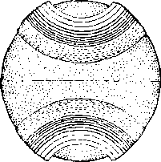The above represents the earth stripped of its annular appendage and with its last lingering canopy suspended over the regions of both poles as vast clouds. Over the tropics and much of the temperate zones the vapors had become so thin that the clear sky could be seen at times in certain places. The sun shone into this thin vapor sky and made it a most brilliant illuminator. The sun itself was dimly seen in this effulgent heaven as a conquering hero waging victorious contest with vapor foes.
During the igneous age the oceans went to the skies, along with a measureless fund of mineral and metallic sublimations; and if we concede these vapors formed into an annular system, and returned during the ages in grand installments, some of them lingering even down to the age of man, we may explain many things that are dark and perplexing today.
As far back as 1874 I published some of these thoughts in pamphlet form, and it is with the hope that the thinkers of this twentieth century will look after them that I again call up the “Canopy Theory”.
Isaac N. Vail.
When it is considered that each one of these creative days or periods was of seven thousand years duration it can be understood how one kind of animal appeared and perished, to be succeeded by another kind and within the same creative day. In due season God created the cattle after his kind, and everything that crcepeth upon the earth, including all the domestic animals, some of which kind are still on the earth. Mach one had come in its due time according to the divine will, each kind had its function to perform, and all were necessarily important in the creative work of Jehovah relative to the earth.
It seems evident that more than forty thousand years had passed since God began the creative work as described in Genesis 1:2. In that period of time the great ball of fire called the earth had shot forth vast quantities of mineral substances in the form of vapors, and these had formed rings around the earth which in due time developed into canopies which enveloped and surrounded the earth.
At regular intervals, and exactly as God had timed them, these respective rings (with probably but one exception) had fallen, depositing in the earth gold, silver and all the precious metals, great beds of iron, coal, oil, asphalt and other valuable substances; the dry land had appeared; the vegetation had come, and one kind after another had perished only to make way for another kind. Then came the fishes and the fowls and the animals of their kind. Seemingly one disaster came after another, and this continued until the earth was cool and in form to produce and sustain plant and animal life.
During all that creative period God had been acting by and through his beloved One, the Logos, who was always faithful and true to the Eternal One. Great hosts of angels had performed their respective parts as messengers of the mighty Master Workman. It is recorded of one of these great spirit beings: ‘ ‘ T1 ion hast walked up and down in the midst of the stones of fire.” (Ezek. 28 : 14) Again it is written: ‘‘Who mak-eth his angels spirits: his ministers a flaming fire.” —Ps. 104: 4.
These spirit beings had watched the great fires relating to the earth and the progressive results thereof. Evidently these incandescent planets or balls of fire held no terrors for them. Each had gone about his respective duty in carrying out the orders of the great Jehovah God in the preparation of the earth. Every one of the heavenly host had watched with keen interest and delight the progressive steps of this development or period of earth’s creation and preparation, because they must have known that it was being prepared for .some creature yet unmade.
Why then was the earth created? Why after great cost and effort was it brought into existence? Why had the great Jehovah God occupied all these centuries and expended so much energy to bring the earth to the condition in which it was now found at the close of the sixth creative day? Why had he laid the foundation of the earth and why had he developed it? If for the benefit of some creature, it must be admitted that his love for that creature is very great. Every one who reads these lines is keenly and vitally interested in the correct answer to the question: Why did God create the earth? Let the sacred Word of God give the answer.
CHAPTER III
JEHOVAH GOD is his own Counselor. He formulates his own plans and carries them out. His counsel, as revealed to man, is set forth in his Word. “Every purpose is established by counsel.” (Prov. 20:18) God has a definite purpose in every thing he does. He employed more than forty thousand years in making the earth. Before he began he knew what he was going to do, and what would be the end thereof. (Acts 15:18) Therefore he had from the beginning a definite purpose in creating the earth as he did create it. His purpose therefore was established by his Word, which is his counsel. We can be certain that he carried out that purpose exactly as he intended from the beginning.
It is written: “I am God, and there is none like me, declaring the end from the beginning, and from ancient times the things that are not yet done, saying, My counsel shall stand, and I will do all my pleasure: ... I have spoken it, I will also bring it to pass; I have purposed it, I will also do it.” (Isa. 46:9-11) “So shall my word be that goeth forth out of my mouth: it shall not return unto me void, but it shall accomplish that which I please, and it shall prosper in the thing whereto I sent it.”—Isa. 55: 11.
It is God’s purpose that the earth shall never be destroyed. “The earth abideth for ever.” (Eccl. 1:4) Since the earth is to stand for ever, it follows that it is the purpose of God that it shall be used for ever. Upon that point God expressly stated: “God himself that formed the earth and made it; he hath established 47 it, he created it not in vain, lie formed it to be inhabited: I am the Lord; and there is none else.”— Isa. 45:18.
Not only did he form the earth in the shape of a globe and hang it in space, but with the expenditure of much energy he made it fit to be inhabited by his creatures. He created it to be inhabited, and his purposes shall not be in vain. To inhabit a place means to dwell there and to remain there. Since the earth must abide for ever, and must be inhabited according to the will of the Creator, it follows that there must be some intelligent creature put on it to properly use it.
That creature is man, whom the Lord God created. It is not only an insult to Jehovah but a presumptuous sin to say that man developed himself. (Ps. 100:3) The theory of evolution of man is an insult to the intelligence of men; and being a greater insult to Jehovah, it is here dismissed without discussion. Either we believe God or we do not believe him. If we believe him we will be guided by his Word.
Process of Creation
Many centuries before the creation of man God laid the foundations of the earth. Whether any of his creatures on Hie spirit plane knew at that time that there was to be a man is not revealed by God’s Word. It seems certain, however, that they were informed that some intelligent creature would be the chief one on earth. There was a season of great rejoicing in the presence of Jehovah God at the time of the laying of the foundations of the earth. His two sons, the Logos and Lucifer, joined in a song of praise; and the knowledge of its significance, together with the wondrous melody of the song, caused all the sons of God to shout for joy to the glory of God. (Job 38: 6, 7) Probably the great Creator informed his heavenly sons that the planet he was now developing would at some future day be presided over by an intelligent creature, and the knowledge; of that fact caused the heavens to resound with joyful song.
The time came for the creation of the intelligent creature man. It seems certain that Jehovah held conversation with his beloved One, the Logos, concerning his purpose of creating man. The record reads: “And God said, Let us make man in our image, after our likeness: and let them have dominion over the fish of the sea, and over the fowl of the air, and over the cattle, and over all the earth, and over every creeping thing that creepeth upon the earth. So God created man in his own image, in the image of God created he him ; male and female created he them. ’’-Gen. 1: 26, 27.
The likeness mentioned in this Scriptural proof could not have meant the bodily form, because God is the Spirit Eternal whom no man hath ever seen or shall see. There is no mention in the record that man should have a body like a spirit being. On the contrary, those who will be changed from human to spirit beings in due course of time will be given suitable bodies for the spiritual realm. There is a spirit body and there is a human body. (1 Cor. 15: 44) It also is certain that the human body is not in the form of a spirit body. (1 John 3:2) In what way then was man made in the image and likeness of the great Jehovah ?
The attributes of God, which are inherent in him, are, to wit: wisdom, justice, love and power, all operating in equal and exact balance. This is proven by his revealed plan. The beasts of the field have never possessed these attributes or inherent qualities. Even the imperfect man whom we now see has some wisdom, some justice, some love, and some power. The fact that these qualities are incomplete shows that the perfect one would have them in perfection and operating equally.
It therefore must be that man was made in the image and likeness of God in this respect, to wit: that he was endowed with wisdom, justice, love and power. In addition thereto it may be properly said that God has dominion over all creation. "When he gave man dominion over the earth, to that extent also man was in the likeness of God. It can not be inferred from this scripture that the heavenly creatures did not possess the likeness of Jehovah. It must be understood from the text cited that man was the only earthly creation made in the image and likeness of God.
Jehovah furnished the plans and specifications for the building of the first man. Marvelous wisdom is displayed in those plans. Provision was made for the exact number of bones, to wit: two hundred and six, to form the human skeleton. A perfect system of circulation of the blood was provided. Provision was made for the lungs to keep the blood pure, and to keep up the circulation; and the most marvelous electrical system, which we call nerves, was provided for. It is not the purpose here to set out the plan in detail, but merely to call attention to the fact that all the minutia were carefully worked out, even to the numbering of the hairs of the head.—Matt. 10: 30.
Then the Logos proceeded to execute those plans to build man exactly according to the specifications. It is written that the man is of the earth and earthy. (1 Cor. 15: 47) This is true because he was made out of the elements that form the earth. For this reason the earth contains every clement that goes to make up a perfect human organism. The process employed in the creation of man is stated thus: “And the Lord God formed man of the dust of the ground, and breathed into his nostrils the breath of life; and man became a living soul.”—Gen. 2: 7.
The animals created prior to the creation of man were also designated souls, because every creature that breathes is a soul. (Gen. 1: 20, margin) There is no intimation in the record that God made man, and then gave him a soul. He formed him, and then into the nostrils of that organism lie breathed the breath which he has provided for all living creatures, and a soul resulted. A soul means a breathing, sentient being having life.
Could it be said that because God is immortal and man was made in his image and likeness, therefore God gave man an immortal soul? Such conclusion is both unreasonable and unseriptural. If God gave man a soul, then the record would so state; and if that soul so given was immortal, then God could never put it to death for a violation of his law. That would mean then that when God would start a life he would have no power to stop it; and this is not consistent with his limitless power. Furthermore, it is written that God only hath immortality. (1 Tim. 6: 16) From the fact that God is the Life-giver, it follows that he has the power to take away life at his pleasure. The Scriptures show that he reserved to himself the right to deprive his creature of life ; therefore it is conclusively proven that man is mortal.
Is not the breath, which God breathed into the nostrils of man, the divine or immortal spark of man which God planted in him? The answer to that must be, No, for the reason that the Scriptures show that God did nothing of the kind ; but that he made man of the elements of the earth, and when the breath of life was put into his nostrils a moving, breathing creature resulted, which is a soul. The breath which man breathes belongs to Jehovah, because everything is God’s. The right to life proceeded from God. The breath is not immortal. The breath itself possesses no life. The breath is that which keeps the blood in circulation by which the human body is animated. The Scriptures plainly state that the life is in the blood.
(Deut. 12:23) Man is the highest order of animal creation. All animals, including man, have the same kind of breath.—Eccl. 3:19.
Human experience conclusively shows that man dies, and any creature that dies is not immortal. A creature to be immortal would necessarily be not subject to death. God created the man as the crowning or highest element of earth’s creation. “What is man, that thou art mindful of him ? . . . For thou hast made him a little lower than the angels, and hast crowned him with glory and honour. Thou madest him to have dominion over the works of thy hands: thou hast put all things under his feet.” (Ps. 8:4-6) God was pleased with his work in the creation of man and pronounced that work ‘ ‘ very good ’ ’. Man was the earthly son of the great Jehovah God, and God loved him. The environment he made for man’s happiness.
Home
A portion of the earth, which was called Eden, God had caused to be brought to a perfect condition. It must have been a beautiful place. The man whom he had made for it and to have dominion over it, was perfect; and his home was also made perfect, because all the works of Jehovah are perfect. (Dent. 32:4) How large an area Eden occupied is not disclosed by the sacred record, but the conditions described indicate that it was a very large place. There is some evidence that Eden was in that part of the earth now known as the mountainous, country of Armenia.
Tn the eastern part of Eden God planted a garden which was a veritable paradise. Trees that brought forth marvelously beautiful Howers were there to please the sight of man with their blossoms, and to perfume the air that he breathed. Other trees that bore all manner of fruit were there, and from these man had provided for him his food supply. Every kind of beast was there, but they were not wild. These beasts were gentle, tame and obedient. They walked before Adam, their master, who gave each one of them a name ; and they heard his voice and responded thereto. There were found numerous birds with marvelous plumage, the bird of paradise and the bird of song. There the climatic conditions were perfect, and a .sweet perfume floated through the zephyrs, which were at the same time filled with song and praise to the glory of Clod.
A great river went out from the garden, which was divided into four parts and watered the country round about. These streams of water added to the beauty and glory of the place. In that garden were much fine gold and precious stones, which man might use for his own pleasure. The brief sacred record says: “And the Lord God planted a garden eastward in Eden ; and there he put the man whom he had formed. And out of the ground made the Lord God to grow every tree that is pleasant to the sight, and good for food; the tree of life also in the midst of the garden, and the tree of knowledge of good and evil.
“And a river went out of Eden to water the garden ; and from thence it was parted, and became into four heads. The name of the first is Pison: that is it which compasseth the whole land of Havilah, where there is gold; and the gold of that land is good: there is bdellium and the onyx stone. And the name of the second river is Gihon: the same is it that compasseth the whole land of Ethiopia. And the name of the third river is Hiddekel: that is it which goeth toward the east of Assyria. And the fourth river is Euphrates. And the Lord God took the man, and put him into the garden of Eden to dress it and to keep it. And the Lord God commanded the man, saying, Of every tree of the garden thou mayest freely eat: but of the tree of the knowledge of good and evil, thou shalt not eat of it: for in the day that thou eatest thereof thou shalt surely die.”—Gen. 2: 8-17.
Then God said: “It is not good that the man should be alone.” God would make man’s happiness complete. When Adam was enjoying sweet sleep God made him a wife. When Adam awakened there stood before him a perfect woman, the most beautiful thing his eyes had ever beheld. Of course he loved her from that very instant. Then and there they began to enjoy together the beauties and glories of their perfect home. They walked and talked together, and they mingled their voices in song and worship and praise to their great Creator. Such a happy and blessed union has never since been known between man and woman, because no two together have ever been perfect since that time.
Adam was the prince of the earth; and with his beautiful princess by his side, and with everything provided that the heart might desire, he reveled in his possessions and in his glorious home. Who had provided these marvelous things for man? Jehovah, the great Almighty God, in the exercise of his loving' kindness had made them all for him. Created with perfect veneration man must worship his Maker, or something in his stead. The perfect man and his perfect wife pursued the even tenor of their way in peace and complete enjoyment.
But there lurked in the pathway of this happy pair a bitter and subtle foe. Because of this foe their happiness was doomed to be of short duration. There is some Scriptural evidence to indicate that approximately two years of time elapsed during which they enjoyed the blessedness of their home and the beauties of their surroundings and uninterrupted sweet fellowship with each other. Then began the sorrows of man, and since then sorrows have ever been present with the human race. There is a reason for this, and that reason we must understand in order to appreciate the great Creator.
The Test
But why would Cod permit, a subtle enemy to ensnare this perfect pair, one who would interfere with their happiness? God did not make that creature an enemy. Lucifer was his name, and lie was one of the sons of God who had joined together in that wondrous heavenly anthem when the foundation of the earth was laid. He was in Eden, the garden of the Lord, wherein man dwelt. God had appointed him to the honorable and responsible position of overlord to man, and had assigned him to his duties in the perfect Eden.—Ezek. 28:13, 14.
As a spirit being Lucifer was not visible to man, but could employ other means to converse with Adam and his wife. The serpent was a cunning and subtle beast, and at that time walked upright, as did other beasts. It possessed beauty and grace. Lucifer employed the serpent to attract the attention of Eve, and used it through which to speak to her. It is manifest from the Scriptures that the animals were able to convey their thoughts to man and to understand man.—Gen, 2: 20 ; 3 : 1, 2.
Lucifer knew that God had endowed Adam and Eve with the power of procreation; that is to say, the power of begetting, generating and producing their own kind. He knew that in time they would exercise this function and would bring forth children, and that these likewise in turn would have children, and that in due course the earth would be filled with a race of creatures all of whom would be proclaiming the praises of Jehovah God. Lawlessness or iniquity then entered into his heart.
The duties of Lucifer were definitely prescribed by God’s law, but he had a desire to exceed these and to run ahead of God and to do things; his own way. lie reasoned thus: ‘Why should I not be like the Most High God? He has dominion over all of heaven and earth. I am assigned as overlord of man, earth’s most intelligent creature; and why should not God share with me in all this glory?’ The result of his musing was that he determined to put his desire into action and to establish his own throne in an exalted place and be equal to the Most High God. (Isa. 14:13, 14) That marked the time when iniquity entered his heart and was found in him by Jehovah, He became the enemy of God from that minute, and the subtle lurking enemy of man. As man blissfully walked over beautiful Eden he was ignorant of the malicious intent lurking in the mind of Lucifer.
Of course Jehovah could have prevented Lucifer from carrying out his wicked scheme, but it did not please him to do so. The perfect creature man must be put to the test, that it might be proved whether he would remain loyal to God or would turn away from God. If he really loved his great Creator and properly appreciated him, then he would withstand all attempts to turn him away from God, and if under this test he proved himself local and faithful he would prove himself worthy of the position he occupied, and worthy to possess in time everlasting life. Man must bo put to the test, and it was no injustice to him to put him to the test. Jehovah therefore permitted Lucifer to go on with his wicked scheme, and permitted man to meet the tost.
God had given his law to Adam before the creation of Eve, his wife. Doubtless Adam had told Eve of this law, because, when the matter was brought to her attention, Eve knew the meaning of the law, and so stated it. Of course Lucifer knew the law that God had given to man, and he must now take advantage of that law in order to accomplish his wicked purpose. lie con-eluded that it would be easier for him to convince Eve of the correctness of his position than it would Adam ; and that with Eve once on his side, the battle would be more than half won, because she would help to induce Adam to join her rather than to be separated from her. Lucifer knew of Adam’s great desire for Eve, and of the influence she exercised over him.
Employing the serpent for his purposes Lucifer approached Eve and engaged her in conversation. According to the Scriptures that conversation was in substance thus:
‘This is a beautiful home you have here, with all these trees, wonderful fruits and Howers. You are not eating all the fruit, however. Because God has said that you must not eat of every tree, is that why you are not doing so?’
Eve replied: “We may eat of the fruit of the trees of the garden: but of the fruit of the tree which is in the midst of the garden, God hath said, Ye shall not eat of it, neither shall ye touch it, lest yc die.”— Gen. 3:2, 3. ‘
Lucifer’s next step was to convince Eve that he, Lucifer, was her real friend and the friend of her husband; and that God in fact was their enemy, and for selfish reasons was keeping them in ignorance of many wonderful things that they should know. His argument to Eve was that the tree which she had mentioned bore good and wholesome food, that it was even beautiful fruit, and that the fruit was greatly to be desired by any one who wanted to be wise. So he said to her: “Ye shall not surely die: for God doth know that in the day ye eat. thereof, then your eyes shall be opened; and ye shall be as gods, knowing good and evil.”—Gen. 3: 4, 5.
Eve yielded to the seductive influence, took the fruit and ate it. Then she showed Adam what she had done, and he also ate of it. This was a violation of God’s plain statement of his law, and the acts of both live and Adam constituted a wilful breaking of that law. From that moment Adam was a, bad man, and his wife was also bad. Their conscience smote them and they hid themselves. They had been put to the test; they had yielded to the lawless influence of one who should have taken a different course ■ and their act had proven themselves disloyal to God, their Creator.
What now must be done to them? Jehovah God is just, which means that he is always right and righteous. To permit his creature to continue in life on earth and to be prince of the earth would be wrong on God’s part, because such a course would make his law of none effect. Besides, if the man surrounded by perfect conditions would disobey God, he would continue to do so under all circumstances, and would induce other creatures to be wicked for ever. For man’s own good, as well as to uphold the majesty of the law, he must meet the penalty fixed by the law.
Justice demanded that the law be enforced. Adam and Eve admitted that they had violated God’s law. They both knew that his law stated: “In the day that thou eatest thereof, dying thou shalt die.” God must take some action because of their conduct. His judicial determination or judgment bearing upon the question must be in harmony with his law; hence Jehovah rendered judgment in the case, which judgment is set out as follows:
“Unto the woman he said, I will greatly multiply thy sorrow, and thy conception: in sorrow thou shalt bring forth children; and thy desire shall be to thy husband, and he shall rule over thee. And unto Adam he said, Because thou hast hearkened unto the voice of thy wife, and hast eaten of the tree of which I commanded thee, saying, Thou shalt not eat of it: cursed is the ground for thy sake; in sorrow shalt thou eat. of it all the days of thy life: thorns also and thistles shall it Lrinir fortli to lime; ami thou shalt eat the herb of the field : in the sweat of thy face shalt thou eat bread, till thou return unto the ground; for out of it wast thou taken : for dust thou art, and unto dust shalt thou return. Therefore the Lord God sent him forth from the garden of Eden to till the ground from whence he was taken. So he drove out the man: and he placed at the east of the garden of Eden, cherubims, and a flaming sword which turned every way, to keep the way of the tree of life. ”—Gen. 3 : 1G-19, 23, 24.
The law of God and his judgment prove that God did not create man an immortal soul nor give him an immortal soul. The law had said: “Tn the day that thou eatest thereof, dying thou shalt die.” (Gen. 2:17, margin) The judgment of God entered against man was in complete and exact harmony with that law. Indeed it could not have been otherwise, because God is always consistent. The judicial determination of God, which is his judgment, reads: ‘Man was made of the dust and back to the dust he must go. ’ (Gen. 3: 19) From the earth he had been taken, and to the earth he must ultimately return in the form of inanimate matter.
The record of the Lord discloses that only Eden was complete and perfect, and that all other portions of the earth ■were unfinished. The statement of the judgment, to wit: “Cursed is the ground for thy sake,’’ means that the earth is unfinished for your sake. And why for man’s sake? Because now he must go to that unfinished part of the earth which brought forth thorns and thistles, and by his own labor produce the food that was necessary for him. Work has always been a great favor to man. An idle person is of no good to himself nor to any one else. It was therefore an act of loving-kindness on the part of God that he provided work for man.
God sent man forth from Eden into that unfinished part of the earth and pave him work there for a period of nine hundred and thirty years, and during that time he would have ample opportunity to think about the terrible mistake he had made. Throughout that period he was gradually undergoing a process of death, and at the end thereof he was dead. Of course God could have killed Adam immediately, but it did not please him so to do; and subsequent revelations of God’s plan show that the gradual death of Adam will ultimately result to the benefit of the human race and to the glory of God.
In Eden there was a tree designated “the tree of life”, because God had named this tree thus; and it is manifest that the creatures whom he should permit to partake of that tree should live and not die. The virtue of life was not in the fruit of the tree. The tree and its fruit were symbols of life, and God's law was and is that if any one proves himself worthy to eat of the fruit of the tree of life then that one shall live for ever and not die. Had Adam proven faithful under the test to which he was put, doubtless he would have been permitted, in due time, to eat of the fruit of that tree of life; and thereby God would have testified to him that he was faithful and true and, as such, entitled to everlasting life on the earth.
God’s law or rule of action never changes. Upon that point his law is: “To him that overcometh will I give to eat of the tree of life, which is in the midst of the paradise of God.” (Rev. 2:7) This rule must mean that any of the human family who will ever, under any condition, attain to life everlasting must be put to the test, and must be victors or overeomers in that test, and thereby prove themselves loyal and faithful; and thus gaining the victory they will be entitled to life everlasting. This is further proof that the tree of life is a symbol of life to those who are obedient unto God, and that none except the obedient will ever be granted life everlasting.
The human organism is of flesh. The mind is the intelligence, or that faculty of the being by which the creature reasons and reaches a conclusion. Will is that faculty of the creature by which the creature determines to do or not to do a certain thing. The temptation was presented to Eve in three forms; namely, a test of the flesh, a test of the mind, and a test of the will. She saw that the tree bore good fruit to eat; and she reasoned, ‘ That would be good for my body or organism. I will use my powers now for the gratification and welfare of my flesh.’
And she saw that the fruit was pleasant to the eye. It appealed to her fancy, and she was pleased with its external appearance. It was beautiful to look upon and she desired it. Hence she said, ‘I will have this most beautiful fruit.’ She saw that it was a tree to be desired to make one wise. It appealed to her pride or her sense of her own importance and worth, and she desired to be wise even though before God’s time. She determined to exercise her will contrary to God’s will. Therefore she said, ‘I will eat and become wiser than other creatures, yea, even as wise as God himself.’
Upon all three points Eve was tempted, and upon each one she yielded and fell. She was so impressed with her own importance that she gave the fruit to her husband, and he did eat. He did not want to be separated from her. He knew that what she had done would separate her from God, and he preferred to yield to the desire of his flesh rather than to be obedient to God, and he ate. He saw that she was beautiful, appealed to his eye; and he desired to possess her and to be with her; and he yielded upon this point. He knew that it was the will of God that he should not eat. He knew that he could exercise his own will contrary to God’s will and thus run ahead of Jehovah. Doubtless it was God’s purpose to let him cat of that fruit some time. To exercise his will in a selfish way Adam yielded upon this point. Upon all three of the temptations man fell.
Subsequent revelations of God’s Word show that these three methods of temptation God has not hindered, and has permitted Sedan to present in a subtle form to every one of the human family that has claimed to be in harmony with God. It is written in his Word: “For all that is in the world, the lust of the flesh, and the lust of the eyes, and the pride of life, is not of the Father, but is of the world. And the world passeth away, and the lust thereof: but he. that doeth the will of God abideth for ever.” (1 John 2: 16, 17) This is further proof that any one of the human family that is ever granted eternal life must be put to the test, and under the test prove his loyalty and faithfulness to Jehovah.
Adam and his wife were expelled from their paradise home. They went out in disgrace and under the sentence of death. The Lord set a watch at the entrance of the garden to prevent their return. They had wilfully broken the law of God, and now began their punishment which the law inflicted upon them. When in their Eden home their food was perfect. Outside of Eden grew thorns and thistles, and trees which produced poisonous foods. From these by laborious efforts they must obtain the food which in course of time would poison them, overcome them, and cause them to die. It was a dark day for them when they left Eden, and it continued dark. Their long journey of sorrow had begun. At the end of nine hundred and thirty years in darkness and sin Adam went down into the pit, and the earth closed over him.
Another part of the judgment was: ‘ ‘ Unto the woman he said, I will greatly multiply thy sorrow and thy conception: in sorrow thou shalt bring forth children; and thy desire shall be to thy husband, and he shall rule over thee.” (Gen. 3:16) Six thousand years of the suffering of women in giving birth to children abundantly testify to the enforcement of this part of God’s judgment. The Lord had good reason for this punishment, and in due time it will prove a blessing to man. It was there expressed as the law of God that the woman must be subject to the man. There was good reason for that rule also. Because that rule has been so frequently violated, much suffering has resulted and many families have been disrupted.
Valuable lessons are usually dearly bought. For their own good God would have his creatures learn the lessons which he has provided for them. In due time all men must learn that Jehovah God does everything orderly. They will learn that man is the head of the woman, that Christ Jesus is the Head of his church, and that Jehovah is Head of Christ and the Most High God over all. The enemy Satan has busied himself to see that this rule has been violated in almost all homes. He has made of the husband a beastly and vicious overlord, and it has thereby been easy to induce the woman to believe that she should not be subject to him. Discord and sorrow have been the result.
When God created Adam and Eve he said: ‘‘Be fruitful, and multiply, and fill the earth.” There he expressed his will that they should produce a race of their own kind, and for such human race he created the earth. When Adam and Eve left Eden they had not exercised this divinely-given function. Later their children began to be born. (Gen. 4:1, 2) What kind of children should be expected to be born of imperfect parents under the sentence of death ? It must be borne in mind that Adam had no right, to life, and therefore he could not transmit to his offspring the right to life. In addition to the absence of a right to life, Adam was undergoing the process of death, and it follows that
his offspring under such circumstances could not be perfect.
Both Adam and Eve now were sinners. Therefore their children must of necessity be born in sin. Later one of the prophets of (tod recorded Jehovah’s rule governing all cases: “Behold, I was shapen in iniquity, and in sin did my mother conceive me.” (Ps. 51: 5) Upon this same point another of God’s inspired witnesses wrote: ‘‘Wherefore, as by one man sin entered into the world, and death by sin ; and so death passed upon all men, for that all have sinned.” (Rom. 5:12) These scriptures, stating the rule of Jehovah, explain why all children have been born imperfect and without the right 1o life, and why in due course of time they become sick and die.
All of this trouble has been caused by sin. And what is sin? Sin is a transgression of God’s law. (1 John 3: 4) All lawlessness therefore is sin. To be lawless means to be disloyal to God. Lucifer knew the law of God and broke it. Adam knew the law of God and he transgressed it. The wages or penalty for sin is death. (Rom. 6: 23) There is no departure from these rules, because God changes not.—Mal. 3: 6.
The Devil
Lucifer was the first one of God’s spirit creatures to sin. Adam was the first one of the world, and the first of the earthly creatures, to sin. By his unlawful act sin entered into the world. Is the death penalty to be inflicted upon Lucifer for his transgression of God’s law? The judgment of God is that he must die and remain for ever dead. (Ezek. 28:15-18; Heb. 2: 14) The penalty for his violation of the law will be enforced in God’s due time. God has a due time for everything he does.
The name Lucifer means light-bearer, or morning star. After his sin he was known by the names of Dragon, Satan, Serpent and Devil. (Rev. 20:1-3) When Jehovah gives a creature a name that name carries with it great significance. Dragon signifies de-vourcr; Satan means opposer, or adversary; Serpent means deceiver; while Devil means one who slanders. These names indicate the wicked and completely abandoned course that the Devil has pursued since the crime of Eden.
From then till now he has been the enemy and opposer of (rod, and likewise the enemy and adversary of every one who has tried to be obedient to God’slaw. One who therefore has been thus opposed by Satan has to that degree been put to the test. It is evident from the Word of the Lord that Jehovah purposes to give all of his creatures an opportunity to choose to follow the Devil or to be obedient to God, and this explains why the execution of the judgment against Satan is so long deferred.
Ray of Hope
Another part of the judgment entered by Jehovah at the time Adam was sentenced is this: ‘'And I will put enmity between thee and the woman, and between thy seed and her seed; it shall bruise thy head, and thou shalt bruise his heel.” (Gen. 3: 15) There is a twofold meaning to this Scriptural statement. The serpent, then a beast walking upright, was sentenced to ever after crawl on its belly in the dust, and to be despised and killed by man. The serpent, also being used by Lucifer, became a symbol of deceit, representing the Devil. The “seed” of the serpent here mentioned means those creatures who would become tools or wilful representatives of the Devil.—John 8: 40-44.
The woman is a symbol of God’s organization called Zion, which gives birth to the ‘seed of promise’. That “seed” is The Christ, God’s Anointed One. (Gal. 3: 1G, 27, 2(1) The judgment states that there would thereafter be enmity between the 'seed of the serpent’ and the ‘seed of the woman’. The Devil and his angels and visible representatives have openly and violently opposed every one who has earnestly sought to serve the Lord and follow in the footsteps of Christ Jesus. The fight has been and is between the anointed of the Lord on one side and the Devil and his angels on the other.—Eph. 6:12,
In this part of the judgment there is a vague promise made of victory by the ‘seed of the woman’, in this, that the ‘seed of the woman shall bruise the serpent’s head’. It follows that the “seed” must be brought forth and until that time God would permit the enemy Satan to go on with his nefarious work and to do his worst, and this he has done. But God’s promise is that Satan shall meet defeat, and that in due time he shall be bruised under the feet of the Anointed One. (Rom. 1G: 20) The fact that the head of the enemy is to be bruised, and that it is to be done by the ‘seed of the woman’, causes a ray of light to shine upon the pathway of man and indicates that there is a better time coming in the future.
Since that better condition must be brought about by ‘the seed of the woman’ as God’s instrument, such “seed” must be made perfect and in complete harmony with God. That this may be done, it follows that there must, be a “new creation” brought forth by Jehovah before the better condition of man can be had. A few of the offspring of Adam have tenaciously held to that ray of hope. This has been true of some of them even though they could not comprehend its meaning. But today the student of the divine plan who with thankful heart reverentially pursues the unfolding of God’s purposes rejoices in this faint ray of hope held forth in the judgment entered long centuries ago.
From the day that God entered that judgment he knew every detail of his plan concerning man. His love, wli'cli Is the perfect expression n-f In; rmwIGsh-ness, provided all the details of that plan 1o be carried out in due time. That plan provides for the recovery of man by and through the means of a new creation. The wisdom of God directed the unfolding and carrying out of his plan gradually. When it is eompkkd it will reflect his glory, his wisdom, his justice, his love and his boundless power. In faith let us now hasten on to learn more of God’s wonderful works, because one learning will find the way that leads to life and happiness.—John 17: 3.
CHAPTER IV
DEGENERATION means the process of deterioration, that is to say, growing worse and worse, and persisted in it leads to debasement and complete degradation. Once outside of Eden the degeneration of mankind began and continued until it reached a climax.
Perfect man is one perfect in mind and body, and possessing the right to live. The judgment of Jehovah entered against Adam took away his right to life. When expelled from Eden he still possessed soundness of mind and organism; but being condemned to die the decree must be carried out, and the death process began. Although man had disobeyed his Creator, and thereby forfeited all claims upon his friendship, yet God was considerate of him. He and his wife were naked. <:Unto Adam also, and to his wife, did the Lord God make coats of skins, and clothed them.” (Gen. 3:21) The presumption is that the skins were taken from animals, but such is not necessarily true nor is it so important. The fact that God clothed them was the important thing.
There could have been no need to have such coats to protect them from the storms or inclement weather, because at that time there were no storms on the earth, neither was there excessive cold. The temperature of the entire earth was practically the same, produced by reason of the aqueous canopy that enveloped the earth. The coats were provided probably merely as a covering to hide their nakedness from each other’s eyes, and from the eyes of their children when born. Whatever the reason, it was an act of loving-kindness on the part of the great Creator.
The record concerning the birth of children to Adam and his wife is brief. It does not claim to give the names of all their children. Cain is the first one named, and Abel the second. It is certain, however, that other children were born, both male and female, and lived contemporaneously with Abel and Cain. Doubtless both of these men were the heads of families. The Scriptures specifically state that Cain had a wife; and she must have been one of Adam’s children, therefore the sister of Cain. (Gen. 4:17) The name Cain means “acquired”. Eve would have in mind the seed that God had promised that should bruise the serpent’s head, and she would reason that now she had acquired that seed that would ultimately bring her victory.
Cain was a tiller of the soil. He must labor among the thorns and thistles in his endeavor to produce food for himself and other members of the family. Of course his parents had told him about their experience in Eden, and how God had provided that they should work to produce their food in the sweat of their brow ; and as he fought with the thorns and thistles he would be inclined to grow morose and bitter. Cain had inherited from his parents all the bad disposition possessed by each of them. They were both bad, because they had violated God’s law. We would understand then that Cain was morose, sour and bitter of heart.
Abel, the second son, was a shepherd. His name means feeder, or nourisher. He helped to provide for the family of his father and probably had a family of his own. From his parents he had also learned of their experience in Eden. They would have told him of their perfectly beautiful home, and how because of their disobedience God had expelled them from it, and that he had left a faint hope that some day they might have his blessing again.
Throughout the day Abel was in the broad fields herding his flocks and protecting them from the attack of wild beasts. At night-time he would see to it that they were properly cared for and sheltered from harm; and then in the long and silent vigils he would meditate upon what he had learned from his parents concerning God, and what he saw about him manifested in God’s creation. He would reason that the grei’t God who gave life to his father and mother also gave life to the sheep of his flock; and that if he, Abel, took pleasure in caring for and protecting dumb animals no doubt the great God would take pleasure in caring for all who would obey and serve him. He reverenced Jehovah God, and his faith in the Lord grew and ho had a desire to do the will of Jehovah.
Having learned from his mother concerning the “seed” that should prevail against the enemy, Abel would look forward to some future time when God would provide for the blessing of himself and all others who would serve him. His faith was pleasing to God and he grew in the favor of the Lord.
Satan of course would be keeping close account concerning these two sons. If one of them seemed to have the favor of Jehovah, to Satan that would moan that such an one was his own enemy; and he would take steps to cause his destruction.
In the process of time these two sons, Cain and Abel, brought their offerings unto the Lord God. The sour and grouchy Cain came with some fruit, the result of his labors. Being extremely selfish he would be thinking about how hard he had labored, and the great number of thorns and weeds he had to destroy in order to produce that fruit, and now he must sacrifice it unto the Lord and would get no profit for himself. He reasoned that he was conferring a great favor upon God by bringing this sacrifice unto him, especially when the Lord did not need it. He would conclude that, being the first son, he was the favored one of Jehovah. He was proud and arrogant, sour and mean • and the Devil had planted all these things in his heart.
At the same time came Abel, the kind and reverential man. He brought his sacrifice unto the Lord. He reasoned that all he had was a gift from God, and now he desired to show his appreciation by bringing the best he possessed unto the Lord. He slew the choicest ones of his flock and brought the flesh, together with the fat, the latter representing the best endeavors, loving zeal, and unselfish devotion to God and to righteousness. It was a real sacrifice for him to give up the best animal, but he considered his best a very small thing to give to the Lord God. It is written : ‘ ‘ And the Lord had respect unto Abel, and to his offering: but unto Cain, and to his offering, he had not respect. ’ ’—Gen. 4:4, 5.
Abel had faith and loved God. Cain had no faith and was selfish and sour. Abel, because of his faith, was counted righteous in the sight of God. Cain had an evil heart and was disapproved. “By faith Abel offered unto God a more excellent sacrifice than Cain, by which he obtained witness that he was righteous, God testifying of his gifts: and by it he, being dead, yet speaketh. ”—Heb. 11:4.
Seeing that God had no respect for a selfish and faithless offering, Cain grew very angry, and manifested his anger in his countenance. The opportune moment had arrived for Satan to act. He now induced Cain to conclude that he should put his brother out of the way, because he was a rival and threatened to become the most important one of the family. The selfish and sour Cain bided his opportunity; and when he found his brother in the field he slew him. To cover up his wicked deed he resorted to lying. (Gen. 4: 8-11) Cain had now wholly become a servant of the Devil, and like his master he had become a liar and a murderer. (John 8: 44) Satan the Devil would reason that the death of the righteous Abel not only would rid him of an enemy but would deter others from serving Jehovah God.
.Years passed and many other children were born, both male and female. Among these was Jabal, who headed the tribe of cattle-raisers and who dwelt in tents. Then came Jubal, who organized and trained musicians to play upon the harp and the organ. Then the record shows Tubal-eain, who was an instructor in the art of making brass and iron. Enos was a grandson of Adam, and by the time he came upon the scene there was a great number of human bei-.igs on the earth ; and all of these were under the influence of the Devil. The practice of mockery and hypocrisy was now introduced by the people’s calling themselves by the name of the Lord but in truth and in fact ridiculing and blaspheming his holy name.
When Adam went forth from Eden he was not physically weak, nor was he sickly. Although deprived of his right to life, yet he was in vigor and strength. Gradually he must pay the penalty for his wrongful act. When he was 130 years old he begot another son in his own likeness and called his name Seth, because he was regarded as a substitute for Abel, who had been murdered by Cain. Thon came other sons and daughters. Adam was past 200 years old when lie saw his great grandchildren in strength and vigor of numhood and womanhood, and himself still able to beg-’t children. After lie begot Seth he lived SOO years and begot many sons and daughters. Adam died at the age of 930 years.
The strength of man in his vigor, and his ability to fight against the elements of the earth, are indicated by the length of time that men survived, as recorded in the Scriptures. Seth lived for 912 years. Enos, the grandson of Adam, died at the age of 905 years. Cainan, the son of Enos, lived to be 910 years of age. Mahalaki'l lived for 895 years. Jared, when at the age of 162 years, begat Enoch. Thereafter he lived 800 years, and died at the age of 962 years. Enoch loved God and served him. When he was 365 years old, and while still in the vigor and strength of manhood, God took him away that he might not feel the pangs of death. His son Methuselah lived to the age of 969 years.
But be it noted that neither Adam nor any of his offspring ever lived a full thousand years. Why was that so? Because the law of God, which was given to Adam, stated: “In the day that thou catest thereof, dying thou shalt die.” (Gen. 2: 17, margin) This is proof that Adam must gradually die and that by the end of the “day” he must be dead completely. All the other men mentioned were Adam’s sons or grandsons, and were born without any right to live; and they must die within a day, because they had inherited the result of Adam’s wrong-doing.
A “day” is used io represent any fixed period of time, and when related to creation the Scriptures show that each day is seven thousand years long. When related to the creation of man, and when speaking of time as related to man, a “day” in the Scriptures is one thousand years in duration of time, if computed in the manner that man computes time. “One day is with the Lord as a thousand years, and a thousand years as one day. ’ ’—2 Pet. 3: 8.
Enoch was the seventh generation from Adam; and during all that period of time of more than 600 years only two men, Abel and Enoch, manifested faith in and love for the Lord God and served him. The Devil had caused Abel to be murdered, and God took away Enoch that he might not see death. No doubt the Devil would have caused him to be killed had not God protected him. All other men on earth were under the influence of Satan and were wicked. After the death of Enoch wickedness continued to increase, and the race degenerated year by year. Until the birth of Noah there is no proof that there was on earth another God-fearing mm, after Enoch was taken away. The name Noah means rest, or comfort., and evidently signified that during his time some change might take place which would be a comfort to him and increase his hope.
Women
A perfect woman is the most beautiful to look upon of all earthly creatures. Eve, of course, was the only perfect woman that has ever lived. God made her perfect. (Deut. 32:4) When she left her paradise home in Eden she still maintained her grace and beauty of form. While undergoing the process of death she gave birth to her daughters and sons. When these daughters and granddaughters of Eve grew to full womanhood they were such expressions of feminine beauty as no human words can describe.
.'lain7 poets and writers of prose have employed all the adjectives known to describe the beauty of women who lived when Greece was at the zenith of its glory and power. If the women of that time were beautiful, then the daughters and granddaughters of Eve were far more beautiful. We must remember that these women were only a short distance from perfection, as far as bodily charm is concerned. In the days of ancient Greece, however, the race had greatly degenerated ; and in the present time the degeneration is even greater.
It is only by comparison that we can now approximate the natural adornment of the women that lived on curtli in the time cf Noah. Like their mother Eve, those women were va'n. Readily they yielded to the temptations that would gratify the desire of their flesh or the desire of their eyes, or that would appeal to their pride. They craved to be admired and flattered. Voluptuous and sensual, having their minds turned away from God and righteousness, they would readily yield to any inilueiice that promised them exaltation or selfish gratification. That which appealed to these godless women more than anything else was strong men who flattered them and gave them praise, and who gratified their selfish desires.
Woman has ever been the most beautiful and most dangerous amongst the creatures of earth. Her beauty and attractiveness allure man, and blind selfish man to higher and nobler things, and induce him to forget God. It was such seductive influence exercised by the charming Eve that led Adam to a criminal’s grave. A good and virtuous woman, wholly devoted to God, is a blessing to a good man, because she knows and keeps her proper place. But he who yields to the influence of an ambitious and selfish woman walks in the path that leads to degradation and death. Almost all women of Noah’s time were selfish, sensual, and walked in the way of vanity. Beautiful and graceful of form, they were fair to look upon; yet, filled with pride, they had an excessive desire to be noticed and to be approved by men.
Devil and His Angels
Satan the Devil, the opponent of God and enemy of all righteousness, now concluded that the time was opportune to make another move. He had begun his wicked schemes by using a woman, and now he would continue to use women for his nefarious purposes. During the period of 1600 years since the expulsion of man from Eden, only three men had taken a firm stand for the Lord God. Satan had caused one of these to be murdered, and the other God had taken away, Satan could use these circumstances for a good argument to further his wicked designs.
In heaven there was a host of spirit creatures called angels and who were “sons of God”. These creatures would be watching the course of earth’s creation. The Scriptures clearly disclose the fact that angels had the power to appear in human form, and this must have been by the consent of Jehovah. (Gen. 18 :1-10 ; Judg. 13:1-21) When these “sons of God” appeared in human form they were even more attractive to the women than were the sons and grandsons of Adam. Satan’s scheme was to work by and through the women in order to get a race of people on earth which he could completely and absolutely control. From what transpired and is recorded in the Scriptures, the conclusion here reached seems to be warranted.
Satan probably called before him the many heavenly sons of God and reasoned with them like this: ‘For some time past you have been watching the drama amongst men on earth. Since Jehovah assigned me to the office of man’s overlord I have possessed the power of death. Jehovah decreed that I should die, and that by the power of the seed of the woman. Such was an idle threat by Jehovah. You have seen that during the past 1600 years two men have taken the side of Jehovah. One of these I caused to be put to death; and Jehovah, fearing what might be done to the other one, took him away. All men now on earth have acknowledged me as god. The man Noah is the only exception. In due season I shall give my attention to him and put him out of the way. ’
Doubtless Satan had said to the angels something like this:
‘If you sons of God will now join with me and give your allegiance to me we will establish a great empire on earth and people it with a class that will live for ever and not die. You have the power to appear in human form. Yon are far greater in strength than any of Adam’s race. Your vigor is undiminished. The women on earth are the daughters or offspring of Adam. Behold, how wonderfully beautiful are those women. There is nothing like them in the spiritual realm with whom you could satisfy your pleasures. You can have them for wives. You can indulge in sex pleasure. You can produce a race far greater than the children of men. With me as your leader and prince we can have the greatest empire that ever existed, and God can not interfere. The period that has elapsed from Eden until now has demonstrated to you that I am not subject to Jehovah's power. Come now and join with me.
‘We will let this foolish Noah take his own course until it suits me to destroy him. We will first show him that we can take the women and use them as we please. All men will soon join our force; but if any should not, we will put them out of the way. My power will be supreme. You know that God has declared that man shall die, and that none of his offspring shall live more than a thousand-year day; but the offspring resulting from your cohabitation with these women on earth shall live on and never die.’
This plausible and seductive argument of Satan would turn the minds of many of the sons of God on the spirit plane, and they yield'‘d to him. Exercising their powers they appeared as men. They were mighty men indeed, and walked about in the earth and took an account of the situation and prepared to carry out Satan’s advice. They took careful note of the women and observed that they were voluptuous, attractive and alluring. They would of course exhibit to the women their prowess, that they might be greatly admired by the women.
The mind of a woman is easily turned by an unusually strong, vigorous and attractive man. These men were veritable giants. Amongst the children of men there was none to compare with them. The women fell easy victims to their flatteries and seductive speech, and the record does not disclose that tli<-y made any objection to becoming their wives. “And it came to pass, when men begun to multiply on the face of the earth, and daughters were born unto them, that the sons of God saw the daughters of mon that they were fair; and they took them wives of all which they chose.”—Gen. 6:1, 2.
The Scriptures clearly prove the fact that these sons of God appeared in the earth as “giants” in the form of men, and that then these giants took the daughters of mon for their wives. Those beings, stalwart, princely, handsome fellows, were attractive to the women. When these giants cohabited with these vigorous women the result was an offspring of “mighty men”. The Scriptures describe them thus: “There were giants in the earth in those days; and also after that, when the sons of God came in unto the daughters of men, and they bare children to them, the same became mighty men, which were of old, men of renown.”— Gen, 6; 4,
These sons of God, appearing in the forms of men and then forming an alliance with women and cohabiting with women for the purpose of bringing forth children, thereby departed from their first estate, to wit, the estate of sons of God on the spirit plane; and because thereof they became a part of the Devil’s organization. They became his allies and his servants, and thereby became devils with Satan their leader as ‘ ‘the prince of the devils ’ ’.—Matt. 9: 3-4; 12: 24; Mark 3 : 22 ; John 12:31; 14 : 30 ; 1 Pet. 3 : 19, 20.
These devils, appearing as human giants and producing a race by cohabiting with women, would in a short time be able, together with their offspring, to dominate all the peoples of the earth who would yield to them. They debauched the human race, turned their minds away from God, and caused them to indulge in every conceivable deed of wickedness. The offspring of this unholy union, together with all tho men and women who joined with them, became extremely wicked.
“And God saw that the wickedness of man was great in the earth, and that every imagination of the thoughts of his heart was only evil continually. And it repented the Lord that he had made man on the earth, and it grieved him at his heart.” (Gen. 6:5, 6) This terrible wickedness grieved Jehovah God in his heart. The perfect man that he had made and placed in a perfect home and had given the power and authority to fill the earth with a perfect race of people, had now degenerated until all the earth was filled with violence, and his every thought was vile and wicked.
Up to that time man had lived for a period of more than 900 years before he died. God now declared his purpose of limiting the duration of human life to a period of 120 years. “And the Lord said, My spirit shall not always strive with man, for that he also is flesh: yet his days shall be an hundred and twenty years.” (Gen. 6:3) After Noah’s day Moses lived to be 120 years old, which is proof that God had placed this limitation upon the span of human life. (Deut. 31:2) “And Moses was an hundred and twenty years old when he died: his eye was not dim, nor his natural force abated.” (Deut. 34:7) After Moses no one lived to exceed 1’20 years.
Amongst all the men of earth there was one, to wit, Noah, who had faith in God and who remained loyal to God against all opposition. He had held himself separate and free from the fallen angels, who had become demons in human form. Ue resisted their evil influence, and notwithstanding their efforts or attempts to take his life he stood firm for Jehovah God. “But Noah found grace in the eyes of the Lord. These are the generations of Noah: Noah was a just man. and perfect in his generations, and Noah walked with God. And Noah begat three sons, Shem, Ham, and Japheth.”—Gen. 6: 8-10.
All the peoples of earth had gone from bad to worse, and the earth was filled with violence. The righteous and loving God now had. one man on earth as his witness. All others, in defiance of God, had become the dupes of the ultra-wicked Satan and the enemies of God and righteousness. Therefore God determined that he would destroy this wicked element and start the human race afresh. “The earth also was corrupt before God, and the earth was filled with violence. And God looked upon the earth, and, behold, it was corrupt; for all flesh had corrupted his way upon the earth. And God said unto Noah, The end of all flesh, is come before me ; for the earth is filled with violence through them: and, behold, I will destroy them with the earth.”—Gen. 6:11-13.
The Ark
Noah was a preacher of righteousness. (2 Pct. 2: 5) By this it is understood that he boldly took his stand on the side of the Lord God and proclaimed God’s righteousness. In full faith and strength of the Lord he told others that Jehovah bad decreed that all the wicked should be destroyed. His preaching would furnish tb.e occasion for the devils in human form, under the leadership of Satan, to mock, ridicule and defy the Almighty God. Probably Satan promised his servants that some day he would strike Noah dead with a bolt of fire. He may have made many efforts against Noah, but nothing deterred Noah from proving his faithfulness to the Lord.
There is no evidence that Satan himself materialized in human form, but rather that he directed and controlled the affairs while still invisible to human eyes. There are many scriptures to show also that there were associated with him many angels, whom lie had seduced from the path of righteousness and caused to join his evil organization, and who did not materialize in human form, and who therefore did not leave their first estate as did others. These he made officers in his invisible organization. There was therefore an invisible and a visible part of the world that then existed.
By the term world is meant an organization of men into a form of government under the supervision of an invisible overlord. Heaven symbolizes the invisible part of that organization, while earth symbolizes or represents the visible part of it. It will be noted that God had said to Noah: 'I will destroy all flesh, and I will destroy them with the earth’; and again he said: “Everything that is in the earth shall die.’’ (Gen. 6:13, 17) The word earth is here used symbolically, and represents not only the living creatures on earth but the visible part of the Devil's then organized power.
God then directed Noah to build an ark. He gave him a complete statement of the plans and specifications as to how to construct it. The plans provided that the great boat or ark should be 450 feet long, 75 feet broad and 45 feet high. This ark was to be a means of salvation for Noah and those whom he took into the ark with him. In obedience to the Lord’s command Noah proceeded to construct the ark according to God’s specifications. His course of action in going about the work of preparing the material ami building the ark constituted preaching. His actions spoke louder than words. Since his course of action was directed by the Righteous One, he was doing the right thing; and he was thereby a preacher of righteousness to all who observed him.
In addition thereto, of course, it would be expected that Noah would tell others of God’s purposes. By his course of action and by his speech he condemned the course of the world. Noah, by his speech and course of action, served notice upon all those about him that he had faith in God. He proved that faith by his works. His preaching was a condemnation of God’s opponents. His faith obtained for him the favor of the Lord, by which he and his family were saved. “By faith Noah, being warned of God of things not seen as yet, moved with fear, prepared an ark to the saving of his house; by the which he condemned the world, and became heir of the righteousness which is by faith.”—Heb. 11: 7.
What length of time was required to build the ark the Scriptures do not definitely disclose, but it must have occupied much less than 100 years. Noah was 500 years old when he begot his sons, and he was 600 years old when he went into the ark. (Gen. 5:32; 7:6) During all of that time Noah, the preacher of righteousness, would be the object of scorn and ridicule by the wicked ones of earth, and by the devils in human form as well as by the invisible devils. Sixteen hundred years under the influence of Satan had completed the degeneration of the human race. What an awful spectacle! What a dreadful degradation! In mockery and in defiance of Jehovah God the people resorted to all manner of wickedness and violence. The evil ones encumbered the earth and were fit only for destruction. Out of all the people of earth only one man and his immediate family had faith in God and, by the Lord’s grace, had stemmed the tide of wickedness and were counted righteous in the sight of the Lord.
Because of his faith God took Noah into his confidence and told him of his purposes. To Noah he said: “And beheld, I, even 1, do bring a flood of waters upon the < ni‘t!i, to dtsl’.’oy all flesh, wherein is the breath of life, from under heaven; and every thing that, is in the earth shall die. But with thee will I establish my covenant: and thou shalt come into the ark; thou, and thy sons, and thy wife, and thy sons’ wives, with thee. And of every living thing of all flesh, two of every sort shalt thou bring into the ark, to keep them alive with thee; they shall be male and female. Of fowls after their kind, and of cattle after their kind; of every creeping thing of the earth after his kind; two of every sort shall come unto thee, to keep them alive.”—Gen. 6:17-20.
In obedience to God’s command Noah brought the animals and the birds and the fowls and placed them in the ark which his laborious efforts, spread over many years, had prepared for the wonderful event now about to happen. Then again the Lord spoke to Noah: “And the Lord said unto Noah, Come thou and all thy house into the ark; for thee have I seen righteous before me in this generation. For yet seven days, and I will cause it to rain upon the earth forty days and forty nights; and every living- substance that I have made will I destroy from off the face of the earth. And Noah did according unto all that the Lord commanded him.”—Gen. 7 :1, 4, 5.
In the eyes of the evil ones Noah would appear in a very ridiculous light. With his family and a great herd of animals and numerous birds and flocks he was now abiding in the mighty vessel built to ride the waves, and yet never a drop of water had been upon it. It stood free and clear upon dry land. For years he had been preaching to the people of the coming flood, and yet no tangible evidence of its coming was given. With full faith and confidence in God Noah entered the ark and waited upon the Lord. It was his faith that was pleasing to the Lord. Now the time was come when all should be permitted to see whether they had taken a proper course by following the Devil or whether Noah had taken the wise course by trusting in Jehovah God. The great and crucial test had come I The end of the world was at hand!
The Flood
The rivers of waters flowed peacefully on toward the seas. The water springs gave forth their regular supplies for man, w’hile lakes afforded pleasure to the eye and bore up the vessels of men that glided over their peaceful bosoms. Never in the memory of man had these rivers overflowed their banks, nor had the water supply been increased or diminished. No man had ever seen any rain fall, because none had fallen since man was upon the earth. Moisture was supplied for the vegetation by a mist that arose from the earth to water it.—Gen. 2:6.
Why then should any one expect a great rain to come? God had said that it was coming, and his word is true; and Noah believed and obeyed accordingly. The Lord God knew exactly what day and hour he would open the windows of the deep. He told Noah that the flood would come seven days after he entered the ark. Noah went in and waited. Six days had passed and no rain had come, and now the seventh day was h^re.
All during the time that the ark was in the course of construction wickedness continued to increase. The angels who had assumed human bodies, under the leadership of Satan, had indulged in every conceivable crime, and their offspring bad joined them in crime, and their thoughts were nothing but evil. The completion of the ark and the entrance thereinto by Noah would be a signal to these devils in human form, and their human slaves, to indulge in the greatest revelry, debauchery and crime. The Devil, or some of his angels, at that time would doubtless have made a bonfire of the ark and destroyed it and its inmates, had not the hand of the Lord restrained them. God’s faithful witness was inside that ark. The Lord God always protects his faithful ones. “The angel of the Lord eneampeth round about them that fear him, and de-livereth them.”—Ps. 34:7.
The time had now arrived when God would make a demonstration of his power and magnify his name before all creation. The Scriptures show that these evil angels, who had left their first estate, debauched the human race and turned them into wickedness, were at some time imprisoned. Before destroying all flesh upon the earth it is reasonable to conclude that God would first imprison these evil angels, and that therefore the imprisonment did take place before the destruction of flesh upon the earth. This done, then the people would see how futile it had been to follow the leadership of Satan.
The Devil and his cohorts would resist to the utmost this restraining of the fallen angels whom he had induced 1o take human form. They would, however, be powerless against Jehovah God. The Scriptures show that the angels of the Lord have fought on the side of righteousness and have fought Ilie forces of darkness. (Judg. 5:20; Rev. 12:7) That these fallen angels who debauched the human r;we were abased the Scriptures plainly state. (1 Pet. 3:19, 20) Their great crime was in leaving their first estate and cohabiting with human beings. Now God would restrain them by putting them into prison until the time to inflict upon them the final judgment.
With the taking and restraining of these evil angels there must have been a great commotion in heaven. Satan, at the head of a host of evil ones, would be leading the fight on his side. On the other side of the battle line would be found the Logos, Jehovah’s faithful Executive Officer, aided and served by a host of righteous and holy angels. In this fight the Lord God prevailed; the evil angels were taken, abased and put in darkness, thus demonstrating God’s supreme power. “God spared not the angels that sinned, but east them down to hell, and delivered them into chains of darkness, to be reserved unto judgment.” (2 Pet. 2:4) “And the angels which kept not their first estate, but left their own habitation, he hath reserved in everlasting chains, under darkness, unto the judgment of the great day.” (Jude 6) Now the evil men anil women of earth must meet their fate. They had come to the full in wickedness and must die.
The animals were gathered into the ark as God had commanded Noah. That marked the six-hundredth year of Noah’s life. It was on the seventeenth day of th" second month. The hour of doom for the evil world had struck. Far away to the north was heard a mighty roar, as though mountains were being torn from their foundations. Far distant from the south a like terrib1. ■ sound filled the air. The wild beasts of the field and the fowls of the air sensed the oncoming of a terrible calamity. A great flood of waters was rushing from both the north and the south. “All the fountains of the great deep [were] broken up, and the windows of heaven were opened.”—Gen. 7:11.
Through the valleys mighty solid walls of water rushed on. Trembling, crushing and falling, on came these walls of irresistible power. Upon the bosom of the flood were borne great timbers, wrecked buildings, quantities of earth and mighty boulders. With the flood came strong winds that froze, the marrow in the bones of the creatures that had never before known of cold. Reaching a city the flood snuffed it out and ground its buildings to powder. Terror-stricken, the people fled to the hills, only to watch the oncoming flood dealing death and destruction to everything in its way.
With increasing fury the waters rushed on. For forty days and nights the torrents poured from the north and the south and from above. Higher and higher rose the flood until the hills were covered. The waves swept away from the crests the surviving men and beasts. Then the flood struck the great ark. The great vessel groaned and its timbers creaked. Then the mighty waters lifted it high above the ground, and the ark floated upon the bosom of the newly-made sea. The wind increased in fury, the earth rocked and trembled, and the floods continued to rise until the waters covered the hills and the mountains; and everything wherein was breath died.
“And the waters prevailed, and were increased greatly upon the earth; and the ark went upon the face of the waters. And the waters prevailed exceedingly upon the earth; and all the high hills, that were under the whole heaven, were covered. Fifteen cubits upward did the waters prevail; and the mountains were covered. And all flesh died that moved upon the earth, both of fowl, and of cattle, and of beast, and of every creeping thing that ereepeth upon the earth, and every man: all in whose nostrils was the breath of life, of all that was in the dry land, died. And every living substance was destroyed which was upon the face of the ground, both man, and cattle, and the creeping things, and the fowl of the heaven; and they were destroyed from the earth: and Noah only remained alive, and they that were with him in the ark. And the waters prevailed upon the earth an hundred and fifty days. Gen. 7:18-24.
God had vindicated his name in the minds of Noah and those who survived with him, and in the minds of the angels in heaven. All the nations and kindreds and peoples who should ever spring from Noah and his sons would know of this mighty demonstration of the power of Jehovah, or at least have an opportunity to know. But some will refuse to believe. All peoples that have lived upon the earth since Noah's time have seen evidences of the great flood. But, as it was in Noah’s day, those who have had their minds turned away from the Lord, who refuse to believe hi.s Word, deny the flood and are ignorant of the works that (lod has in mind to soon perform.
“For they are wilfully blind to the fact that there were heavens which existed of old, and an earth, the latter arising out of water and extending continuously through water, by the command of God; and that, by means of these, the then existing race of men was overwhelmed with water and perished. But the present heavens and the present earth are, by the command of the same God, kept stored up, reserved for fire in preparation for a day of judgement and of destruction for the ungodly.’’—2 Pet. 3: 5-7, Weymouth.
Cause of the Flood
For centuries the prevailing thought has been that the great flood that destroyed the world of Noah’s time was produced by rains falling from the clouds. Both the Scriptures and the. physical facts show that that conclusion is wrong. The great deluge could not have been produced by rains falling from the clouds, but could be produced, and was produced, by the falling of a great canopy of water whi<-h had long been around the earth and the falling of which God timed to serve his purposes.
Annular means that which has the form of a ring, or ring-shaped. The earth’s annular system has reference to the successive rings surrounding the earth, composed of water and mineral substances in solution, which were thrown off from the heated earth and held in place by centrifugal energy. Wise scientists have said that nothing can stay in the air unless it is lighter than the air. But this theory has been completely exploded by the use of the airplane or airship. How is it possible for an airship, weighing several tons and carrying freight and a number of passengers, to remain in the air for a long space of time, and fly at the rate of 100 miles or more an hour? The answer is, Because of the great velocity with which it moves. Stop the engines, and stop the moving of the plane, and it falls like a dead weight. It was the energy moving the canopy through space that kept it in place until God’s due time for it to come down.
The ring that formed farthest away from the earth, or what we call the outermost ring, was formed chiefly of water. Long before the creation of man the other rings, more heavily laden with mineral and carbon substances, had fallen. During the period of time from the creation of man until the flood, the last ring spread out over the equatorial regions and covered the entire earth in the form of an envelope. This caused the climatic conditions to be practically the same at the equator as at the poles. The vegetation that grew7 in the polar regions is a proof of this, also the animal remains that have been found there.
In recent years animals particularly adapted to the tropical or warm regions have been found frozen in perpetual ice in the north. In the bleak and frozen Siberia an antelope was found imbedded in the ice. It had green grass in its stomach, which proves that while feeding upon the green food it had met a sudden death, and that its death was caused by the cold. The remains of a mastodon were found imbedded in the ice with green food in its mouth. That is further proof of the same thing. Physical facts do not stultify themselves, even if some of the scientists do. Whenever a savant, so called, disregards the Bible he gets himself into a predicament.
The canopy or ring of water which enveloped the earth made it impossible for the sun or the moon to be seen by man on the earth. The physical facts show that the sun had not been seen by man prior to the flood. The rainbow, subsequent to the flood, is conclusive proof of this fact. Had the warm rays of the sun shone directly on the earth and heated its surface, air currents would have arisen and there would have been wind. There would have been changes in the temperature; and this, together with the air currents, would have produced rain. Where the sun does not shine, and where there are no air currents or winds, there is no rainfall. Such a condition existed only when the earth was enveloped in an aqueous ring. “The Lord God had not caused it to rain upon the earth, . . . but there went up a mist from the earth, and watered the whole face of the ground.”—Gen. 2: 5, 6.
Had there been wind and rains and changes in the temperature there would of necessity have been seasons of heat and cold, winter and summer, seed time and harvest time. Prior to the flood there were none such. The first mention made of winter and cold and harvest is after the flood. (Gen. 8:22) The rings or canopies that had fallen long before the creation of man were composed largely of water; and from these were formed the seas, lakes and rivers.
The Scriptures mention the “great deep”, and distinguish the great deep from the seas. The great deep could not refer to the oceans and seas upon the earth, and did not refer to them. The overwhelming weight of the Scriptural testimony is that the great deep refers to the ring of water that was above the firmament. That water was not held there by the firmament, but was held there by reason of centrifugal energy. The firmament divided the waters from the waters; that is to say, it divided the waters that were above and the waters that were below the firmament. (Gen. 1: G, 7) This shows that there was a great body of water suspended as a ring, far out from the earth’s surface.
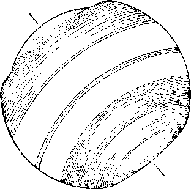This illustrates our Last Earth Canopy. It has banished the last ice period, and the Eden earth blooms again. Man dwells naked in a warm and genial world. The human family for unknown time look up to a watery heaven and give it a name signifying that condition. The Hebrews called this heaven Ehain-ayim, “three waters”; the Greeks called it Ouranos, “water heaven” ; the Hindus called it Vcruno, “water heaven”; the Lathis called it Caelum, and this, too, was a watery heaven, for it passed away.
The last ring enveloping the earth, being almost pure water, admitted the light from the sun more fully than the other rings that had previously fallen. The earth therefore would receive a greater amount of warmth from the sun. The conditions that appeared upon the earth then would resemble a fog in our time, when it is light and yet the sun is not visible. The canopy forming around the earth would produce a condition inside similar to a hothouse. This last ring spread over the entire earth, moving in its orbit with greatest rapidity in the equatorial region of the earth.
That the “great deep” was this water ring above the earth the Scriptures leave no room for doubt. The Scriptural record was made under the supervision of Jehovah, and is therefore true. It is written: “And brake up for it my decreed place, and set bars and doors, and said, Hitherto shalt thou come, but no further; and here shall thy proud waves be stayed.” —Job 38: 8-11.
“Deep calleth unto deep at the noise of thy waterspouts: all thy waves and thy billows are gone over me.”—Ps. 42:7.
“Who laid the foundations of the earth, that it should not be removed for ever. Thou coveredst it with the deep as with a garment: the waters stood above the mountains. ’ ’—Ps. 104: 5, 6.
Speaking of the wonders of Jehovah's creation, the record shows the Logos saying: “I was there: when he set a compass upon the face of the depth ; when he established the clouds above; when he strengthened the fountains of the deep; when he gave to the sea his decree, that the waters should not pass his commandment ; when he appointed the foundations of the earth.”—Prov. 8:27-29.
The time came for the destruction of the old and wicked world. God sent Noah and his family, and the animals and fowls that he desired to preserve, into the ark. When they were safely housed there, the Lord God opened the windows of heaven ; that is to say, he caused the great deep above the earth to be broken up, that its floods of water might fall upon the earth. “The same day were all the fountains of the great deep broken up, and the windows of heaven were opened. And the rain was upon the earth forty days and forty nights.”—Gen. 7:11, 12.
This could not possibly refer to the oceans of water or seas on the earth, because they were not broken up. These still remain on the earth, which is conclusive proof that they were not broken up. That which is broken up remains broken up. Rain that falls from clouds must first be taken up into the skies and condensed by the wind currents. When, because of the sun’s rays and the currents of wind, the temperature changes, rainfall is produced. There was no sunshine, nor were there any wind currents, upon the earth prior to the flood. Therefore the water from the seas could not be taken up and formed into the clouds. Without a question of a doubt, then, the “windows of heaven” refer to the opening of the flood-gates above the earth, by the breaking of that ring or canopy that enveloped the earth.
The aqueous ring would move with the greatest velocity in the region of the equator. As it neared the poles the velocity would grow less, and there the fall would begin to take place. On the same theory that an airship falls when the motion forward ceases, just so when the movement of the aqueous ring slowed down at the poles it would fall. The breaking of the canopy in the region of the equator would admit the aqueous vapors which, when precipitated in the region of earth’s atmosphere, would hurry on to the poles, both north and south, and there begin to fall.
The rapid falling would start the air currents at the poles, which air currents moving toward the equator would take on the forms of great winds. (Gen. 8:1) These winds would increase in velocity and carry the great downpour of water toward the equator; hence the flood would rush from both the north and the south pole toward the equatorial region. These air currents coming from different directions would form what today we call a twister, causing great waterspouts to descend upon the earth. The flood of water therefore would be accompanied by great storms and tremendous thunders and noise. We therefore conclude that the flood was accompanied with terrible sounds that would strike terror to every one who did not by faith rest in the Lord.
The very outermost part of this aqueous canopy was far removed from the sun and of course was farther removed from the earth than any other part of the canopy; hence it would receive no warmth from the earth and very little from the sun; consequently it, would be extremely cold and was doubtless frozen. That part of the canopy nearest the earth would not be frozen. The Scriptures seem to plainly teach that the outer part of that canopy was frozen, because it is written: “Out of whose womb came the ice? and the hoary frost of heaven, who hath gendered it? The waters are hid as with a stone, and the face of the deep is frozen.”—Job 38: 29, 30.
The face of the deep, of course, would be toward the Pleiades, which are claimed to be the habitation of Jehovah. The very next verse of this scripture reads: ‘ ‘ Canst thou bind the sweet influences of Pleiades, or loose the bands of Orion?” (Verse 31) The face of the deep, the scripture plainly says, was frozen. It would have, the appearance of a stone, because ice looks like a stone. The hoar frost was there. By that we would understand that it was white frost, collected there for centuries; otherwise it was great beds of snow and ice. The Lord had placed it there. It would furnish a sight of beauty beyond the description of words. It was one of the wonders of God’s creation.
When the canopy broke, the vapors and waters would descend to earth’s atmosphere. The velocity with which the canopy was traveling would hurl these cold currents of vapor and air toward the poles. At flic same limo wdli Ilie coming of vapors would fall great quanl i 1 ies of ice and snow, likewise being carried toward the poles by centrifugal force. Nearing the poles tin1 velocity would decrease, and they would begin to fall at the poles. This explains why the remains of animals are found in those regions with green food in their mouths and in their stomachs.
The falling of the ice and snow at the poles would cause the warm air to rush to the equator and rise in the vicinity of the equator. This would result in heavy winds blowing from the poles toward the equator. The great quantities of water, mingled with snow and ice, rushing on toward the equator with thunderous sounds, would grind the hills and the mountains into valleys and cause many changes in the forms of the earth’s surface. The extremely cold water, snow and ice would destroy every form of life in the wake thereof ; and this climatic condition forming at the poles would, within a short time, cause the falling of the waters practically all over the earth.
When we call to mind that for forty days there was a constant falling of the great flood of water, snow and ice, and that this water rose higher and higher until the very mountain tops were covered, it is easy to understand why every form of life upon the earth outside of the ark perished, even as the Bible lies stated.
At both the north and the south pole there are now perpetual snow and ice. At one time those polar regions produced luxurious vegetation. This fact, together with the fact that the remains of animals feeding upon green vegetation are found there, conclusively proves that there was a great flood and how it came upon the earth. When the great deep was completely broken up, and all of that -water canopy had fallen to the earth, then the sun would shine clearly upon the earth. As the earth revolved annually through its
elliptical orbit the result would be winter and summer, heat and cold; and since the polar regions would get less of the sun’s heat, in that region would be perpetual snow and ice.
All the physical facts are in harmony with the Bible. It only remains for men of modern times, posing before the people as clergymen, ecclesiastics and savants, to deny God’s Word and to deny that there ever was a flood such as described in the Bible. It can only be said that these men, calling themselves higher critics, are ministers of the Devil, and arc aiding the Devil to discredit God and his Word and works. Let the truth be followed and accepted by reasonable men, though it make all the self-constituted wise ones of earth liars.—Romans 3: 4,
Replenish the Earth
In the flood God expressed his righteous indignation against evil, which had been planted in the hearts of men and developed by the Devil. God vindicated his holy name. He exhibited his boundless power. His wisdom and love made provision to replenish the earth with both man and beast. By the flood the old and wicked world had perished. Noah and his family, consisting of eight persons, had been carried over to the new world; and thereafter the world was defined, and they were commissioned by Jehovah God to begin the same.
Noah entered the ark when he was 600 years old. He came out of the ark just one year and ten days thereafter. The waters of the flood had found their places in the seas, lakes and rivers, both on the surface and beneath the surface of the earth. The ground was dry. “And God spake unto Noah, saying, Go forth of the ark, thou, and thy wife, and thy sons, and thy sons’ wives with thee. Bring forth with thee every living thing that is with thee, of all flesh, both of
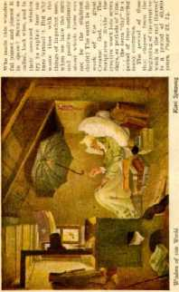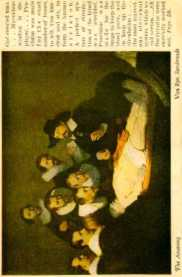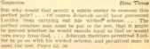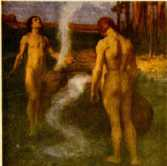I Ins Ins lennml from Mr mother rmwonilou the "sued" that
Ins of himwUf nml nil others who would serve him. Abers
Imnl. klciiuwhlle, Sonin of eolinrn would bo keeping close iireomit ctmcrriilt* llmw two amis. ir mm of ilwin seemed
tlmt «ui'li n uno was Ids own oneliiv: mid lie would Hike
fowl, and of cattle, and of every creeping thing that creepeth upon the earth; that they may breed abundantly in the earth, and be fruitful, and multiply upon the earth.”—Gen. 8: 15-17.
After Noah went forth from the ark he built an altar and placed fire upon it; and then he took one of every clean beast and every clean fowl and offered it upon this altar as a burnt offering unto the Lord. It expressed his faith in God and his confident reliance upon Jehovah. God was pleased with this exhibition of faith by Noah, and then said to him: “I will not again curse the ground any more for man’s sake; for the imagination of man’s heart is evil from his youth: neither will I again smite any more every thing living, as I have done. While the earth remaineth, seedtime and harvest, and cold and heat, and summer and winter, and dav and night, shall not cease.”—Gen. 8: 21,22. ‘
Here is the solemn promise of Jehovah God that for ever upon this earth there shall be summer and winter, heat and cold, seedtime and harvest time; and of this man may be for ever sure. The faith of Noah was rewarded, and God made record thereof. His faith stands as an everlasting witness and monument to all intelligent creatures of the universe.—Heb. 11: 7.
Everlasting Covenant
Noah and his sons were then and there commissioned by Jehovah to “multiply, and replenish the earth”. There began a new world, which the Scriptures show shall come to an end. Many will suffer because they have not profited by the lesson which the flood taught, and then Ged will again demonstrate his power and magnify his holy name.
After Noah had offered this sacrifice to the Lord, then God entered into a covenant with him. That was and is the everlasting covenant. A covenant is a solemn compact or contract entered into, whereby one promises to do or not to do certain things. A covenant by the terms of which only one party is bound to do certain things and the other party thereto may have the benefits thereof if he complies with its terms, is said to be a unilateral, or one-sided covenant. Where, by the terms of the covenant, both parties are bound to do certain things, it is called a bilateral, or two-sided, covenant.
The covenant that God made with Noah provided that both parties must do certain things. God bound himself to perform his part of the covenant; and Noah was told that thereafter man should be over all the beasts of the field and the fowls of the air, and that these animals might be slain by man for the purpose of providing food; that the life is in the blood, and that therefore the blood should not be used for food. The law of that covenant further provided that no man should ever be justified in taking the life of another human being, except as the executioner for Jehovah. “Whoso sheddeth man’s blood, by man shall his blood be shed: for in the image of God made he man.” — Gen. 9: G.
The covenant also provided that never again 'shall all flesh be cut off by a flood of waters’. As a guarantee that God would perform his part of the covenant he gave a token to Noah, which every man that has lived on the earth since has had opportunity to see; to wit, the rainbow. As long as the canopy of water was above the earth a rainbow was an impossibility, for the reason that the sun’s rays could not come directly to the earth. A rainbow is produced by the falling of rain from the clouds and the sun’s rays striking the falling rain.
“I do set my bow in the cloud, and it shall be for a token of a covenant between me and the earth. Ami it shall come to pass, when I bring a cloud over the earth, that the bow shall be seen in the cloud; and I will remember my covenant, which is between me and you, and every living creature of all flesh; and the waters shall no more become a flood to destroy all flesh. And the bow shall be in the cloud; and I will look upon it, that I may remember the everlasting covenant between God and every living creature of all flesh that is upon the earth. And God said unto Noah, This is the token of the covenant, which I have est'ib-lishcd between me and all flesh that is upon the earth.” —Gen. 9:13-17.
This covenant is the first expression of God's will concerning the sacredness of human life. The will of God is his law. All life proceeds from Jehovah; and since no one can give life to another except by Jehovah’s arrangement, no one has a right to take away life except by Jehovah’s permission. After the terms of this covenant the law that must for ever govern the human race is that no man can take the life of another with impunity. If he takes human life contrary to God's law, then he must pay the penalty by giving up his own life. Under the terms of the everlasting covenant human life can be taken by another only when that one acts under the direction of Jehovah, and is therefore God’s executioner.
The law of that covenant also means that no man can rightfully take the life of any animal or fowl, unless it is taken for the purpose of furnishing food for man or for the purpose of his protection. The promiscuous killing of animals and fowls and birds merely for sport is wrong before God. The terms of the everlasting covenant have been broken by every people and every nation of earth, and some day God will require at the hands of the responsible ones a full account thereof.
The clergy claim to be the representatives of the Lord, and assume to teach his Word; yet they have openly advocated the killing of human beings in war without just cause or excuse. Many men have gone to untimely death, or have killed other men, when there was no reason for so doing. Wars are not produced, as a rule, by men who do the killing. The governing factors, made up of the commercial, political and ecclesiastical elements, foment wars and then send the wholly innocent into the field to slay each other. The Lord God has declared that in his due time a complete reckoning shall be had for the ruthless and wanton breaking of the everlasting covenant.—Isa. 24:5, 6.
The great flood fully and completely proved these facts, to wit: That God sets before his creature, man, good, and shows him the way to go; that he permits man to choose to be influenced by the Devil if he so desires; that he does not hinder the Devil in pursuing the course of wickedness, nor in drawing men away with him into a wicked course; that in his own good time Jehovah will give an exhibition of his power and wisdom, demonstrating to all creation that he is the only Almighty God and that the only way to life is by obedience unto him.
There is but one God, the Maker of heaven and earth, and the Giver of life to all. There is none like him. To him be all honor and glory for ever.
CHAPTER V
THE Bible is the expressed will of God. It is a light unto the feet of man to guide him in the right way. (Ps. 119:105) It is light from Jehovah. “Light is sown for the righteous, and gladness for the upright in heart.” (Ps. 97:11) The man who walks in the light of God’s Word and delights in his law is a blessed one of the Lord.—Ps. 1:1, 2.
The first five books of the Bible were written by Moses. These are known as the Pentateuch. How would Moses know what to write? And how may we know that he wrote the truth ? To answer these questions it is necessary to review some of the facts that are known to man. Man is endowed with reasoning faculties, and such he is expected to use. The Bible is so arranged, and was produced under such conditions, that when understood it fully establishes man’s confidence therein as the Word of God.
Noah was a man devoted to God. He was brought over from the world that was destroyed by the flood, and in obedience to God’s command he began to replenish the earth. (Gen. 9:1) Noah was the most important man on the earth of his time. He brought with him to this side the flood a knowledge of things that no other man on earth possessed. From the creation of Adam to the end of the great deluge was a period of only 1656 years. In the period from Adam to the flood men lived for nearly a thousand years.
Enoch was a good man, wholly devoted to Jehovah, and would naturally gather all the information possible concerning the purposes of God in relation to 105 man. Adam lived more than 300 years after the birth of Enoch. Adam died at the age of 930 years. Enoch was the seventh generation from Adam, and he lived 365 years. During his lifetime he would obtain all knowledge possible concerning the history of man and transmit those facts to his son Methuselah, because it is the natural course for a father to transmit important knowledge to his offspring. Methuselah lived to the ripe old age of 959 years.
Noah was only the third generation from Enoch. Only a few years after Enoch was miraculously taken away Noah was born. Noah must have had personal contact with Methuselah, his grandfather; and from him, and his father Lantech, he would receive all possible information concerning man that God had given to his forefathers. Noah was 600 years old when the flood came; and in that period of time lie would have gathered all the information obtainable from other men who lived contemporaneously with and prior to him, and would of course transmit the same to Ills children and grandchildren.
Noah and his son Shorn came out of the ark together. Noah lived 359 years after the flood, and Shem lived 502 years after the flood. Two years after Noah’s death Abraham was born. For 150 years thereafter Shorn and Abraham were on the earth together, in the same part of the earth, and must have known each other. Undoubtedly Abraham would learn from Shorn the details concerning the flood and the relationship of the human family to Jehovah.
Abraham is known as “the father of the faithful”. Knowledge is essential to faith. Abraham could not have had faith without knowledge; therefore he must have received knowledge of God, of his creation of man, and of man’s relation to him ; and this knowledge he would receive from his forefathers.
Isaac was the beloved son of Abraham, and most naturally Abraham would fully instruct his beloved son in all things of which Abraham was learned. Isaac was devoted to God, and God greatly blessed him. (Gen. 26: 4) Being descendants of Shorn, brought up and residing in 11m same part of the earth, naturally these men would transmit knowledge from one generation to another. The favored son of Isaac was Jacob. (Gon. 28:5-14) Jacob had twelve sons, and he bestowed his greatest affection upon his son Joseph.
Joseph was sold into Egypt, and after Imine there for some time became the most important man in Egypt. Thon Jacob and his other sons went to spend the remainder of their days in the land of Egypt. Joseph rendered great sen-ice to the people of Egypt, and honored the name of Jehovah God. Joseph would receive instruction directly from his father Jacob, and did receive special instruction from him. (Gen. 49: 1-28) This information transmitted to Joseph, and from him to his offspring, would not be easily forgotten.
Less than fifty years after the death of Joseph Moses was born. His life being miraculously preserved at the time of his birth, reared in the royal family of Egypt, Moses became a man of importance and of learning; and it is written of him that he was learned in all the wisdom of the Egyptians. (Acts 7:20-22) When he reached manhood’s estate he took his stand on the side of Jehovah God and God’s chosen people. He preferred to suffer for the sake of righteousness rather than to enjoy the pleasures and riches that Egypt and her royalty could provide for him. (Hcb. 11: 24-27) Egypt was the Devil’s visible world power. It held out all the allurements to Moses, but these Moses spurned with contempt; and having faith in God he became a faithful witness to the name of Jehovah.
It is only reasonable to conclude that Moses was thoroughly familiar with the traditions of his fathers. There must have been handed down to him from generation to generation the history of man. He would know about what had transpired amongst mon from Adam to his time. It is not unusual for an American boy of the present time to learn from his parents important facts of American history. Nor is it unusual for an English boy to learn from his parents the history of the British Empire. With stronger reasoning would a man of Moses’ type learn from his ancestors the facts relating to the human race up to his time. He was therefore eminently qualified to write the history of man, which by the grace of God he would do faithfully.
The physical facts well known at this day bear eloquent testimony to the truth that long centuries ago the great Master Workman Jehovah laid deep the coal beds and oil fields, and made the mountains and the valleys, the rivers and the oceans, and brought into existence plant and animal life, and made the earth a habitable place. Even the most ignorant can see that man is fearfully and wonderfully made, and that he is the most intelligent of all the creatures of earth.
Man has a natural trait, or tendency, of keeping a record of events for his benefit and that of succeeding generations. This is proof that God intended it thus to be. God planted this faculty in man. Since the evidence shows that, man is the highest element of God’s earthly creation, and since man has a tendency to keep a record of events, it is only reasonable that Jehovah would provide a means for man to keep a record of the most important things concerning himself. If Jehovah had to do with the keeping of such a record, then be it known that that record is correct and contains the truth.
The Bible is a history of God’s creation of things earthly, and gives such information concerning his heavenly creation as the same relates to man and his home. It is God’s revelation of himself to his intelligent earthly creatures. It is his expressed will, and therefore is the statement of his law for the government of his intelligent earthly creatures. Most of the Bible is a record of things which have transpired and which foreshadow greater things to transpire. That part of the Bible which we call prophecy is the foretelling and recording of events that must transpire, before they come to pass. Prophecy is therefore the history of man written in advance. For this reason prophecy can not be understood by man until it is in the course of fulfilment or has been fulfilled.
The Bible discloses Jehovah as the great Eternal One, the Maker of heaven and earth, the very embodiment of wisdom, justice, love and power, and the Giver of every good and perfect gift. He is the complete expression of unselfishness. Therefore it is written of him in the Word: “God is love.” The Bible tells why man was created, why he turned to wickedness and was sentenced to death, and makes known God’s gracious provision for the redemption, recovery and restoration of mankind to life and to his perfect home.
The Bible contains a statement of philosophic rules. It completely and fully contrasts good and evil. It shows why evil results in death and why good leads to life everlasting in happiness. It is God’s law concerning man, and therefore contains the perfect and complete code of rules of action by which man can be governed and walk in the way of righteousness. This code of rules also names the penalty for the violation of the law of righteousness. The Bible was written for the benefit of man and to the glory of God.
In view of the foregoing facts, and in response to the question hereinbefore propounded, there are two good and sufficient reasons why Moses knew what to write, and why he wrote the truth:
(1) The experiences of men, as they transpired, were handed down from generation to generation, and Moses made record thereof. There would be no reason for this record’s being anything but the truth.
(2) Moses was devoted to God. He was chosen by Jehovah to make the record, and in preparing it God’s unerring wisdom guided Moses. In truth and in fact Moses acted merely as an amanuensis of Jehovah. He was the very kind of man whom we should expect God to select for such a work. He spurned the Devil and his organization with all its allurements, and amidst adversity espoused the cause of righteousness. Not only was he alert in mind and learned in all the ways of men, but his chief qualification was his complete devotion to Jehovah. Many of the great truths stated by him show that they could not have emanated from the mind of a man, but that they were the result of the invisible power of Jehovah operating upon the mind of man.
What is said concerning Moses can be said of all the writers of the Bible. God chose those men for the work because of their faith in and faithfulness to him. As his unlimited power operated to create the things of the earth, so that power operated to direct and influence the mind of Moses and other holy men to make record of God’s will concerning man. David was one of these faithful men devoted to the Lord, and concerning that part of the Bible which he wrote he said: “The spirit of the Lord spake by me, and his word was in my tongue. ’ ’—2 Sam. 23 : 2.
These faithful men of old are called prophets, and they wrote prophecy. The Apostle Peter, who was chosen by Jesus as one of his disciples, under inspiration wrote: “For the prophecy camo not in old time by the will of man: but holy men of God spake as they were moved by the holy spirit.”—2 Pet. 1: 21.
It is exceedingly interesting to observe how God arranged for important facts to be transmitted from generation to generation, from Adam to Moses, then to have Moses to write, and thereafter other men to write, that his expressed will might be put into proper form for the benefit of man.
Manuscripts
That part of the Bible which we call the Old Testament was written in the Hebrew language. That which we term the New Testament was written originally in the Greek language. Copies of the original writings of both were afterwards made, and these were called manuscripts.
The chosen people of God were made the custodian of the sacred writings of Moses and the other prophets. The people of Israel used the greatest possible care in safeguarding these writings and of informing their people concerning the contents thereof. Of the twelve tribes of Israel the tribe of Levi was set aside to attend to things pertaining to the education of the people in matters relating to God and his Word. From this tribe the priests of God were chosen. These priests were representatives of Jehovah, and were to minister unto the Lord in the name of the Lord for the benefit of the people. The priest was selected to minister unto God in the priest’s office.—Ex. 28: 1-4.
God laid the obligation upon the priests to read before the people his law which he had caused Moses to write. They were required to inform the people concerning God’s Word spoken through the prophets. In the instruction given to the first high priest the Lord God said: “And that ye may put difference between holy and unholy, and between unclean and clean; and that ye may teach the children of Israel all the statutes which the Lord hath spoken unto them by the hand of Moses.” (Lev. 10:10, 11) ‘‘For the priest’s lips should keep knowledge, and they should seek the law at his mouth: for he is the messenger of the Lord of hosts.”—Mal. 2:7.
The people were instructed to seek knowledge at the hands of these priests. “And thou shalt come unto the priests the Levites, and unto the judge that shall be in those days, and inquire ■ and they shall shew thee the sentence of judgment.” (Dent. 17: 9) One of the purposes of Jehovah is here manifest, to wit, to keep the people informed concerning his Word, to the end that at all times there might be some people on the earth who would have faith in the Bible as his true and sacred Word.
Centuries after the giving of the law the Apostle Paul, a Jew and an inspired witness of God, wrote that “the law was our schoolmaster to bring us unto Christ, that we might be justified by faith”, and that ‘the law was a shadow of good things to come’. (Gal. 3:24; Ileb. 10:1) The purpose of a schoolmaster or pedagogue is to instruct and impart knowledge. Here then is the expressed purpose of the law of God, to impart to the people a knowledge concerning himself and his relationship to man.
This confirms the thought that God arranged for the handing down from generation to generation of the truths that he desired men to know, and that this transpired from Adam to Moses in particular. Thereafter from the time of Moses God has caused his Word to be written down by true and faithful men, whom he directed; and this Word constitutes our Bible.
All the original writings have been lost and do not exist. This, however, does not at all interfere with the authenticity of the Bible. The original manuscripts were kept in the temple or house of the Lord, and at stated times they were brought forth and read to the people. (2 Chron. 34:14-16) When the Israelites returned from Babylonian captivity, and rebuilt the walls of Jerusalem about the year 454 B. C., the Word given by Jehovah to Moses was brought forth and read to the people.
“And all the people gathered themselves together as one man into the street that was before the water gate ; and they spake unto Ezra the scribe, to bring the book of the law of Moses, which the Lord had commanded to Israel. And Ezra the priest brought the law before the congregation, both of men and women, and all that could hear with understanding, upon the first day of the seventh month. And he read therein before the street that was before the water gate from the morning until midday, before the men and the women, and those that could understand; and the ears of all the people were attentive unto the book of the law. And Ezra the scribe stood upon a pulpit of wood, which they had made for the purpose; and beside him stood Muttithiah, and Sliema, and Anaiah, ami Urijah, and Ililkiah, and Maaseiah, on his right hand; and on his left hand, Pedaiah, and Mishael, and Malehiah, and Hashum, and Hashbadana, Zechariah, and Meshullam.
“And Ezra opened the book in the sight of all the people; (for he was above all the people;) and when he opened it, all the people stood up. And Ezra blessed the Lord, the great God: and all the people answered, Amen, Amen, with lifting up their hands: and they bowed their heads, and worshipped the Lord with their faces to the ground. So they read in the book, in the law of God, distinctly, and gave the sense, and caused them to understand the reading. And Nehemiah, which is the Tirshatha, and Ezra the priest the scribe, and the Levites that taught the people, said unto all the people, This day is holy unto the Lord your God; mourn not, nor weep. For all the people wept, when they heard the words of the law.” —Neh. 8:1-6, 8, 9.
The indisputable and historical evidence aside from the Bible is to the effect that from the time of Ezra forward there was a rewriting or copying of the original manuscripts, and that, such rewriting or copying by faithful and devout men continued until about the year 900 A. D. Many of the manuscripts were destroyed by fanatical Christians (so called) during the persecution of the Jews in the middle ages, particularly in the time of the Crusaders. Others were destroyed by Jews themselves, evidently for the purpose of preventing them from falling into the hands of their enemies. The evidence therefore shows an unbroken chain of transpiring truth from Eden down to this period of 900 A. D., and that this was done under the direction of Jehovah.
There are now in existence three ancient manuscripts. These are copies of the original tongue or language. These manuscripts are, to wit, The Alexandrine, the Sinaitie, and the Vatican. These manuscripts show the Bible as it existed shortly after the time of the apostles of Jesus Christ.
The Alexandrine Manuscript was presented by Cyril Lucar, Patriarch of Constantinople, to Charles the First, king of Britain, in the year 1628, and is preserved in the British Museum to this day. It bears on one page the inscription that it was written by the hand of Thekla the Martyr.
The Sinaitic Manuscript was discovered by Tisehen-dorf, the German scholar, in a convent situated at the foot of Mount Sinai. This manuscript is kept in the library at Leningrad, formerly St. Petersburg, Russia.
The Vatican Manuscript is the most ancient manuscript in existence. It is kept in the Vatican Library at Rome, In recent years these manuscripts have been accessible to scholars. None of these ancient manuscripts is entirely complete, hut each is nearly so.
Versions
The Scriptural text, copied in the same language in which it was originally written, is called a manuscript. A translation of the original language into another language is called a version. The ancient versions of the Scriptures consist of the translations of the Scriptural text from the original language into another language, in the early period of the Christian era. Many of these translations were written by men not more than one generation removed from the time of the apostles.
Among these versions is the Syriac, representing very nearly the language employed by the people with whom the Lord Jesus communicated and amongst whom he moved. The Syriac is a very reliable version. Near the close of the fourth century Eusebius Hieronymus, otherwise known as St. Jerome, who for many years lived at Bethlehem, revised the old Latin version of the Bible. This version is called the Vulgate. It is a translation into the Latin, and compared with the Greek and Hebrew manuscripts. This is one of the most valuable versions of the Bible. It is often referred to in other versions or translations.
The Bible was first given to the people in the English language by the efforts of John Wycliffe, about the year 1383. This version was copied literally from the Latin. Although translated that early, it was not printed for nearly 400 years thereafter. Both Jerome and Wycliffe suffered much persecution because of their faithfulness in translating the Scriptures. Their persecution came chiefly from the clergy. Satan has always opposed those who have been witnesses to the name of Jehovah God. So violently did Satan stir up opposition to the Wycliffe version of the Bible that many of these leaders were burned to death with copies around their necks.
The next version of the Bible of importance was that brought forth by William Tyndale, something more than 100 years after Wycliffe’s day. Tyndale published many editions of the New Testament. He translated the major portion of the Old Testament. In the making of his" version Tyndale used such original Grek and Hebrew manuscripts as were then available to him. Tyndale’s version of the Bible is really the Bible that all the English-speaking people of earth use now. It has been revised several times.
Satan the enemy used the clergy of England to persecute Tyndale because of his faithfulness in translating the. Bible. This is one of the proofs that Tyndale was a faithful servant of the Lord. After translating a portion of the Scriptures he was forced into exile in Germany, where he finished the translation and there published many copies of the New Testament. He was determined to get this translation into the hands of the English people. He smuggled it into England by sending his printed copies in barrels, in bales of cloth, in sacks of flour, and in many other secret ways.
The bishops of the Church of England and others of the clergy used every means within their power to stop the publication of Tyndale’s version of the Bible. Thousands of copies were seized by them and publicly burned at the old cross of St. Paul’s. Tyndale was kept in exile and refused many attempts to induce him to return to England, knowing that if he went back to England the bishops and other clergymen would cause his death. He was betrayed by a clergyman in Germany and was forcibly seized and imprisoned in a dungeon, and thereafter suffered much from cold and want of food; and he was taken from prison and burned at the stake. This was done at the instance of the clergy.
But Satan and his agencies could not prevent the people from having the Bible, because God’s time had come for them to have it. Shortly after Tyndale’s death there appeared what is known as “Matthew’s Bible”. It was really Tyndale’s Bible published under a different name. Then followed the publication of what is known as the “Great Bible”, which was published in 1539; and later what is known as the “Geneva Bible”, published in 1560. All of these were but revised editions of Tyndale’s translation.
In the year 1611 A. D. what is commonly known as the Authorized Version was produced. It is otherwise known as the King James Version, because King Janies of England was the prime mover in having it prepared. The revisers who did the work were divided into six companies, and a portion of the work was assigned to each company; and every aid or help that was accessible was used by these revisers in their work. These men carefully studied the Hebrew and the Greek and the translations into the Spanish, Italian, French and German, and compared them one with the other.
Doubtless there has never been a more masterful and perfect English publication than the Authorized Version of the Bible. It is more generally used than any other Bible or version of the Bible in existence. Its translation is not perfect, however, as it contains a number of mistakes, as was later shown by comparison with the ancient manuscripts. Those who prepared our Authorized Version of the Bible did not have access to the three ancient manuscripts above mentioned.
In the year 1870 A. D. a company of distinguished English scholars assembled and began the work of a revision of the Authorized Version of the Bible, and within a short time thereafter an American committee of distinguished scholars joined in a like work. When the Authorized Version was made, the ancient manuscripts, to wit, the Vatican, Alexandrine and Sinaitic, were not accessible. The commission of revisers who prepared the Revised Version from 1870 forward had access to these manuscripts, however. The ancient manuscripts were studied, together with the various versions; and the greatest possible care and means were employed to bring forth a Bible expressing, as nearly as possible, the thought expressed by the original manuscripts.
In 1881 the first edition of the English Revision was published, and in 1885 the American Revision was published. Tyndale’s translation was largely used by both of these committees, and blazed the way for the labors of the revisers. These Revised Versions are doubtless the best of all translations, because they express the thought in plain English. In addition thereto, there has been a decided change of meaning in many of the English words during the past three hundred years. It was the effort of those who prepared the English and American Revised Versions to express the proper thought in plain English.
For instance, the old English word “hell” meant a dark place, such as a hole in the earth, in which one covers his vegetables for preservation. In modern times the clergy have defined hell as meaning a place of conscious torment, which of course was not the thought in the original text. Another instance: The English word “damnation” originally meant to judge; and sometimes to judge adversely or to condemn. The modern ecclesiastics have made the word damnation mean the consigning of one to a place of eternal torment.
The translators of the Revised Version have left the word hades untranslated, it being the word which the clergy use for hell fire and torment. The word for damnation they have translated judgment because the word damnation in the original English, and judgment in the modem English, mean the same; and this proves that the clergy have placed an entirely wrong meaning upon the word. (Acts 2:27; John 5:29, R. V.) In both instances, those who prepared the Authorized Version and Revised Versions used the proper word as the word was used at the time written. It has been the clergy, however, who have seized upon the occasion to misrepresent God’s Word by improperly using it. In view of all the opposition to the Scriptures, it is remarkable how pure the text has been preserved after divers and numerous copyings from the original.
The Emphatic Diaglott is one of the purest translations of the New Testament. It is translated from the original Greek. The Vatican Manuscript was chiefly used in its preparation, reference being had also to the Sinaitic and other manuscripts. It expresses the thought in modern language and greatly aids the Greek and English student in studying the New Testament.
Without doubt the invisible power of Jehovah God guided the minds and hands of faithful men of old in preparing the original manuscript of the Bible. It is God’s Word, and he had it prepared exactly right. Because it is the Word of God, Satan the evil one has used every means within his power to destroy the Bible and to destroy those who faithfully translated it. God has permitted him to go just so far in his wicked attempts, and then has stopped the enemy. At different periods in the history of mankind honest men, wholly devoted to the Lord, have made copies of the Bible. Shall any one deny that the Lord God guided these men in their work? We may be sure that since they were faithfully and honestly trying to represent Jehovah, he would safeguard his Word from serious error.
Satan, through his agencies, killed many of the men who faithfully performed their work, but not until after their work was done. Thousands of copies of the Bible were destroyed by these same evil agencies, but Satan with all his efforts could not stop the progress of God’s unfolding plan and the revelation of himself to the people through his Word. Being unable to stop the publication of the Bible the Devil has sought through his representatives to corrupt the meaning thereof, and to put into the minds of the people an improper understanding of its text. He has used every power at his means to turn the minds of the people away from Jehovah and from his pure Word of Truth. For centuries many of these wonderful truths were obscured and taken away from the people by the Devil and his agencies. In God’s due time these pure doctrines have been restored to the honest seeker after truth.
The creature who is magnified in the Scriptures above all others is the beloved Son of God. The Jews have, for four thousand years, centered their hopes upon the Messiah, and have looked for his appearing. For nearly two thousand years Christians have centered their hopes upon The Christ and have looked for his second coming. The beloved Son of God, the Logos; Jesus, is the Messiah, the Anointed One of God, The Christ. The time for his second appearing has come, and now he is here. With his coming there has come to the honest seeker of truth greater light upon God’s Woi'd, even as the Lord promised that it should be. (Prov. 4:18; 1 Cor. 10:11) The second presence of Christ dates from about 1874. From that time forward many of the truths long obscured by the enemy began to bo restored to the honest Christian.
As William Tyndale was used to bring the Bible to the attention of the people, so the Lord used Charles T. Russell to bring to the attention of the people an understanding of the Bible, particularly of those truths that had been taken away by the machinations of the Devil and his agencies. Because it was the Lord’s due time to restore these truths he used Charles T. Russell to write and publish books known as Studies in the Scriptures by which the great fundamental truths of the divine plan are clarified. Satan has done his best to destroy these books because they explain the Scriptures. Even as Tyndale’s version of the Bible was destroyed by the clergy, so the clergy in various parts of the earth have gathered together thousands of volumes of Studies in the Scriptures and burned them publicly. But such wickedness has only served to advertise the truth of the divine plan.
It is God’s time when the truth shall be known, and nothing Satan can do or will be able to do can prevent the truth from being known. The time has come for the standard of Jehovah to be lifted up that the people may know which way to go. Around this divine standard the righteous and truly honest-hearted will rally. The tide of truth is rising higher and higher, and will continue to rise until it fills the whole earth as the waters fill the deep. All this shall be to the glory of Jehovah God. The time has come for Jehovah to make known his name in the earth, and he will make this known through his Word and through the manifestation of his power. And be it noted that the truth does not belong to any man. It is God’s truth. God has used men or human instruments at different times for his own purpose and to his own glory, but the truth always has been and always will be Jehovah’s. The Bible is his Word of Truth, given to guide those who seek righteousness.
Among the holy men of old who wrote prophecy was Daniel, a man much beloved by Jehovah. God moved his mind and hand to write of the marvelous things that should come to pass. Daniel did not understand what he wrote, and so stated. God gave him some evidence by which those living at the time of the fulfilment of his prophecy might understand. He locates the fulfilment as being the time of the second coming of the Lord, “the great prince which standeth for the children of thy people.” Then to Daniel he said: “But thou, 0 Daniel, shut up the words, and seal the book, even to the time of the end: many shall run to and fro, and knowledge shall be increased.”-—Dan. 12:4.
The peoples of earth on every hand see the fulfilment of this prophecy. This is the age of much ‘running to and fro’ and a great increase of knowledge. It is the time for the Scriptures to be understood.
After Daniel had written down the history of the world powers, and what should happen long after his day, he said: “And I heard, but I understood not; then said I, 0 my Lord, what shall be the end of these things?” (Dan. 12:8) In answer to his request Jehovah replied: “Go thy way, Daniel; for the words are closed up and sealed till the time of the end. Many shall be purified, and made white, and tried; but the wicked shall do wickedly: and none of the wicked shall understand; but the wise shall understand.” (Dan. 12: 9, 10) Without doubt the time has come when the Bible is to be understood; and those who trust in God and in his Word, and in the great sacrifice of his beloved Son, shall be purified, made clean and white, that their faithfulness to God might be established.
The “wicked” are those who have once had some knowledge of God and who have used this knowledge for their own selfish ends. They shall not understand. This explains why the modern clergymen do not understand. The ‘ ‘ wise ’ ’, within the meaning of Daniel’s prophecy, are those who have some knowledge of God and his Word and who apply that knowledge according to God’s holy will. These are they who humbly and joyfully obey the truth as they see it. These great and deep truths, long kept a secret from man, are now due to be understood; and to those who honestly seek to understand the Lord says: “The secret of the Lord is with them that fear him; and he will show them his covenant [plan], ’ ’—Ps. 25 :14.
Briefly summed up then: God created man as the highest element of earth’s creation. He created the earth for man’s home. He intended man to have a record of the vital parts of his own experiences; he so arranged that the knowledge of man’s relation to God should be transmitted from one generation to another, from Adam to Moses. With Moses he began to make record of the Holy Scriptures. God guided Moses, and the other faithful men who wrote thereafter, in preparing the texts of the Bible. He has preserved the Bible against every attempt of Satan and his agencies to destroy it. God has permitted many copies of the Scriptures to be made, and these to be made by honest, sincere men. We may therefore confidently rely upon the Word of God as absolutely true. David, one of the prophets, wrote: “For the word of the Lord is right; and all his works are done in truth. ’ ’■—Ps. 33 : 4.
The devout student may come with confidence to the Scriptures, knowing that these set forth the will of God concerning man and are given to man for his instruction in righteousness. Upon the Scriptures he can confidently rely. The Scriptures constitute the basis of his faith in God, and a knowledge thereof enables him to understand something of the great love of God toward the human family. As God sheds further light upon his Word, and this shines into the minds of devout men who have consecrated themselves to do God’s will, the true heart sentiments of such find expression in the words of the psalmist:
‘ ‘ I will worship toward thy holy temple, and praise thy name for thy lovingkindness and for thy truth: for thou hast magnified thy word above all thy name. In the day when I cried thou answeredst me, and strengthenedst me with strength in my soul. All the kings of the earth shall praise thee, 0 Lord, when they hear the words of thy mouth. ’ ’—Ps. 138: 2-4.
The honest and earnest searcher after truth is not loft to conjecture. He does not have to rest his conclusions upon the opinions of men; and, having the Bible and knowing that it is the Word of God, that it is right and absolutely true, by it he can prove every doctrine that is offered. ‘ ‘ To the law and to the testimony: if they speak not according to this word, it is because there is no light in them.” (Isa. 8:20) As progress is made in the study of the divine plan let each point be proven by the Scriptures. If that which is advanced is not in harmony with the Scriptures it should be rejected. If supported by the Scriptures it should be accepted.
How gracious our Lord is to man, his creature! Even though man is imperfect and sinful, God says to him: ‘ ‘ Come now, and let us reason together, saith the Lord: though your sins be as scarlet, they shall be as white as snow; though they be red like crimson, they shall be as wool.” (Isa. 1:18) Using his reasoning faculties with which the Lord has endowed him, and harmonizing scripture with scripture, man is enabled to build a foundation and structure of faith that can not be shaken by the sophistries of men nor by the influence of the evil one. As man’s knowledge of God and his plan grows, his love for and devotion to God, the great ‘Giver of every good and perfect gift’, expands. Thus continuing to walk in the light, his pathway will grow brighter and brighter until it leads unto the perfect day.—Prov. 4:18.
CHAPTER VI
JEHOVAH GOD does not employ coercion to induce men to obey him. God is love, and his plan is to teach his creatures that love is the only proper motive for action. Love is unselfishness expressed. The way to everlasting life God has pointed out. There is no other way. He who loves God will obey him. The man who is prompted by love to walk and who obediently goes in the way that God has pointed, will ultimately receive the prize of everlasting life. This is the lesson that God would have man learn.
Satan, by fraud, deceit and coercion, induces men to obey him. Thereby Satan turns the minds of men away from God and leads them into the way of death. Man must have an opportunity to choose the way of righteousness or the way of unrighteousness. Such opportunity was given to Adam, and he chose the evil way. To this time most men have gone in the same evil course. Only those who have trusted in the Lord and faithfully endeavored to serve him have escaped the fruits of unrighteousness.
It grieved Jehovah that the mass of mankind had turned to wickedness. By the groat flood God would teach his intelligent creatures that his power is unlimited, and that the workers of iniquity must ultimately suffer complete defeat. Hence he destroyed the evil ones in the flood. The great flood was not an expression of vindictive malice on the part of Jehovah, because God does not possess malice and therefore could not express it. Malice is that condition of heart which induces one to act recklessly and in utter disregard of the rights or welfare of others, and is wilfully bent on doing irreparable injury. The flood was for the vindication of God’s holy name and for the ultimate good of his intelligent creation, particularly man. This will be clearly seen when the divine plan is understood by men. The great flood was a necessity, and it was an act of Jehovah’s prompted by love on the part of Jehovah.
Can it be said then that the creation of man was a failure? So far as man is concerned, Yes; so far as God is concerned, No. Had man been obedient io God, in due time the earth would have been filled with a race of perfect creatures. Being drawn away by the influence of the evil one, and yielding thereto, man became a failure. Those few men who have done their best to obey and serve God because of love for him were not and are not failures. God’s provision to meet the emergency shows that from his viewpoint the creation of man was not a failure. In his own due time God will demonstrate the wisdom of the course faithful men have taken. His plan understood will demonstrate to all men that everything Jehovah has done is just and right.
God’s plan concerning man wms in no respect a failure. He made his plan to meet every emergency. Although he saw that it was wise to destroy the world because of the wickedness of the creatures thereof, the power of God is not limited ; and in his own due time he will bring good out of that disaster. From the very beginning he made provision and knew what he would do in the event man yielded to the evil influence. It is written: ‘ ‘ Known unto God are all his works, from the beginning of the world.” (Acts 15:18) It is manifest that God would have found more pleasure in the full obedience of man to his law; but the fact that his creatures have disobeyed his law in no wise argues against the wisdom of his creation or of his plan relating to creation.
After the flood God commanded righteous Noah and his sons to multiply and replenish the earth. (Gen. 9:1) They proceeded to do so. But was Noah righteous? He was an imperfect man, because he was an offspring of Adam; but his heart was right and he had faith in God and manifested that faith, and because of his faith he was counted righteous. Being the descendants of Adam, it was impossible for Noah and his sons to produce a perfect race.
If the human race is ever to enjoy life everlasting, some power greater than human must be employed. A man can not by his own boot-straps lift himself over a great mountain top. Neither can man by his own efforts make himself perfect. The evolutionists display the same amount of ‘1 wisdom ’ ’ that the man does who tries to lift himself over the mountain by his own bootstraps. Many men belong to this foolish class who think they can perfect themselves. Men have to be taught the truth, and God has made ample provision therefor.
Long centuries ago God began to foreshadow the means he would employ to bring obedient ones of the human race back to a state of perfection, and that moans that he foreshadowed a “new creation”. This does not mean that all the human race must be destroyed and a new race created; but it means the creation of something new, that through this creation the human race may be redeemed and restored.
After the flood Noah and his sons settled in different parts of the earth. Japheth and his descendants took up their abode in Europe. Ham and his sons dwelt in North Africa. Shem and his offspring remained in Asia. Concerning Shem Noah prophesied, saying, “Blessed be the Lord God of Shem.” Thus he indicated that God had in store some special blessing for
the descendants of Shorn. The Scriptures disclose that this is what he did trans.
Two years after the flood Shem begot a son and named liini Arphaxad. (Gen. 11:10) Torah was a descendant of Arphaxad and of Shem. (Gen. 11:24) In due course a son was born unto Terah whom he named Abram. Afterwards God changed his name to Abraham. (Gen. 11:27) Terah and his family dwelt in Ur of the Chaldees. Abram was married to Sarai. “But Sarai was barren ; she had no child.’ ’ (Gen. 11: 30) Terah took his family, including Abram and his wife Sarai, and went forth to go into the land of Canaan. Prom the Biblical account it appears that he would journey along the valley of the Euphrates to Haran; and there Terah dwelt, and his family together with him, until he died.
Abram was now the most important man of the company dwelling in Haran. He had faith in God, and God had for him a duty to perform. “Now the Lord had said unto Abram, Get thee out of thy country, and from thy kindred, and from thy father’s house, unto a land that I will shew thee: and I will make of thee a great nation, and I will bless thee, and make thy name great, and thou shalt be a blessing: and I will bless them that bless thee, and curse him that curseth thee; and in thee shall all families of the earth be blessed.”—Gen. 12:1-3.
In obedience to the command of the Lord Abram gathered together all of his substance, including what he had taken to Haran and what he had accumulated there; and he took his wife Sarai, and Lot and his family, and departed out of Haran. Behold, a caravan of camels and asses, cattle and sheep, men servants and maid servants, women and children, with faithful Abram riding in the van, journeying to the south and west into a strange land! Over the trackless desert and over barren and rugged hills they went. It was a long, slow and tedious journey; and the importance of that journey could not then be fully appreciated by Abram. They were moving in regular order. What did the march to that land, unknown to Abram, mean ? The great God of the universe was now moving his faithful servant into action and beginning a moving picture which would reflect and foreshadow a new creation and the formation of a perfect nation and government, which would be God’s means used for the blessing of all the families of the earth.
For a continuous period of approximately two thousand years Jehovah, from time to time, caused his faithful servants to produce various portions of his moving pictures, here begun by Abram, by which means he would teach mankind the way that leads to endless life. It is exceedingly interesting and instructive to visualize these pictures made long ago. The men who performed their respective parts therein did not fully understand, but they knew that Jehovah was the great Director and Commander; and for them that was sufficient. (1 Pet. 1:10, 12) A record thereof was made, that those living at the end of the world, where we now are, might learn and understand God’s way and be comforted by this knowledge.—1 Cor. 10:11; Rom. 15:4.
God was now sending Abram on this journey to the land of Palestine, where the Lord in due time would complete his pictures; and that part of the earth has become sacred and holy to all those who love the Lord. The events that transpired in the land of Palestine and adjacent territory, foreshadowed the unfolding of the divine plan.
The eastern frontier of the land of Palestine is guarded by a range of beautiful mountains. The entire range might well be called Pisgah, because of the vision had from the heights thereof. As Abram’s caravan approached from the east he would halt upon the crest of the mountain range, because from that point he would have the first view of the promised land. He would feast his eyes upon the marvelous scene that lay before him, and where soon was to be the place of the making of the greatest picture ever made on earth, and later the place of its fulfilment in completion.
From his vantage point on the crest of that mountain range Abram would behold Lebanon, the Sea of Galilee, the plain of Esdraelon, Mount Carmel, the deep shade of the Jordan valley, and the rivers of less importance that empty into Jordan’s turbulent waters, Mount Moriah, Mount Zion, and all the hills of J udoa, and on to the deep blue Mediterranean Sea. Travelers who have since journeyed this way, upon reaching the heights of this mountain range, have in ecstasy exclaimed: “The most wonderful and beautiful view in any part of the earth!”
There, as Abram beheld the wonderful scene spread out before him, he would call to mind the promise that God had made to him. The importance must have impressed Abram, but it was impossible then for him to understand the full import of the promise and what he was doing in connection therewith. The promise which God made to Abram was: “In thee shall all families of the earth be blessed. ” In this picture Abram represented Jehovah God, from whom proceeds every good and perfect gift, and by whom all of mankind who obey God shall in due time receive his blessing.
Descending from the mountain heights Abram journeyed on and entered into the land of Palestine and passed through it to the plain of Moreh. “And the Lord appeared unto Abram and said, Unto thy seed will I give this land.” (Gen. 12:7) This promise indicated that God in his due time would give to obedient men the earth as an everlasting abiding-place. God made the earth for man’s habitation, and in due time man shall inherit it in the fullest sense.—Isa. 45:12, 18.
Abram journeyed on to the south, through the land, and then went into Egypt. Later he returned from Egypt and pitched his tent in the plains of Mamre. There the Lord appeared unto him and said: “Neither shall thy name any more be called Abram, but thy name shall be Abraham; for a father of many nations have I made thee.” (Gen. 17: 5) This promise must have sounded strange to Abram, yet he believed God. Sarah was now ninety years of age and was yet barren, for she had no children, and here the promise was that Abraham should be made the father of many nations. Later God said to Abraham that he should have a son by his wife Sarah, and that his name should be called Isaac.—Gen. 17:19.
When Abraham was one hundred years old, true to the promise that God had made, a son was born to him by his wife Sarah; and he called his name Isaac. (Gen. 21:5) It must have cheered greatly the heart of Abraham and his wife Sarah when the son was born. The words of Sarah indicate that it was a time of joy to them. A son was born in whom they could center their hopes for the fulfilment of the promise which God had made. “And Sarah said, God hath made me to laugh, so that all that hear will laugh with me. And she said, Who would have said unto Abraham, that Sarah should have given children suck ? for I have born him a son in his old age. And the child grew, and was weaned: and Abraham made a great feast the same day that Isaac was weaned.”—Gen. 21:6-8.
The Great Picture
The time arrived for Jehovah to make the picture foreshadowing his plan for the saving and blessing of the human race. The chief actors in this picture were Abraham and his beloved son Isaac. In the picture Abraham represented God, while Isaac, the only son of Abraham, represented the beloved and only begotten Son of God, Jesus, whom Jehovah brought into the world to be the Savior of mankind. Abraham could not know that this was a picture of something to take place in the future. It therefore must have been a great test unto him; and it is recorded that it was a test of Abraham’s faith.
Jehovah gave directions to Abraham:
‘ ‘ Take now thy son, thine only son Isaac, whom thou lovest, and get thee into the land of Moriah; and offer him there for a burnt offering upon one of the mountains which I will tell thee of.” (Gen. 22:2) Isaac was the dearest treasure of Abraham’s heart, because he was the only begotten son of Abraham by his beloved wife; which son he loved. His love for God, however, was greater because he had faith that God would make provision for his son.—Heb. 11:19.
In obedience to God’s command Abraham provided himself with the things necessary to make the altar, and with wood for the fire; and, together with his son Isaac and his servants, he journeyed from the vicinity of Hebron to Mount Moriah, the present site of Jerusalem. There Abraham built an altar, bound his son Isaac and laid him upon the altar, and raised his knife to strike dead his beloved son Isaac that he might offer him as a burnt offering. At this crucial moment God, through his angel, spoke to Abraham and commanded that he should go no further in the picture. "Lay not thine hand upon the lad, neither do thou any thing unto him: for now I know that thou fearest God, seeing thou hast not withheld thy son, thine only son, from me. ’ ’—Gen. 22:12.
The faith exhibited by Abraham on this occasion was pleasing to God; and so he spoke to Abraham again through his angel and said: ‘ ‘ By myself have I sworn, saitli the Lord; for because thou hast done this thing, and hast not withheld thy son, thine only son; that in blessing I will bless thee, and in multiplying I will multiply thy seed as the stars of the heaven, and as the sand which is upon the sea shore; and thy seed shall possess the gate of bis enemies: and in thy seed shall all the nations of the earth be blessed: because thou hast obeyed my voice.”—Gen. 22:16-18.
Why was this the greatest picture of all made on earth? Because it foreshadowed that the promise of God, pictured by Sarah the wife of Abraham, would produce a “seed” and that this “seed” would be the means of blessing all the families of the earth. The offering of Isaac foreshadowed that at some future time God would give his dearly beloved Son as a great sin-offering for the world, and that that Son would constitute the Savior and Deliverer of mankind. — John 3:16.
The original promise that God made to Abraham was: “In thee shall all families of the earth be blessed.” Now the promise made to Abraham at the time of the offering of Isaac, and there made for the first time, was: “In thy seed shall all the nations of the earth be blessed.” These promises, in connection with the picture here enacted, foreshadow that the blessing must proceed from Jehovah and that the beloved Son Jesus will be the channel of blessing.— Rom. 9:7; Heb. 11: 17-19.
The tendency amongst many has been to attribute all blessings to Christ Jesus, when in truth and in fact all blessings proceed from Jehovah God; and Christ Jesus, his beloved Son, is his chief Executive Officer in carrying out these blessings. This is clearly indicated by the promise made to Abraham, above mentioned. Isaac, being the only child of Abraham and his beloved wife Sarah, would therefore picture The Christ. That he did picture Christ is plainly stated later in the Scriptures.—Gal. 3:16 ; 4: 28.
The time came for Isaac to take unto himself a wife. Abraham selected the wife for his son Isaac. He did not send to Egypt for a wife, nor did he take a wife from the peoples of the land of Canaan. Abraham sent his servant back to his native land, to the house of his brother Nahor, and there selected Rebecca to be the wife of Isaac. (Gen. 11:29; 24:1-67) The fact that Rebecca was of the household and kinsmen of Abraham would indicate that she was of the same faith of Abraham. Rebecca became the bride of Isaac. In this we have another beautiful picture.
Abraham represents Jehovah God, and Isaac represents God’s beloved Son, Christ Jesus. Abraham selects Isaac’s bride. Jehovah selects the bride of his beloved Son; and the bride and Bridegroom together constitute the new creation, which is here foreshadowed. This picture also indicates that those who are selected to constitute the bride of the beloved Son of God must be those who are of the same faith of Abraham, and that only those who have and maintain that faith will ultimately become a part of the new creation. This is the construction that the Apostle Paul puts upon it when he says concerning the selection of the bride of Christ: 1 For he laid not hold upon angels; but he laid hold upon the seed of Abraham.’ (Heb. 2:16) “Know ye therefore, that they which are of faith, the same are the children of Abraham.’’ (Gal. 3:7) As the husband and the wife are one in the sight of God, even so Christ Jesus and his bride, constituting the new creation, are one; and they together constitute the seed of Abraham according to the promise. (Gal. 3:16, 27, 29) This new creation is “the seed” through which the blessing must come to the peoples of earth.
Isaac became the heir of all that Abraham possessed. (Gen. 25: 5) This indicates that the One whom Isaac foreshadowed would become the “heir of all things”. The Apostle Paul states concerning Jesus Christ, the beloved Son of God: “Whom he hath appointed heir of all things.” (Heb. 1: 2) The faithful ones who participated in making these pictures could not understand the meaning thereof; necessarily they would expect that God’s promised blessings would come through the natural seed of Abraham. God intended the true import of these pictures to be understood in the future, and he intended them to foreshadow greater things than were then understood.—1 Cor. 10:11; Heb. 10:1.
Jehovah continued these pictures foreshadowing the development of his plan. His promise was confirmed to Isaac. (Gen. 26: 4, 5) In due time there were bora to Isaac and his wife Rebecca two sons, who were twins. They were named Esau and Jacob. Naturally Esau was in line for the blessing of his father; but God intended that Jacob should be the one favored and should receive the blessing. These two sons foreshadowed in this picture two classes of professed Christians.
Esau represents those Christians who merely profess to be obedient to the Lord, and who seemingly are in line for the Lord’s blessings; while Jacob pictures or foreshadows those professed Christians who continue faithful to the Lord and who become recipients of his blessings and become a part of the seed of promise. Esau persecuted Jacob; and, true to the picture, the merely professed followers of the Lord throughout the Christian era have persecuted the true followers of the Lord. The merely professed ones, represented by Esau, are in fact a part of the world, which is the Devil’s organization. The true and faithfully obedient ones unto God are a part of his organization.
After Jacob had fled from home because of persecution, he lay down at night to sleep on the hillside. There God gave to him a vision in a dream. Jacob beheld a ladder set upon the earth, the top reaching into heaven; and upon this ladder he beheld the angels of God, who were ascending and descending. In this picture the Lord foreshadowed that in his own due time he would establish communication between his creatures on earth and his creatures in heaven, and that through the new creation he would accomplish this end. It was on this occasion that God confirmed the promise to Jacob concerning the blessing of all the families of the earth.—Gen. 28:11-15.
Jacob, whose name the Lord afterwards changed to Israel, was the father of twelve sons, and these became respectively the heads of the twelve tribes of Israel; which tribes, at the death of Jacob, became the organized people of God on earth. God organized this people for a purpose, and one of the purposes was to foreshadow the unfolding of his plan with reference to the new creation. When Jacob was about to die he called his sons before him that he might tell them of the things to come to pass in the remote future. God’s invisible power moved the mind and tongue of Jacob at that time to utter a great prophecy foreshadowing the coming of the mighty Ruler and Prince of Peace.
Amongst other things uttered by Jacob on this memorable occasion were these words: “The sceptre shall not depart from Judah, nor a lawgiver from between his feet, until Shiloh come; and unto him shall the gathering of the people be.” (Gen. 49:10) This prophecy shows that the promised seed, through whom the blessing must come, would be a descendant of the tribe of Judah. The scepter is a symbol of authority to rule. “Shiloh” means tranquil, peaceful, happy and prosperous one. Unto that mighty Law-giver and Governor should be granted the power and authority to gather together all the peoples of earth, and to bless all according to God’s promise. Through this mighty One all the nations of the earth shall be blessed. This prophecy was a restatement of the promise which God gave to Abraham, and forms a part of the great picture foreshadowing the coming of the great Blesser.
The Israelites were then domiciled in Egypt. Prior thereto the beloved son of Jacob, Joseph, had been sold into Egypt and by the grace of the Lord had become a mighty man in Egypt, next to Pharaoh the king. The blessings that the Lord brought to the people of Egypt through Joseph foreshadowed how the great One, whom Joseph prefigured, would bless the peoples of the world. After the death of Joseph there came to the throne of Egypt another emperor, one who had no respect for God, who had forgotten the goodness that God had bestowed upon Egypt through Joseph, and who showed his evil condition of heart by persecuting the Israelites, God’s chosen people.
It was during that period of persecution that Moses was born. The decree of the wicked king of Egypt had gone forth to kill all the male babes of the Hebrew women. (Ex. 1:16, 22) But God miraculously preserved Moses. When the babe was three months of age his mother made an ark of bulrushes, put the child into it, and hid it in the still waters of the Nile River. The babe was discovered by a member of the royal family, and without doubt by an arrangement of the Lord. Moses’ own mother was employed to nurse the child.
Moses grew up as a member of the family of the royal house of the king; but when he attained his majority he refused to be called the son of Pharaoh’s daughter. Rather did he prefer to be associated with the people of God, of whom he was a part. (Heb. 11: 24) It was his faith in God that led him to take this position, and doubtless Jehovah was directing his course. The oppression of the Israelites in the land of Egypt continued. This was another part of the picture, from which man can now learn. The then wicked ruler of Egypt represented Satan, the Devil, oppressing the peoples of the world.
Many have thought that all the peoples of earth, except those who belong to some church, are a part of the world; but this is not true. The world is represented in the governing factors that rule the people. The government of Egypt, of which Pharaoh was the head, represented the Devil’s wicked organization, by which the people are oppressed. God now began the making of a picture which foreshadowed how he will deliver the people from the hand of the oppressor, Satan the Devil. Jehovah sent Moses to be the deliverer of the Israelites from Egyptian bondage. Moses, in this picture, represented or foreshadowed the Mighty One, the Messiah, who shall deliver the peoples of earth from the oppression of Satan and all of his agencies, and bring the people into a condition of blessing.
When the time came for God’s chosen people, the Israelites, to leave Egypt, Moses led the march. Six hundred thousand men on foot, with their women, children and servants, made an imposing company marching out of Egypt. In this picture Moses represented Christ the Messiah, the great Deliverer, leading the people to safety; while those who followed Moses represented all of those who shall ultimately accept and follow Christ as the great Executive Officer of Jehovah God, the One whom God has provided for the deliverance of man.
The wicked Pharaoh, the ruler of Egypt, with his army, followed after the Israelites with the purpose and desire to destroy them. He would have succeeded in carrying out his wicked designs had not God intervened and protected the Israelites and directed them, through Moses, which way to go. (Ex. 12:37, 38; 14:1-5) Pharaoh and his hosts pursuing the Israelites picture the Devil and his agencies which he uses in his effort to destroy those who love the Lord.
When the Israelites reached the Red Sea, and the hosts of Egypt were pressing hard after them, God sent his angel to protect the Israelites; and the Lord placed a pillar of cloud between the two hosts to hide the Israelites. Then the Lord God directed Moses what to do; and in obedience to the Lord’s command Moses stretched forth his rod over the sea, and the Lord caused the waters of the sea to stand apart on either side so that the Israelites, under the leadership of Moses, crossed over on dry land. When in pursuit Pharaoh and his hosts marched in between the walls of the sea the waters overflowed them and they perished. (Ex. 14:13-30) This picture foreshadows that God in his own due time will deliver all who obey him from the oppressive hand of Satan, and that he will completely destroy Satan’s organization and ultimately Satan himself; and that in this great work the One whom Moses represents, to wit, Christ the great Executive Officer of Jehovah, will perform the work.
When Moses and the Israelites were in safety across the sea they sang together a song of praise unto Jehovah God, and amongst other things in this song is written: ‘ ‘ Thy right hand, 0 Lord, is become glorious in power: thy right hand, O Lord, hath dashed in pieces the enemy.” (Ex. 15:6) This foreshadows that when the people are fully delivered from Satan the oppressor they will recognize that in the exercise of his loving-kindness God has made provision for their salvation. Then the people will sing as they did then: ‘‘The Lord is my strength and song, and he is become my salvation.”
The demonstration of Jehovah’s power in the overthrow of the Egyptians, and the miraculous preservation of the Israelites, was for the purpose of keeping before the minds of that people that Jehovah is the only true God, and that from him alone can blessings proceed. These things occurred and were recorded not for Israel alone but particularly for the peoples of earth who seek righteousness in the end of the age, where we now are. (1 Cor. 10:11) God intended that his people now, in this twentieth century, should receive comfort and encouragement by getting a mental vision of this picture. This divinely provided picture foreshadows that God intended from the beginning to provide a seed or new creation which would be fully in harmony with him and have all faith and confidence in him, and that this seed would be his means of blessing mankind.
Government Foreshadowed
After the overthrow of the Egyptians in the Red Sea the Lord God made another series of pictures, by using his chosen people. These pictures foreshadow a just and righteous government, by and through which the human race may be brought back into harmony with Jehovah. Moses pictured or represented the new creation, which will constitute the just and righteous government or official authority, while the people of Israel pictured the peoples of earth desiring to return to full harmony with God. A study of these pictures now, in the light of fulfilled prophecy, greatly strengthens the faith of every one who is looking for a better and happier time for the human race.
The tents of Israel were pitched in the wilderness or desert, in the vicinity of Mount Sinai. Moses, leaving the people in their tents, went up into the mountain. The record reads: “And Moses went up unto God, and the Lord called unto him out of the mountain, saying, Thus shalt thou say to the house of Jacob, and tell the children of Israel.’’ (Ex. 19:3) Then God proceeded to tell Moses what to say. Moses at that time was invisible to the Israelites, while receiving instruction from Jehovah. Thus the picture foreshadowed that the new government of righteousness will be invisible to the peoples, and will receive full authority from Jehovah (Sod. When Moses came back and spoke to the people he there foreshadowed the visible representatives of the new government.
God instructed Moses to say to the people the following: “Ye have seen what I did unto the Egyptians, and how I bare you on eagles’ wings, and brought you unto myself. Now therefore, if ye will obey my voice indeed, and keep my covenant, then ye shall be a peculiar treasure unto me above all people: for all the earth is mine; and ye shall be unto me a kingdom of priests, and an holy nation. These are the words which thou shalt speak unto the children of Israel.’’ (Ex. 19:4-6) In obedience to God’s command Moses laid before the people these words. “And all the people answered together, and said, All that the Lord hath spoken we will do. And Moses returned the words of the people unto the Lord.’’ (Ex. 19:8) Thereby a covenant was entered into by Jehovah and by the Israelites, with Moses as the mediator between God and the people and as the legal representative of both Jehovah and the people.
The Israelites were God’s chosen people from the time of Jacob’s death. His law to that people began to be given at the time of the passover, when they left Egypt; but at Mount Sinai God inaugurated his covenant with that people to establish a government, which foreshadowed the government to be composed of the new creation and through which, in God’s due time, blessings will come to the people. Otherwise stated, God is foretelling in pictures what he intends to do in his own due time. Neither Moses, nor the people of Israel who took part in the making of those pie-tures, understood the full import thereof because God did not intend them to understand at that time.
When we find in the New Testament an interpretation of the record made in the Old Testament we may be sure that such interpretation is correct. It is written concerning the members of the new creation: “But ye are a chosen generation, a royal priesthood, an holy nation, a peculiar people; that ye should shew forth the praises of him who hath called you out of darkness into his marvellous light: which in time past were not a people, but are now the people of God; which had not obtained mercy, but now have obtained mercy.” (1 Pet. 2:9, 10) By these inspired words of the holy record we know that the people of Israel, acting under the leadership of Moses and the direction of Jehovah, represented the new creation.
It was on the third day after Moses went up into the mountain and received instructions from Jehovah that the covenant was inaugurated. This part of the picture foreshadowed that in the early part of the third thousand-year day, after the selection of the new creation, God would inaugurate the New Covenant or the new government for the benefit of the people. It is written in the New Testament that “one day is with the Lord as a thousand years, and a thousand years as one day”. (2 Pet. 3:8) Thus the time of the inauguration of the covenant with the great Messiah is indicated. The Lord has placed many other things in his Word to corroborate this conclusion. The third thousand-year day is now begun.
The inauguration of the covenant and government at Mount Sinai, which foreshadowed the Messianic government, was attended with great convulsions of the elements. “There were thunders and lightnings, and a thick cloud upon the mount, and the voice of the trumpet exceeding loud; so that all the people that was in the camp trembled.” (Ex. 19:16-18) This foreshadowed the conditions that shall exist at approximately the time of the inauguration of the government under the new creation. The Apostle Paul mentions this incident in connection with the inauguration of the kingdom of Messiah, and quotes what occurred at Mount Sinai, and shows that the same foreshadowed what is to take place at the time God’s government of righteousness, under the great seed, the new creation, is inaugurated.-Heb. 12:18-27.
Jehovah then gave to the people the law by which they should be governed, and emphasized the fact that the blessing of the people depended entirely upon that people’s recognizing, accepting and serving Jehovah as the only true God, and recognizing that there is none other. Then he announced the rule that the blessing of the families of the earth will depend upon a full and complete recognition of Jehovah as the only true God, and that there is no way of getting everlasting life except by and through the way which Jehovah has provided. The statutory provisions of the covenant at Sinai foreshadowed what will constitute the rule of action by which the peoples must be controlled under the new and righteous government of Christ, the new creation.—Ex. 20:1-17.
That the inauguration of the government of the Israelites, with Moses as the head thereof, foreshadowed a greater government with Christ as the Head thereof, there is left no doubt. This was clearly foreshadowed by the prophetic words which God caused Moses to record: “The Lord thy God will raise up unto thee a Prophet from the midst of thee, of thy brethren, like unto me; unto him ye shall hearken. I will raise them up a Prophet from among their brethren, like unto thee, and will put my words in his mouth; and he shall speak unto them all that I shall command him.”—Deut. 18:15, 18.
That the inauguration of the governmental organization of Israel, and the law, statutes and ordinances given to that people concerning meats, drinks, keeping of the Sabbath, etc., were shadows of "things to come”, there can not be the slightest doubt, because it is written in the Scriptures: "Which are a shadow of things to come ; but the body is of Christ. ’ ’-Col. 2:17.
The promise of God was that the mighty Ruler should come through the tribe of Judah. (Gen. 49:10) David, the son of Jesse of Bethlehem, was of the tribe of Judah. Al the direction of the Lord he was anointed by Samuel to be king over Israel. (1 Sam. 16:12, 13) David became a mighty king. (2 Sam. 5:10) God established David upon the throne of Israel. He caused his prophet to say to David: ‘ ‘ And thine house and thy kingdom shall be established for ever before thee: thy throne shall be established for ever.” (2 Sam. 7:16) The Jews expected David to fulfil the promise that God had made, to bring blessings to the peoples of earth through him and his reign.
It is manifest that David was not the promised "seed” that should establish the everlasting government of righteousness, because David died and his kingdom did not endure for ever. The name David means beloved. The beloved One of God is his only begotten Son, whom he sent into the world. David foreshadowed that beloved Son and foreshadowed The Christ. David had a very stormy experience, from the time he was anointed king until his death. In this picture he foreshadowed the anointed ones of God; that is, the new creation in course of preparation.
David wrote and sang many prophetic songs which related to the Mighty One whom he foreshadowed. For instance, David wrote: "The Lord [Jehovah] said unto my Lord, Sit thou at my right hand, until I make thine enemies thy footstool. The Lord shall send the rod of thy strength out of Zion: rule thou in the midst of thine enemies.” (Ps. 110:1, 2) Thus David spoke words relating to t ie beginning of the reign of the Mighty One, the Head of the new creation. For this reason members of the anointed read the Psalms understanding, and with great comfort and joy.
Many centuries passed from the time God made the promise to Abraham, and then Jesus came to earth. He was born of a woman. In the natural course of events he was of the tribe of Judah, and the son or offspring of David. He was a perfect man, and in him there was no sin. At the age of thirty Jesus was anointed King. He was presented to Israel as King. The nation of Israel rejected him as King. Shortly thereafter he suffered an ignominious death upon the cross.
Some of the honest and faithful descendants of Abraham expected Jesus to be the king of Israel and to bring the long-promised blessings. Two of these faithful men remarked after his crucifixion: “We trusted that it had been he which should have redeemed Israel.” (Luke 24:21) He was then the anointed King; but it was not yet God’s due time for his government to be established; and these faithful disciples did not then understand. But at Pentecost they began to understand. For centuries Jehovah had been making pictures which foreshadowed the coming of events of far greater importance than could then be understood. And now the time had come for the beginning of the fulfilment of these pictures.
If a righteous government had been established on the earth, and if the people had accepted that government and put forth their best endeavors to keep the law thereof, could they have received the blessings promised? The answer is, No. The reason is, All the peoples of earth were imperfect and therefore sinners because of the inherited imperfection resulting from Adam’s sin. All were under condemnation. They were not convicts, as has been suggested. Only Adam was tried and convicted. His offspring had not been tried and convicted. The Jews had entered into a covenant with God and had failed to keep it. But all the human race stood disapproved before God, because they are imperfect. God can not approve an imperfect thing. The word condemn or condemnation means to judge adversely. God must judge all men adversely, because all are descendants of Adam and therefore all are imperfect. Such disability was not because of any direct act on the part of the individuals.
Even the faithful men named, Abraham and others of like faith, could not receive the promised blessing. They put forth their best endeavors to obey the Lord, but they “all died in faith, not having received the promises”. (Heb. 11:13, 39) The Apostle Paul states why they could not receive the blessing: “God having provided some better thing for us, that they without us should not be made perfect.” In this scripture “us” refers to the new creation. (Heb. 11:40) That the whole human race stood disapproved of God, because of sin, is made clear by these Scriptural statements. “Behold, I was shapen in iniquity, and in sin did my mother conceive me.” (Ps. 51:5) “Wherefore, as by one man sin entered into the world, and death by sin; and so death passed upon all men, for that all have sinned.”—Rom. 5 : 12.
All being born sinners, therefore standing disapproved or judged adversely by Jehovah, it follows that some provision must be made to remove this disability before the blessing could come. Neither the new creation nor a righteous government could remove that disability and bring an everlasting benefit to the people. There must be a great sacrifice for sin, and this sacrifice must be one exactly equal to the perfect man who had sinned in Eden. The law of God provided ‘ a life for a life’. (Deut. 19: 21) God’s law is just and must stand. There can be no deviation therefrom. God had sentenced Adam to death because of his wilful infraction of his law, and that judgment must be enforced.
Since the imperfection of all mankind resulted from that judgment there must be a provision made in harmony with God’s law to remove this disability before the promised blessing could come. Consistent with his law Jehovah could permit another man equal to Adam to willingly take Adam’s place in death, and thereby provide for the removal of the disability standing against all of Adam’s offspring. The very terms of the divine law clearly imply that such could be done, when it is written: ‘A life shall be given for a life.’ But in all the earth there was no perfect man who could meet this requirement of the law. It is written: “None of them can by any means redeem his brother, nor give to God a ransom for him.” (Ps. 49:7) The reason therefor is because all were the descendants of Adam.
Was the promise of God then to fail because there was no man to meet this legal requirement ? No; for the reason that in the exercise of his wisdom and loving-kindness God made provision to meet this very emergency. In his Word it is written: “I will ransom them from the power of the grave ; I will redeem them from death.” (Hos. 13:14) This promise of God to redeem man from death and ransom him from the power of the grave must be kept, because God’s Word is always kept. (Isa. 55:11) It is at once apparent to the student that the great pivotal point of Jehovah’s plan for the blessing of mankind is right here. Then might we expect the pictures foreshadowing God’s plan to foreshadow this point also? That marvelous provision for the great ransom and sin-offering for and in behalf of man is foreshadowed, and is recorded in the Word of God. Such pictures or shadows were made by Jehovah by the use of his chosen people, to enable the honest and faithful seeker for truth at this time to understand God’s great plan. With the understanding thereof the Christian sees that God in truth is love, and that he has made ample provision for blessing all the families of the earth.
It has long been the practice of clergymen to arrogate to themselves the sole ability to interpret the Scriptures. They say that any one by his own efforts can bring about his own salvation. Their argument is that Jesus was a great example to men, but that there is no efficacy in his shed blood. These men, by their false philosophy, have destroyed the faith of many in the Word of God, and have been used by the Devil to blind men to the most vital part of the divine plan with reference to the human family.
The pictures examined in this chapter show that Jehovah God foreshadowed a “seed” which is the new creation, and the establishment of a just and righteous government for mankind; but that before these could come into existence and function the great ransom sacrifice must be performed and the offering made for sin. This is so clearly set forth in the Scriptures by pictures foreshadowing the great ransom and sin-offering that there is left no room for doubt. -As one sees it he greatly rejoices at the manifestation of the unselfishness of Jehovah in providing a way for man’s salvation. Not only has he provided therefor but he permits the honest seeker for truth now to look back upon what he caused to be done centuries ago, and see the majestic forward movement of the unfolding of the great divine program. The student now, with keen interest, will examine the pictures foreshadowing the great ransom and sin-offering, which follow in the next chapter.
CHAPTER VII
JEHOVAH is the fountain of life. (Ps. 36:9; Deut. 30:20; Job 33:4) He is the great Life-giver, and he alone can rightfully take away life. If life is transmitted by one creature to another it is done only by virtue of the fact that God has delegated such power to the one transmitting life. Life means existence, including the right to exist. The human race has existed for some time but has not had the right to life and therefore has not enjoyed life.
Adam when created had life, because he existed and had the right to exist, which right he received from Jehovah. No one but Jehovah could deprive him of that right. Had he been obedient to Jehovah he would have continued to possess that right to life. God had fairly warned him that the infraction of the divine law would lead to his loss of life. Adam violated the law of God, and the right to life was taken away; and in due course Adam ceased to exist. Only the righteous have a right to life. From the time the judgment was entered against Adam he was unrighteous. Thereafter his offspring came into existence; and since Adam could not transmit the right to life, his children were born without the right to life or to existence.
Man’s greatest desire has ever been that he might enjoy life in its fulness. Being burdened with a disability by reason of sin, and having no ability to obtain life by his own efforts, the vital question for man is, How may man get life: in the fulness thereof? The question was answered by the beloved Son of God; and his answer was recorded by the Prophet David, who 149 foreshadowed Jesus: “Thou wilt show me the path of life.” (Ps. 16:11) Later Jesus, for the benefit of mankind, said: ‘ ‘ This is life eternal, that they might know thee the only true God, and Jesus Christ, whom thou hast sent.”—John 17: 3.
Without some knowledge of God’s provision for everlasting life man could not receive life everlasting. It is written: ‘Life is the gift of God through Jesus Christ our Lord.’ (Rom. 6:23 ; 5:18) It is impossible to receive a gift at the hand of another without knowledge of the author of that gift. It is impossible to obtain everlasting life without knowing God and his way to life. Why then waste time with the theories of men concerning life, put forth by clergymen wise in their own conceits? Such theories arc worse than useless. The truly wise man seeks to know God’s way and then to obey the rules of that way. For this reason God has made provision for the salvation of men, and provision to bring to man the knowledge of the truth thereof, to the end that man might exercise his privilege of accepting the way that leads to life. When he learns that God has provided a way to give him life, and that he can have it by acceptance and obedience, then when he begins to obey he starts on the way to obtain that which he desires.
All men are imperfect and therefore have difficulty of understanding. (Heb. 5:11, 12) In addition thereto Satan the Devil has hindered men from understanding the truth, and the first essential to understand is an honest and sincere desire to know God and his way for man. To aid man to understand, God has made pictures foreshadowing coming events. These pictures are not a part of the divine plan, but they are object lessons showing the outworking of his plan. These pictures are beneficial, because (1) they instruct the seeker for truth, and (2) they establish faith in God.
“Without faith it is impossible to please him [God],” because in no other way can one learn of the way to life. (Heb. 11: 6) “Faith eometh by hearing, and hearing by the word of God.” (Rom. 10:17) In other words, a man must have knowledge, and this knowledge must come from the right source; and the Word of God is the right source, and there is none other. The man must rely upon that true knowledge in order to have faith. The loving-kindness of God has provided the means whereby one who seeks the truth may obtain it and grow in faith.
A ransom for man must be provided because God gave his promise that he would provide it and purchase man. (Hos. 13 : 14) Ransom means an exact corresponding price; that is to say, that which purchases at the market-place or has the purchasing power. A perfect man violated God’s law and was put to death therefor. The law of God is his ■will expressed. Looking to the provision for redemption God’s law provided a ‘life for a life’. (Deut. 19: 21) Strictly construed, that law means that a perfect human life must be given as a substitute for or in the place of the perfect human life which God took away from Adam because of Adam’s wrong-doing.
Sacrificing means the slaughter of a victim, and involves the act of offering or presenting the life of that victim to the one authorized to receive the same. Since a perfect human life must be given to provide a ransom for man, it follows that there must be a sacrifice of a perfect human life. And since the loss of life by Adam was because of sin, it follows that the sacrifice of the perfect human life to provide the ransom or purchase price also involves the act of offering or presenting the value of that perfect life as a sin-offering. Jehovah being the One authorized to receive the sin-offering, that sin-offering must be presented to Jehovah by one having access to Jehovah.
The life is in the blood. For this reason God commanded that the blood of a creature should not be eaten. (Gen. 9:4; Deut. 12:23) “For it is the life of all flesh; the blood of it is for the life thereof: therefore I said unto the children of Israel, Ye shall eat the blood of no manner of flesh: for the life of all flesh is the blood thereof: whosoever eateth it shall be cut off.” (Lev. 17:14) The blood of a creature poured out means that a victim has been sacrificed or slaughtered, and that the life has been poured out. It follows then that the provision for the ransom and sin-offering must involve the shedding of blood of a perfect human being.
Pious frauds, called preachers or clergymen, who have no faith in God and no sincere desire to honor his name, hold up their hands in pretended horror at the mention of the slaughter of animals by the Jews in connection with their atonement day ceremonies. If these sanctimonious clergymen believed the Bible, which they claim to teach, they would know that the Jews in sacrificing animals as an offering did so because the law of God commanded the same to be done. (Lev. 17:11) Being done in obedience to the law of God all men must know that it was right. “As for God, his way is perfect.” (Ps. 18 : 30 ; 2 Sam. 22:31) All of his works are perfect. (Job 37:16 ; Deut. 32:4) ‘Jehovah’s word is right.’ (Ps. 33:4) “The law of the Lord is perfect.” (Ps. 19:7) In the face of all these declarations from the Word of Jehovah men stand before a company of people and denounce the sacrifice of animals which God commanded must be done. Surely no one could say that such men represent Jehovah.
Law means rule of action. Whatsoever rule of action or law God has made for the obtaining of everlasting life, that way is perfect and right, the opinions of men notwithstanding. God’s way is complete and there is no other way. Whatsoever law or rule of action God has made to foreshadow the way to life, God had good reason for so making, and such law or rule is just and true. His law or rule commanded the Jews to do certain things which formed living pictures or moving pictures. Note now (1) the picture, (2) what the picture foreshadowed, and (3) the reality in fulfilment thereof. One understanding these in the order named will have his faith in God increased, and will love God more and will have a greater desire to walk in the way which the Lord God has commanded.
Passover
When the Israelites were about to take their departure from Egypt Jehovah prepared to make, and did make, a wonderful picture. The importance of this picture is suggested by the fact that God commanded that the day of the making thereof should mark the beginning of months with the Israelites. The picture began on the tenth day of the first month and reached its climax on the fourteenth day thereof. That month is called Nisan, and corresponds approximately with the present month of April. The Israelites were required to repeat this picture at the same time each year, throughout their generations.—Ex. 12:1-14.
Speaking to the Israelites through Moses God commanded that on the tenth day of the first month each house or family of the Israelites should select a lamb for sacrifice. In obedience to God’s command Moses assembled the leaders of Israel and instructed them in detail as to what they should do. The substance of his instructions follows:
“Your lamb shall be without blemish, a male of the first year: ye shall take it out from the sheep, or from the goats: and ye shall keep it up until the fourteenth day of the same month : and the whole assembly of the congregation of Israel shall kill it in the evening. And they shall take of the blood, and strike it on the two side posts and on the upper door post of the houses, wherein they shall eat it. And they shall eat the ihsh in that night, roast with fire, and unleavened bread; and with bitter herbs they shall eat it. And thus shall ye eat it; with your loins girded, your shoes on your feet, and your staff in your hand; and ye shall eat it in haste: it is the Lord’s passover. For I will pass through the land of Egypt this night, and will smite all the firstborn in the land of Egypt, both man and beast; and against all the gods of Egypt I will execute judgment: I am the Lord.
“And the blood shall be to you for a token upon the houses where ye are: and when I see the blood, I will pass over you, and the plague shall not be upon you to destroy you, when I smite the land of Egypt. And this day shall be unto you for a memorial: and ye shall keep it a feast to the Lord throughout your generations ; ye shall keep it a feast by an ordinance for ever. And it shall come to pass, when your children shall say unto you, What mean ye by this service ? That ye shall say, It is the sacrifice of the Lord’s passover, who passed over the houses of the children of Israel in Egypt, when he smote the Egyptians, and delivered our houses. And the people bowed the head and worshipped.’’—Ex. 12:5-8, 11-14, 26, 27.
The Picture
There is no proof that indicates that the Jews understood the meaning of what they were about to do. They had the command from Jehovah through Moses, and that was sufficient. Because of their faith they proceeded. On the tenth day of the month a lamb without blemish was selected by each household. On the evening of the fourteenth day of the month the lamb was killed. The blood of the lamb was then put upon the lintel of the door and the two doorposts at the sides of the door. Then the lamb was roasted whole, without a bone being broken.
All the members of the household assembled within the house, and there together they ate the lamb with unleavened bread and bitter herbs, and waited for the angel, as the executive officer of Jehovah, to pass through the land. At midnight God’s angel, as his executive officer, passed throughout the land of Egypt and slew the first-born of every household of the Egyptians, from the slave to the king. The Jews who had obeyed God had the blood of the lamb sprinkled upon their doorposts, as above indicated; and where this blood appeared in obedience to God’s command the angel of the Lord passed by and the first-born of that household was saved.—Ex. 12: 28-30.
Can it be said then that the Israelites were protected and their first-borns saved from death because of the lamb’s blood? No; the blood of the animal did not of itself save them. God saved them because of their faith in him, and they exercised their faith in what that blood represented. Their obedience then to God’s command showed their faith. The blood of the lamb poured out and sprinkled upon the doorposts foreshadowed much more than any man could then understand. In God’s due time he would permit man to understand the full import thereof.
Foreshadowed What?
The ransom sacrifice is the most important thing foreshadowed by this picture. Many other minor things are foreshadowed, but the ransom is of paramount importance. The picture foreshadowed that some time in the future there must be a victim selected for sacrificing ; that the victim must be sacrificed by the pouring out of his blood; and that this would be of the greatest value to others. It would mean, and does mean, that only those who would exercise faith in the life poured out would ever find the way to everlasting life.
The command was that a lamb should be selected, a male of the first year. A lamb is a harmless creature. The victim foreshadowed by the lamb must be harmless. The command further provided that the lamb must be without blemish, which foreshadowed that the victim for sacrifice must be perfect and without blemish or sin. The lamb must be selected four days before it was slain. That foreshadowed that the victim which the lamb represented must be selected four literal days, and also four symbolic days of a thousand years each, before the life was poured out.
The pouring out of the blood of the lamb foreshadowed that the blood of the victim, which the lamb represented, must be poured out; and since ‘' the 1 ife is in the blood”, it foreshadowed that the life of the victim would be laid down for the benefit of others. All the members of the family must eat the flesh of the lamb roasted. To eat means to receive and to partake of food for the purpose of sustaining life. The eating of the flesh of the lamb foreshadowed that all people must receive that which the flesh of the lamb represented, and partake thereof by faith for the purpose of obtaining and sustaining life.
The passover was the beginning of God’s law to Israel. (Gal. 3:17) That law was given to foreshadow good things to come. (Heb. 10:1) That law required the Jews to repeat the ceremony at the same time once each year, which would mean that they must continue it until that good thing which the law foreshadows should come.
The Reality
Jehovah’s beloved Son Jesus was the reality foreshadowed by the passover lamb of Israel. The blood of the lamb in the picture was important because of what it represented. The blood of the beloved Son of God, sacrificially poured out, is of the greatest importance to all men. Clergymen who ignore or minimize the importance of the blood of Jesus as the great ransom price for man do violence to the Word of God and aid Satan to turn the people from the only name and way that lead to everlasting life.
Jehovah’s law required the Israelites to make preparation for the passover. The head of each household pictured Jehovah himself. Four days before the sacrificing took place the lamb must be selected. Four literal days before the death of Jesus he offered himself to the nation of Israel. Four thousand-year days prior thereto Jehovah selected him to be the Redeemer of man. Therefore the four days in the picture were both literally and symbolically fulfilled in Christ Jesus.
The passover lamb must be a male and without blemish. The One whom the lamb foreshadowed must be a male without blemish. Why must this victim for sacrifice be a perfect man? Because the perfect man, Adam, had violated God’s law, and for that reason his life was taken away. The law of God required a life for a life; therefore the One who must be substituted in death for Adam must be a perfect man. This is the reason why the animal used to represent the Redeemer must be without blemish. The redeemer of Adam and his offspring therefore must be a perfect man, nothing more and nothing less.
In all the earth there was no perfect man. All were condemned because of the imperfection resulting from the sin of Adam. There was none good. (Ps. 14:3) No man was qualified to ransom his fellow man. (Ps. 49:7) These scriptures show man’s extremity. God had made the earth for man to live upon. (Isa. 45: 12, 18) Man’s desire was and ever has been to have life everlasting. God had promised to bless all the families of the earth, which blessing means an opportunity for life. God had promised to redeem man from death. What then could be done?
Jehovah sent his beloved Son, the Logos, to earth. Was it necessary for the Logos to die in order to become a man? No. His right to life and his existence were transferred from the spirit to human nature. The organism determines the nature of the creature. He was begotten as a babe in the womb of Mary, and this was accomplished by God’s exercising his holy spirit or invisible power; and in due time Jesus was born. Jehovah by direct operation of his power gave the babe Jesus life and the right to life, and for that reason he was born a perfect babe. The fact that Jesus was born of an imperfect woman does not mean that he was in the slightest imperfect. The right to existence and existence being given to him by Jehovah directly, and Jehovah being the only One from whom life emanates directly, it follows that this babe Jesus must be perfect in every respect. Jehovah could not make an imperfect thing, because “his work is perfect ’ ’.—Dent. 32:4.
The Scriptures identify the Logos and the beloved Son of God as the beginning of creation; and then it is written: “The Word was made flesh, and dwelt among us [men],” and he was “full of grace and truth”. (John 1:14) “When the fulness of the time was come, God sent forth his Son, made of a woman, made under the law.” (Gal. 4:4) The fact that he was born of an imperfect woman did not mean that he was imperfect, because his life proceeded from Jehovah. He was born a human being that he might be the Savior of mankind. (Luke 2:11) Thus did Jehovah prepare One who possessed all the qualifications to fulfil that which the picture foreshadowed; to wit, One qualified to provide the price to redeem the human race.—Heb. 10: 5.
Subsequent authoritative testimony recorded in the Bible proves beyond a doubt that the passover lamb pictured the Son of God; and that Jesus, the beloved Son of God, was the reality. John the Baptist, as the forerunner of Jesus, announced his coming to those who would hear. "The next day John seeth Jesus coming unto him, and saith, Behold the Lamb of God, which taketh away the sin of the world. This is he of whom I said, After me cometh a man which is preferred before me: for he was before me. And I saw, and bare record that this is the Son of God. Again the next day after, John stood, and two of his disciples ; and looking upon Jesus as he walked, he saith, Behold the Lamb of God!”—John 1: 29, 30, 34-36.
The Scriptures further identify Jesus as one without blemish, foreordained by Jehovah to be the Redeemer of mankind, and therefore foreshadowed by the passover lamb. ‘‘Forasmuch as ye know that ye were not redeemed with corruptible things, as silver and gold, from your vain conversation received by tradition from your fathers; but with the precious blood of Christ, as of a lamb -without blemish and without spot: who verily was foreordained before the foundation of the world, but was manifest in these last times for you. ’ ’—1 Pet. 1:18-20.
The animal in the picture was harmless and without blemish. The reality was. ‘‘holy, harmless, undefiled, separate from sinners”. (Heb. 7:26) Thus the testimony conclusively shows that the lamb foreshadowed Christ Jesus the Son of God. Jesus began his ministry when he was thirty years of age. Being perfect, because his life was received from Jehovah direct, and therefore being qualified to redeem man, his testimony is that he eame for that purpose. ‘ ‘ Even as the Son of man came not to be ministered unto, but to minister, and to give his life a ransom for many. ’ ’-Matt. 20: 28.
Since the law of God required the Jews to observe the passover by killing the lamb on the fourteenth day of Nisan, and sin ce Jesus was born under the law and is the real Lamb foreshadowed, it therefore was necessary for Jesus to be slain on the fourteenth day of Nisan. The beginning of the Jewish day is at six p. m. /it the proper and appointed time Jesus with his disciples sat down to eat the passover lamb, as the law required. On that occasion Jesus said to his disciples: ‘'With desire I have desired to eat this passover with you before I suffer.” (Luke 22:15) That was the last time the picture was ever properly repeated.
Later, and on the same day, Jesus was crucified. He completely fulfilled the picture of the passover lamb at that time. That which the passover lamb foreshadowed now became a reality in the death of the beloved Son of God. Jehovah does everything exactly on time. Jehovah did not take away the life of his beloved Son, but he permitted others to do it, and he saw to it that it took place exactly at the time to fulfil that which was foreshadowed by the passover lamb.
When the passover lamb used in the picture was slaughtered it could not and did not utter a protest, Through his holy prophet God had described his beloved Son as a Lamb, who without protest went to the cross. “He was oppressed, and he was afflicted; yet he opened not his mouth: he is brought as a lamb to the slaughter, and as a sheep before her shearers is dumb, so he oper.eth not his mouth.”—Isa. 53: 7.
One of the titles given to the beloved Son of God is “The Lamb”. By this he is further identified as the One foreshadowed by the passover lamb. Of him it is written: “The Lamb slain from the foundation of the world.” (Rev. 13: 8) He is also in the same connection identified as the Mighty One of the tribe of Judah, about whom God caused Jacob to prophesy. (Gen. 49:10) He is shown to be the One foreshadowed by David, and the mighty Executive Officer of Jehovah who received honor as the “Faithful” One of his Father’s plan.
It is written: “Behold, the Lion of the tribe of Juda, the Root of David, hath prevailed to open the book, and to loose the seven seals thereof. And I beheld, and, lo, in the midst of the throne and of the four beasts, and in the midst of the elders, stood a Lamb as it had been slain. . . . Worthy is the Lamb that was slain to receive power, and riches, and wisdom, and strength, and honour, and glory, and blessing.” (Rev. 5: 5, 6, 12) The Apostle Paul, as the inspired witness of Jehovah, writing concerning Christ Jesus and his sacrifice, identifies him as the One foreshadowed by the passover lamb: ‘ ‘ For even Christ our passover is sacrificed for us. ’ ’—1 Cor. 5: 7.
Redemptive Price
Keep always in mind that life is what Adam lost and life is what man desires, and that the only way to life God has foreshadowed in the sacrifice of the passover lamb, which lamb represented his beloved Son. This explains why the Logos was made a man and called Jesus. He “was made in the likeness of men: and being found in fashion as a man, he humbled himself, and became obedient unto death, even the death of the cross.” (Phil. 2: 7, 8) The disability of the human race could be taken away only by the value of a perfect human life sacrificed. The human family is likened unto sheep that have gone astray, because born in sin and shapen in iniquity. (Ps. 51:5) God provided his beloved Son, foreshadowed by the lamb, to take away the great disability upon the human race by reason of sin.—Isa. 53: 6.
When he was on earth Jesus spoke of the human race as sheep and himsel f as the Shepherd, and plainly pointed out that through his sacrifice is God’s way that leads to life. “Then said Jesus unto them again, Verily, verily, I say unto you, I am the door of the sheep. I am the door: by me if any man enter in, he shall be saved, and shall go in and out, and find pasture. The thief eometh not, but for to steal, and to kill, and to destroy: I am come that they might have life, and that they might have it more abundantly. I am the good shepherd: the good shepherd giveth his life for the sheep.”—John 10: 7, 9-11.
The Son of God was sent to earth to provide the redemptive price for mankind. He was not compelled to come to earth and die, but he came to do his Father’s will; and for this reason his Father loved him. ‘ ‘ As the Father knoweth me, even so know I the Father: and I lay down my life for the sheep. Therefore doth my Father love me, because I lay down my life, that I might take it again. No man taketh it from me, but I lay it down of myself. I have power to lay it down, and I have power to take it again. This commandment have I received of my Father. ’ ’—John 10:15, 17, 18.
The Israelites were required to roast the lamb whole, without breaking a bone, and then to eat the flesh, together with unleavened bread. What was thus shown and foreshadowed in the picture, God, through his prophet, also foretold. (Ps. 34:20) When Jesus was slain as the reality foreshadowed by the lamb, not a bone of his body was broken. “But when they came to Jesus, and saw that he was dead already, they brake not his legs: for these things were done that the scripture should be fulfilled, A bone of him shall not be broken.’’—John 19: 33, 36.
The bread which the Jews were required to eat with the roast lamb must be without leaven. Leaven is impure and therefore a symbol of sin. The unleavened bread foreshadowed the purity of Jesus. The bread also was a picture representing the humanity of Jesus, given for the life of the world. Giving testimony concerning himself Jesus said: “Your fathers did eat manna in the wilderness, and arc dead. This is the bread which cometh down from heaven, that a man may eat, thereof, and not die. I am the living broad which came down from heaven: if any man eat of this bread, he shall live for ever: and the bread that I will give is my flesh, which I will give for the life of the world. Whoso eateth my flesh, and drinketh my blood, hath eternal life: and I will raise him up at the last day. For my flesh is meat indeed, and my blood is drink indeed.”—John 6: 49-51, 54, 55.
The life is in the blood. The blood of the lamb poured out showed its death. The blood of Jesus poured out showed the pouring out of his life or being as a man. Prophetically it was written of him: ‘ ‘ He hath poured out his soul unto death.” (Isa. 53:12) This testimony shows that the great pivotal point of the divine plan for the blessing of mankind was and is the sacrifice of God’s beloved Son; that he made a picture of this in advance by the sacrifice of the passover lamb which, under the law, must be repeated each year until the coming of Jesus; that he sent his beloved Son into the world to die and provide the ransom price for mankind; that the shedding of the lamb’s blood foreshadowed the shedding of the blood of Christ Jesus, which was shed for us; and that God made this provision for the human race because of his love for mankind.
Therefore it is written: “For God so loved the world, that he gave his only begotten Son, that whosoever believeth in him should not perish, but have everlasting life. For God sent not his Son into the world to condemn the world; but that the world through him might be saved.” (John 3 :16, 17) In the face of this overwhelming Scriptural testimony how can any sane man say that the blood of Jesus is of no value in providing the way to life for humanity ! Can any one who honestly thinks he is a preacher, and who pretends to preach the Bible, claim that the blood of Jesus was not essential to give life to the peoples of earth ?
“Redeem” literally means to loose with something; it means a purchase price provided, which is of sufficient value to purchase the thing desired to be purchased. The precious life-blood of Jesus poured out in death upon the cross provided the price for the redemption of the human race. His perfect life exactly corresponded with the perfect life that Adam enjoyed when in Eden, and therefore satisfied the requirements of the divine law. It provided the price for the buying of life for the human race. ‘ ‘ For ye are bought with a price: therefore glorify God in your body, and in your spirit, which are God’s.” (1 Cor. 6:20) This corresponds with the further testimony, which reads: “Ye were . . . redeemed . . . with the precious blood of Christ. 1 Pet. 1:18, 19.
Again it is written of Jesus: “For thou wast slain, and hast redeemed us to God by thy blood, out of every kindred, and tongue, and people, and nation.” (Rev. 5: 9) By the grace of God he tasted death for every man. (Heb. 2:9) It was the perfect man Jesus pouring out his life-blood that provided the price for the redemption of mankind which, after all, mankind must in God's due time have an opportunity to know. “For there is one God, and one mediator between God and men, the man Christ Jesus; who gave himself a ransom for all, to be testified in due time. ’ ’ —1 Tim. 2: 5, 6.
The Sin-Offering
Jehovah has made the way to life so plain to the honest seeker for truth that there is left no room for doubt. When God’s due time comes for all men to
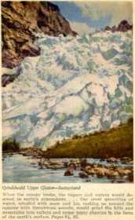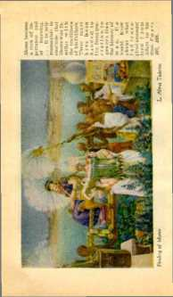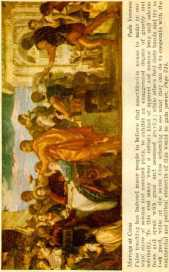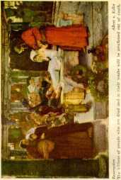see that blessed way, even the fool will have no excuse to err therein. For many centuries Satan, by use of false and fraudulent teachers and teachings, has turned the people away from God and blinded their minds to the truth; and only a small proportion of mankind have ever understood God's plan. (2 Cor. 4: 3, 4) Jehovah has not prevented the Devil from so doing, but he has rewarded those who have diligently and humbly sought to know and to do the Lord’s way.
The Christian era is that period of time from the first to the second coming of our Lord, during which time the good news has been told to the people. This preaching of the gospel or good news has seemed to be foolishness in the eyes of the wise men of this world, and especially to those who call themselves Modernists, savants and preachers. Hence the apostle wrote: ‘ ‘ For the preaching of the cross is to them that perish foolishness ; but unto us which are saved it is the power of God.”—1 Cor. 1:18.
The Modernist, who is wise in his own conceits, posing as a great teacher of the people, says that it is foolish for men to believe that the blood of Jesus has anything to do with the human race’s getting life. But mark what Jehovah has said: “For it is written, I will destroy the wisdom of the wise, and will bring to nothing the understanding of the prudent. Where is the wise ? where is the scribe ? where is the disputer of this world? hath not God made foolish the wisdom of this world? For after that in the wisdom of God, the world by wisdom knew not God, it pleased God by the foolishness of preaching to save them that believe.”—1 Cor. 1:19-21.
But now by the grace of God the due time has come when the flood of his truth and light shall sweep away the blinding falsehoods in order that the people may see the right way. Every sane man realizes that he is imperfect. He desires life and happiness. By observation and experience he has seen but sorrow, suffering and death. The great handicap of man is due to sin. Jehovah says to the man who has an honest desire to learn and to know the truth, “Come now, and let us reason together, saith the Lord: Though your sins be as scarlet, they shall be as white as snow; though they be red like crimson, they shall be as wool. If ye be willing and obedient, ye shall eat the good of the land.”—Isa. 1:18, 19.
A man must be willing to know the Lord’s way and be obedient thereto, and not follow the wisdom of some self-constituted savants or pious-speaking clergymen. The Holy Scriptures were given by inspiration of God “for instruction in righteousness; that the man of God may be perfect, throughly furnished unto all good works”. (2 Tim. 3:16, 17) They were not written for selfish men to juggle with, to misrepresent and use for commercial purposes. God nowhere invites a man to reason upon the theories of men, but he asks us to reason upon His Word.
The passover lamb was slain in Egypt, which land pictured the wicked world of which Satan is the invisible ruler. “World” means the organization of men into forms of government under the supervision of an invisible ruler. The governing part of humanity, which constitutes the visible world, is made up of the financial, political and ecclesiastical elements. The clergymen, as a general rule, claim to be a part of the world; and they work in conjunction with the financiers and politicians. Jesus Christ, whom the passover lamb foreshadowed, was slain in this wicked world. For this reason he said to Pilate: “My kingdom is not of this world” ; and again, he said to his disciples: “Ye are not of the world,” “even as I am not of the world.” (John 18: 36 ; 15; 18, 19 ; 17:14) When the passover lamb was slain in Egypt, and the Israelites had marched to safety beyond the Red Sea, that picture was complete. Thereafter God made preparations to make, and did malm, another picture illustrating or foreshadowing a step to be taken that leads to life everlasting.
The Tabernacle
Jehovah commanded Moses to come up into Mount Sinai. Moses obeyed and remained in the mountain forty days and nights. Jehovah there informed Moses of his purpose to have the tabernacle built. Then the Lord instructed Moses concerning the material which he should receive from the people for the building of the tabernacle.
“And Moses spake unto all the congregation of the children of Israel, saying, This is the thing which the Lord commanded, saying, Take ye from among you an offering unto the Lord: whosoever is of a willing heart, let him bring it, an offering of the Lord; gold, and silver, and brass, and blue, and purple, and scarlet, and fine linen, and goats’ hair, and rams’ skins dyed red, and badgers’ skins, and shittim wood, and oil for the light, and spices for anointing oil, and for the sweet incense, and onyx stones, and stones to be set for the ephod, and for the breastplate. And every wise hearted among you shall come, and make all that the Lord hath commanded. ’ ’—Ex. 35:4-10.
It is interesting to note that Jehovah did not coerce any one to furnish material or labor to build the tabernacle. All that must be done willingly. The Lord defined wisdom on the part of man when he said: “And every wise hearted among you shall come, and make all that the Lord hath commanded.’’ Wisdom means the use of the knowledge one has, in harmony with God’s will. Jehovah there began to teach the Israelites. The lessons given were not only for their benefit but for all who came after them. “For the Lord giveth wisdom; out of his mouth cometh knowledge and understanding. Discretion shall preserve thee, understanding shall keep thee.”—Prov. 2: 6, 11.
Those who had faith in God and who loved him obeyed. “And they came, every one whose heart stirred him up, and every one whom his spirit made willing, and they brought the Lord’s offering to the work of the tabernacle of the congregation, and for all his service, and for the holy garments. And they came, both men and women, as many as were willing hearted, and brought bracelets, and earrings, and rings, and tablets, all jewels of gold: and every man that offered, offered an offering of gold unto the Lord. ’ ’—Ex. 35: 21, 22.
God could have obtained all this material some other way, of course; but by permitting the Israelites to bring it as an offering it was a service for them which resulted in their blessing. Nor was the service confined only to the few, because it is written that the men and women brought part and the rulers the other part. Everybody who loved the Lord served. From this, every one who loves the Lord may learn a lesson. “And the rulers brought onyx stones, and stones to be set, for the ephod, and for the breastplate,”—Ex. 35:27.
There was a great deal of work in connection with building the tabernacle. Some who were qualified had to do beautiful wood-carving. Others, expert in the working of gold, silver and brass, did that; while still others wove the curtains, each one to his or her own particular work. It will be observed in the study of God’s plan that to every man whom he has enlightened God has offered the opportunity to do some work or service in his name, and the wise-hearted have availed themselves thereof and received a blessing.
After much laborious effort the material for the tabernacle was all brought, the work being done according to God’s command; and then he gave Moses direction concerning its erection: ‘' According to all that the Lord commanded Moses, so the children of Israel made all the work. And Moses did look upon all the work, and, behold, they had done it as the Lord had commanded, even so had they done it: and Moses blessed them.”—Ex. 39:42, 43.
A full year had elapsed from the time the children of Israel were delivered out of Egypt until the tabernacle was completed and set up.
“And the Lord spake unto Moses, saying, On the first day of the first month shalt thou set up the tabernacle of the tent of the congregation. And thou shalt put therein the ark of the testimony, and cover the ark with the vail. And thou shalt bring in the table, and set in order the things that are to be set in order upon it; and thou shalt bring in the candlestick, and light the lamps thereof. And thou shalt set the altar of gold for the incense before the ark of the testimony, and put the hanging of the door to the tabernacle. And thou shalt set the altar of the burnt offering before the door of the tabernacle of the tent of the congregation. And thou shalt set the laver between the tent of the congregation and the altar, and shalt put water therein. And thou shalt set up the court round about, and hang up the hanging at the court gate.
“And thou shalt take the anointing oil, and anoint the tabernacle, and all that is therein, and shalt hallow it, and all the vessels thereof: and it shall be holy. And thou shalt anoint the altar of the burnt offering, and all his vessels, and sanctify the altar: and it shall be an altar most holy. And thou shalt anoint the laver and his foot, and sanctify it. And thou shalt bring Aaron and his sons unto the door of the tabernacle of the congregation, and wash them with water. And thou shalt put upon Aaron the holy garments, and anoint him, and sanctify him; that he may minister unto me in the priest’s office. And thou shalt bring his sons, and clothe them with coats: and thou shalt anoint them, as thou didst anoint their father, that they may minister unto me in the priest’s office: for their anointing shall surely be an everlasting priesthood throughout their generations. Thus did Moses: according to all that the Lord commanded him, so did he. And it came to pass in the first month in the second year, on the first day of the month, that the tabernacle was reared up.”—Ex. 40:1-17.
The anointing of the tabernacle and all that was therein and used in connection therewith, as above stated, means that the tabernacle and its furnishings and all those who served were there by the direction of Jehovah, and by him officially designated to serve in their respective places and perforin their respective functions. Each and every part must perform its official duty in the picture which the Lord God was preparing to make, for the purpose of foreshadowing the outworking of his plan.
Descriptive
The tabernacle may be properly described as a house constructed of boards set on end, in sockets of silver, and fastened together and then covered or overlaid with gold; and over this house of wood was stretched a tent or covering.
The measurements of the tabernacle are in cubits. There wras a cubit of twenty-one inches measured by six handbreadths at three and one-half inches to the handbreadth. Ezekiel mentions a cubit of the altar as ‘‘the cubit and an hand breadth”. The weight of the evidence however seems to favor the conclusion that the tabernacle structure was fifteen feet wide, fifteen feet high, and forty-five feet in length.
There were two rooms or compartments of the tabernacle, divided by a heavy curtain or vail. The one farthest from the entrance, and on the west side, is called the “holiest of all”, and was fifteen feet long, fifteen feet wide, and fifteen feet high. The other compartment was thirty feet in length, fifteen feet wide, and fifteen feet high, and is called ‘ ‘ the holy ’ The vail that separated the holy from the most holy was hung upon four pillars of shittim wood, which were overlaid with gold. This vail was made of blue, purple and scarlet, and fine twined linen, with figures of the cherubim beautifully and cunningly interwoven therein.—Ex. 26: 31, 32.
The way or entrance into the holy is called the door of the tent. This was made of cloth or curtains of blue, purple, and scarlet, and fine twined linen wrought with needlework, hung over five pillars of shittim wood overlaid with gold.—Ex. 26: 36.
The Apostle Paul gives a description of the furnishings of the tabernacle as follows: ‘ ‘ For there was a tabernacle made; the first, wherein was the candlestick, and the table, and the shewbread; which is called the sanctuary. And after the second veil, the tabernacle which is called the Holiest of all; which had the golden censer, and the ark of the covenant overlaid round about with gold, wherein was the golden pot that had manna, and Aaron’s rod that budded, and the tables of the covenant; and ovei‘ it the cherubims of glory shadowing the merey seat; of which we cannot now speak particularly. ’ ’—Heb. 9:2-5; Ex. 40:19-29.
The tabernacle was the place of meeting between God and the Israelites; and this was manifested by the supernatural light which appeared in the “holiest of all”, between the cherubim, and which represented the divine presence. There was no other light in the most holy. In the holy or first compartment was a candlestick, which was kept lighted; and it was the only light therein. The heavy cloth covering of the tabernacle or tent excluded all light from the outside.
The tabernacle was surrounded by a yard or court. This was seventy-five feet wide by one hundred and fifty feet in length, and was formed by a linen curtain .suspended from silver hooks fastened in the tops of wooden posts, which posts were set in sockets of copper. It was braced with cords fastened to pins. The tabernacle tent was braced in the same manner. This court was not a part of the tabernacle, but surrounded it, and was used in connection with the tabernacle. It was called “the court of the tabernacle”. The entrance thereto was on the east and was designated “the gate”. This was made of white linen interwoven with blue, purple and scarlet.—Ex. 27: 9-18.
Inside the court and before the door of the tabernacle of the tent of the congregation was placed the altar upon which was burned the sacrifice. With the altar were the various fire-pans, flesh-hooks, and other necessary utensils. This altar was made of wood and covered with copper, and was known as the brazen altar.
Between the brazen altar and the door of the tent of the congregation was placed the laver. (Ex. 40: 5-7, 29, 30) The laver was made of copper; and in it was placed water for Moses, Aaron and his sons to wash their hands and feet thereat.—Ex. 40: 31-33.
The Scriptures frequently use the expression: “Before the door of the tabernacle of the congregation.” It is quite certain from the Scriptures that the “door” always means the entry way into the tabernacle proper, and never the entrance way into the court. The court was relatively unimportant in the eyes of the Jews; for they had free access to it on all days except the atonement day. (Lev. 1:3; 12:6; Num. 6:13-18) They were particularly concerned about the tabernacle, because this was the meeting-place between them and Jehovah.
Tn the scripture which describes the people of Israel as being gathered together “before the door of the tabernacle of the congregation”, the reference is evidently to the assemblage of the people to the east of that sacred structure, instead of being scattered about it on all sides as they would be if in their tents regularly occupied by them. It seems also quite evident that the gateway or entrance into the court was lifted or left open on such occasions, so that the tabernacle structure was in full view of the representative men who stood before the entrance.
All the ground within the enclosure of the tent, including of course the ground upon which the tabernacle was situated, was holy ground. This was particularly true at the time of the ceremonies of the atonement day.
The Israelites were encamped about the tabernacle in regular order. This was because of Clod’s command. “And the Lord spake unto Moses and unto Aaron, saying, Every man of the children of Israel shall pitch by his own standard, with the ensign of their father’s house: far off about the tabernacle of the congregation shall they pitch.”—Num. 2:1, 2.
The camp of Judah had the position of favor on the east side, toward the rising of the sun. Looking toward the tabernacle enclosure, the tribes of Zebulun and Issachar were respectively on the left and the right of Judah on the east side. On the north were the tribes of Dan, Asher and Naphtali; on the west, Benjamin, Ephraim and Manasseh; on the south, Reuben, Gad and Simeon.
The families of the tribe of Levi were given preferential positions near to the tabernacle. The family of Gershon pitched on the west side of the tabernacle enclosure; on the north were the Merarites; while on the south were the sons of Kohath located. Moses and Aaron were grandsons of Kohath; and they were stationed immediately to the east of the tabernacle entrance, because they were separated from their brethren, by special anointing, to do the work of sacrifice, particularly the atonement day sacrifices which constituted the special sin-offerings.—Num. 3: 23-28.
Jehovah caused a priesthood to be selected, anointed and installed in connection with the tabernacle service. A priest is an official servant of Jehovah God. In organizations made by men priests are often appointed by men, or by themselves, and use their office for a selfish purpose, sometimes for commercial purposes. Oftentimes a priesthood of Israel degenerated into that. But such was not the purpose of Jehovah God. No man has authority to take such honor unto himself. (Heb. 5:4) The priest used in connection with the tabernacle service was the servant of Jehovah God. He performed the duties the Lord assigned unto him. God’s law required him to be selected from the tribe of Levi. Aaron was the first high priest. His sons were priests under him.
"And thou shalt bring Aaron and his sons unto the door of the tabernacle of the congregation, and wash them with water. And thou shalt put upon Aaron the holy garments, and anoint him, and sanctify him; that he may minister unto me in the priest’s office. And thou shalt bring his sons, and clothe them with coats: and thou shalt anoint them, as thou didst anoint their father, that they may minister unto me in the priest’s office: for their anointing shall surely be an everlasting priesthood throughout their generations. ’ ’ —Ex. 40:12-15.
The anointing of the priesthood and the garments with which they were clothed all symbolically testified that they were officially the designated servants of Jehovah. They were formally inaugurated or installed into office; and on that occasion all of the congregation were gathered together before the door of the tabernacle; and then Moses informed the people what the Lord had commanded him to do with reference to installing the priesthood. (Lev. 8:2-5) Then Moses proceeded to consecrate and inaugurate the priests, as described in Leviticus the eighth chapter.
In this ceremony it is important to notice that the anointing oil was poured upon the head of Aaron but not upon his sons. This testifies that Aaron was the head or high priest, and that his sons were underpriests. Together they represent or picture the new creation, Head and body, in the course of development and while on the earth. The priests were not only officially anointed to serve Jehovah in an official capacity, but the service which was performed in connection with the consecration and institution of the priesthood foreshadowed that the ones whom they represented must enter into a covenant with Jehovah, be wholly and unreservedly devoted to him, and serve him in obedience to his commands.
There are many pictures and details in connection ■with the building of the tabernacle, the inauguration of the priesthood, and the sacrifice; but the one -which is particularly germane to the question now under consideration was that which took place upon the day of atonement.
Atonement Day
Jehovah gave command that the tenth day of the seventh month of each year should be a day of atonement. ‘ ‘ For on that day shall the priest make an atonement for you, to cleanse you, that ye may be clean from all your sins before the Lord.” (Lev. 16:30) On that day the priest who had been anointed and consecrated to serve in the priest’s office must be clothed with the linen garments. These may be properly designated as the garments for sacrifice.
Whatever assistance or service the under-priests Tendered, the command of Jehovah was positive that the high priest alone had access to “the holiest of all” on the day of atonement. Even the high priest must not cuter “the holiest of all” on that day except in exact compliance with the prescribed law. If he failed to comply with the law the penalty was death. (Lev. 16:2) The strict observance of God’s command in this connection indicates the great importance of the picture about to be made. Jehovah used Moses to instruct Aaron, the high priest, what he should do on this important occasion.—Lev. 16 : 3-5.
The Picture
In obedience to Jehovah’s command the high priest now begins to make a wonderful picture foreshadowing coming events. Mark him standing in the court when there is brought to him a young bullock for a sin-offering, and a ram for a burnt offering, and two goats and a ram for offerings. The priest then kills the bullock of the sin-offering, which is for himself. The blood of the bullock is taken in a vessel provided for that purpose. The priest takes a censer full of burning coals from off the altar and his hands full of sweet incense. He is now in the court. With the blood and the censer of fire and the incense he starts to the holiest of all.
In this picture there is no occasion for him to halt in the holy, and there is no evidence that he does so. The incense that is burned in the holy was burned only at the morning and evening sacrifices, and not at the time of the atonement day sacrifice. He passes through the vail which is the entrance way into the holiest of all. He puts the incense upon the fire; and as it burns, a cloud of incense rises up and stands above the mercy seat. Failing to do this the priest would die. Then he takes the blood of the bullock and sprinkles it with his finger upon the mercy seat eastward and before the mercy seat, seven times. Then the high priest returns to the court.
Foreshadowed What?
The foregoing picture, being made in obedience to the command of God, foreshadows good things to come. (Heb. 10:1) In God’s due time the reality must appear.
The camp was made up of Israelites. They had entered into a covenant with Jehovah, were under the law thereof and seeking the way to life which the law promised. Because of sin they had broken the covenant ; and on the atonement day the offering was being made because of sin, that they might be reestablished in their covenant. When assembled before the door of the tabernacle of the congregation, the people foreshadowed all the peoples of earth seeking the way of returning to God and to life, which way must be opened by a sacrifice made for sin. Outside of the camp were those who were opposed to God, foreshadowing the world, which is the Devil’s organization.
The atonement day of Israel was a twenty-four-hour period of time observed once each year, on which occasion an offering for sin was prepared and presented in the holiest of all. It foreshadowed a greater period of time, to wit, the Christian era or the period of sacrifice, during which time a greater sin-offering would be provided and presented in heaven itself.
The court was holy ground and therefore represented the condition of peace with God. On the atonement day only the priests were there. It foreshadowed a condition of peace with God, to be enjoyed by certain favored ones during the period of sacrifice. It shows a condition of justification, which means right with God. It was there that the animals were sacrificed, which sacrifice foreshadowed a greater sacrifice that would be made on the earth.
The tabernacle pictured things spiritual or heavenly. What transpired therein was invisible to those outside, since only the high priest was permitted therein during the atonement day. What transpired there on the atonement day foreshadowed what would come to pass in heaven itself in opening the way to life for mankind.
The priest, being the official servant of God, foreshadowed a greater Priest, an official Servant of God, to wit, Christ, the Anointed One of God. The work of service which Aaron the high priest did on the atonement day foreshadowed a better and greater work which the greater Priest would do within the period of the Christian era.
The bullock which was sacrificed, being without blemish, foreshadowed a greater sacrifice, which must be perfect. The bullock's life-blood poured out in the court foreshadowed the life-blood of a greater and better sacrifice, to wit, the perfect human life poured out on the earth to provide the ransom price. The blood of the bullock poured out in the court therefore foreshadowed the ransom sacrifice made by the perfect One of God on earth. The blood of the bullock carried by the high priest into the holiest of all foreshadowed the greater Priest presenting in heaven itself the value of the perfect human sacrifice or ransom price as an offering for sin and on behalf of man.
The Reality
The law required a life for a life therefore a per feet human life to be sacrificed to provide the purchase price for the perfect life which Adam forfeited by disobedience. When Jesus was thirty years of age, being perfect as a man and at his legal majority, he presented himself in full consecration unto God; which meant that he entered into a covenant to do God’s will. (Ps. 40:8; Heb. 10:7) His consecration was accepted, and he was there begotten to the divine nature and anointed by the holy spirit of God. (Matt. 3:16, 17) He there became the great High Priest of the Melchizedek order, installed in office to do service for Jehovah.—Heb. 7 :1-17.
Aaron was not a type of Christ, because Christ Jesus was a Priest of a higher order than Aaron; but Aaron foreshadowed Christ and the work he would do during the Christian era. Being always in harmony with and at peace with God, Jesus was, during his earthly ministry, in the condition represented by the court. As a perfect man, foreshadowed by the bullock, Christ Jesus, as the Priest foreshadowed by Aaron, offered himself unto God as a sacrifice. This work he did as Priest after the order of Melchizedek, and this work he did on the earth. On the atonement day the only place the ransom price was foreshadowed was in the killing of the bullock in the court. In reality Jesus fulfilled this picture when he died on the cross.
That ransom price, being provided while in earth, must be presented in heaven. When Jesus was raised from the dead a divine creature and ascended into heaven, he there presented unto Jehovah the value of the ransom price as an offering for sin. This was in reality that which was foreshadowed by Aaron’s sprinkling the blood upon the mercy seat in the holiest of all. The work which Aaron the priest did in sacrificing the bullock and carrying its blood into the holiest of all was in reality performed by Jesus from the time of his baptism at the Jordan until he ascended into heaven and appeared in the presence of God.
In the consideration of the ransom and sin-offering as foreshadowed on the atonement day the holy, the first compartment of the tabernacle, is purposely ignored, for the reason that it had nothing to do with. the atonement day sacrifice. On that day the incense was burned in the most holy by being sprinkled on the fire which was carried in the censer by the high priest. The incense burned in the holy on the golden altar was burned there during the morning and evening sacrifice.—Ex. 30:1-8.
Goat in Picture
After sprinkling the blood of the bullock in the holiest of all, Aaron the priest then returned to the court; and there another picture began. “And he shall take the two goats, and present them before the Lord at the door of the tabernacle of the congregation. And Aaron shall cast lots upon the two goats; one lot for the Lord, and the other lot for the scapegoat. And Aaron shall bring the goat upon which the Lord’s lot fell, and offer him for a sin offering. Then shall he kill the goat of the sin offering, that is for the people, and bring his blood within the vail, and do with that blood as he did with the blood of the bullock, and sprinkle it upon the mercy seat, and before the mercy seat.” (Lev. 16:7-9, 15) In this picture only the Lord’s goat is seen, and therefore the scapegoat is left for consideration elsewhere. The purpose of. the atonement day is to foreshadow the ransom and sin-offering.
Foreshadowed
The Lord’s goat in this picture represented the anointed of God, the same being a class counted in as members of the body of Christ, during the Christian era. The same class was foreshadowed by Aaron’s sons, the under-priests. No anointing oil was put upon them; but the anointing oil was poured upon Aaron's head and ran down upon his garments, foreshadowing that the class of under-priests would receive the anointing through their Head, Christ Jesus.—Ps. 133.
The slaying of the Lord’s goat and the carrying of its blood into the holiest of all foreshadowed the sacrificial death of that class who would constitute members of the body of Christ, and therefore a part of Christ; and that the Lord would again present his blood as an offering for sin at the end of the period foreshadowed by the atonement day, in which the church will participate by reason of being a part of The Christ.
Reality
During the Christian era, which was foreshadowed by Israel’s atonement day, men and women have consecrated themselves to do God’s will. This they have done because of faith in God and faith in the blood of his beloved Son, Christ Jesus, as their redemptive price. Their consecration having been accepted by Jehovah, such have been brought into the condition of peace with God, which is the condition of justification, and which was pictured by the court.
The justification of such resulted in the right to live as a human being, which life Jehovah then and there accepts as a part of the sacrifice of his beloved Son, Christ Jesus. There begotten by the holy spirit such individuals become members of the body of Christ; and they are then offered up by him as the High Priest, as a part of his own sacrifice. When the sacrifice of the members of the body is complete Christ Jesus, the great High Priest, again presents the value of his sacrifice in heaven itself, as a sin-offering on behalf of the people.
The offering of the blood of the bullock was for Aaron and his house. (Lev. 16:11) In the reality the offering of the blood of Christ Jesus, when he ascended on high, was presented in behalf of all those who are begotten to the divine nature during the Christian era. The offering of the blood of the goat was for the peo-pie. (Lev. 16:15) At the end of the period of sacrifice foreshadowed by the atonement day, the blood of Christ will be presented as an offering on behalf of all the people. It is therefore seen that on the atonement day the ransom was pictured in the court, and the sin-offering in the holiest of all.
The tabernacle was a part of the Law Covenant arrangement inaugurated at Mount Sinai. ‘1 Then verily the first covenant had also ordinances of divine service, and a worldly sanctuary. For there was a tabernacle made ■ the first, wherein was the candlestick, and the table, and the shewbread; which is called the sanctuary. And after the second veil, the tabernacle which is called the Holiest of all; which had the golden censer, and the ark of the covenant overlaid round about with gold, wherein was the golden pot that had manna, and Aaron’s rod that budded, and the tables of the covenant ; and over it the cherubim s of glory shadowing the mercy seat; of which we cannot now speak particularly. Now when these things were thus ordained, the priests went always into the first tabernacle, accomplishing the service of God. ’ ’—Heb. 9:1-6.
The statement here is that the priest “always”, that is to say, daily, went into the holy to accomplish the service of God. That service consisted of the morning and evening sacrifice, and had nothing to do with the atonement day sacrifice.—Num. 28: 3, 4.
The holiest of all, or second compartment of the tabernacle, was the place for sprinkling the blood of the animals on the day of atonement. It foreshadowed the great sacrifice of our Lord being presented in heaven itself. Christ Jesus when on earth laid down his life as a perfect sacrifice. Then he ascended on high, and there in heaven itself made a presentation of his sacrifice as an offering for sin, as it is written:
‘ ‘ But into the second went the high priest alone once every year, not without blood, which he offered for himself, and for the errors of the people: the holy spirit this signifying, that the way into the holiest of all was not yet made manifest, while as the first tabernacle was yet standing: which was a figure for the time then present, in which were offered both gifts and sacrifices, that could not make him that did the service perfect, as pertaining to the conscience; which stood only in meats and drinks, and divers washings, and carnal ordinances, imposed on them until the time of reformation. But Christ being eome an high priest of good things to come, by a greater and more perfect tabernacle, not made with hands, that is to say, not of this building.”—Heb. 9: 7-11.
Then the apostle says that the blood of the animals offered on the atonement day foreshadowed the offering of the blood of Christ as redemption for man. “Neither by the blood of goats and calves, but by his own blood he entered in once into the holy place, having obtained eternal redemption for us. For if the blood of bulls and of goats, and the ashes of an heifer sprinkling the unclean, sanctifieth to the purifying of the flesh; how much more shall the blood of Christ, who through the eternal spirit offered himself without spot to God, purge your conscience from dead works to serve the living God ? ’ ’—Heb. 9:12-14.
The blood of the animals at Mount Sinai foreshadowed the ransom and sin-offering, and was the basis for the confirmation of the Law Covenant. The blood of Christ Jesus provided the redemptive price and an offering for sin on behalf of mankind, and is the basis for the making and inauguration of the new Law Covenant. (Heb. 9:15-21) Then the apostle makes it clear and positive that the blood of Christ Jesus is essential to salvation:
“And almost all things are by the law purged with blood; and without shedding of blood is no remission. It was therefore necessary that the patterns of things
in the heavens should be purified with these; but the heavenly things themselves with better sacrifices than these. For Christ is not entered into the holy places made with hands, which are the figures of the true; but into heaven itself, now to appear in the presence of God for us; nor yet that he should offer himself often, as the high priest entereth into the holy place every year with blood of others ; for then must he often have suffered since the foundation of the world: but now once in the end of the world hath he appeared, to put awav sin by the sacrifice of himself.”—Heb. 9: 22-26. ‘
The foregoing Scriptural argument proves beyond any question of doubt that the blood of Jesus is the great redemptive price for mankind, and that the presentation of that blood in heaven constitutes the sin-offering on behalf of the human family.
Many will then naturally ask, Why, in the face of this tremendous argument showing the value of the shed blood of Christ Jesus, are there so many men claiming to be preachers of the gospel who deny that the blood of the Lord Jesus has any purchasing value whatsoever? The answer to that question the Lord foretold and caused his inspired witness to write down. “But there were false prophets also among the people, even as there shall be false teachers among you, who privily shall bring in damnable heresies, even denying the Lord that bought them, and bring upon themselves swift destruction.” (2 Pet. 2:1) “For there are certain men crept in unawares, who were before of old ordained to this condemnation ; ungodly men, turning the grace of our God into lasciviousness, and denying the only Lord God, and our Lord Jesus Christ.”—Jude 4.
Will the people continue to be hoodwinked by these false prophets, who are wise in their own conceits and who pose as preachers of the gospel, or will they be guided by the plain Word of God, which is now due to be understood ? Let each reader answer for himself.
The foregoing shows that the perfect sacrifice of our Lord was pictured, was foreshadowed, and was performed. Furthermore, it shows that his life-blood poured out at Calvary provided the ransom price; that it was presented in heaven as a sin-offering, and that thereby the Lord God has opened the way to life for man and ‘life more abundantly’ for the new creation.
CHAPTER VIII
JEHOVAH ended his work on the seventh day. “And he rested on the seventh day from all his work which he had made.” (Gen. 2:2, 3) Without doubt this statement relates to the creative work of Jehovah so far as the same pertains to things earthly. God is never idle. Long after the creation of man Jesus said: “My Father worketh hitherto, and I work. ’ ’—John 5:17.
Man was the climax of the work of God as his creation related to things earthly, which work was perfect. (Deut. 32:4) Thereafter Jesus came to the earth; and it may be asked, Was not he the creative work of Jehovah as that work related to the things of the earth? No; he was not. He was the second perfect man on the earth, but he was not created as Adam was created. His life or existence, together with the right thereto, was transferred from heaven to earth. He was begotten in the womb of Mary by the power of Jehovah, even as the prophet had foretold that a virgin should conceive and bring forth. (Isa. 7:14) He was not created, but he was the only begotten Son of God. (John 3:16) The Scriptures frequently speak of him as God’s only begotten Son.
Many make the mistake of thinking that God is responsible for the birth of every child. God delegated to Adam the power and authority to transmit life; and when Adam was sentenced to death the right to life was taken from him and he could not transmit the right to existence or life, but he did transmit life to a limited degree. Jesus was born in a similar manner to 190 other children; but his birth was perfect, because his existence and the right thereto emanated directly from Jehovah. “The first man is of the earth, earthy: the second man is the Lord from heaven, ”—1 Cor. 15: 47.
Since all the human race sprang from Adam and were begotten and born after his sin, all were born sinners. Abraham, Isaac, Jacob, and all other men were under this same disability. The exception to this rule was Jesus; and he was perfect, for the reason that lie was not begotten by man, as above stated. It therefore is clear that when he had created Adam, Jehovah rested from his creative work relative to the earth.
At the time Abraham offered his son Isaac in the mountain God said to him: “In thy seed shall all the nations of the earth be blessed.” (Gen. 22:18) Any blessing of mankind that would be of lasting value must include an opportunity for man to gain everlasting life. The son of Abraham being imperfect, it is manifest that the promised blessing could not come through him. The fact that Isaac died and that the blessing did not come in his day is of itself proof that Isaac was not the real One meant, but that Isaac foreshadowed the real One intended by the promise. “And the scripture, foreseeing that God would justify the heathen through faith, preached before the gospel unto Abraham saying, In thee shall all nations be blessed. Now to Abraham and his seed were the promises made. He saith not, And to seeds, as of many: but as of one, And to thy seed, which is Christ.” —Gal. 3: 8, 16. .
For centuries the “seed of promise” through which the blessing must come to the peoples of earth was shrouded in mystery. God ordained it so. That mystery began to be made known at Pentecost, and was then made known only to those who were consecrated and faithfully devoted to the Lord God. (Col. 1: 26; Eph. 3: 4, 9) That ‘ ‘ seed of promise ’ which is
the mystery of God, is the new creation, and constitutes the agency employed and to be employed by Jehovah in carrying out his plan to bless all the families of the earth as promised.
The new creation is The Christ. The Christ is a composite body made up of many members. The Head of The Christ is Jesus Christ, God’s beloved Son. Those who are taken from amongst men, justified, begotten and anointed by the spirit of Jehovah, and who then continue faithful unto death, will constitute the members of The Christ complete. (Eph. 1:22, 23) “And he is the head of the body, the church: who is the beginning, the firstborn from the dead; that in all things he might have the pre-eminence. For it pleased the Father that in him should all fulness dwell.”— Col. 1:18,19.
The new creation while on earth is a real thing, not an imaginary or reckoned thing. It does not consist of all who claim to be Christian, but consists of only those who have been adopted into the family of God through Christ. “If any man be in Christ, he is a new creature: old things are passed away; behold, all things are become new. ’ ’—2 Cor. 5:17.
The human body is taken as an illustration of The Christ, the Head and the members of the body being referred to as one. ‘ ‘ For as the body is one, and hath many members, and all the members of that one body, being many, are one body; so also is Christ. For the body is not one member, but many.” (1 Cor. 12:12, 14) The Christ and the new creation therefore mean one and the same thing.
Christ means the Anointed One of God. The pouring of the oil on the head of Aaron symbolically said: ‘ This one is anointed and is set aside to serve the Lord God in the priest’s office to which he is appointed.’ This foreshadowed the anointing of Christ Jesus. God did the anointing; therefore Christ Jesus is The Christ of God, appointed, anointed and installed in the office of High Priest for the service of Jehovah. (1 Cor. 12:13; Eph. 1:17) “But unto the Son he saith, Thy throne, 0 God, is for ever and ever: a sceptre of righteousness is the sceptre of thy kingdom. Thou hast loved righteousness, and hated iniquity; therefore God, even thy God, hath anointed thee with the oil of gladness above thy fellows. ’ ’—Heb. 1:8, 9; Ps. 45: 6, 7.
The Christ is the “seed of promise”, or “seed of Abraham”, the official channel through which the blessings of all the nations of the earth must come. (Gal. 3: 27-29; 4: 28; Heb. 6:17; 2 Pet. 3:13) The ‘seed of Abraham according to the promise’ being definitely identified as The Christ, it is manifest that God would delay the blessing of all the peoples of earth until he selects, develops, and completes that “seed”, which “seed” is God’s new creation.
The clergy of the denominational systems have taught the people that the only place of salvation is in heaven, that no one can be saved unless he joins himself unto some denominational church system, and that then when he dies he will go to heaven. They have made the people believe that God has been putting forth a strenuous effort to get men into heaven. Satan the deceiver has been responsible for this scheme advocated by the preachers. His purpose has been to turn the minds of the people away from God and to blind them concerning God’s provision for their salvation and blessing. Up to this time Satan has well succeeded in blinding mankind; but now the change is at hand, because it is God’s due time to let the people know the truth.
It seems clear that the time is at hand when the people may understand that the mystery of God is The Christ, the “seed of promise” through which their blessing must come. Christ is God’s way for man to obtain life. Life is a gift from God through Christ Jesus. (John 14:6; Rom. 5:18; 6:23) The people must have some knowledge before they can accept God’s gracious gift. In due time God will bring all men to an accurate knowledge of the truth, and that time seems now at hand. Men may take courage now and study God’s plan with a hope of finding the way that leads to everlasting life and blessings. This is time, not because men are any wiser today, but because it is the due time of Jehovah.—1 Timothy 2: 3-6.
The Head
The perfect man Jesus consecrated himself unto God. Consecration meant his agreement to do the will of God. He said: “I come ... to do thy will, O my God.” (Ps. 40:7, 8; Heb. 10:7) This he did when he presented himself at the Jordan and was baptized by John the Immerser. His baptism was a picture, symbolically testifying of his death as a man in order to be the Redeemer of men. (Rom. 6:3, 4) From the time of his birth as a babe until the moment of his baptism he was a human creature, nothing more and nothing less. He was perfect.
At the time of his baptism Jesus was begotten by Jehovah to the divine nature. Then and there God anointed him with his spirit. (Matt. 3:13-17) There he became Jesus Christ, the Anointed One of God. ‘‘God anointed Jesus of Nazareth with the holy spirit and with power.” (Acts 10:38) There the new creation began; and there Christ Jesus was made the Head over the members of the new creation, which is his body. (Col. 1:18) His anointing carried with it a commission from Jehovah God to do a specific work. (Isa. 61: 1, 2) After Jesus was thus anointed he understood what his relationship was to Jehovah and the work that he had to do.—Luke 4:16-21.
At the time of the baptism and anointing of Jesus he was appointed and installed in the office of Priest unto Jehovah God. He was and is a Priest “after the order of Melchizedek”. (Heb. 5: 3-6; Ps. 110:4) As a man he sprang from the tribe of Judah, and there was no provision for a priesthood from that tribe. As a new creature he was a Priest of the similitude of Melchizedek. (Heb. 7 :1-22) As such Priest he was, and is for ever, the honored Servant and Executive Officer of Jehovah God. As a great High Priest he offered himself as a human sacrifice to provide, and he did provide, the ransom price.
Christ Jesus died upon the cross and thereby gave himself a ransom for all mankind. (1 Tim. 2:5, 6; Heb. 2:9) He was put to death in the flesh and was raised from the dead in the spirit. (1 Pet. 3:18) He was the first one that was raised from the dead. (1 Cor. 15:1-20) He was given immortality even as Jehovah God had promised; and while he died as a man, he was raised from the dead, and is now alive for evermore.-—John 5:26; Rev. 1:18.
Because Christ Jesus was God’s anointed Priest to minister in the office to which he was appointed, he said: “I can of mine own. self do nothing: . . . because I seek not mine own will, but the will of the Father which hath sent me.” (John 5:30) From the time that he was anointed all work and judgment concerning the execution of the divine plan with reference to the salvation of men was committed to him. (John 5: 22) When he said, “I can of mine own self do nothing,” that did not mean that he was coerced into obedience by Jehovah; but it did mean that his devotion to his Father was so absolute and complete that he would and could do nothing except in harmony with his Father’s will.
As the divine High Priest of the Melchizedek order Christ Jesus was raised from the dead and ascended into heaven, and there he appeared in the presence of Jehovah and presented the value of his human sacrifice as an offering for sin. (Heb. 9: 2-1-26) His sacrifice was acceptable to Jehovah, and was accepted; and the acceptance was made manifest by the cloven tongues of fire that rested upon his disciples at Pentecost. (Acts 2:1-4) Thus Jehovah God opened the way for life and immortality through Jesus Christ, his beloved One.—2 Tim. 1:10.
The Scriptural proof establishes therefore the fact that the Logos, Jesus, and Christ Jesus, are one and the same. That he did not die when he came to earth, but that his life was transferred from heaven to earth is proven by the -words: “Before Abraham was, I am.” (John 8:58) These words imply a continuous existence. To die means to go out of existence. Jesus’ words therefore must be construed to mean that from the time of the beginning of creation until the moment he spoke those words he had existed and had the right to exist. He died upon the cross as a man and must, as a man, for ever remain dead, but the right of his life as a man he gives for the life of the world. This is proven by his words: “I have power to lay it [my life] down, and I have power to take it again. This commandment have I received of my Father. ’ ’—John 10:18; 6: 51.
His Body Members
Christ Jesus alone is sufficient to execute Jehovah’s plan. He alone provides the ransom price. It has pleased Jehovah God, however, in the exercise of his loving-kindness, to select others to be members of his body and therefore to be a part of The Christ. In doing this he does not select angels to be a part of The Christ, but he selects men and women who have the faith like unto Abraham. (Heb. 2:16, 17) God visits the nations to take out from them a people for his name. (Acts 15:14) These are made acceptable unto God through Christ Jesus, and in no other way. God did not predestinate the individuals who will make up the body of Christ, but he did predestinate that there should be a number selected from amongst men to make up that body. Concerning this it is written:
“Blessed be the God and Father of our Lord Jesus Christ, who hath blessed us with all spiritual blessings in heavenly places in Christ: according as he hath chosen us in him before the foundation of the world, that we should be holy and without blame before him in love: having predestinated us unto the adoption of children by Jesus Christ to himself, according to the good pleasure of his will, to the praise of the glory of his grace, wherein he hath made us accepted in the beloved. In whom we have redemption through his blood, the forgiveness of sins, according to the riches of his grace; wherein he hath abounded toward us in all wisdom and prudence; having made known unto us the mystery of his will, according to his good pleasure which he hath purposed in himself. ’ ’—Eph. 1: 3-9.
Foreshadowed
The nation of Israel was the chosen people of God. They did not constitute the new creation, but that nation foreshadowed the new creation, which is God’s people selected and elected for a purpose. Israel after the flesh was the moving picture which was provided by Jehovah and which foreshadowed the real thing, which real thing is, to wit, spiritual Israel, the new creation. Jacob, whose name was changed to Israel, was the beginning of the Israelites after the flesh. Jacob’s natural offspring were born under the terms of the covenant confirmed at Mount Sinai. The new creation is spiritual Israel begotten and brought forth under the terms of another covenant.
The Israelites entered into a covenant with Jehovah, by and through Moses as their mediator or go-between. By agreeing to the terras of the covenant they bound themselves to be obedient to God’s will. That covenant confirmed at Sinai served as a school master to safeguard and lead obedient ones of the Israelites until God's due time to begin the new creation, which is The Christ. The nation as a whole failed to keep the terms of the covenant and lost everything that that covenant promised. A small remnant of that people, however, did accept Christ as the great Redeemer and deliverer ; and by the grace of God such became a part of the new creation.—Rom. 11: 5.
To natural Israel God said at Mount Sinai: ‘ ‘ Now therefore, if ye will obey my voice indeed, and keep my covenant, then ye shall be a peculiar treasure unto me above all people: for all the earth is mine. And ye shall be unto me a kingdom of priests, and an holy nation. These are the words which thou shalt speak unto the children of Israel. ’ ’—Ex. 19: 5, 6.
To spiritual Israel, foreshadowed by natural Israel, that is to say, to those who have accepted Christ as their Redeemer and have come into Christ, the Lord God says through his appointed witness: “But you are a chosen race, a royal priesthood, a holy nation, a people for a purpose.” (1 Pet. 2: 9, Diaglott) These scriptures conclusively prove that Israel after the flesh was the picture foreshadowing Israel after the spirit, which is the reality; and that the reality is God’s new creation.
How Formed
The new creation, which is spiritual Israel, is begun and completed by the terms of a covenant. Jesus the Head thereof made a covenant with Jehovah at the Jordan to do his Father’s will. That covenant entailed upon Jesus the sacrificing of himself as a man. There is no evidence that he knew at the time he made the covenant that he was to die. He spent forty days and nights in the mountain, studying God’s plan and communicating with Jehovah after having his mind illuminated by the holy spirit. Then he would know, and then and thereafter he intelligently and faithfully carried out his covenant.
The members of his body must follow in the same way. (1 Pet. 2:21) All who become members of the new creation must do so by and through a covenant of sacrifice. (Ps. 50:5) When the disciples of Jesus believed he was the Messiah, and became his followers, they thereby agreed to do the will of God. A covenant is a solemn agreement to do or not to do a certain thing. When they accepted Jesus as the Messiah, that was the beginning of their covenant. That marked their consecration. They could not be justified until the ransom sacrifice was presented in heaven as a sin-offering and accepted. The acceptance was manifested at Pentecost, and then and there these disciples were justified and begotten by God’s holy spirit.
The new creation is a select or elect company who are taken out from amongst men and then adopted into the family of God through Christ. God’s manner of selecting and forming the new creation is important. His Word tells in what manner he selects and develops the members thereof. This information discloses how one becomes a real Christian.
Since all the human race is born in sin and no man who is a sinner can approach God, what can a sinner do to become a Christian and thereby a member of the new creation ? The Scriptures declaring that life is a gift of God through Jesus Christ our Lord, it is manifest then that knowledge of the gift and of how it is given is the first essential. Man must first learn, either by being informed by some one or by reading from the Word of God, that he is a sinner, that he needs help, and that he is unable to help himself. Seeing that the course of mankind is unrighteous he must have a desire for righteousness. He learns that Jehovah is God and believes that fact. This constitutes faith in God, without which it is impossible for him to please God. (Heb. 11: 6) He then learns that Jesus Christ is the beloved Son of God, whose life is given as a ransom for mankind.
His reverence for God is the beginning of wisdom. (Ps. Ill: 10) That means that he is now beginning to apply his knowledge in harmony with God’s will, and this he does when he begins to reverence Jehovah. He has a desire to know more about Jesus and why he died and was raised from the dead. By this knowledge and desire God draws him to Jesus. This is in harmony with the statement made by Jesus: “No man can come to me, except the Father which hath sent me draw him.” (John 6:44) It is thus seen that an honest and righteous desire to live, and to live in harmony with the Creator, is one of the first essentials for one to become a Christian.
It is reasonable to conclude that God so surrounds such an one with circumstances that would attract him to the Lord Jesus, and thereby draw him to Jesus. Proof of this is found in the experience of Cornelius. He knew nothing of the plan of salvation through Jesus Christ, but he did have faith in and reverence for Jehovah. He had an honest and righteous desire to be in harmony with God. He prayed to God, and his prayer ascended unto God as a memorial. (Acts 10:1-48) In due time Jehovah brought to his attention the knowledge of his way to life, by sending Peter to him to tell him.
So it often occurs when one has an honest desire to know the Lord that some one comes his way and places in his hand a book, or tells him something of God’s gracious plan of salvation. When he receives this knowledge into a good and honest heart he learns that God’s way for man to return to him and get life everlasting is through Jesus Christ. The testimony of Jesus is: “I am the way, the truth, and the life: no man cometh unto the Father, but by me.’’-John 14: 6.
Up to this point the man lias been going in the way of sinners. His mind has been devoted to things selfish. Having a desire for life, and now seeking the way to life, he repents. Repentance means a change of mind. By the knowledge thus obtained he has changed his mind, and desires to know God’s way to life. In this inquiring attitude the words of Jesus now apply to him. “If any man will come after me, let him deny himself, and take up his cross, and follow me. ’ ’ —Matt. 16:24.
Consecration
To obey the above injunction from Christ Jesus means to make a consecration. One who consecrates himself to God thereby agrees to do God’s will. The man, now believing that he is a sinner and that Christ Jesus is his Redeemer, and that the way back to Jehovah and to life is through Christ Jesus, says in substance if not in terms: ‘I am determined to do God’s will’; and then solemnly and reverentially in his mind or by his lips he says to Jehovah: ‘Trusting in thee and in thy Word, and believing in the precious blood of Christ, I do now agree to do thy holy will.’ This constitutes a denial of self; this is his consecration; and since it is his agreement to do the will of God it is man’s part of his covenant with God.
It may now be properly said that the man is converted. To be converted means to change one’s course of action. He changes his course of action by turning away from following selfish things and agreeing to follow and following the Lord Jesus Christ. The Lord Jesus now stands sponsor for the one thus consecrating, because of his faith; and as man’s sponsor or advocate presents him to Jehovah.
Justification
The man is still imperfect, and God can not receive an imperfect thing. God, however, can justify the man. Justification means to be made right with God. The process of justification may be properly defined as the judicial act of Jehovah whereby he determines that the man is right and at peace with him. Three things are vitally essential to the justification of the man thus seeking the Lord, to wit: (1) Faith in God and in Christ Jesus’ sacrifice; (2) the blood of Jesus, representing his life applied for such an one; and (3) the judicial act of Jehovah justifying the man. The man desires life and is seeking the way to it, and he knows that that way is through Christ Jesus back to God. Faith means to have a knowledge of these things and then to confidently rely upon that knowledge, which comes from the Word of God.
Abraham believed God. and his faith was counted unto him for righteousness. That was written not for Abraham’s sake alone, “but for us also, to whom it shall be imputed, if we believe on him that raised up Jesus our Lord from the dead; who was delivered for our offences, and was raised again for our justification.” (Rom. 4:20-25) The way was not open to Abraham to get life, for the reason that the blood of Jesus had not been shed as the ransom price nor presented as a sin-offering. The blood of Jesus is the basis for justification. The one who, exercising faith therein, consecrates himself unto God by agreeing to do his will, thereby exercises faith in the blood of Christ. Then God is the one who justifies him.
Now mark the scriptures showing the three things essential: Faith; the blood of Jesus; and the judicial determination by Jehovah. “Therefore being justified by faith, we have peace with God through our Lord Jesus Christ.” (Rom. 5:1) “Much more then, being now justified by his blood, we shall be saved from wrath through him.” (Rom. 5:9) “It is God that justifieth. ’ ’—Rom. 8: 33.
Justification results in the right to life, for the reason that all righteous creatures are entitled to life. The man thus justified is granted the right to live as a human being, by virtue of his faith exercised in making a consecration. Why would God justify a man? Would it be for the purpose of enabling him to live as a human being for ever on earth ? The will of God concerning all those justified in the Christian era, or day of sacrifice, which was foreshadowed by the day of atonement, is that such shall be made a part of the sacrifice of Christ Jesus. The justification during that period is for no other purpose. God accepts such an one and justifies him; and thereby is the covenant between man and God made through Christ Jesus, which is a covenant by sacrifice. (Ps. 50: 5) The man having agreed to do God’s will and God having accepted that agreement, and it being the will of God that the man shall die as a part of the sacrifice of our Lord Jesus, this constitutes a covenant by sacrifice.
Recall now the tabernacle picture made on the day of atonement, and that two goats were brought into the court. The court pictured the condition of justification. The two goats represented all who in the Christian era are justified by faith in the blood of Christ. Lots were cast, and one of the lots fell upon the Lord’s goat. This indicated that Jehovah is not arbitrary, but that he sets before the one thus justified the privilege of fulfilling his covenant; and the one who does fulfil his covenant was pictured by the Lord’s goat, and the sacrificing of that goat foreshadowed that such will form a part of the sacrifice of our Lord Jesus Christ.
The question then is, What does the man sacrifice? The answer is, Tie sacrifices his right to live as a human being on the earth. Being born a sinner, whore did he get that right to live? It resulted to him by reason of God’s justifying him. The sacrifice of his life was pictured by the slaying of the Lord’s goat in the court. It was the priest who did the sacrificing, foreshadowing that in the reality Christ Jesus the High Priest sacrifices the justified ones as a part of his own sacrifice. The man therefore does not sacrifice anything himself; but the High Priest sacrifices him, and the man agrees thereto by agreeing to do God’s will at the time of consecration.
Call of the New Creation
Concerning the new creation it is written: “For the gifts and calling of God are without repentance.” (Rom. 11: 29) The gift of God is life, and to the one whom God justifies he gives life. The call of God is an invitation to a higher position or plane of life. Henceforth the man must live on a spirit plane or not live at all. This call, says the apostle, is irrevocable, not subject to change. The question is then, What constitutes the call ? Can it be said that God has been promiscuously issuing a call for men to come to heaven? The answer is, No. God calls no one except those whom he justifies, and justification is for the purpose of making the justified one a part of the sacrifice of his beloved Son.
God predestinated the new creation, not the individuals, but the class who should compose the body. “Moreover whom he did predestinate, them he also called; and whom he called, them he also justified.” (Rom. 8:30) This proves that the justified ones are the ones called and that no one is called until he is justified, because God does not call sinners to a high position with his beloved Son. To what then arc the justified called? The answer is, They are called to an heavenly calling. (Heb. 3:1) It is God who calls with an holy calling, as it is writ ton: “Who hath saved us, and called us with an holy calling, not according to our works, but according to his own purpose and grace, which was given us in Christ Jesus before the world began. ’ ’—2 Tim. 1 ■ 9.
This scripture can not be construed to mean that the call was before the world began, but it was his purpose before the world began to provide for and call this class. The apostle’s argument is that we are saved and then called with an holy calling. As the apostle puts it concerning himself: He was ‘ ' called to be an apostle of Jesus Christ through the will of God, . . . even as the testimony of Christ was confirmed in you”. (1 Cor. 1:1, 6) Such are called to an heavenly vocation (Eph. 4:1); and all are called in one hope, which hope is to attain unto the resurrection of Christ, the prize of the high calling of God in Christ Jesus.— Phil. 3:11, 14.
It is manifest from these scriptures that it is the new creation that is called, justification being granted in order that the one justified might be a part of the sacrifice. It follows then that justification, in conjunction with that which takes place practically simultaneously, to wit, the begetting, constitutes the call or invitation to a position in the body of Christ. God justifies, to the end that he may accept the sacrifice and beget such an one; therefore the call takes place at the time of justification and spirit begetting.
Recall now that the high priest took the Lord’s goat and killed it, and then with its blood made the journey into the holiest of all, as he did with the blood of the bullock. The death of the Lord’s goat foreshadowed the sacrifice of the human life that results to the one whom God justifies. Then and there such an one is begotten as a new creature in Christ.
Spirit Begetting
Some have understood and taught that the new creature in Christ is the seed of God, or immortality, planted within him; and that such seed goes about in the human being on the earth until it is taken either to heaven or to hell. That doctrine is unscriptural and therefore untrue. An immortal creature can not die. If the above doctrine were true, and one should become a new creature and then repudiate Christ and God, he could continue to live notwithstanding his repudiation of the Lord. On the contrary, the Scriptures show that if one is begotten as a new creature in Christ, and thereby has tasted the good Word of God and the powers of the world to come, if he then repudiates the Lord he dies and there is no resurrection for him.—Heb. 6: 4-6 ; 10: 26-29.
Others have taught and teach that the begetting and birth of an animal creature illustrates the beginning and birth of the new creation in Christ; that is to say, that there is a begetting and then the gestation and quickening into life and growth, and then the birth. Such a doctrine is likewise erroneous, because it finds no support in the Scriptures. If such a theory were true, then there would be no responsibility on the part of the new creature during the period of gestation, quickening and growth until birth. On the contrary, the Scriptures show that the new creature is responsible from the very beginning.—Rom. 8:1-13.
The Scriptural teaching is that the new creature is begun and completed by and according to the terms of a covenant. The begetting is an act of Jehovah and therefore is his part of the covenant with the one who is consecrated. “Of his own will begat he us with the word of truth, that we should be a kind of firstfruits of his creatures.” (Jas. 1:18) This means that it is the will of God that the one thus justified shall be begotten, and this he does by his Word of truth and the exercise of his holy spirit or invisible power.
Upon this point it is again written: “According as his divine power hath given unto us all things that pertain unto life and godliness, through the knowledge of him that hath called us to glory and virtue; whereby are given unto us exceeding great and precious promises: that by these ye might be partakers of the divine nature, having escaped the corruption that is in the world through lust. ” (2 Pet. 1: 3, 4) The Apostle Peter is here addressing the new creature; and his argument is that God in the exorcise of his divine power and will has given to this creature the exceeding great and precious promises whereby he promises him that he shall be partaker of the divine nature, and the condition is that the one who is a new creature must fulfil his part of the covenant.
The begetting means the beginning of a creature, with a hope set before him of seeing the completion of that which is promised. To what then is the new creature begotten? The apostle answers: “God . . . according to his abundant mercy hath begotten us again unto a lively hope by the resurrection of Jesus Christ from the dead, to an inheritance incorruptible, and undefiled, and that fadeth not away, reserved in heaven for you. ’ ’—1 Pct. 1:3,4.
There is nothing in these scriptures to indicate that the new creature in Christ is a foetus and that there is a period of gestation and then quickening. On the contrary, such an one becomes a new creature from the very moment that God begets him, and his responsibility begins from that moment. The one thus begotten is inducted into the body of Christ and is made a member of the body of Christ by adoption. The apostle says: “For ye have not received the spirit of bondage again to fear; but ye have received the spirit of adoption, whereby we cry, Abba, Father. ’ ’—Rom. 8:15.
Baptized into Christ
When one becomes a new creature in Christ his right to life as a human being is gone. That right to life as a human being existed only for a brief space of time, to wit, from the time he was justified until he was begotten, which are practically simultaneous. Concerning this point the apostle writes: “Know ye not, that so many of us as were baptized into Jesus Christ were baptized into his death ?’’—Rom. G : 3.
How could this be true of one who is still in existence on earth ? Life means to exist and possessing the right to existence; and as a man the one consecrated existed and had the right of existence as a human being only till begotten. When begotten by the holy spirit of God his right to live as a human being ceased. When he is accepted by Jehovah as a part of the sacrifice of the Lord he is immersed or baptized into Christ. He is baptized into Christ’s death, because he must die a sacrificial death as Christ died in order that he might live with Christ. “Therefore we are buried with him by baptism into death: that like as Christ was raised up from the dead by the glory of the Father, even so we also should walk in newness of life. For if we have been planted together in the likeness of bis death, we shall be also in the likeness of his resurrection. ’ ’—Rom. 6: 4, 5.
Does this baptism into Christ’s death take place at the moment when the full surrender or consecration is made to do the will of God? The answer is, No. The consecration may be some time before justification. He could not be accepted as a part of the sacrifice until justified. The baptism into Christ’s death takes place at the time the covenant between the consecrating one and Jehovah is made, to wit, at the time ho is justified and begotten of the holy spirit and thereby inducted into and made a part of Christ. This is clearly shown in what transpired with the disciples. They were consecrated to do the will of the Lord long before they were justified. Their consecration dated at least from the time they accepted Jesus as the Messiah and began to follow him.
Some time thereafter Jesus said to them: “Are ye able to drink of the cup that I shall drink of, and to be baptized with the baptism that I am baptized with t They say unto him, We are able. And he saith unto them, Ye shall drink indeed of my cup, and be baptized with the baptism that I am baptized with.” (Matt. 20: 22, 23) It is manifest from this language that he had been baptized into death, and that this began to take place at the time his covenant was made and accepted by Jehovah. His baptism would be completed when he died upon the cross.
In speaking of his baptism Jesus said to his disciples : ‘ ‘ But I have an immersion to undergo; and how am I pressed, till it may be consummated?” (Luke 12: 50, Diaglott) It is also manifest from the language of Jesus, “Ye shall ... be baptized with the baptism that I am baptized with,” that the disciples had not yet had that baptism. Then when were they baptized into Christ’s death? The answer must be, At Pentecost, at the time they were justified and begotten by the holy spirit. The same rule applies to all who are immersed into Christ, namely, that their baptism into Christ takes place at the time they are justified and begotten by the holy spirit, both of which must follow consecration.
This conclusion is further supported by the inspired statement concerning the new creature, to wit: “Mind the things above, not the things on the earth. For you died, and your life has been hidden with the Anointed One by God.” (Col. 3:2, 3, Diaglott) The apostle’s argument here is that the one begotten died as a man at the time he was begotten as a new creature; and that henceforth his existence and right to existence are hid by Jehovah, with and in Christ Jesus. That this baptism into Christ’s death is essential to get into Christ the apostle makes plain when ho says: “For as many of you as have been baptized into Christ have put on Christ. ’ ’—Gal. 3: 27.
There is a clear distinction between a completed covenant and an executed covenant. The covenant of sacrifice between the consecrating one and Jehovah is complete at the time of justification and spirit begetting by Jehovah. It is not an executed covenant, however. It will be fully executed when the one who is now a new creature finishes his course and enters fully into the glory of the Lord. It is at the time that the covenant is completely made that the baptism takes place into the death of Christ. “Having been buried with him by immersion ; in which also you were raised with him, through the belief of the energy of that God who raised him from the dead.”—Col. 2:12, Diaglott.
The covenant of sacrifice having been completely made at the time the man is begotten as a new creature in Christ, he must thereafter make good his covenant by faithfully performing his part. God is just and faithful to keep his part of the covenant; and if the new creature is faithful to his part, it will ultimately be fully consummated or executed.
The new creature in Christ is anointed by the holy spirit. Anointing means to designate one to a position of authority or service for or in behalf of God, as his representative. Aaron the priest was anointed to serve in the priest’s office. (Ex. 40:13) He was officially designated to that place. The anointing of Aaron foreshadowed the anointing of Jesus as The Christ. Jesus Christ was anointed to be the Head of the new creation. (Col. 1:18, 19; John 1:32) God anointed Jesus of Nazareth with the holy spirit and ■with power. (Acts 10:38) He anointed him above all others. (Heb. 1: 9) He was thereby officially designated as the great High Priest.
All the members of the body receive the anointing of the holy spirit, but not in the same manner that Jesus received it. A picture of this is given in the anointing of Aaron. There the precious ointment was poured upon the head and ran down upon his beard and down to the hem of his garments. (Ps. 133: 2) The sons of Aaron wore bonnets and did not receive the anointing directly, but they were counted in as a part of the priesthood by virtue of being under Aaron. This foreshadowed the new creation. The members of the body are anointed by virtue of being inducted into the body of Christ. They are counted in as part of Christ, which indeed the members are from the time they are inducted into Christ. (Isa. 61:1, 2) God anointed the Head, Christ Jesus, and he anoints all the members of the body through the Head.—2 Cor. 1:21; 1 John 2:20.
He that is thus brought into the body of Christ is an actual, real new creature. The apostle says: ‘1 Therefore if any man be in Christ, he is a new creature: old things are passed away; behold, all things are become new.” (2 Cor. 5:17) He did not say that the one thus begotten is reckoned or counted as a new creature, but the statement is plain and positive that he is the real thing.
Of what does the new creature consist? A mind, will, heart and body wholly devoted to the Lord compose the creature. The mind is that faculty of the being which is employed to search out the facts and weigh them and reach a conclusion. The will is that faculty of the being which determines to do or not to do a certain thing. The heart is that faculty of the creature from which emanates the motive. It is the seat of affection, also. No creature can exist without an organism; therefore the organism of the new creature now is the body of flesh.
For convenience we will call the man who has become a new creature John. When he, was born as a human being of the Adamic creation he was a sinner. As a man he possessed a mind, will, heart and organism in keeping therewith. These, however, were not devoted to the Lord. The spirit or invisible power of God did not work in his mind; and his hopes and prospects and desires were directed in a selfish way. When he became a new creature in Christ the holy spirit began to work in him, because he exercised his will to do the will of God and used his mind to ascertain what is the will of God; and his motive is to do what God would have him do and to do what is right. When the spirit of the Lord operates in him, the old things have passed away, and all things have to him become new.
There is a distinction between the creation of the first man Adam and the beginning of the new creature. Adam was made of the elements of the earth and without the exercise of his will power. The new creature is made of willing earthly material in the hands of God and by the exercise of the man’s will power which leads him to completely and fully surrender himself to do God’s will. In the creation of Adam the body was first formed from the elements of the earth; and then God breathed into his nostrils the ‘breath of lives’, and a moving, sentient being resulted. In the new creation the order is exactly reversed. The will is exercised to make a consecration to do God’s will. The mind is transformed as the spirit of God operates thereupon.
But while this transformation process is going on the mind must have a body in which to function. No creature can exist without a body or organism. The body of the sinful man John was dominated by the selfish will of the flesh. The new creature John now begotten must have a body suited to his environment. God therefore counts the body of flesh of John as righteous, because he is a consecrated new creature. “But if the spirit of him that raised up Jesus from the dead dwell in you, he that raised up Christ from the dead shall also quicken your mortal bodies by his spirit that dwelleth in you.”-—Rom. 8:11.
The text last quoted does not say and does not mean that a new creature is begotten or conceived like an animal creature, and that then the foetus is quickened and gives signs of life. It says and it means that he who is now a new creature in Christ by reason of the holy spirit of God operating in him, is stimulated to activity to use all the faculties with which he is endowed, including his mortal body, to the glory of God. In the text there is no thought of quickening as we use that word with reference to animal creation. The thought is that the new creature must now be the servant of Jehovah, and that the body of that creature must be used to the glory of God and will be so used in proportion to the measure of the spirit of the Lord possessed by him.
Bridegroom and Bride
In the creation of man God established the relationship of husband and wife, or bridegroom and bride. (Gen. 2:18-24) The same relationship is recognized between Jesus Christ, the Bridegroom, and his body member’s, the bride, which is his church. (John 3:29) This was foreshadowed when Abraham sent his servant to select Rebecca as a bride for his son Isaac. She was betrothed to Isaac before she became his wife. Likewise the members of the body of Christ are betrothed to him before becoming the wife. The betrothal takes place at the time of the spirit begetting and anointing. This betrothal is forteold by God’s prophet. This betrothal is irrevocable so far as the Lord is concerned; and as long as the betrothed bride is faithful that relationship will exist.
“I will betroth thee unto me for ever; yea, I will betroth thee unto me in righteousness, and in judgment, and in lovingkindness, and in mercies. I will even betroth thee unto me in faithfulness: and thou shalt know the Lord.” (Hos. 2:19, 20) In order therefore to be ultimately in glory with the Lord as a member of his body one must be righteous, just, loving, kind, merciful and faithful unto death. All who are thus will be presented faultless before the presence of his glory with exceeding joy. The Apostle Paul speaks of the same thing when he says: ‘‘For I am jealous over you with godly jealousy: for I have espoused you to one husband, that I may present you as a chaste virgin to Christ.” (2 Cor. 11: 2) When the members of the new creation are complete, this marriage of the Bridegroom and the bride will be consummated. — Rev. 19: 7 ; 21: 2.
Sanctification
In the memorable prayer of Jesus to Jehovah just before his crucifixion he said concerning those who should become one with him as his bride: ‘ ‘ Sanctify them through thy truth: thy word is truth.” (John 17:17) Again it is written that Christ loved the church and gave himself for it, that he might sanctify and cleanse it. (Eph. 5: 25) ‘‘That he might sanctify and cleanse it with the washing of water by the word, that he might present it to himself a glorious church, not having spot, or wrinkle, or any such thing but that it should be holy and without blemish.”—Eph. 5: 26, 27.
To sanctify means to make holy, to purify. Jehovah is holy, because all his ways are right. (Ps. 18:30) Jesus Christ is holy, because always in harmony with Jehovah in doing his will. The members of the new creation must be made holy, like unto their Head. God reconciles these to himself by Jesus Christ. (-2 Cor. 5:18) All creation is from Jehovah and by Christ Jesus. (Col. 1:16) When one enters into a covenant with God he agrees to do God’s will. When he is adopted into the body of Christ he is set aside for the Lord’s service. Now he must be wholly devoted to God. The Devil turned Adam and all of his offspring away from God; but in the new creation God will have a nation and people absolutely and completely devoted to him, who will refuse to even sympathize with the Devil or any part of his organization.
The world is the Devil’s organization. It is composed of the commercial, political and religious elements. The Devil has inveigled millions of professed Christians into his organization. He has made them entirely misunderstand the meaning of holiness. Through his paid agents who preach for hire he has entirely misrepresented sanctification and holiness. Their false teaching has induced many people to believe that sanctification means to make an outward show of solemn and assumed piety, to exhibit an exaggerated degree of gravity and solemnity. To this end many wear a certain kind of apparel and assume long and solemn faces and speak with great and assumed gravity; while others fold their hands and try to look good, while at the same time scheming to see what they can do to cooperate with the commercial and political elements of this world.
For one to pretend to be a Christian and at the same time to support the commercial and political powers of the world, and conform himself unto a part thereof and have sympathetic relation therewith, makes him a fornicator or adulterer in the sight of God. No honest man could approve of the wife of one man having sexual relationship with some man other than her husband. The laws of the land denounce such as adultery. Neither dees God approve of a member of the new creation having relationship with the Devil’s organization, which is this world. As husband and wife should be faithful to each other, so must Christ and his betrothed bride. Christ Jesus is always faithful, and any one to remain a part of the new creation must be faithful to him. Concerning this it is written: “Ye adulterers and adulteresses, know ye not that the friendship of the world is enmity with God? whosoever therefore will be a friend of the world is the enemy of God.”—Jas. 4: 4.
Everything out of harmony with God is unholy. Satan and his organization are opposed to God and therefore unholy. There can be no fellowship between holiness and unholiness. “No servant can serve two masters.” (Luke 16:13) No one can devote part of himself to God and the remainder to Satan’s organization. Members of the new creation can have no sympathy with the Devil’s organization or any part thereof.
Members of the new creation can not be a part of this world, which is the Devil’s organization. The members of the new creation must be in the world but not of the world, even as Jesus was in the world but not a part thereof. To his body members he said: “If ye were of the world, the world would love his own: but because ye are not of the world, but I have chosen you out of the world, therefore the world hateth vou.” —John 15:19. ’
When one becomes a Christian he may think for a time that it is right and proper for him to participate in and pursue a course similar to that of the respectable part of the world. But he can not do this and be holy. He must leave the politics, the reformations, the temperance organizations and every similar thing, and become absolutely and completely dedicated to the Lord, and use his faculties with which he is endowed to the Lord’s glory; and in no other way can he become holy. The Apostle Paul confirms this when he says: “Be not conformed to this world: but be ye transformed by the renewing of your mind, that ye may prove what is that good, and acceptable, and perfect, will of God.”—Rom. 12:2.
The Devil has led some to believe that sanctimoniousness is holiness or saintliness. It is really a hypocritical devoutness. A hypocrite may look pious and speak piously, be quiet and submissive in the presence of others, and be regarded by them as very saintly; but he does not deceive the Lord. What is really required of the Christian is, so far as possible, to live up to the highest standard of purity and righteousness, and also to be dedicated to the Lord, absolutely and completely using his faculties to the Lord’s glory and refusing to make any compromise with the Devil’s organization. The true sentiment of the Christian’s heart is thus expressed: “For thou art great, and doest wondrous things: thou art God alone. Teach me thy way, 0 Lord; I will walk in thy truth: unite my heart to fear thy name. ” “ Lead me in the way everlasting. Ps. 86:10, 11; 139: 24.
He who thus earnestly prays will diligently seek to know the Lord’s way and will refuse to conform himself to the way of the Devil’s organization. The way of the world at its best is a false way. Its good things the Christians desired before they became God’s children. Now they must have no sympathy therewith. “Through thy precepts I get understanding: therefore I hate every false way.” (Ps. 119:104) To walk in the right way the affections of a Christian can not be divided between the Lord’s organization and something that is included in the Devil’s organization.
To become holy the Christian must set his affections on things above and not on things in the earth. (Col. 3:2) To be holy the child of God must “be conformed to the image” of God’s holy Son. (Rom. 8:29) The word “image” here means likeness or resemblance. The Lord Jesus withstood the temptations of Satan, and remained firm and stedfast in his devotion to God. (Matt. 4:1-11) The world is the Devil’s organization. The Christian is in the world. Jesus overcame the world by being faithful to his Father. He said: “In the world ye shall have tribulation: but be of good cheer; I have overcome the world. ”—John 16: 33.
The apostle further says: ‘ ‘ Having therefore these promises, dearly beloved, let us cleanse ourselves from all filthiness of the flesh and spirit, perfecting holiness in the fear of God.” (2 Cor. 7:1) The adversary has deceived many into believing that all that is required by this text is to clean up oneself from filthy habits of the flesh and from filthy thoughts and words. That must be done, of course; yet the noble people of the world clean themselves up from filthiness of the flesh, filthiness of the mind and filthiness of speech and conduct. But note that the apostle goes further and says: ‘ ‘ Perfecting holiness in the fear of God. ’ ’ This means an absolute and complete separation of oneself from everything that has to do with the Devil’s organization, and to be completely and absolutely devoted to God.
Again it is written concerning the new creation: “For both he that sanctilieth and they who are sanctified, are all of one: for which cause he is not ashamed to call them brethren.” (Heb. 2:11, 12) The members of the new creation are sanctified through Christ Jesus. He is not ashamed to call them his brethren. This of itself is conclusive proof that each one who receives God’s approval must be absolutely holy and unreservedly devoted to God. Jesus was. The members of his body must be like him, and they must all declare his name and sing the praises of Jehovah. This is sanctification in the truest sense and meaning of that word.
Law of the New Creation
Law means a rule of action, commanding that which is right and prohibiting that which is wrong. The laws of the land are made for the unrighteous, to restrain them and to protect people one from another. The law of the new creation is the rule of action by which it must be governed and directed. Jesus Christ, as the Executive Officer of Jehovah, laid down the rule of action or law by which the new creation must be governed, when he said: “A new commandment I give unto you, That ye love one another ■ as I have loved you, that ye also love one another. By this shall all men know that ye are my disciples, if ye have love one to another.”—John 13: 34, 35.
Love is the complete expression of unselfishness. The Lord Jesus was completely unselfish when he laid down his own life that man might have an opportunity for life. (John 15:13) The commandment is that the members of the new creation shall love one another even as Jesus loved them. Love is the fulfilling of the law. (Rom. 13:10) That means, then, that if each one is directed and controlled in his course of action toward his brethren by an unselfish desire to do them good, and is putting that desire into operation to the limit of his ability, then he is fulfilling the law. That will mean that each member of the new creation will have a keen interest in the welfare of his brother, and will seek to aid him and never to do him injury.
Then the Lord laid down the rule concerning the course of action of the new creation toward Jehovah and the Lord Jesus: “If ye love me, keep my commandments. He that hath my commandments, and keepeth them, he it is that loveth me: and he that loveth me shall be loved of my Father, and I will
love him, and will manifest mvself to him.”—John 14:15,21. '
A code of procedure is a statement of specific rules governing a course of action to be taken in specific cases. As long as members of the new creation are on the earth difficulties will arise between them, because of their inability to do perfectly. Of course the Lord knew this, and he provided a code of procedure that must be followed under such circumstances; and that code is as follows: “Moreover, if thy brother shall trespass against thee, go and tell him his fault between thee and him alone: if he shall hear thee, thou hast gained thy brother. But if he will not hear thee, then take with thee one or two more, that in the mouth of two or three witnesses every word may be established. And if he shall neglect to hear them, tell it unto the church: but if he neglect to hear the church, let him be unto thee as an heathen man and a publican. ’'—Matt. 18:15-17.
If one member of the new creation offends another and he asks his forgiveness he should be forgiven. If he offends an ecclcsia of the new creation and asks for forgiveness he should be forgiven. There is a maxim amongst men: “I can forgive, but not forget.” This does not proceed from the Lord, but proceeds from the Devil. There can be no true forgiveness one of another so long as the wrongful act is held in the mind of the injured one against the one who commits the injury. When one repents and asks forgiveness, the forgiveness should be complete and absolute, even as the Lord forgives us. To remember the contumacy of the offender against him thereafter is not a true forgiveness. Jesus taught us to pray: ‘Forgive us our trespasses as we forgive those who trespass against us. ’—Matt. 6:12.
As a part of the code of procedure Jesus states that there shall be no limit to the times of forgiveness.
“Then came Peter to him, and said, Lord, how oft shall my brother sin against me, and I forgive him? till seven times? Jesus saith unto him, I say not unto thee, Until seven times: but, Until seventy times seven.”—Matt. 18: 21, 22.
There is no other code of procedure by which the new creation can be governed to settle their difficulties among one another except that which the Lord has laid down. Any course followed contrary thereto is wrong, the opinions of men to the contrary notwithstanding.
Faithfulness Required
God is always faithful. Having made a promise he keeps it absolutely. (Isa. 46:11) “God is faithful, by whom ye were called unto the fellowship of his Son Jesus Christ our Lord.” (1 Cor. 1:9) “Faithful is he that calleth you, who also will do it.” (1 Thess. 5:24) Jesus is always faithful; and because of his faithfulness he won the title, ‘The Faithful and True.’ (Rev. 19:11) The Lord having committed into the hands of the spirit begotten and anointed ones certain interests and duties to perform, it is required of each one that he be faithful as a steward of the Lord. (1 Cor. 4:2) As God’s great High Priest the Head of the new creation addresses his body members thus: “Be thou faithful unto death, and I will give thee a crown of life. ” (Rev. 2:10) It is life eternal that the new creature is seeking, and the condition precedent thereto is faithfulness.
There is a distinction between loyalty and falthful-ness. The Lord requires the members of the new creation to be both loyal and faithful. To be loyal means to be obedient to the letter of the divine law; that is to say, serving God as his rules of action laid down in the Scriptures direct. Faithfulness means not only obedience to the letter and to the spirit of the law or rules of action, but it means an unswerving devotion to the Lord at all times, never for one moment willingly rendering allegiance to the enemy nor even sympathizing with any part of the worldly organization, which is the Devil’s organization. Loyalty and faithfulness therefore mean the carrying out of one’s covenant, prompted in so doing by an unselfish devotion to the Lord.
The inspired witness of the Lord, himself a member of the new creation, wrote: “Brethren, give diligence to make your calling and election sure: for if ye do these things, ye shall never fall.” (2 Pet. 1:10) The things mentioned in the same connection are faith, fortitude, knowledge, self-control, constancy in the performance of duty, godlikeness or holiness, brotherly kindness, and love. Doing these things with diligence is the performance of the new creature’s part of his covenant. His organism, which is the body of flesh, must serve God. To make his calling and election sure means that he must make it firm, stable and certain; and this is done by the joyful performance of God’s will in harmony with the terms of the covenant of sacrifice.
Therefore serving the Lord with mind, will, heart and body is essential to the well-being of the new creature. His body and all his faculties must be employed to the glory of the Lord. It is written: Know ye not that your bodies are the members of Christ? shall I then take the members of Christ, and make them the members of an harlot? God forbid.” (1 Cor. 6:15) This is the reason why the Scriptures forbid a new creature in Christ to intermarry with an unconsecrated or non-Christian person.
The justified human being becomes a part of the sacrifice of Christ Jesus. Only the High Priest offers the sacrifice. A member of the body does not sacrifice himself; but Christ Jesus, as the High Priest, does the sacrificing. The member of the body, however, must keep himself always in the attitude of devotion to the Lord. To this end it is written: “Bind the sacrifice with cords, even unto the horns of the altar.” (Ps. 118:27) In harmony with this it is written:"I beseech you therefore, brethren, by the mercies of God, that ye present your bodies a living sacrifice, holy, acceptable unto God, which is your reasonable service. ’ ’—Rom. 12 :1.
In substance, this latter scripture says: ‘You who have been begotten and anointed enjoy the greatest privilege. Your body is holy, because it is a part of the Lord’s sacrificial body. Your reasonable service is to see to it that your body and all the faculties with which you are endowed are used to the Lord’s glory. ’ For this reason every new creature is bound by his covenant to use his faculties and organism in the service of the Lord as opportunity affords. To be opposed to the service of the Lord, therefore, means to be in opposition to the creature’s own interests.
The natural tendency of the flesh is evil ■ but the flesh or humanity, now counted right because of justification, must be brought into subjection to the will which is in harmony with God. The will of the new creature must always be in harmony with God’s will, because the creature has agreed to do God’s will without reservation. The mind therefore searches out the Word of the Lord and thereby ascertains God’s will. For this reason it is necessary for the new creature to study God’s Word, not occasionally but constantly. As he looks into the Scriptures and searches God’s will, there is a transformation of mind going on. For this reason it is written: “Be not conformed to this world: but be ye transformed by the renewing of your mind, that ye may prove what is that good, and acceptable, and perfect, will of God. ’ ’—Rom. 12: 2.
An unregenerate creature uses his mind and will to the gratification of his selfish desires. That evil tendency and course of action is called “the old man”, because that was the tendency of Adam. The “old man” must be put off, and the “ new man ” must grow.
The new man is the new creature in Christ, with the mind, will, heart and organism devoted to the Lord. As such he is growing forward and upward into a perfect stature of a man in Christ Jesus. (Eph. 4: 13) To accomplish that desired end the apostle said: “If so be that ye have heard him, and have been taught by him, as the truth is in Jesus: that ye put off, concerning the former conversation [behavior, course of action], the old man [depraved man], which is corrupt according to the deceitful lusts; and be renewed [made over] in the spirit [invisible power] of your mind [intellect] ; and that ye put on the new man, which after God is created in righteousness and true holiness.”—Eph. 4: 21-24.
Members of the new creation are not dual creatures, but one. The body of flesh being the organism of the creature which is now new, the expression ‘1 dual creature” leads to confusion and shows that the words of the apostle are misunderstood. The apostle says: “But though our outward man perish, yet the inward man is renewed day by day.” (2 Cor. 4:16) The “outward man” means that which is seen by all others. The “inward man” means that which God looks upon and sees, to wit: the mind, will and heart devoted to him in harmony with the terms of the covenant. Man looks upon and judges from the outward appearance. God sees the heart and mind and intent of man, and judges him accordingly. (Heb. 4:12) What the apostle really means here is that the “outward man”, which other creatures on earth see, is perishing; but that if it is being used up in harmony with the terms of his covenant with God the “inward man”, namely, the mind, will and heart, is growing day by day more into the likeness of the Lord.
In writing to the church at Colosse the Apostle Paul makes the clear distinction between the old man and the new. In this statement he says: “Mortify therefore your members which are upon the earth.” (Col. 3:5) The word “mortify” means to deaden or put to death. The apostle, then, says in substance: ‘If you are a new creature in Christ then seek the things which are above, and set your affections on things above and not things earthly. As a man you are dead, but as a new creature your life is hid with Christ in God.’ “Mortify therefore your members which are upon the earth; fornication, uncleanness, inordinate affection, evil concupiscence, and covetousness, which is idolatry: for which things’ sake the wrath of God cometh on the children of disobedience. But now ye also put off all these; anger, wrath, malice, blasphemy, filthy communication out of your mouth.” Thereby he defines the “old man” and plainly states that it is the one who takes the -wrongful course of action, taken by Adam and those who follow in the same way.—Col. 3: 3, 5-9.
Then the apostle shows the course of action of the “new man”, and how the “new man” is renewed by knowledge of the Lord. “And have put on the new man, which is renewed in knowledge after the image of him that created him. Put on therefore, as the elect of God, holy and beloved, bowels of mercies, kindness, humbleness of mind, meekness, longsuffering; forbearing one another, and forgiving one another, if any man have a quarrel against any; even as Christ forgave you, so also do ye. And above all these things put on charity, which is the bond of perfectness. And let the peace of God rule in your hearts, to the which also ye are called in one body; and be ye thankful. ’ ’ —Col. 3:10, 12-15.
Sufferings
When God expelled Adam from Eden his decree, entered at that time, amongst other things stated: “And I will put enmity between thee and the woman, and between thy seed and her seed; it shall bruise thy head, and thou shalt bruise his heel.” (Gen. 3:15) Both terms, “woman” and “serpent”, were used symbolically. ‘ The seed of the woman ’ is the new creation. ‘The seed of the serpent’ is the Devil’s agencies on earth, particularly the hypocritical teachers who claim to serve the Lord, but who in fact serve the Devil. —John 8: 44.
Satan the Devil, knowing Jesus to be the Anointed One of God and therefore ‘the seed of promise’, tried to destroy Christ Jesus. This he attempted before the child was born. (Matt. 1:19, 20) He again attempted his destruction when Jesus was a babe. (Matt. 2:1618) By fraud and deceit he tried to destroy Jesus at the beginning of his ministry. (Matt. 4:1-11) Failing in these attempts the Devil caused the clergy of that time to accuse Jesus of every crime known to their calendar. For his telling the truth these enemies time and again tried to kill him. Jesus informed them that they were the “seed” of the Devil. “Why do ye not understand my speech? even because ye cannot hear my word. Ye are of your father the devil, and the lusts of your father ye will do. He was a murderer from the beginning, and abode not in the truth, because there is no truth in him. When he speaketh a lie, he speaketh of his own: for he is a liar, and the father of it. ’ ’—John 8: 43, 44.
Those hypocritical clergymen and their supporters were a part of the world of which Satan was and is the god or invisible ruler. It was the opposition and contradiction of Jesus by these pious-faced hypocrites and sinners from which he suffered. (Heb. 12: 3) He was in the world but he was no part of the world. “And he said unto them, Ye are from beneath; I am from above: ye are of this world; I am not of this world.” (John 8:23) He was the great Light that came into the world. (John 9:5) His disciples and those who have since become his true followers have received and profited by that great Light. For centuries God’s holy name had been reproached by the Devil and his “seed”; and now the reproaches had fallen upon Jesus, as it was foretold by the prophet. —Ps. 69:9; Rom. 15 : 3.
The members of the body of Christ, being a part of the new creation, must suffer as he suffered. “For even hereunto were ye called: because Christ also suffered for us, leaving us an example, that ye should follow his steps. ” (1 Pet. 2:21) As he was not a part of Satan’s evil world, neither are his body members, his true followers, a part thereof. As he was hated by the world, so are his body members hated. To them he said: “If the world hate you, ye know that it hated me before it hated you. If ye were of the world, the world would love his own: but because ye are not of the world, but I have chosen you out of the world, therefore the world hatcth you.” (John 15:18, 19) And again, when he was giving them final instructions before departing from the earth, he said: “These things I have spoken unto you, that in me ye might have peace. In the world ye shall have tribulation: but be of good cheer; I have overcome the world. ’ ’— John 16:33.
Many have wondered why it has been so difficult to be a true and constant Christian. The answer is that the world, being the Devil’s organization, has always opposed anything and everything in harmony with God, and that the Devil and his agencies have caused Christians to suffer because of their faithfulness to God. Keeping always in mind that the world includes the visible part of Satan’s organization, which rules the people, and that the clergy as a rule are a part of the world, it is easy to see why many clergymen who claim to be Christians persecute the true and humble followers of the Lord Jesus.
The new creation is separate and distinct from the world and therefore must be always on the Lord’s side. Millions of people have thought themselves to be Christian, and at the same time have tried to keep in favor with the world and please the financiers, the politicians, and the clergymen ; and by doing so they have quickly fallen into the Devil’s trap. (1 John 2:15; Jas. 4: 4) It is a well-known fact that all the religious persecution that has come upon true Christians has been incited by those who claim to be Christians. As Esau foreshadowed these hypocritical, fraudulent, so-called Christians, and Jacob foreshadowed the true Christians, even as Esau persecuted Jacob so have the nominal Christians persecuted the true. Esau therefore foreshadowed the Devil’s representatives, while Jacob foreshadowed the Lord’s representatives.
Purpose of Suffering
Why was it necessary for Jesus Christ to suffer at the hands of the enemy ? Did his suffering have anything to do with the ransom or sin-offering? The answer must be, No, for the reason that a perfect man, Adam, had sinned and forfeited his life, and the perfect human life of Jesus poured out constituted the ransom, regardless of any suffering from contradiction of sinners. In considering this question, recall that the slaying of the animals representing the death of our Lord took place in the court, which pictures the condition of righteousness with God; and that the presentation of their blood foreshadowing the sin-offering took place in the holiest of all, which represents heaven itself. The sufferings of Jesus are shown outside the court, even outside the camp. Then why should Jesus suffer ? It is written: ‘1 For the bodies of those beasts, whose blood is brought into the sanctuary by the high priest for sin, are burned without the camp. Wherefore Jesus also, that lie might sanctify the people with his own blood, suffered without the gate. Let us go forth therefore unto him without the camp, bearing his reproach.”—Heb. 13:11-13.
In the eyes of the Jews a man was a sinner and accursed in the sight of God if he died upon the cross, because it was written in the law: “Cursed is every one that hangeth on a tree.” (Gal. 3:13; Deut. 21: 23) The blood of Jesus, representing his life poured out, must be presented in heaven as an offering for the sins of mankind; and without that blood’s being presented as a sin-offering the people could not be sanctified. “For by one. offering he hath perfected for ever them that are sanctified.” (Heb. 10:14) But before Jesus could appear in heaven and present that lifeblood as a sin-offering, he must prove his worthiness thus to appear in the presence of God. In order to do this he must prove his loyalty and faithfulness to God. He must be put to the test of the severest kind, and prove under the test loyal and faithful.
Suffering opposition from sinners, the representatives of the enemy, pictured as outside the camp, was the great cross of suffering which was actually fulfilled and completed when Jesus was crucified as a sinner. The things which Jesus suffered therefore were these, to wit: the reproach cast upon his Father’s name; the reproach of himself because of his faithful service to his Father; the contradiction of himself by sinners; and being denounced as a sinner and then dying as a sinner upon the cross. He endured this suffering and yet rejoiced in it, because he knew that he was doing his Father’s will. His covenant was to do the will of God, and it was the will of God that his faithfulness and loyalty should thus be proven; and should he meet this test, and stand it faithfully, such would prove his perfection.
Therefore it is written: “Though he were a Son, yet learned he obedience by the things which he suffered ; and being made perfect, he became the author of eternal salvation unto all them that obey him.” (Heb. 5:8, 9) This of itself proves conclusively that by suffering he learned obedience and was thus perfected as the Author of the eternal salvation of the human family. ‘ ‘ For it became him, for whom are all things, and by whom are all things, in bringing many sons unto glory, to make the captain of their salvation perfect through sufferings. ’ ’—Heb. 2:10.
It is claimed by some that the perfection of Jesus here constituted his ‘developing a perfect character’. This could not be true. Jesus was and is a character. A perfect character is a perfect creature or being. Jesus was perfect as a man, therefore a perfect character. What then is meant by being made perfect ? He thereby proved his loyalty and faithfulness under the most adverse conditions, which entailed upon him great suffering. Thereby he proved that he was and always would be true and faithful unto Jehovah, and that Jehovah could for ever entrust him with the highest position in all his universe. Being thus perfected would entitle him to an entrance into heaven as the great representative of Jehovah, that he might there present his life-blood as a sin-offering on behalf of the human race. This is the reason why the apostle says, “That he might sanctify the people with his own blood, [Jesus] suffered without the gate.”— Heb. 13:12.
God purposed to have a creation which would be always loyal and faithful to him. In no way could he prove this new creation except by putting each one to the severest test. By suffering, Jesus was put to the test and proved faithful and loyal, and one of the titles he received was ‘The Faithful and True’. It would have been impossible for him to present his life-blood in heaven as a sin-offering unless he proved faithful and true. This proof he must give by and through suffering. Because of his complete obedience to the Father’s will, even unto suffering an ignominious death, God granted unto him the divine nature and the highest position in the universe, as it is written :
“But made himself of no reputation, and took upon him the form of a servant, and was made in the likeness of men: and being found in fashion as a man, he humbled himself, and became obedient unto death, even the death of the cross. Wherefore God also hath highly exalted him, and given him a name which is above every name: that at the name of Jesus every knee should bow, of things in heaven, and things in earth, and things under the earth; and that every tongue should confess that Jesus Christ is Lord, to the glory of God the Father.”—Phil. 2:7-11.
Body Members
Those who are privileged to be the members of the body of Christ must of necessity have the same nature. All of the new creation must be of the divine nature. All must appear before Jehovah God. It would be wholly unreasonable even to permit the body members to have this exaltation without the test, when God required the test to be met by his beloved Son. Therefore it is written: ‘ ‘ For even hereunto were ye called: because Christ also suffered for us, leaving us an example, that ye should follow his steps. ’ ’—1 Pet. 2: 21.
The sufferings of the body members are not for the purpose of providing a purchase price or a sin-offering, but that they might be made a part of The Christ. Therefore it is written: “I am now rejoicing in the sufferings on your account, and I am filling up the remainder of the afflictions of the Anointed One, in my flesh, on behalf of his body, which is the congregation.” (Col. 1:24, Diaglott) Each one of the new creation must be proven as loyal and faithful unto God; and the apostle is here rejoicing that he is privileged to partake of the sufferings of Christ, since this is the condition precedent to being made members of The Christ. Again it is written: ‘‘The spirit itself beareth witness with our spirit, that we are the children of God: and if children, then heirs; heirs of God, and joint-heirs with Christ; if so be that we suffer with him, that we may be also glorified together,” —Rom. 8:16, 17.
As a further proof that each member of the new creation must be put to the test and prove his faithfulness, it is written: ‘ ‘ Therefore I endure all things for the elect’s sakes, that they may also obtain the salvation which is in Christ Jesus with eternal glory. It is a faithful saying: for if we be dead with him, we shall also live with him: if we suffer, we shall also reign with him: if we deny him, he also will deny us.” (2 Tim. 2:10-12) Each body member must die as a human being, and die a sacrificial death, in order to live on the divine plane; and he must suffer the contradiction of sinners and opposition of the Devil, even as Jesus suffered, and under such tests prove his loyalty to God, in order that he might be made part of the great royal priesthood and reign with Christ.
Many have erroneously believed that God has been trying to get people into heaven in order to escape eternal torment. This is what the preachers have taught. The Devil induced this teaching in order to misrepresent Jehovah and turn many honest minds away from him. When a Christian can see the reason for his suffering he can rejoice in it. When he sees that he thus has an opportunity to prove to God that he is loyal and faithful he delights to have that opportunity, regardless of what causes the suffering. When he sees that the world is the Devil’s organization, and that the opposition comes from this, and that he suffers because thereof, then he delights or takes joy in his suffering.
Such is what the Apostle Peter meant when he said: “Beloved, think it not strange concerning the fiery trial which is to try you, as though some strange thing happened unto you: but rejoice, inasmuch as ye are partakers of Christ’s sufferings; that, when his glory shall be revealed, ye may be glad also with exceeding joy. If ye be reproached for the name of Christ, happy are ye; for the spirit of glory and of God resteth upon you: on their part he is evil spoken of, but on your part he is glorified. But let none of you suffer as a murderer, or as a thief, or as an evil doer, or as a busybody in other men’s matters. Yet if any man suffer as a Christian, let him not be ashamed; but let him glorify God on this behalf. ’ ’—1 Pet. 4:12-16.
This is the reason why a Christian can not support the world and be a Christian at the same time. He can not engage in war, because the Lord commands that he must not do so. As the Lord’s kingdom is not of this wicked world, so his followers must wait until his kingdom is established. They can not be sympathetic with the unrighteous systems of this world, but must wait until God establishes through Christ a righteous government.
The Apostle Paul was a man of much more than ordinary affairs. He was a zealous advocate of the law. When he became a Christian he saw the privileges that were set before him. He said that he had suffered the loss of all things and that he counted them as nothing that he might win Christ. ‘ ‘ That I may know him, and the power of his resurrection, and the fellowship of his sufferings, being made conformable unto his death; if by any means I might attain unto the resurrection of the dead.” (Phil. 3:10,11) The apostle did not say that he was suffering in order to “develop a character”, nor that he was suffering for the benefit of somebody else; but he partook of the sufferings of Christ and desired to be made conformable to his death in order that he might be made partaker of ‘ ‘ his resurrection ’
The Resurrection
Jesus was put to death, and on the third day God raised him out of death. (1 Cor. 15:4) He had stated when on earth that God had given to him the great privilege of inherent life, or immortality. (John 5: 26) When he was raised from the dead he was brought forth the express image of Jehovah, of the divine nature, possessing immortality, and alive for evermore. (Heb. 1:3; Rev. 1:18) The resurrection of Christ Jesus to the divine nature is a guarantee that all his body members must be raised to the same nature and immortality. This is why the Christian is admonished to seek glory, honor and immortality, eternal life. (Rom. 2:7) Immortality is life on the highest plane, and indestructible. It is written: ‘ ‘ For as in Adam all die, even so in Christ shall all be made alive. But every man in his own order: Christ the firstfruits; afterward they that are Christ’s at his coming.” (1 Cor. 15: 22, 23) Christ Jesus was the first one resurrected; and his body members are resurrected at his second coming; and they are resurrected to immortality, to an inheritance incorruptible.
The Apostle Paul wrote: “For ye are dead, and your life is hid with Christ in God. When Christ, who is our life, shall appear, then shall ye also appear with him in glory.” (Col. 3:3, 4) The argument here is that the one who is begotten to the divine nature is dead as a human being and that his right to life is hid with Christ Jesus, and that when Christ appears at his second coming then the resurrection takes place. Again it is written concerning the same ones: “Beloved, now are we the sons of God, and it doth not yet appear what we shall be: but we know that, when he shall appear, we shall be like him; for we shall see him as he is.”—1 John 3: 2.
This is proof that members of the new creation while on earth do not know what their resurrection glory will be, but that they will be like Christ Jesus because they will be with him and see him as he is, and be members of God’s royal family in heaven. This is further corroborated by the statement: ‘ ‘ Blessed and holy is he that hath part in the first resurrection: on such the second death hath no power, but they shall be priests of God and of Christ, and shall reign with him a thousand years. ’ ’—Rev. 20: 6.
Concerning the time of the resurrection, it is written : ‘ ‘ For the Lord himself shall descend from heaven with a shout, with the voice of the archangel, and with the trump of God: and the dead in Christ shall rise first.” (1 Thess. 4:16) This proves that the Christians who have died throughout the Christian era have not gone straight to heaven at death, but that they must remain dead until the second coming of our Lord; and then when he takes his power to reign, those faithful ones in Christ shall be raised first. The word “shout”, as used in this text, means a command of authority, which shows it has reference to the time when the Lord Jesus, as the great High Priest of Jehovah, takes authority and begins his reign.-Ps. 110:2.
The new creation complete will constitute the great royal priesthood of God, which priesthood was foreshadowed by Melchizedek. This new creation will also constitute the ‘ seed of promise ’ or “ seed of Abraham ’ ’ complete. It constitutes the crowning feature of all of God’s creation. It is that creation which is granted life and immortality, and shall be for ever to the glory of Jehovah God.
More than six thousand years have passed since Jehovah created the perfect man Adam, who failed. For more than two thousand years God caused great living pictures to be enacted, foreshadowing the development of his new creation. For nearly two thousand years more he has been selecting and developing this new creation. In all this period of time the human race has suffered sickness, sorrow and death. Satan has taken advantage of the time, to endeavor to turn the minds of men away from Jehovah. Many professed Christians have asked, Why should there be so much suffering amongst the peoples of earth?
CHAPTER IX
'OR we know that the whole creation groaneth j—1 and travaileth in pain together until now.”
(Rom. 8:22) Not only is this statement of the divine record true, but every man can bear witness to the fact of human suffering. There is no human creature on the earth who is perfect, and none who has lived without suffering. From the cradle to the grave each one has experienced pain. Many have asked the reason why. The time is due for man to learn the reason why.
Death is a great enemy. That enemy has ravaged every home. The Devil has made the people believe that God is responsible for the death amongst the human race. On the contrary, death resulted by reason of sin, and sin entered the world because of man’s disobedience to God’s righteous law. The Devil himself is the one who induced such disobedience. Man willingly disobeyed God and heeded the enemy. When some loved member of a family dies those mourning the loss are often heard to say: “How can a just and loving God take away our beloved one?” When the people understand God’s plan and the outworking thereof, such a question will not be asked. Then the people will not sorrow as those who have no hope. There can be no hope without knowledge; hence the necessity of knowing God’s truth that shows the way to life and happiness.
Could not God have made man so that he could not sin, and thereby have prevented so much suffering ? Of course God, being all-powerful, could have made a 237 creature and called him man and made him so that it would have been impossible for him to sin. The fact that he did not do so is of itself proof that he had a good and sufficient reason for not so doing. The record is that God made man in his own image and likeness. That means that man was endowed with wisdom, justice, love and power. It was intended that man should use these faculties; otherwise God would not have endowed him therewith.
God created man with a body, mind, will and affections ; and he intended man to use all the faculties with which he is endowed. To use his will would mean that man must determine to do or not to do that which was presented to him. Man was informed that to obey God is good, that to disobey him is sin and results in death. Since man was possessed with will power it follows then that Adam must choose to do good or evil, and take the consequences. Suppose God had created him so that he could not choose evil, but was compelled to do good; then he would have been merely a machine, with no freedom of intelligent action.
God created man perfect and created him for his own pleasure. (Rev. 4:11) God takes no pleasure in evil things. (Ps. 5:4) Neither does God compel any creature to do good. His plan is that happiness and life shall result to those who do good, and suffering and death to those who do evil. Had God made man so that he could not commit evil, that would have been equivalent to compelling him to do good. Compulsory obedience does not bring real happiness to the Creator or to the creature.
God is love and is therefore the perfect expression of unselfishness. He desires his intelligent creatures to love him and to serve him because of love for him. Such could not be the result unless the service is voluntary. Man must be like God in order to be happy, which means he must be unselfish. Why then did God pumsk disobedience, if lie is unselfish? Decause God is good; and everything opposed to him is evil; and he who refuses to obey God allies himself with evil, which brings unhappiness both to himself and to the Creator. Love or unselfishness means looking out for the welfare of others, and had God refused to punish disobedience it would have been to the detriment and not for the good of man.
If God should exercise his power to compel man to obey, then he would be inconsistent; and it is impossible for God to be inconsistent. Why would he be inconsistent? Because to compel man to obey him is selfish; and God can not be selfish, because he is the complete expression of unselfishness. He desires his creatures to be like unto himself, to wit, prompted by love or unselfishness. He does not exercise his power to compel obedience, but he exercises his power to punish disobedience for the good of the one who disobeys. The creature who loves the Creator and who loves him supremely will obey him. For this reason his rule is announced by Jesus, his beloved Son:
"He that hath my commandments, and keepeth them, he it is that loveth me: and he that loveth me shall be loved of my Father, and I will love him, and will manifest myself to him. Jesus answered and said unto him, If a man love me, he will keep my words: and my Father will love him, and we will come unto him, and make our abode with him. He that loveth me not keepeth not my sayings: and the word which ye hear is not mine, but the Father’s which sent me. ’ ’ —John 14: 21, 23, 24.
For the same reason it is written: "Love is the fulfilling of the law." (Rom. 13:10) That means that he who is prompted by unselfishness in his devotion to God, and who obeys for that reason, meets every requirement of God’s law. Had Adam exercised love toward God he would have obeyed him. Adam was selfish and desired to serve himself. His wife was a part of himself and for selfish reasons he wanted to be with her; hence he disobeyed God.
Jehovah never has done anything contrary’ to love, and never will. He gave this commandment to the Israelites: “And thou shalt love the Lord thy God with all thine heart, and with all thy soul, and with all thy might.” (Deut. 6:5) Some may’ ask: Was not this a rule compelling the Israelites to love him, and was it not prompted by selfishness on the part of Jehovah ? No! The Israelites were then imperfect. God was their true and only Friend. Obedience to his commandments meant life to them. They could obey only if they loved Jehovah; therefore Jehovah gave commandment, not because of selfishness on his part but for the good and well-being of the Israelites. This announces the unchangeable rule of Jehovah that he who would enjoy’ life and happiness must love the Lord Jehovah with all his heart, mind, and soul or being.
To be completely happy man must exercise his own will freely, and always be prompted in so exercising it by love or unselfishness. By experience he learns that if he is prompted by selfishness and does wrong, he suffers. If he is prompted by unselfishness and does right, he is blessed. A babe learns that if it puts its finger against a hot iron it hurts. If it keeps it away from the hot iron the finger does not bother it. Man by experience learns the lesson of good and evil in the same manner. God intended for him to learn this lesson.
There may’ have been many reasons why God did not make man so that he could not sin, and why he has permitted evil to have sway over such a long period of time; but it is certain that there are at least three good and sufficient reasons which appear, and these are: (1) To give all men, by experience, a full and complete opportunity to learn the baneful ef-for ts of evil or wrong-doing, and that life and happiness eome only from doing good; (2) to afford ample time for the selection and development of the new creation, through whom evil is to be eradicated and the blessings of life and happiness brought to the people in due time; and (3) to afford ample time for the birth of a sufficient number of human beings to fill and enjoy the earth after the needed lessons are learned.
Lessons by Experience
Jehovah’s every act toward Adam was marked with goodness. By the manifestation of his loving-kindness he would show man the blessings resulting from goodness. He made Adam perfect in body and mind, and clothed him with authority as prince of all the earth’s creation. He caused the beasts of the field and the fowls of the air to appear before Adam, that they might be named by him and receive his commandments ; and they did appear and obeyed him. He made for Adam a perfect home, and supplied it with every need.
Then as a climax of the exhibition of his loving consideration for Adam, he created for him a perfect companion, the most beautiful thing that Adam’s eyes had ever beheld. She was a joy to his heart, and he had pleasure with her. They gathered fruits and flowers and feasted upon them, while they sat upon the banks of the beautiful rivers and listened to the laughter of the gentle waves as they kissed the verdure-lined banks and hurried on again. They walked midst the trees, and were entertained by the sweet song of the feathered tribes. Hand in hand, and with royal stride, they climbed the mountain tops and delighted their souls in gazing upon the rolling hills, the majestic mountains, the beautiful valleys, the peaceful rivers and the waving forests of evergreen and fruit-bearing trees.
A perfect man and a perfect woman in a perfect home, with vigor, strength and perfect health and life, what more could heart desire? All these things Jehovah had provided for them, and they were the expression of God’s loving-kindness. Because God had told Adam, he would tell his wife of their rights and privileges in that Eden. Something to this effect he would say to her: ‘ Eve, all these wonderful and beautiful things are ours, because God our Creator and Father has given them to us. Of every tree of this marvelous garden it is our privilege to eat, except of the tree of knowledge of good and evil; and God has said that in the day we eat thereof, dying we shall die. But as long as we are obedient to our Father all of these wonders and beauties arc ours, for our pleasure; and he has commanded that we shall bring forth children and make this earth a glorious place for all of us to dwell in. ’
Everything that Adam and Eve had came from God. He was their Life-giver, therefore their Father. Now as prince and princess of earth they must be put to a test, that they might prove their appreciation of God’s loving-kindness and be always in harmony with him. Why should they not love God and obey him ? He was their true and loving Friend. If they should lack appreciation of his goodness they would not be a pleasure to their Maker. God would not compel them to obey, but he would afford an opportunity for them to prove their love for him ; and this they would prove by being obedient to him. It was but a small thing to ask them to do. It meant the loss of everything to them to refuse. But foreknowing that they might refuse to obey him, his loving-kindness and wisdom caused him to make provision both for them and for their offspring.
Eve yielded to the seductive and fraudulent representations of Lucifer and disobeyed God. Adam was not deceived. (1 Tim. 2:14) He loved self more than he loved Cod. He desired to gratify self by going in the way with Eve rather than to obey God and be deprived of her. Here God began to teach man that love is the only motive that leads to happiness. Without experience man could not have learned the needed lesson. Because Eve was a part of Adam she shared in the sentence of death that came upon him. (Rom. 5:12) Because of their disobedience to God this perfect pair were deprived of their beautiful home; and they went forth to learn by experience the hard lessons that sin, which results in death, teaches. Over a long period of lime they passed through this terrible experience, and then they returned to the dust from which they were made.
While Adam and Eve were passing through sorrow and suffering their children were brought forth, and they in turn suffered. But why should their children and their children’s children throughout the ages be compelled to suffer from the effects of the evil-doing of their parents? Were these children in any way responsible for the wrongful acts of their parents? No, because they were not in existence at the time the wrongful deed was committed; but the effect of that wrong was visited upon them; and the fact that it was so done shows forth the wisdom of Jehovah God. In making provision in advance for this emergency the Lord God showed not only his wisdom but his love for man.
The provision God made was that if man disobeyed him and suffered death the outworking of his plan would provide redemption for man, and that in due time God would grant man an opportunity to be restored to life. This provision for redemption was through the voluntary and sacrificial death of the perfect One whom he would provide. Suppose then that each one of Adam’s children had been born perfect, and had not received the results of their parents ’ sins; then each one must in turn be put upon trial as to whether he would obey or disobey God. Some might have obeyed and lived; but every one who violated God’s law must go for ever into death, unless provision were made for his redemption. If redemption was provided, then a separate ransom would have been required for each and every one.
God in his wisdom and loving-kindness caused all men to be embraced, included or shut up, in Adam’s condemnation because of sin, in order that by and through one perfect sacrifice redemption could be provided for all. The record states that such was his arrangement. (Gal. 3 : 22) Permitting then the children of Adam to be born in sin and shapen in iniquity was again an exercise of God’s loving-kindness toward them, because redemption shall come to all of them through the one great sacrifice.
All the human race sprang from Adam, and all have been born imperfect because of sin. (Ps. 51:5) All have had experience with the baneful effects of sin. Throughout the ages God has been bringing to the attention of some the fact that to serve and obey him, the righteous One, leads to life. These in turn, acting as God’s witnesses, have taught the lesson to others; and in God’s due time all shall be brought to a knowledge of this great truth. (Ilab. 2:14) Then all will know that God is loving and kind, and that everything out of harmony with him is wrong and evil, and that therefore he who would live in peace and happiness must be in harmony with God.
Unless all men had been embraced in this condemnation of Adam, resulting from sin, the sacrifice of Jesus could not have availed for all. The fact that all were embraced under it opens the way, through one sacrifice, that all may have an opportunity to live. To this effect it is written: ‘ ‘ Therefore as by the offence of one judgment came upon all men to condemnation; even so by the righteousness of one the free -gift came upon all men unto justification of life. For as by one man’s disobedience many were made sinners, so by the obedience of one shall many be made righteous.”— Rom. 5:18,19.
By observation and by suffering the effects of evil, mankind will learn the great lesson of what evil brings. Some have already learned this lesson. Now God’s due time is at hand when all men shall be brought to an accurate knowledge of the truth, and shall learn that God, in his loving-kindness, long ago made provision that through the death of Christ Jesus all men shall have an opportunity to live.-l Tim. 2:3-6.
“The Seed”
Jehovah in his wisdom and loving-kindness not only provided a ransom for all, but he provided that the One who would be willingly obedient unto death in order to provide such ransom should be exalted to the higiiest place in the universe and be granted the prize of inherent life, be made his Executive Officer and instrument to bless all the families of the earth. His beloved Son won that great prize. God’s plan also is that there shall be associated with his mighty Son 144,000 members of his body; and that these, together with Christ Jesus, shall constitute ‘the seed of promise’ through which the blessings of mankind shall come.
Much time has been required to teach men concerning this part of the great plan, and to gather out from amongst men those who shall constitute this “seed”. First, the Lord foreshadowed by pictures what he would accomplish; then he began to develop the new creation. Much time has been required to test those who shall be members of the new creation, and who shall then be highly exalted to a place in God’s royal family. The restraining of evil and the blessing of mankind could not begin until God has selected and developed the instrument that he will use for this purpose. That done, then all men shall have a fair and individual trial for life, and an opportunity to learn that obedience to God leads to life and happiness.
To Fill the Earth
Jehovah could have provided redemption at any time, and could have developed “the seed” and restored the obedient ones long before; but had he done so only the men born up to the time of completed restitution could have been affected and benefited by the ransom sacrifice. During the six thousand years since Adam, millions have been born into the earth. If all the peoples who have ever lived upon the earth were brought back to perfection, and the earth were brought to an Edenie condition, there would be a sufficient number to comfortably inhabit the earth; and there would be plenty upon the earth for all. God made the earth to be inhabited by man. It is his purpose therefore to provide a sufficient number of men and women to inhabit the earth in due time. Therefore it is easy to be seen that in the exercise of his wisdom and loving-kindness God has permitted sufficient time to elapse for a sufficient number to be born into the earth, before he would begin the work of blessing according to his promise.
Let every one be sure that because God has promised to restrain evil and bless all the families of the earth with an opportunity for life and happiness he is absolutely certain to carry out that promise, and that he will do so in his own due time. Millions of people have been born, have lived on the earth, and have died. Are these to have an opportunity for the blessing? Where are those now who have died, and what is their condition? What have they been doing all these centuries while evil reigned, and how can they ever receive the blessing promised ? These are questions which
Centuries of Human Suffering 247 are pertinent to the issue and which all earnest seekers for truth desire to be answered.
Again the language of Paul is quoted: “For we know that the whole creation groaneth and travaileth in pain together until now.” (Rom. 8:22) And then the apostle shows for what the creation is waiting. “For the earnest expectation of the creature waiteth for the manifestation of the sons of God.” (Rom. 8:19) The sons of God constitute the new creation, and Jehovah has employed the centuries past to develop the new creation; and with this new creation, or ‘seed of promise’, performing its functions in harmony with the divine will, the blessings shall come as promised.
CHAPTER X
SINCE Adam was expelled from Eden billions of persons have died. Where did they go at death ? and what is the present state of the dead ?
Two answers have been given to this question. They are exactly opposite to each other. If one of the answers given is true, then of necessity the other must be false. It is written concerning the Word of God: “Thy word is truth.’’ (John 17:17) Therefore in determining which answer is true and which is false both must be measured by the Word of God. For convenience in considering the proof and argument, one of the answers is here designated the layman’s answer and the other is designated the clergymen’s answer.
The layman’s answer is: Every man is a mortal soul. When death ensues the man is completely dead, out of existence, and not conscious anywhere. In that state he must remain for ever unless God awakens him out of death and affords him an opportunity for life. That is the true answer.
The clergymen’s answer is: Every man has an immortal soul; and when death ensues only the body dies, but the soul lives on. If the man is good, when he dies he goes immediately to heaven, and there remains for ever in endless bliss. If he is not good and has not satisfied the justice of God for sins already forgiven, he goes to purgatory, where he can not help himself; but he may be aided by the prayers of faithful men on the earth. If the man is wicked at death he goes immediately to hell, the place of conscious torment; and there he remains for ever, suffering torture, with no hope of relief. This is the false answer.
The true answer to the question must of necessity be consistent with God and in harmony with every part of his revealed plan. The very essence of the divine plan now revealed is that God is providing a way for man to gain everlasting life by and through the sacrifice of his beloved Son, Christ Jesus. (John 3:16) The teaching of the clergy concerning the dead, to wit, that every man has inherent life and can not actually die and that at the time of the dissolution of the body the “good soul” goes to heaven and the “wicked soul” goes to hell, is wholly inconsistent with the divine plan.
Men had been dying for four thousand years when Jesus came to earth and gave his life as a ransom for mankind. (John 6:51-53; 10:10; Matt. 20:28) The answer of the clergy to the question concerning the state of the dead is entirely inconsistent with God’s plan, particularly with reference to the ransom sacrifice, because if such millions were in heaven or torment the ransom would do them no good. If the clergy’s theory or answer is correct, then the death of Jesus was of no value.
The Man
What is man ? Is he a soul or does he possess a soul ? The Scriptures answer: “And the Lord God formed man of the dust of the ground, and breathed into his nostrils the breath of life; and man became a living soul.” (Gen. 2:7) The words soul, being, and man are synonymous terms. No man has a soul. Every man is a soul. The Scriptures declare that the beeves, asses and sheep are souls. (Num. 31: 28) The preachers have made the people believe that man carries a soul around in him, and that when he dies the body decays and the soul “hikes off” to some other place.
Their answer finds absolutely no support in the Scriptures.
Immortality
To support their answer that the dead are eonscious, in either heaven, purgatory or hell, the clergy must find that man has an immortal soul. Immortality means that which can not die. It is easy to be seen that no being could be for ever in hell torment or in heaven or in purgatory if that creature could be killed. Therefore the master mind behind these false doctrines said: ‘We must teach that the man has an immortal soul.’ If the Scriptural proof is that man is a mortal soul, subject to death, then the purgatory and torment theories must be completely false.
When God made man and placed him in Eden he said to him: ‘In the day that ye sin ye shall surely die.’ (Gen. 2:17) That was the plain statement of God’s law. Did he mean that only the body should die? The answer is: “The soul that sinneth, it shall die.” (Ezek. 18: 4, 20) “What man is he that liveth, and shall not see death? shall he deliver his soul from the hand of the grave ? ’ ’—Ps. 89: 48.
Satan’s Lie
Jehovah had told Adam the eating of a certain fruit would result in his death. Satan desired to alienate man from God and have the worship of man for himself. Fraudulently he approached Eve and said to her: ‘You can eat of that food; and if you do eat it, you will be as wise as God himself. You shall surely not die.’ He induced Eve to disobey God.
The only support for the theory of immortality of all souls is what the Devil said. God stated: “Thou shalt surely die. ” The Devil stated: “Ye shall not surely die. ’ ’ Whom shall we believe, God or the Devil ? The clergy have accepted the Devil’s statement and rejected God’s; therefore their answer is false. The Devil was the father of lies, and this was his first. To the clergy of his time Jesus said: “Ye are of your father the devil, and the lusts of your father ye will do. He was a murderer from the beginning, and abode not in the truth, because there is no truth in him. When he speaketh a lie, he speaketh of his own: for he is a liar, and the father of it.”—John 8:44.
Who Is Immortal?
The Devil himself is not immortal, because the Scriptures show that God is going to destroy him in due time. (Heb. 2:14; Ezek. 28:18) We might with propriety propound to clergymen this question: If hell is a place of eternal torment, and if the Devil is the chief fireman, who is going to keep up the fire when the Devil is destroyed?
A Christian is admonished to seek immortality. (Rom. 2:7) A man does not seek that which he already possesses. God alone possesses the quality of immortality, as it is written: “Who only hath immortality, dwelling in the light which no man can approach unto; whom no man hath seen, nor can sec: to whom be honour and power everlasting. ’ ’-1 Tim. 6:16.
When Jesus was on the earth he was not immortal, but God gave him immortality at his resurrection. (John 5:26; Rev. 1:18) The faithful overcoming Christians are promised immortality as a glorious reward, as it is written: ‘ ‘ This mortal must put on immortality.” (1 Cor. 15:53) It would be inconsistent for the Lord to have put that into his Word if man were already immortal. Now these scriptures show that man is a soul; that he is subject to death; that he is therefore not immortal (Job 4:17); and these things being true it must follow that a man, when he dies, could not immediately go to heaven, purgatory or eternal torment.
Purgatory
The theory of purgatory is this: A man dies who professes to be a Christian and is a member of the Catholic church, but not a very good one. He then must go to purgatory, and can do nothing to help himself ; but the priest or clergy remaining on earth may aid the poor fellow in purgatory, by praying for him. —See “Faith of the Fathers”, page 205, by Gibbons.
Purgatory has been a source of revenue for the clergy for a long period of time. Is it reasonable that God would permit the poor man to die and go to a place of suffering, and then permit selfish men to use that condition for commercial purposes? Such is absolutely repugnant to the very name of Jehovah, and is wholly unreasonable and unscriptural. The clergy in Jesus’ time tried to use their religion, and did use it, for commercial purposes. As to how God regarded them may be determined by what Jesus said to them: “It is written, My house shall be called the house of prayer; but ye have made it a den of thieves.” (Matt. 21:13) Then Jesus drove the seekers for filthy lucre, out of the temple.
For many years the people have relied upon the statements of the preachers and priests, believing that they were teaching the truth. For this reason there is still a great amount of ignorance concerning purgatory and other doctrines taught by them. No one has ever cited a scripture in support of the purgatory theory, but has cited only such men as Dante and other clergymen who lived years ago. Not only is the doctrine of purgatory without support in the Scriptures, but the Scriptures show that the teaching concerning it has operated as a fraud and a snare, and that it was invented by the Devil himself and is used by Satan’s agents against man’s interests, and to the defamation of God’s holy name.
Heaven
People in sorrow like to believe that their loved ones have gone to a place of rest and peace, and so the clergy have told the people that all the good members of their church go to heaven when they die. They have found no support for this in the Scriptures. Heaven means high, lofty and exalted. Heaven is the habitation of Jehovah. No man ever has seen Jehovah or ever can sec him. “For there shall no man see me, and live.” (Ex. 33: 20) Any one who goes to heaven must be changed from a human to a spirit being. Jesus was changed from human to spirit or divine nature at his resurrection.
At that time more than four thousand years had elapsed since death entered the human race. Great numbers had died, and amongst them men whom God approved. A long list of these approved ones is given in the eleventh chapter of the epistle to the Hebrews. Not one there mentioned went to heaven. Concerning all the good who had died when Jesus was on earth, he said: “No man hath ascended up to heaven.” — John 3:13.
Amongst those who were faithful to God was David. It is written concerning David that he was a man after God’s own heart. (1 Sam. 13:14; Acts 13: 22) David is used to foreshadow The Christ. The name means beloved. At the dictation of Jehovah, he was the writer of many of the Psalms. Surely if any men were to be taken to heaven at death David would be amongst them. But it is plainly written concerning him: “David is not ascended into the heavens.” (Acts 2:34) John the Baptist was a good man, and received the approval of God, and was the one selected to announce the coming of the Savior of the world. He was beheaded shortly after Jesus began his ministry. He died because of his faithfulness to God. Yet Jesus declared that John the Baptist would never be of the heavenly kingdom class.—Matt. 11:11.
Heaven is promised as a special reward to those who are faithful unto God as members of the new creation. It is written: “God . . . hath begotten us again unto a lively hope by the resurrection of Jesus Christ from the dead, to an inheritance incorruptible, and undefiled, and that fadeth not away, reserved in heaven for you, who are kept by the power of God through faith unto salvation, ready to be revealed in the last time.’’ (1 Pet. 1: 3-5) It is wholly unreasonable, and inconsistent with God’s revealed plan, that he will provide heaven for the good in general, whereas he specifically states that it is only for those who, after the giving of the ransom sacrifice, are faithful unto death. —Rev. 2:10.
Before examining the scriptures relating to hell, the Scriptural proof is here submitted in support of the layman’s answer given, that the dead are actually dead, unconscious, in the tomb, and know not anything until God’s due time to awaken them.
Unconscious
No creature could be enjoying bliss in heaven, or be undergoing suffering in purgatory or torture in hell, unless that creature were conscious at the time. Some clergymen try to qualify the statement of bodily torment in hell by saying that the wicked are merely undergoing ‘mental torment’ because of the memory of their wickedness. Neither could this be true, unless the creature were conscious at the time and able to remember what had transpired. If the Scriptural proof then establishes the fact that when one dies he has no knowledge nor wisdom; that he has no memory; that he can not work and can not think; and that he is in a condition of silence, such absolutely disproves the clergymen’s answer that the dead are undergoing any kind of suffering or any kind of joy.
God is true, and his Word is true. Men are not true nor is their -word true, except when in harmony with God’s Word. (Rom. 3:4) Upon the question at issue the following quotations from the Word of God are submitted, with absolute confidence of establishing the truth of the layman’s answer, to wit:
“For the living know that they shall die: but the dead know not any thing. . . . Whatsoever thy hand fin doth to do, do it with thy might; for there is no work, nor device, nor knowledge, nor wisdom, in the grave, whither thou goest.”—Eccl. 9: 5, 10.
“For in death there is no remembrance of thee: in the grave who shall give thee thanks ? ’ ’—Ps. 6: 5.
“Like sheep they are laid in the grave [sheol] ; death shall feed on them. ’ —Ps. 49 :14.
‘ ‘ The dead praise not the Lord, neither any that go down into silence. ’ ’—Ps. 115:17.
Man was made of the elements of the earth, and when he dies he returns to the dust.—Gen. 3:19.
‘ ‘ For that which befalleth the sons of men befalleth beasts; even one thing befalleth them: as the one dieth, so dieth the other; yea, they have all one breath; so that a man hath no preeminence above a beast: for all is vanity. All go unto one place; all are of the dust, and all turn to dust again.”—Eccl. 3:19, 20.
The breath of life animated man and made his organs function. No longer do they function when he ceases to breathe. “His breath gocth forth, he re-turneth to his earth; in that very day his thoughts perish. ’ ’—Ps. 146: 4.
The clergy have attempted to apply these texts to the body only, and not to the soul. In this they are wrong; for it is the soul or being or creature that ceases to exist.—Ezek. 18:4.
Hell
There is no place for the eternal torture of men or souls. God is not a fiend, as the clergy would make him appear. God is love. What good could result from torturing one of Jehovah’s creatures? How could love be expressed in such a manner? Furthermore, how could torment in any wise comply with the law which God gave to Adam, and which provided death as the penalty? Again the answer of the clergymen is both unreasonable and inconsistent with God.
The doctrine of eternal torment was never heard of for more than four thousand years after Adam was sentenced to death. It is an invention of the Devil promulgated for the purpose of supporting his original lie; namely, that there is no death. (Gen. 3:4) The Devil saw that if man should believe the doctrine of the inherent immortality of the soul he likewise must believe that the wicked are somewhere in torment. If he could induce man to believe that God had provided a place for the eternal torture of that soul, then he would succeed in turning man away from God and causing him to hate Jehovah. The doctrines of eternal torture and inherent immortality are intended to support each other, and both being false both must fall.
The Bible was translated from other languages. The Old Testament was translated from the Hebrew and the New Testament from the Greek. The English word “hell” is derived from the Hebrew word sheol; and the Greek words hades, gehenna and tartaroo are also translated “hell” in the Scriptures. As winter time approaches, a farmer gathers his carrots and turnips, digs a hole in the ground, and then covers these vegetables over so that they will not freeze. According to the old English way of describing it he is putting his vegetables into hell; that is to say, a dark place. The Hebrew word sheol is translated in the Bible “grave” and “pit” more times than it is translated hell. The grave is a dark place. If sheol means torment in one place, it must mean this in all. A few scriptures on the point will illuminate the mind on this question.
Jacob was one of the men whom God approved. Jacob’s son Joseph had been taken away and sold into Egypt, and representation had been made to Jacob that his son was killed. His sons and daughters came about him to comfort him; but he said: “I will go down into the grave [sJieoZ] unto my son mourning.” (Gen. 37: 35) Years afterward there was a famine in the land where Jacob lived, and he sent his sons into Egypt for corn. They found Joseph there. They returned with the request that the father send Benjamin, the youngest son. Jacob responded to their request with these words: “My son shall not go down with you; for his brother [Joseph] is dead, and he [Benjamin] is left alone: if mischief befall him by the way in the which ye go, then shall ye bring down my gray hairs with sorrow to the grave [sheol].”—Gen. 42: 38.
Here the word sheol is translated “grave”. It is easy to be seen that Jacob expected to go to the tomb. The translators saw that they could not make this scripture read “hell”; if they did it would be rather inconsistent to argue that Jacob’s gray hairs would last long in fire and brimstone. The modern revision committee left this word sheol untranslated, evidently expecting thereby to deceive the uneducated.
Job was a good man and approved by Jehovah. The Devil boasted that he could make Job curse God. God let him try it. But he never succeeded in causing Job to curse Jehovah. Job was afflicted with boils from the top of his head to the soles of his feet; his flesh was putrid; and all of his neighbors and friends turned against him and came to mock him; even his wife repudiated him and said: “ Curse God, and die. ” Poor Job was left with no one to comfort him. According to the preachers’ description of hell Job was having about as much of it as any man could have on this earth. If he believed that hell means eternal torment, it would seem rather strange that he should have uttered this prayer, to wit:
“0 that thou wouldest hide me in [hell, sheol] the grave, that thou wouldest keep me secret, until thy wrath be past, that thou wouldest appoint me a set time, and remember me! ’’ (Job 14:13) Then he adds.-“If I wait, [hell, sheol] the grave is mine house: I have made my bed in the darkness.” (Job 17:13) Job wrote these words under inspiration from Jehovah. They are cited here to prove that the word sheol, translated hell, means the grave, the tomb, the condition of silence.
In Psalm 1G: 10 it is written: ‘ ‘ Thou wilt not leave my soul in hell.” This is quoted in Acts 2: 30-32 and is specifically applied to the Lord Jesus, proving that Jesus went to the hell of the Bible, which means the tomb. If hell were a place of eternal torture Jesus would still be there. But he came out in three days. He was resurrected from the dead. The preachers may answer: “He went down to investigate and to inform others how hot it is there.” If they are correct he must have been supplied with an asbestos body for the trip. Besides, Jesus spoke of hell and never indicated that it was a place of torment, as we shall see as we progress with this argument.
One of the best illustrations of what is meant by hell is that with reference to Jonah. A great whale swallowed him. Jonah says: “I cried by reason of mine affliction unto the Lord, and he heard me; out of the belly of hell cried I.” (Jonah 2: 2) Evidently it was quite dark in that whale’s belly. If hell had been eternal torment Jonah would not have gotten out.
The same word sheol is often translated “pit”. Describing the wicked that die, it is written concerning them: “They go down quick into the pit.” (Num. 16: 30) The word pit is from the word sheet. Again it is written concerning those who die: “They shall go down to the bars of the pit, when our rest together is in the dust.” (Job 17:16) The word here translated pit is from the same Hebrew word shcol, and plainly expresses that it means the condition of death.
Hades
In the New Testament the Greek word hades is translated into the English word hell, and has identically the same meaning as shcol in the Hebrew. It refers always to the condition of death, spoken of as the grave, the tomb, or the pit. A few proof texts concerning this: Acts 2: 27 is a quotation from Psalm 16:10. Then in Matthew 16:18 Jesus uses the word hades, which is translated hell, saying, “The gates of hell shall not prevail” against his church. Without doubt the thought is that the condition of death shall be destroyed in due time, and that therefore it can not prevail against those who serve God.
In harmony with this, in Revelation 1:18 it is declared that Jesus has the keys of hell; that is to say, the means of unlocking the condition of death. It is written: “Death and hell delivered up the dead.” (Rev. 20:13) Hades is the word here used; it has the same meaning as sheet, and evidently means the grave, or tomb, which shall give up the dead at the resurrection. It manifestly does not mean eternal torment ; because if people are there eternally, they could not be brought out. This scripture does not say that hell gives up the living, but says that it gives up the dead.
Gehenna
The Greek word gehenna is also rendered “hell” in English. It means the condition of death, or complete destruction, from which there is no awakening or resurrection. Gehenna is a Greek expression, referring to the valley of Hinnom. Just on the south side of Jerusalem is a valley called the valley of Hinnom, or the valley of Gehenna. Therein was a fire kept constantly burning. The offal from the city and the bodies of dead animals and the like were thrown into this fire and destroyed. Under the Jewish law no living creature was permitted to be cast into that fire. The practice was to bring the offal out of the gate of the wall of Jerusalem and cast it over the high embankment into the valley. The bodies of some of these animals lodged on the rocks, and the worms consumed them. The valley of Hinnom therefore was a place of destruction. It pictured the destruction of the wicked.
Speaking to the Jews who would understand his meaning, Jesus said: “If thine eye offend thee, pluck it out: it is better for thee to enter into the kingdom of God with one eye, than, having two eyes, to be cast into hell fire [gehenna] : where their worm dieth not, and the fire is not quenched.” (Mark 9:47, 48) The unquenchable fire and the worm represent destruction, and Jesus was telling the Jews that that was what would come upon their nation.
Jesus in plain phrase was telling the Jew that he, Jesus, was the one appointed King, and that in due time God would set up his kingdom ■ that a place in that kingdom was the greatest privilege one could have; but that no one could enter it unless he willingly sacrificed everything that would be contrary to God’s will. If therefore any one had something that was dear to him, even as dear as an eye or as a hand, if it was offensive and would keep him out of the kingdom he had better sacrifice it than be destroyed.
Again Jesus used the same word gehenna, in this text: “And fear not them which kill the body, but are not able to kill the soul: but rather fear him which is able to destroy both soul and body in hell [gehenna].” (Matt. 10:28) Here he plainly says that gehenna, translated hell, means destruction. One man might kill another one, and the one killed would, in due time, be resurrected; but if God destroys him he would destroy his very right to existence, and then there would be for him no resurrection.
Hades, translated hell, means the condition of death from which there shall be a resurrection. Gehenna means a condition of death from which there will be no resurrection.
In Jesus’ day the clergy were his real enemies, although they claimed to represent Jehovah God. They were hypocrites, misrepresenting Jehovah and misleading the people. He plainly told them that they were the servants of the Devil. (John 8: 44) After he had entered the temple and driven out the money changers, he delivered a discourse to the Pharisees and others of the clergy of that time, and in that connection he said to them: “Ye serpents, ye generation of vipers, how can ye escape the damnation of hell?” (Matt. 23: 33) The word gehenna is the Greek word here used. These men had sinned against light. They knew that Jesus was the Messiah, and yet they persecuted him and sought to kill him. Because they had this light, and persisted in sin, he was asking them the question, How is it possible for you to escape eternal destruction ?—Heb. 6: 4-6.
One who slanders and speaks evil against another and stirs up strife, seeks to destroy the other. It is written: “The tongue is a fire, a world of iniquity: so is the tongue among our members, that it defileth the whole body, and setteth on fire the course of nature; and it is set on fire of hell.” (Jas. 3:6) The word here translated hell is gehenna, and clearly means destruction.
Tartaroo
The Greek word tartaroo is rendered in the English Bible by the words “cast down to hell”. There is no reason why this should be construed as meaning a place of conscious torment. The scripture refers to the abased condition of the evil angels who sinned in Noah’s day. Prior to the flood these angels having power to materialize defiled themselves by cohabiting with human beings. (Gen. 6:1-5) In the deluge the offspring of such illicit relationship were destroyed. The offending angels were abased and sent into the darkness of death.
“God spared not the angels that sinned, but cast them down to hell and delivered them into chains of darkness, to be reserved unto judgment.” (2 Pet. 2: 4) “And the angels which kept not their first estate, but left their own habitation, he hath reserved in everlasting chains, under darkness, unto the judgment of the great day.” (Jude 6) The thought conveyed is that they were abased before all the heavenly creation and were sent into death there to await final disposition in the judgment. Undoubtedly the “chains of darkness” have reference to the restrained condition in death.—Job 10: 21, 22; 17:13 ; Ps. 88:10-12.
Eternal Punishment
Jehovah declares that he will punish the wicked, and that the punishment shall be eternal. The clergy try to make it appear that eternal punishment and eternal torture are one and the same thing. They are not. Death is the highest penalty known to the law of any land. No punishment could be greater than complete destruction. Such is the punishment that God will inflict upon the wilfully wicked. “All the wicked will he destroy.” (Ps. 145:20) He will punish the wicked with everlasting destruction.—2 Thess. 1: 9.
The Devil is the chief one amongst the wicked. God will ultimately destroy the Devil. (Heb. 2:14) Destruction of the wilfully wicked is not fiendish, but is an act of justice and love on the part of Jehovah. The wicked, if permitted to exist for ever, would be a dishonor to God’s name and a menace to creatures who love Jehovah, and would be of no value to themselves ; therefore their destruction is in harmony and consistent with Jehovah. Such is punishment, but such is not torment.
There are degrees of punishment. If a man robs a house and is convicted he suffers punishment by imprisonment for a stated period of time. If he murders a man his punishment is death. In the one case his punishment is for a stated period; in the other case it is lasting or everlasting. When God destroys the wicked it will be everlasting destruction, from which there is no resurrection. It is therefore eternal or ‘ ‘ everlasting punishment ’ ’.
The Scriptures therefore establish beyond question of a doubt that the billions of people who have died from Adam until now are dead, unconscious, and therefore know not anything. Is there hope that they shall live again? Yes. To provide for their living again is the very purpose of God’s plan concerning man, and to give them hope is his purpose in bringing them to a knowledge of the truth. In his due time God will open the way for these billions of dead to live again.
CHAPTER XI
JEHOVAH, having made provision for all men to have an opportunity for life, speaks of death as sleep. As a man lies down to sleep and rises up again, so this figure of speech suggests God’s purpose to awaken the dead. Such action would be entirely consistent with every other part of God’s gracious plan.
It is illuminating to take note of some Scriptural texts proving that God speaks of the dead as though they were asleep. Moses was faithful as a servant of God. “And the Lord said unto Moses, Behold, thou shalt sleep with thy fathers.” Adam was the father of the human race and therefore one of Moses ’ fathers. If Adam went to eternal torment, then Moses did also.
The Lord told David what was to transpire with reference to him, and then said: “And when thy days be fulfilled, . . . thou shalt sleep with thy fathers.” (2 Sam. 7:12) Again it is written concerning David: “For David, after he had served his own generation by the will of God, fell on sleep, and was laid unto his fathers, and saw corruption.” (Acts 13:36) When David was in great distress he feared lest he should die, and in his sorrow he prayed unto God: ' ‘ Consider and hear me, 0 Lord my God; lighten mine eyes, lest I sleep the sleep of death. ’ ’—Ps. 13: 3.
David was a prophet of God; and God moved his mind by his invisible power, his holy spirit, to write down truths of which the foregoing is one. It was written for the purpose of establishing a hope in the minds of men. (Rom. 15:4) David, who foreshadowed 264
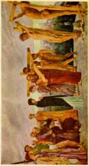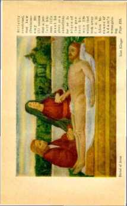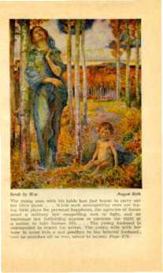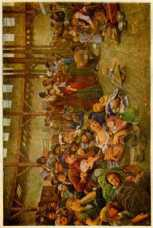the new creation, expressed the heart sentiments of the members thereof; and representing those who determine to walk in the narrow way to the end, and looking forward to the time of the awakening out of death, he said: “I shall be satisfied, when I awake, with thy likeness.”—Ps. 17:15.
Lazarus of Bethany, a brother of Mary and Martha, with whom Jesus had often visited and whom he loved, became sick and died. Jesus knew that Lazarus was dead, but his disciples did not know it. Jesus, speaking of his death, said to them: “Our friend Lazarus sleepeth; but I go, that I may awake him out of sleep.” Not understanding at the time what he meant, his disciples said: “Lord, if he sleep, he shall do well. Howbeit Jesus spake of his death: but they thought that he had spoken of taking of rest in sleep. Then said Jesus unto them plainly, Lazarus is dead.”— John 11:11-14.
Jesus and his disciples then proceeded to Bethany, where Lazarus had died. Arriving there they found his sisters weeping for sorrow. At that time Lazarus had been dead four days and buried in the grave, bound with grave clothes, as was the custom then. Lazarus was a good man; but he was not in heaven, as the preachers would make it appear. Nor was he in a place of torment or in purgatory. He was in the grave, in the condition of death. Jesus went to the tomb, which was closed with a large stone; and, causing the stone to be rolled away, he called to Lazarus and awakened him out of death. “And he that was dead came forth, bound hand and foot with graveclothes: and his face was bound about with a napkin. Jesus saith unto them, Loose him, and let him go.”—John 11: 44.
It was on that occasion that Jesus said to Martha: ‘ ‘ I am the resurrection, and the life: he that believeth in me, though he were dead, yet shall he live: and whosoever liveth and believeth in me shall never die. Believest thou this?” (John 11:25, 26) Jesus was here stating the great truth that into his hands Jehovah God had committed all power to awaken the dead and that in due time God would bring forth the dead by him. The awakening of Lazarus was but a sample of what God through Christ Jesus in due time will do. Concerning this Jesus testified: “Verily, verily, I say unto you, The hour cometh, and now is, when the dead shall hear the voice of the Son of God; and they that hear shall live. Marvel not at this: for the hour cometh, in which all that are in the tombs shall hear his voice, and shall come forth; they that have done good, unto the resurrection of life; and they that have done evil, unto the resurrection of judgment.”—John 5 : 25, 28, 29, R. V.
These scriptures are conclusive in proving that the dead are wholly unconscious, and that in God’s due time through Christ the dead shall be awakened.
Resurrection
Resurrection means a standing up again unto life. The awakening of the dead is but the beginning of the resurrection. Those who will compose the new creation will experience an instantaneous resurrection, changed to life and immortality. The billions of people who arc dead and in their tombs will be awakened out of death for trial and judgment, and therefore the resurrection or bringing up of the people to life in its fulness will be a gradual work.
Without the resurrection of the dead the ransom sacrifice of Jesus would be of no avail. Having in mind that four thousand years prior to his death and resurrection men had been going into the grave, it is manifest that the ransom sacrifice provided by Jesus’ death could be of no benefit to those who were then dead unless they shall be awakened out of death. The awakening of all such out of the sleep of death, and giving them a fair trial for life, is consistent with every other part of the divine plan and is just what should be expected of the great loving Jehovah.
If the clergymen were right in their conclusions that the destiny of each one is fixed at death, that the good go to heaven and that the evil go to purgatory or 1o hell, then why should there be a resurrection at all 1 All the scriptures that speak of the awakening of the dead are meaningless if the dead are already conscious in heaven, purgatory or hell. The Scriptures therefore flatly contradict the theory of the clergy. The strange thing is that the Devil has so long succeeded in blinding the people to the truth and in inducing them to accept the false teachings of the clergy.
There is nothing more wonderfully and beautifully taught in the Bible than the doctrine of the resurrection of the dead. It shows a reason for the death of Christ Jesus, the beloved Son of God, and why God raised him out of death. It is a manifestation of God’s loving-kindness toward the human family. This wonderful and beautiful doctrine of the Bible the Devil, through his agencies, has tried to hide from the people. God knew that he would do that, of course; therefore he caused the testimony to be plainly set forth in his Word so that all who desire to know may know the truth in his due time.
Jesus First
Jehovah chooses his own good way to teach the people. Christ Jesus, his beloved Son, is not only God’s Executive Officer’ but God’s great Teacher of men. When Jesus was on earth he did and said many things which were then ‘ ‘ dark sayings”, but which began to be understood after he had ascended into heaven; and what he said and did was largely for the purpose of teaching those who seek to know and to understand.
The awakening of Lazarus was not the beginning of the resurrection, but was done by Jesus for the purpose of showing how God, in his due time, will awaken all the dead and give them all an opportunity for complete resurrection to life. The Scriptural proof is plain that Jesus Christ was the first one to be raised from the dead. Concerning this it is written: ‘ ‘ For I delivered unto you first of all that which I also received, how that. Christ died for our sins according to the scriptures; and that he was buried, and that he rose again the third day according to the scriptures. But now is Christ risen from the dead, and become the firstfruits of them that slept.”—1 Cor. 15: 3, 4, 20.
Whence was Jesus brought at the time of his resurrection, seeing that he was “the firstfruits oi-them that slept”? The Scriptural answer is that Jesus Christ was for three days in hell! It is written concerning him: “Because thou wilt not leave my soul in hell, neither wilt thou suffer thine Holy One to see corruption. Therefore being a prophet, and knowing that God had sworn with an oath to him, that of the fruit of his loins, according to the flesh, he would raise up Christ to sit on his throne; he, seeing this before, spake of the resurrection of Christ, that his soul was not left in hell, neither his flesh did see corruption. ’' —Acts 2: 27, 30, 31.
How utterly ridiculous God’s Word makes the preachers appear! For many years they have been telling the people that hell is a place of eternal torment. God sent his beloved Son Jesus to hell. He was there for three days, and he was asleep while there; that is to say, he was asleep in death, and then God brought him forth. “Him God raised up the third day, and shewed him openly.” (Acts 10:40; 2 Tim. 2:8) If hell were a place of fire and brimstone, where souls are eternally tormented, then it would be impossible for any one to get out; and the fact that Jesus was brought forth from hell shows that hell means what the Scriptures plainly state, to wit, the condition of death. Surely the people will not longer believe Satan’s falsehoods promulgated by so-called preachers when the Word of the Lord is so plain, reasonable and loving.
In the days of the apostles the enemy Satan was desperately attempting to blind the people to the truth concerning the resurrection. God caused his witness to give testimony then, to show that the plan of God would be a failure if the dead are not awakened to give them an opportunity for life. It is written: “For to this end Christ both died, and rose, and revived, that he might be Lord both of the dead and living.” (Rom. 14:9) The fact that he is Lord over both the living and the dead shows that he has power to take action in behalf of both. His resurrection is a guarantee that all the dead shall be awakened to a resurrection. There shall be a resurrection of the dead, of both the just mid the unjust. (Acts 24:15) To this end God gives assurance to all men of an opportunity for life by reason of the fact that Jesus was raised from the dead. —Acts 17: 31.
Concerning the opportunity for all men the Scriptural argument is emphatic concerning the resurree-1 ion, and is given that the people might have hope both for themselves and for their beloved ones who have died, and might have comfort in the Word of God. Christ Jesus gave himself a ransom for all, to be testified to all in due time. (1 Tim. 2:5, 6) Therefore all, in God’s due time, must be brought forth from the condition of death that they might receive the testimony. The inspired argument in support of the resurrection of the dead is clear, cogent and convincing to every one who desires to know the truth.
We read: “Now if Christ be preached that he rose from the dead, how say some among you that there is no resurrection of dead? But. if there be no resurrection of the dead, then is Christ not risen. And if Christ be not risen, then is our preaching vain, and your faith is also vain. Yea, and we are found false witnesses of God; because we have testified of God that he raised up Christ: whom he raised not up, if so be that the dead rise not. For if the dead rise not, then is not Christ raised: and if Christ be not raised, your faith is vain; ye are yet in your sins. Then they also which are fallen asleep in Christ are perished.”—1 Cor. 15:12-18.
The gist of this argument is that the testimony concerning God’s plan is untrue, that God’s plan is a failure, and that all who have died have gone completely out of existence, unless there is an awakening and a resurrection of the dead. Furthermore, this argument conclusively negatives the preachers’ contention that the dead are conscious anywhere. Note the scripture says that if there is no resurrection then the dead “are perished”. To perish means to cease to exist, and resurrection means to awaken to life. If a creature is perished it could not be awakened to life, nor could the creature be resurrected; but being dead end unconscious, and God having planned that he will bring such to life again, this is exactly what the Scriptures say that he will do; and he will do it through Christ Jesus.
The argument continues: “If in this life only we have hope in Christ, we arc of all men most miserable. But now is Christ risen from the dead, and become the firstfruits of them that slept. For since by man came death, by man came also the resurrection of the dead. For as in Adam all die, even so in Christ shall all be made alive. But every man in his own order: Christ the firstfruits ; afterward they that are Christ’s, at his coming. Then cometh the end, when he shall have delivered up the kingdom to God, even the Father; when he shall have put down all rule and all authority and power. For he must reign, till he hath put all enemies under his feet.” (1 Cor. 15:19-25) The gist of this argument is that Christ Jesus was the first raised out of death, that by his death and resurrection there comes a resurrection to all men, and that this must come in order and in God’s due time.
Asleep in Jesus
If the billions who have died are asleep in death, then where do they sleep? For the comfort of those who remain and mourn the loss of their beloved ones who have died, and that they might have hope, God caused to be written in his Word the answer to that question, as follows, to wit: “But I would not have you to be ignorant, brethren, concerning them which are asleep, that ye sorrow not, even as others which have no hope. For if we believe that Jesus died and rvse again, even so them also which sleep in Jesus will God bring with him. Wherefore comfort one another with these words.”—1 Thess. 4:13, 14, IS.
All "sleep in Jesus”, for the reason that his lifeblood provides the ransom price whereby the whole human race is purchased; and therefore they belong to him, by God’s arrangement. Jehovah has given him power over death and has given him the keys of hell and death. (Rev. 1:18) This symbolical expression shows that the Lord Jesus is clothed with power and authority to awaken the dead out of the death condition and bring them up out of the grave, and ultimately to bring them to life.
God promised Abraham that he would give to him and to his seed all of the land that he saw before him and as far as he could see. (Gen. 13:14, 15; 17:8) Abraham and his offspring died many centuries before Jesus came. The promise of God, however, must be kept. These dead, as all other dead, sleep in Jesus; and, again, are said to be “in the dust of the earth” whence they were taken. And so it is written: “And many of them that sleep in the dust of the earth shall awake. ’ ’—Dan. 12: 2.
A specific prophecy is given to the Jews by Jehovah, which is a full assurance that the dead shall come forth: “Therefore prophesy, and say unto them, Thus saith the Lord God, Behold, 0 my people, I will open your graves, and cause you to come up out of your graves, and bring you into the land of Israel. And ye shall know that I am the Lord, when I have opened your graves, 0 my people, and brought you up out of your graves, and shall put my spirit in you, and ye shall live; and I shall place you in your own land: then shall ye know that I the Lord have spoken it, and performed it, saith the Lord. ’ ’—Ezek. 37 :12-14.
The peoples of Sodom and Gomorrah were destroyed in a great fire. The preachers would make the people think that they are still burning; but the Lord, through his prophet, says that these shall be brought back to “their former estate”, which means that they shall be awakened out of death. They had not had an opportunity for life at the time of their destruction. The opportunity must come to them, because God promised it to all. (Ezek. 16:55) This is exactly in corroboration of the words of Jesus: “Verily, verily, I say unto you, The hour is coming, and now is, when the dead shall hear the voice of the Son of God; and they that hear shall live.”—John 5: 25.
The awakening of the dead and their resurrection to life is one of the grand and progressive steps in the outworking of the divine plan. The indisputable proof from the Word of God shows that the dead are not suffering torture in purgatory or hell or anywhere else; and that the claim of the clergy that they are able, for a money consideration, to help the dead is a fraud on the face of it and is the fruit of the Devil’s great lie. The time is at hand when God’s message of truth shall sweep away their refuge of lies, and open the mind of the people that they may rejoice in his loving provision made that they might live.-Isa. 28:17.
Looking back over the ages we see that the entire pathway of the human race has been marked with sickness, sorrow, suffering and death. Today the people, looking forward in the light of the unfolding of the divine plan, may see that there is one great and righteous way for them, leading them to life, and that this way shall be opened for both those who live and those who are dead. Seeing these truths, they have cause to rejoice. The beginning of that blessed and happy day is marked by the coming of the Lord Jesus in power and great glory; and then the people from the least to the greatest shall have an opportunity to know the way to life and happiness, and to walk in the way thereof.
CHAPTER XII
f’-STHE peoples of earth have passed through great | adversity. Through it all they have suffered, groaned, and prayed for relief. The Devil, with his organization, has made their burdens grievous to be borne. With malicious design he has formed an alliance by uniting the heartless rich, the dishonest politicians, and the faithless clergy, and has used that unholy alliance to defame God’s holy name and to oppress the people. Truly it is written that ‘ ‘ the love of money is the root of all evil”. (1 Tim. 6:10) Satan has played upon this insatiable desire of imperfect men, to further his wicked schemes. With covetous design to have the other man’s land and goods the rich have fomented war between peoples and nations, upon the false pretext that such was necessary to protect their own interests.
The dishonest politicians, desirous of pleasing the rich that they, too, might have some of the ill-gotten gains, have repeatedly raised the cry of patriotism and have called upon the people to rally around the colors of war. The clergy, ambitious for more power and influence resulting from being associated with the rich and influential, have in the name of Cod hypocritically declared war to be a holy thing and urged the people to engage therein. Great sums of money, produced by the laborious efforts of the common people, have been wrung from them in the form of taxation to manufacture guns and poison gas, and to build war-ships and forts, aircraft and other devilish instruments of destruction.
The fomenters of war sec to it that at the psychological time bands march through the streets, dispensing military music to arouse the passions of imperfect men. The political orator harangues the people in the public forum, telling them that it is their patriotic duty to uphold the honor of their country by force of arms; and this is done when there is no danger. The pious hypocrites preach from their pulpits, telling the people what glory shall be theirs if they die upon the field of battle. These wicked instruments of Satan busy themselves amongst the contending nations, both sides claiming to represent the Lord and both representing the Devil. Moved by this wicked influence the nations go to war. After great destruction of human life and property one side is pronounced the victor, but in fact both sides are losers. The supposed victor receives some empty glory. But what is the price of that glory ?
The young man with his bride has just begun to carry out his life’s plans. This happy couple have hopes for a beautiful and happy home, graced by lovable and obedient children. While such unsuspecting ones are laying their plans for personal happiness the agencies of Satan enact a military law compelling men to fight, and an espionage law forbidding any one to question the. right of a nation to take human life. At. the psychological moment these same fomenters of strife cause the cry of war to be sounded. The young husband is commanded to report for action. The young wife with her babe in arms bids a sad goodbye to her beloved husband; and he marches off to war, never to return. The young wife dies of a broken heart, and the babe is cast upon the cold charities of the world.
A fond mother has carefully taught and guided her beloved son, and watched him grow from babyhood to man’s estate. He is kind, considerate, honest and true, and desires to do good to his fellow man. The selfish and cruel law bids him or commands him to go to war, and he must respond. Torn from his mother’s side, both son and mother suffer great sorrow and distress. Soon the son is wallowing in the muck of the field of death, stained with the blood of his fellow men. The prayers of his fond mother daily ascend that her beloved son may be spared and restored to her. In such prayers the son also joins. He is forced on into action, and his young life is poured out as a sacrifice to satisfy the greed of wicked men; and the boy is buried as the beast of the field.
Strong, vigorous, stalwart, sober and industrious men, the very highest type of manhood and the real supporters of the nation, are drafted and march to the war to make fuel for the cannon’s fire and to satisfy the schemes of those who wait behind to reap the pecuniary benefits of slaughter. The storm of shot and shell sweeps the field of carnage. The account is taken, and upon the field of battle lie the broken forms of what once were vigorous men. Again the earth has been baptized with the blood of innocents, shed in violation of God’s everlasting covenant with man. (Gen. 9: 3-12) Following quickly in the wake of war come famine, disease, pestilence, suffering and distress such as no human words can describe. Asylums and hospitals are filled with those whose minds and bodies have been wrecked, while millions of others suffer unattended. A multitude of widows and orphans becomes an added burden, to be cared for by the honest taxpayers of the land.
Throughout all this wicked scheme to produce war, and to carry it on, the clergy have played their part; and at the same time they have posed as the representatives of the Lord and as preachers of the gospel of peace. Therefore not only have the clergy been guilty of leading the people into war and suffering, but by their hypocrisy they have served as the Devil’s instruments to turn the minds of the people away from Jehovah God, who is their only true Friend and Comforter.
At various periods of time such wars have been fomented. The common people have suffered, and the few selfish ones have reaped a temporary benefit therefrom. Amidst it all the whole creation has groaned and continues to suffer. Without just cause or excuse the men have been forced to fight and die, and the women and children have been left in sorrow and distress. The earth has been drenched time and again with blood unjustly shed; and the blood of these innocents cries out against the wearers of skirts and other sanctimonious garb; and to them Jehovah says: “In thy skirts is found the blood of the souls of the poor innocents: I have not found it by secret search, but upon all these.”—Jer. 2: 34.
The course of man has been a long period of darkness, sorrow and suffering. Turned away from their true Friend and Benefactor by Satan and his agencies, the peoples have been without God and without hope in the world. (Eph. 2:12) And still the whole creation groans. Shall this condition of wickedness and suffering continue for ever 1 No; because a better and happier time is at hand. To those who desire a better day of peace and righteousness Jehovah says: “Be strong, fear not: behold, your God will come with vengeance, even God with a recompence; he will come and save you.” (Isa. 35:4) But how will God come to the relief and rescue of the people? He will come, and docs come, by and through his beloved Son, his Executive Officer, the Prince of Peace, who brings salvation to the people and who will establish peace on earth and good will toward men. But can we be sure of his coming?
Coming a Certainty
When Jesus was raised from the dead he ascended into heaven. (1 Cor. 15:4; Eph. 4:8, 10) That lie comes again in power and great glory is certain, because such is the promise of God as stated in his Word. (Dan. 12:1; Acts 3 : 20, 21; Titus 2:13) Jesus died to provide the ransom price. He was raised from the dead and ascended into heaven in order to present that ransom price as a sin-offering for man. He must come again in Cod's due time, to carry out the divine program. These things Jesus had learned from his Father.
Jesus could not tell the details to his disciples when he was with them, because it was not God’s due time and because they could not then understand and appreciate the same. Just before his crucifixion, however, he did say to them : “In my Father’s house are many mansions: if it were not so, I would have told you. I go to prepare a place for you. And if I go and prepare a place for you, I will come again, and receive you unto myself ■ that where I am, there ye may bo also. ’ ’—John 11: 2, 3.
After his resurrection, and before he ascended to his Father, Jesus said: “I am not yet ascended to my Father.’’ (John 20: 17) Forty days thereafter he did ascend into heaven. Appearing in a body suitable for the occasion he assembled his disciples on the Mount of Olives. He gave them instructions. “And when he had spoken these things, while they beheld, he was taken up ; and a cloud received him out of their sight. And while they looked stedfastly toward heaven, as he went up, behold, two men stood by them in white apparel ; which also said, Ye men of Galilee, why stand ye gazing up into heaven ? This same Jesus, which is taken up from you into heaven, shall so come in like manner as ye have seen him go into heaven.”—Acts 1:9-11.
After his disciples were begotten and anointed by the spirit of God and made witnesses for the Lord, they frequently testified concerning the return of the Lord Jesus Christ. The Apostle Paul said that in due time the Lord Jesus would descend from heaven. (1 Thess. 3:13; 4:16; 5:23) When instructing Timothy, Paul said to him: ‘"That thou keep this commandment without spot, unrebukeable, until the appearing of our Lord Jesus Christ.” (1 Tim. 6:14) That the coming of the Lord was some time future from the Apostle Paul’s death is clearly shown by his testimony to this effect: ‘‘For I am now ready to be offered, and the time of my departure is at hand. Henceforth there is laid up for me a crown of righteousness, which the Lord, the righteous judge, shall give me at that day: and not to me only, but unto all them also that love his appearing. ’ ’—2 Tim. 4: 6, <8.
That the followers of Jesus might be encouraged, James, as a witness of the Lord, wrote: “Be patient therefore, brethren, unto the coming of the Lord. Behold, the husbandman waiteth for the precious fruit of the earth, and hath long patience for it, until he receive the early and latter rain. Be ye also patient; ste.blish your hearts: for the coming of the Lord draweth nigh.” (Jas. 5:7, 8) The Apostle Peter testified to his coming. (2 Pct. 1:16) The Christian mint now see and appreciate that nearly all the parables of Jesus related to his second coming.
It is evident that Jesus desired to impress his followers with the great importance of the event of his coming again. The only means of carrying out the divine program and fulfilling the promises of God is by and through the second coming of the Messiah. The word Messiah means the Anointed One of God. For more than 4000 years Jews have hoped and prayed for the coming of the Messiah. Time and again the prophets foretold of his coming. The promise made at the death of Jacob, that Shiloh should come and that unto him should the gathering of the people be, must be fulfilled. (Gen. 49:10) Since this was not fulfilled at the first coming of the Lord, it is manifest that he must come again in power and great glory.
How He Comes
Jesus died as a man and was raised from the dead as a divine being, possessing immortality, and is alive fox’ evermore. (1 Pet. 3:18; John 5:26; Rev. 1:18) “Now the Lord is that Spirit.” (2 Cor. 3:17) As a man he must remain dead, because it is the man Jesus whose life is given for the world. (John 6: 50, 51) Human eyes can not see a spirit. (1 Tim. 6:15, 16) Concerning this Jesus said: “That which is born of the flesh is flesh; and that which is born of the spirit is spirit. Marvel not that I said unto thee, Ye must be born again. The wind bloweth where it listeth, and thou hearest the sound thereof, but canst not tell whence it comcth, and whither it goeth: so is every one that is born of the spirit.” (John 3:6-8) No man can see the wind, yet he observes that it is powerful and that it is present with him.
A spirit being may be present with a human being and unobserved. Before Jesus’ death he said to his disciples: “Yet a little while, and the world secth me no more; but ye see me,: because I live, ye slmll live also.” (John 14:19) This is proof conclusive that only those who are changed from human to spirit beings in the resurrection will ever see the Lord Jesus in his glorious body. This docs not mean, however, that the world will not discern his presence and observe the operation of his just and righteous power.
No man has ever seen the Devil, but every man has had some experience with the Devil and felt the influence of his unrighteous power. No man has seen God; yet God is the great Giver of every thing that is good, and exercises his power in behalf of his creatures. In God’s due time every eye will discern the presence of Christ Jesus, but only those who partake of the spirit resurrection will “see him as he is”. (1 John 3:2) All members of the new creation will be with the Lord ultimately; therefore they will “see him as he is”, because they will have the same nature that he has. (2 Pet. 1:4) To his disciples who form a part of the new creation he said: “I will come again, and receive you unto myself; that where I am, there ye may be also.”—John 14: 3.
It is manifest from these scriptures, and in the light of reason, that the second coming of the Lord does not mean that he appears as a man and walks about amidst the people as he did when he was on earth as a man. His second coming or presence has to do with the affairs of men, which he takes charge of and will control for the good of mankind. As Satan the Devil has been the invisible overlord of the world for many centuries (2 Cor. 4:3, 4), even so Christ shall be the invisible Overlord of the world after ousting Satan; and although invisible to human eyes he shall control the affairs of the new world, which will be the organization of mankind into a righteous government.
When Jesus ascended on high, and his disciples stood gazing upward as he disappeared, the angel of the Lord standing by said to them: ‘ ‘ This same Jesus, which is taken up from you into heaven, shall so come in like manner as ye have seen him go into heaven.” (Acts 1:11) The emphasis here must be put upon the words “in like manner”. It w’as only a small number of people who saw the Lord ascend. It is only a small number who will discern his presence for some time after his return. He went away quietly and unobserved but by a few, and the testimony of these witnesses was preserved to prove that he did ascend on high. His return is also quiet and unobserved by human eyes. —1 Cor. 15: 6.
The book of Revelation is a testimony of Jesus Christ, showing unto his servant what should come to pass, and is written in sign or symbolic language. It is therein stated that he signified it to John. (Rev. 1:1) In this testimony Jesus said: “Behold, I come as a thief. Blessed is he that watcheth, and keepeth his garments, lest he walk naked, and they see his shame.’’ (Rev. 16:15) It is manifest here that the word “thief” is used symbolically to represent the manner of the Lord’s coming. A thief appears, not with the sound of trumpets, but quietly, when others are asleep.
This text indicates that the beginning of the Lord’s second presence will be while the whole world is asleep, figuratively speaking; that is to say, ignorant of what is transpiring. Those who are awake would know of the thief’s approach, and even so those who are spiritually awake, watching for the coming of the Lord, would begin to discern his presence. For this reason Jesus said: “Watch therefore; for ye know not what hour your Lord doth come. But know this, that if the goodman of the house had known in what watch the thief would come, he would have watched, and would not have suffered his house to be broken up. ’ ’—Matt. 24: 42, 43.
The apostles had this same understanding. Paul, who often wrote and spoke of the Lord’s coming as “the day of the Lord”, said: “For yourselves know perfectly that the day of the Lord so cometh as a thief in the night. For when they shall say, Peace and safety; then sudden destruction cometh upon them, as travail upon a woman with child; and they shall not escape. But ye, brethren, are not in darkness, that that day should overtake you as a thief. Ye are all the children of light, and the children of the day: we are not of the night, nor of darkness. Therefore let us not sleep, as do others ; but let us watch and be sober. ’ ’ (1 Thess. 5: 2-6) The Apostle Peter, referring to the same thing in almost the identical language, says: “But the day of the Lord will come as a thief in the night; in the which the heavens shall pass away with a great noise, and the elements shall melt with fervent heat; the earth also, and the works that are therein, shall be burned up.”—2 Pet. 3:10.
Concerning his coming Jesus warned his followers that false teachers would arise and attempt to show that Christ is in the desert or in the secret chambers, but that they should give no heed to such advice. “For as the lightning cometh out of the east, and shineth even unto the west; so shall also the coming of the Son of man be. ’ ’—Matt. 24: 27.
His words can not mean that zigzag lightning comes always out of the east and shines unto the west and that this represents his coming. What his words really mean is that the lightnings come or appear in one part of the heavens and are seen by persons at different points and that therefore the lightning is not confined to a local place. It is seen by those who are watching. The statement recorded by Luke concerning the same thing supports this view: “For as the lightning, that lighteneth out of the one part under heaven, shineth unto the other part under heaven; so shall also the Son of man be in his day.”—Luke 17: 24' .
Lightning originates with Jehovah. (Jer. 10:13) Just so all light upon the divine plan originates witii Jehovah. When he reveals his light to his anointed church he does so through the Head of his organization, Christ Jesus. No human being is able to make lightning. Likewise no human being is able to point to the fact that Christ is at some local spot. His presence is revealed to those of the anointed class who are
looking for the manifestation of his presence. Coming, in this text mentioned by the Lord, specifically refers to his coming to the temple of God, which is composed of God’s anointed and faithful ones. He comes for the purpose of judgment, first upon the house of the Lord and then to judge and dispose of the professed house of God, which is in fact a part of the Devil’s organization. The coming of the Lord to his temple is to be followed by a time of great distress upon earth, culminating in Armageddon, which will destroy Satan’s organization.
Time
When Jesus ascended into heaven God exalted him unto the highest position of authority. (Rev. 3:21) It was then that God said to his beloved Son: “Sit thou at my right hand, until I make thine enemies thy footstool.” (Ps. 110:1) That command did not mean that Jesus Christ must do nothing at all, but it must be understood as meaning that he was to remain inactive so far as taking charge of the world was concerned until God’s due time should arrive. Before that time members of his body must be selected and taught, and this he has been doing throughout the Christian era.
With Jesus Christ distance or space is of no moment ; therefore he could and did occupy his high position in heaven, and at the same time he was with his followers throughout the entire age. (Matt. 28:20) The time must come when he would be sent forth to oust the enemy and to rule. (Ps. 110:2) Prior to that specific time Christ Jesus must prepare his church, and also the environments for his great act of ousting the enemy and establishing his own government. It must be during that specific period that he prepares to gather together those who make a covenant with the Lord by sacrifice. That period of time is described in the Scriptures as "the day of his ■preparation”, during which time Christ, as the Messenger of God, prepares the way.—Mal. 3:1.
During that period of time Christ Jesus must be present. That presence does not mean that he must leave heaven to be on the earth; but what it manifestly means is that his special attention is given to the gathering together of his true followers and separating them from the nominal followers, and making ready conditions to take charge of the world’s affairs. The Scriptural proof is that the period of his presence and the day of God’s preparation is a period from 1874 A. D. forward. The second coming of the Lord, therefore, began in 1874; and that date and the years 1914 to 1918 are specially marked dates with reference to his coming.
The "world” includes both visible and invisible governments; hence it means heaven and earth. For centuries Satan has been the invisible ruler of governmental organizations on earth; and, being invisible to man, he has also ruled man’s heaven. The time must come when Satan’s world must end, and when he is ousted from heaven; and the Scriptural proof is that the beginning of such ousting took place in 1914.
The temple of the Lord means his approved followers, those constituting "the body of Christ”. The time must arrive when Christ Jesus comes to his temple to take an account with his followers. The Scriptural proof supports the conclusion that the coming to his temple was in the year 1918. Later there must follow the complete overthrow of Satan’s organization, both visible and invisible, and the establishment of an invisible and visible government of righteousness.
Jehovah caused his prophets to write concerning the coming of Christ, and their writings were couched in "dark sayings” or prophetic phrase. Prophecy can not be understood until it has been fulfilled or is in the course of fulfilment. From 1874 to 1914 the prophecy concerning the Lord’s coming was being fulfilled and could be understood, and was understood, by those who were faithful to the Lord and who were watching the development of events, but not by others. With the coming of 1914 the outward events or physical facts made known in fulfilment of prophecy were so clear and plain that all who studied the Word of God with a desire to understand could understand, whether they were consecrated to the Lord or not.
The great time of trouble, known as Armageddon, will so clearly reveal the plan of God concerning the establishment of a new government that all men can then see it. To this end it is written.- “Behold, he cometh with clouds; and every eye shall see him, and they also which pierced him: and all kindreds of the earth shall wail because of him.” (Rev. 1:7) Clouds symbolically represent his presence in time of trouble. In that time of trouble all the peoples of earth will understand or discern the presence of Christ.
For the purpose of enabling the student to more fully and easily understand the proof of the Lord’s second coming, the time of his coming is here divided into separate periods, to wit: (1) The day of preparation, (2) the end of the world, (3) coming to his temple, and (4) Armageddon. These periods of time collectively are embraced within what is designated in the Scriptures as “the time of the end”, which is here first considered.
Time of the End
Jesus said to his disciples concerning his second coming: “Of that day knoweth no man.” That was true, because he said so. It is equally true that the faithful followers of the Lord would in due time understand the times and seasons concerning his second coming. This does not mean the exact day nor tire exact hour; but the events transpiring during specific times and seasons would enable them to see, as it is written: ‘ ‘ But of the times and the seasons, brethren, ye have no need that I write unto you. For yourselves know perfectly that the day of the Lord so eometh as a thief in the night. For when they shall say, Peace and safety; then sudden destruction cometh upon them, as travail upon a woman with child; and they shall not escape. But ye, brethren, are not in darkness, that that day should overtake you as a thief. Ye are all the children of light, and the children of the day: we are not of the night, nor of darkness. Therefore let us not sleep, as do others; but let us watch and be sober. For they that sleep, sleep in the night; and they that be drunken are drunken in the night.”—1 Thess. 5:1-7.
It is equally certain that the clergy would not understand these times and seasons, because they form a part of Satan’s organization, to wit, the ecclesiastical part. They love the plaudits and approval of men and give themselves titles, such as D. D. God foreknew and foretold through his prophet that they would thus do, and that they -would be so concerned with these worldly things that they could not understand. (Isa. 5G: 10, 11) All along they have claimed that no one could understand about the presence of the Lord, because they claim that the Book is sealed. God foretold this very condition concerning them.—Isa. 29:10-14.
To understand the events concerning the Lord’s second presence from 1874 to 1914 requires one to be spiritually minded; and the clergy are not spiritually minded.—1 Cor. 2:10-14.
The phrase “time of the end” of course does not mean ‘‘end of time”, because time never ends. What then does it mean? For many long centuries Satan has been the god of this world. (2 Cor. 4:3, 4) He has been the invisible ruler of man. That time must come to an end, to be followed by the righteous reign of Christ. The last years of the time of Satan’s rule therefore are called “the time of the end”. It is that period of time in which God is shaping the affairs for the overthrow of unrighteousness and the establishment of righteousness by and through his beloved Son. The governments of earth, aside from God’s organization of Israel, have always composed Satan’s visible organization. It matters not that the people did not so understand.
Jehovah caused the Prophet Daniel to write the salient features of events that would come to pass during the rule of the world powers that would exist from the time of the empire of Persia until “the time of the end”. That which Daniel wrote was prophecy; that is to say, guided by the divine power, he recorded long in advance the happening of certain events, which of themselves show that this prophecy could not be understood until the events had transpired. Daniel wrote concerning these events, but did not understand them. They are set forth in his prophetic utterances recorded in the book of Daniel, chapters seven to twelve, inclusive.
Daniel himself said: “I heard, but I understood not; then said I, 0 my Lord, what shall be the end of these things ? And he said, Go thy way, Daniel; for the words are closed up and sealed till the time of the end. Many shall be purified, and made white, and tried; but the wicked shall do wickedly: and none of the wicked shall understand; but the wise shall understand.” (Dan. 12:8-10) The “wicked” are those who claim to represent the Lord, but who are a part of the Devil’s organization. They can not understand. The wise are those who humbly exercise faith in the promises of God and apply their knowledge in harmony with his will. The Lord had caused Daniel to record specifically what would happen when the time of the end should begin. The ‘1 time of the end ’ ’ means a specific period at the end of the Gentile dominion.
“And at the time of the end shall the king of the south push at him: and the king of the north shall come against him like a whirlwind, with chariots, and with horsemen, and with many ships; and he shall enter into the countries, and shall overflow and pass over. He shall enter also into the glorious land, and many countries shall be overthrown.’’ (Dan. 11:40, 41) The fulfilment of this prophecy fixes the beginning of the “time of the end” ; for the prophecy definitely so states. The campaign of the great warrior Napoleon Bonaparte is clearly a fulfilment of this prophecy, as reference to the historical facts concerning his campaign plainly shows. The “king of the south” mentioned in the prophecy refers to Egypt; the “king of the north” means Great Britain, which was then an integral part of the Roman empire.
Napoleon was in Egypt, fighting the Egyptian armies, which were led by Murat Bey, and which he defeated. His victory struck terror not only to the Egyptians, but far into Africa and Asia; and all the surrounding tribes submitted to the conqueror. While he was doing this, the British in the north, under the leadership of Lord Nelson, were making an effective attack upon Napoleon’s forces at sea. Napoleon began this Egyptian campaign in 1798, finished it, and then returned to France on October 1, 1799. The campaign is briefly, yet graphically, described in the prophecy, verses 40-44; and its being completed in 1799 marks, according to the prophet’s own words, the beginning of “the time of the end”.
From the time of the overthrow of Zedekiah (606 B. C.) and the establishment of the Gentile universal empire under Nebuchadnezzar, the organizations of tho world powers or governments have been desig-
nated in the Scriptures under the symbol of “beasts”. The Prophet Daniel (7: 7, 8; describes a “fourth beast, dreadful and terrible". This terrible beast was a form of government composed of three elements or component parts; namely, professional politicians, great financiers, and ecclesiastical leaders. This Satanic organization became dreadful and terrible from the time that these three forces were united. Of this unholy “trinity” we see the Papacy, the ecclesiastical element, in the saddle, riding and directing everything. The date of its beginning was at the overthrow of the Ostrosothic monarchy, which occurred in 539 A. D. " ‘
The Prophet Daniel was given a vision of the events following. Yet he did not understand them; and he says: “I Daniel looked, and, behold, there stood other two, the one on this side of the bank of the river, and the other on that side of the bank of the river. And one said to the man clothed in linen, which was upon the waters of the river, How long shall it be to the end of these wonders? And I heard the man clothed in linen, which was upon the waters of the river, when he held up his right hand and his left hand unto heaven, and sware by him that livetli for ever, that it shall be for a time, times and an half.”—Dan. 12:5-7.
In Biblical symbology a “time” means a year of twelve months of thirty days each, or 360 days. Each day is considered for a year, as the prophet says: “I have appointed thee each day for a year.” (Ezek. 4: 6) Here are mentioned, then, three and a half times of 360 prophetic days each, or a total of 1260 prophetic days, which would mark the beginning of the time of the end of this beastly order. Twelve hundred and sixty years from 539 A. D. brings us to 1799, which is another proof that 1799 definitely marks the beginning of “the time of the end”. This also shows that it is from the date 539 A. D. that the other prophetic days of Daniel must be counted.
The understanding of the prophecies with reference to ‘‘the time of the end” and the Lord’s presence was purposely concealed by Jehovah until the due time. Daniel desired to know what would be the end of these things, but God said to him: ‘‘But thou, 0 Daniel, shut up the words, and seal the book, even to the time of the end.” (Dan. 12:4) It is reasonable to expect that Jehovah would indicate something by which ‘ ‘ the time of the end ’ ’ could be discerned when it arrived. He did not say to Daniel to look for some words emblazoned across the sky telling that the end had come, but told him to look for such evidences as could be seen and understood by men who were familiar with the prophecies, and who in the light of the prophecies should be watching for their fulfilment. God did not expect Daniel to see and understand these prophecies in his day, for he said: “Go thy way, Daniel; for the words are closed up and sealed till the time of the end.”—Dan, 12: 9.
When that time should arrive, what was to be expected? Jehovah answers: “Many shall run to and fro, and knowledge shall be increased.” (Dan. 12: 4) From shortly after 1799, the date of the beginning of “the time of the end”, we should expect to find an increase of knowledge, particularly with reference to the Bible. Prior to that time the people had been kept in ignorance of the Bible. It was the practice of the Papacy to forbid any one aside from the clergy class to have access to the Bible; in fact, to have in possession a copy of the Bible was made a crime under the Roman law, subjecting the offender to heavy penalties.
In 1799 the beastly power of Rome, predominated by the Papal system, received a deadly wound. The people had been taught to believe in the divine right of kings to rule and the divine right of the clergy to dominate the conscience of the people. When Napoleon took the pope a prisoner and carried him away to France, and when later he refused to permit the pope to crown him as king but put the crown on himself and treated the Papal-claimed authority with contempt, this began to open the eyes of the peoples of earth, kings as well as vassals, to the fact that Papacy did not possess the divine right which it claimed.
A short time thereafter the tirst Bible societies that ever existed were organized. The British and Foreign Bible Society was established in 1803; the New York Bible Society in 180-1; the Berlin-Prussian Bible Sc-ciety in 1805 ; the Philadelphia Bible Society in 1808 ; and the the American Bible Society in 1817. The Bible was translated and published in many different languages, and sold at such low prices that the poor could have access to it; and within a short time millions of Bibles were in the hands of the people. The Papal system denounced these Bible societies as “pestiferous Bible societies”. The time had come, however, for an increase of knowledge; and the Lord was fulfilling his promise by putting the Bible within the reach of those who were hungry for truth. The people began to learn that God is no respecter of persons ; that kings and popes, priests and the common people, alike must all render their account to the Lord and not to man.
From that time forward there has been a great corresponding increase of knowledge in all lines of learning. The common school, always opposed by the Papacy, has afforded a means of general education and increase of knowledge for people in all walks of life. Colleges and universities have sprung up throughout the earth. With the increase of knowledge on various lines have come the numerous inventions that man now has, time-saving and labor-saving machines, etc.
Before 1799 the means of transportation were such that a man could travel only a short distance in a day. He must go either in a vehicle drawn by horses or oxen, or afoot; and when he would cross the sea he must go in a sailboat that made slow progress. In 1803 the steamboat was invented, and in 1831 the first locomotive steam-engine was built. Such wonderful progress has been made in this regard that now one can travel through almost any part of the earth at a rapid rate, upon land or sea. Later came the electric engines and electric motor cars and gas engines; and now there is a tremendous amount of travel in every part of the earth. It is no uncommon thing for one to travel at the rate of seventy-five to one hundred miles an hour; and particularly is this true by means of the flying machine, which is a modern invention.
The common people have always been downtrodden, and kept in subjection to the financial, ecclesiastical and political princes. It was in the year 1874, the date of our Lord’s second presence, that the first labor organization in the world was created. From that time forward there has been a marvelous increase of light; and the inventions and discoveries have been too numerous to mention here. But mention is made of some of those things that have come to light since 1874, as a further evidence of the Lord’s presence since that date, as follows: Adding machines, aeroplanes, aluminum, antiseptic surgery, artificial dyes, automatic couplers, automobiles, barbed wire, bicycles, carborundum, cash registers, celluloid, cream separators, disc plows, electric railways, electric welding, elevators, escalators, tireless cookers, gas engines, harvesting machines, illuminating gas, induction motors, linotypes, monotypes, motion pictures, pasteurization, radium, railway signals, Roentgen rays, skyscrapers, smokeless powder, submarines, subways, talking machines, telephones, television, type-writers, vacuum cleaners, wireless telegraphy and wireless telephony.
The most important thing to which all the prophecies point, and for which the apostles looked forward, has been the second coming of the Lord. It is described by the prophet as a blessed time. Daniel then says: “Blessed is he that waiteth, and cometh to the thousand three hundred and five and thirty [1335] days.’’ (Dan. 12: 12) The watchers here are, without question, those who were instructed by the Lord to watch for his return. This date, therefore, when understood, would certainly fix the time when the Lord is due at his second appearing. Applying the same rule then, of a day for a year, 1335 days after 539 A. D. brings us to 1874 A. D., at which time, according to Biblical chronology, the Lord’s second presence was due. If this calculation is correct, from that time forward we ought to be able to find evidence marking the Lord’s second presence.
There are two important dates here that we must not confuse, but clearly differentiate; namely, the beginning of “the time of the end” and the beginning of the presence of the Lord. “The time of the end” embraces a period from 1799 A. D. to the time of the complete overthrow of Satan’s empire and the establishment of the kingdom of Messiah. The time of the Lord’s second presence dates from 1874 and is during the latter part of the period known as “the time of the end”.
Preparation
The Scriptures designate a specific period of time as “the day of his preparation”. Within that period of time God draws his people together and gives them a knowledge of his plan and purposes, then in due time Christ Jesus suddenly comes to his temple, gathers together those who are in the covenant by sacrifice, and brings them into the temple condition. It is a time of severe testing; and the faithful ones who stand the test, who are approved, are given the garments of salvation and are brought under the robe of righteousness. (Mal. 3:1-3; Isa. 61:10) During that period of time Christ is present and a crucial point is reached in his presence at the time he comes to his temple. The Scriptures also show that within the “day of preparation” God prepares his people and his hosts, as well as conditions, for the great battle of Armageddon in which Satan’s organization will be completely destroyed. Christ, acting as Jehovah’s great executive officer, is present doing the preparatory work and executes God’s vengeance upon Satan and his organization.—Nah. 2:3-6; Ps. 110: 2-6.
Harvest
A harvest is a time of gathering that which has been growing or developing. The Lord used the natural ii ar vest to illustrate a harvest work which he would do in the end of the age. During that period of harvest, according to the Master’s words, he would be present directing the same.—Matt. 13: 24-30, 37-40.
During the period of time since 1874 there has been a great gathering together of Christian people from different quarters of the earth, without regard to creed or denomination. These have come from both Catholic and Protestant churches, and from outside of all churches. They have not sought members, but they have been drawn together for the study of God’s Word, and they love the Lord and love his cause above everything else. This seems to be a fulfilment of the prophetic words written concerning the day of preparation for gathering together the saints that have made a covenant with Jehovah by sacrifice. During this period of time these Christians have gone throughout the earth proclaiming the message that the kingdom of heaven is at hand; and now they are particularly announcing to the people the presence of the Lord, and that his kingdom is at hand, and that millions now living will never die.
The Master gave a parable illustrating how those who are Christians merely in name and those who are true Christians would develop side by side throughout the Christian era. lie said: “Let both grow together until the harvest: and in the time of harvest I will say to the reapers, Gather ye together first the tares, and bind them in bundles to burn them: but gather the wheat into my barn.” (Matt. 13:30) During the past fifty years in particular there has been a tendency on the part of denominational systems to get together and bind themselves in federations and other compacts. This tendency has at last reached a. climax, until the “Federation of Churches” is now a common expression, meaning the uniting into one body of the various denominational systems which teach anything and everything except the Word of the Lord.
In these various denominational systems are professional politicians and conscienceless profiteers, who are designated in the Scriptures as “the principal of the flock”, and who indeed are the principal ones in the congregation, because their influence directs the clergyman or pastor in the course which ho takes. They do not profess full consecration to the Lord ; but they look upon the denominational church, as it is, as an organization for social enjoyment and political purposes.
While this “binding” work has been going on amongst the “tares”, the Lord has been gathering together the truly consecrated Christians without regard to creed or denomination; and he has designated them as “wheat”. This great work of gathering together Christian people can be designated in no other way than as a harvest, and fully means that which ■was foretold by the Lord Jesus. It has never been the purpose of these Christians to assemble themselves as Bible Students in order to induce any one to join them; in fact, they have no membership roll. Their purpose is to enlighten men and women concerning the divine plan, and by this means to enable them to see that God has something better for mankind than the creeds of Christendom have taught. This circumstantial evidence fulfilling prophecy is what constitutes the physical facts, and is proof corroborative of the Lord’s presence since 1874; for this gathering work has been in progress particularly since that date.
Scoffers
These saintly Christians, coming together from all denominations, have rejoiced in making proclamation Io the people that the kingdom of heaven is at hand. Many of the people have gladly heard, while others have been in doubt. The clergy have been the responsible ones for causing doubt in the minds of men. It would have been expected ordinarily that clergymen, who claim to be Christians, would rejoice in any evidence of the Lord’s return and the setting up of his kingdom. Instead of rejoicing they have scoffed at those who have taught the second presence of the Lord, and have resorted to all manner of slander and persecution of the meek and humble people, who have been telling the message of the kingdom. With selfassumed wisdom they look with scorn upon any one who talks about the Lord’s second presence.
Of course our Lord knew that this would be so; and he caused the apostle to write prophetically the following words: “There shall come in the last days scoffers, walking after their own lusts [desires], and saying, Where is the promise of his coming [presence] ? for since the fathers fell asleep, all things continue as they were from the beginning of the crca-tion.” (2 Pet. 3:3,4) This of itself is proof of the Lord’s presence. The apostle, after having uttered the words above, then adds: ‘ ‘ For this they [the scoffers] willingly are ignorant of,” that is, of the Lord’s presence and the end of the world. This is corroborated, furthermore, by the words of the Master, who said: “But as the days of Noe were, so shall also the coming [presence] of the Son of man be.”—Matt. 24:37-39.
We are witnessing a fulfilment of these prophetic statements daily. The clergy and the principal of their flock are oblivious to the cumulative evidence concerning the Lord’s second presence; and, as it was in Noah’s day, they go recklessly on, giving no heed to the fact that the kingdom of heaven is at hand and that the great King has begun his reign.
End of the World
When God placed man in Eden he made Lucifer man’s overlord. When Lucifer became a traitor, and therefore Satan, God did not take away from him that position of man’s overlord. Lucifer has therefore always been the invisible overlord of mankind, including all the nations except, however, the nation of Israel so long as that nation endeavored to keep its covenant with Jehovah. When Israel was cast off because of disobedience to the Law Covenant, Satan became the god of the whole world. (2 Cor. 4:4) “’World” means an organization, visible and invisible, which has control over the affairs of man. It is an organization of men into forms of government under the supervision of the invisible overlord; and therefore it includes both heaven, the invisible, and earth, the visible part of that organization.
After God had cast off Israel he permitted the Gentile nations to have uninterrupted sway thereafter, for a specific period of time. In overturning the right and privilege of Israel as a nation God said: “And thou, profane wicked prince of Israel, whose day is come, when iniquity shall have an end, thus saith the Lord God, Remove the diadem, and take off the crown; this shall not be the same: exalt him that is low, and abase him that is high. I will overturn, overturn, overturn it; and it shall be no more, until he come whose right it is; and I will give it him.” (Ezek. 21:25-27) This is proof that a definite time was set apart for the Gentile dominion; and that such time would end with the coming of Christ, “whose right it is” to rule and upon whose shoulder must rest the righteous government. This divine decree overthrowing Israel is in fulfilment of the “seven times” of punishment about which God had forewarned them.—Lev. 26 :18.
A “time”, as used in the Scriptures, is a year of 360 days. Seven times therefore would mean a period of 2520 days. “Time” in the Scriptures is used both literally and symbolically. The facts show that it was here meant to be understood symbolically, because the Gentiles ruled long after the end of 2520 literal days. The divine rule announced in the Scriptures in determining a symbolical time is “each day for a year”. (Num. 14: 34) Therefore the “times of the Gentiles” certainly are the period of 2520 years from the overthrow of Zedekiah, Israel’s last king. Zedekiah was overthrown in 606 B. C. Hence the period of the Gentile times must end in 1914 A. D. That marks the due time for the coming of him “whose right it is” to take over the affairs of the world. That of course would mean the presence of the Lord, taking action in things pertaining to the world.
Jesus had stated that his “kingdom is not of this world” of which Satan has long been the god. (John 18:36) He taught his disciples that the end would come to the world, at which time he would be present. The disciples were familiar with the prophecies foretelling the coming of Christ. With these things in mind they sought further information from Jesus. “Tell us, when shall these things be? and what shall be the sign of thy coming, and of the end of the world?” (Matt. 24: 3) The word “sign” used in this text has the meaning of indication, or the pointing out of proof. Otherwise stated, the disciples’ question was: ‘What may we expect to see, indicating your presence and the end of the world?’
Note the two things mentioned in this question: (1) “The sign of thy coming”; and (2) “the end of the world”. This would indicate that at the end of the world there would be some specific manifestation of the presence of Christ, because that would mark the time of his right to take possession of the world. The facts hereinbefore considered show that the Lord was present from 1874 forward, in this, that he was doing a special work concerning his church, to wit: restoring to them the great fundamental truths that had been covered and hid by the ecclesiastical part of the Devil’s organization, and preparing to gather together the saints.—Matt. 17:11; Luke 11: 52.
The facts show that 1914 marked the legal end of the Gentile times and therefore the end of the world, at which time something different from preparatory work is to be expected. It was concerning the latter point that the disciples made inquiry; and the answer of Jesus was given in prophetic phrase; and that proof could not be so clearly understood until 1914 and thereafter. He told his disciples that there would be many wars before the end came, but that they should not be disturbed about that. Then he added: “For nation shall rise against nation, and kingdom against kingdom: and there shall be famines, and pestilences, and earthquakes, in divers places. All these arc the beginning of sorrows. ’ ’—Matt. 21: 7, 8.
In all the history of man the World War, which began August 1, 1914, was the only war of ‘nation against nation and kingdom against kingdom’. Every branch of the nations involved was required and compelled to have a part in that war. Women and men, money and preachers, all had their part. Even the babies must have their food supply curtailed in order that the soldiers at the front might have plenty and the profiteers get their graft. Quickly following on the heels of the World War came the great famine and the pestilence in many parts of Europe and Asia, which destroyed millions more than died in the World War. These combined calamities Jesus declared would mark “the beginning of sorrows’’.
These physical facts began exactly on time, in 1914, proving both the presence of the Lord and the end of the world. These facts have been seen by all the people, and are understood by those who have considered the Scriptures in connection therewith. Prior to 1914 Jesus Christ must take no action against the Devil’s organization, because God had commanded him to wait. (Ps. 110:1) From 1874, the beginning of his presence, until 1914 he was doing a preparatory work concerning his church; and when 1914 arrived, then began the fulfilment of God's command, as it is written: “The Lord shall send the rod of thy strength out of Zion: rule thou in the midst of thine enemies.” —Ps. 110:2.
Jesus then said to his disciples: “Then shall they deliver you up to be afflicted, and shall kill you: and ye shall be hated of all nations for my name’s sake.” (Matt. 24: 9) The word “you” here undoubtedly refers to a class, which class means the truly consecrated and faithful ones of the Lord. The apostles of Jesus, of course, were not on earth during the fulfilment of this prophecy, during the World War. Members of
the same class were, however, to wit: faithful Christians who, believing and obeying God’s commands, were hated by all the nations involved in the war and were persecuted and imprisoned, and many of them killed. .
The Master showed that about this same time professed Christians would betray and hate one another, and that many would be turned away from following after the Lord because of false teachers and because of hatred, but that some would faithfully endure until the end. These conditions have obtained, particularly since 1917 and thereafter. This is but corroborative proof of the Lord’s presence at the end of the world.
Jehovah having promised Abraham and his “seed” the land of Palestine when the Gentile times should end and when he “whose right it is” should come, we. should now expect some manifestation of God’s favor toward Israel in returning that people to the possession of the land of Palestine. Jesus referred to this same matter in connection with his presence at the end of the world, when he said: “Jerusalem shall be trodden down of the Gentiles, until the times of the Gentiles be fulfilled.” (Luke 21:24) The Lord’s presence began in 1874, as heretofore stated. It was in 1878 that there was the first manifestation of God’s favor returning to Israel. This was marked by reason of the efforts made on behalf of the Jews by Disraeli, then the prime minister of the British Empire. A few years thereafter a movement designated “Zionism” began to restore the people of Israel to their land.
During the World War, to wit, November 2, 1917, which was the beginning of the Jewish year 1918, the British Empire expressed its willingness for the Jews to establish in Palestine a government of their own. Other leading nations have acquiesced. In the spring of the year 1918, the Jews began to rebuild Palestine; and now it is a commonly known fact that thousands of Jews have returned to Palestine and they arc buying the land and building houses and otherwise improving the country exactly as the Lord foretold. This is another physical fact or circumstantial proof of the Lord’s presence at the end of the world.
Another evidence mentioned by Jesus was the fact that following the war, and during his presence at the end of the world, there should be ‘ ‘ upon the earth distress of nations, with perplexity; . . . men’s hearts failing them for fear, and for looking after those things which are coming on the earth”. (Luke 21:25,26) He had stated that the World War was the ‘‘beginning of sorrows”, and now he shows that the distress must continue. It needs no proof that all the nations are today in perplexity, and that men are distrustful one of another and fearful of what they see approaching. This is another strong corroborative proof of the Lord’s presence and of the end of the world, beginning in 1914.
Coming to His Temple
The new creation is likened unto a building or temple, and is called ‘‘the temple of God”. (2 Cor. 6:16; Eph. 2:18-22; 1 Pet. 2:5) It is the house of God, of which Christ Jesus is the Head. (Heb. 3: 6; 1 Cor. 3:16,17) It is this temple class to whom the Lord committed his goods, to wit, the interests of his kingdom during the Christian era. Jesus taught often by parables; and by at least two parables he described himself as a man taking a long journey, and then after a long period of time returning to take account with his servants. (Matt. 25:14-30; Luke 19:12-26) These are known as the parables of the talents and the pounds. The events transpiring in fulfilment of these prophetic parables show the Lord’s coming to his temple.
The events transpiring during the three and one-half years of the ministry of Christ Jesus, from 29 to 33 A. D., find a parallel in events at the close of the Christian era and during his second presence. Jesus was anointed as King at the Jordan. Three and one-half years thereafter he appeared in the literal temple of Jerusalem and cleared out the impostors and approved the faithful. (Matt. 21:1-13) As hereinbefore stated, Christ took his power to reign in 1914; at which time, he. had said, the nations would be angry. (I'.'v. 11:17,18) Three and one-half years thereafter, to wit, in 1918, he was due to come and did come to his temple. Circumstantial evidence, which constitutes the physical facts, proves the correctness of this conclusion.
Jehovah sent his beloved Son as his great Deputy or Ambassador, called his “Messenger’’, to do his preparatory work. That work must be done, and it was done, from 1874 to 1914 in particular; and then followed a period of expectancy in which the members of the body of Christ on earth were anxiously waiting for him to set up his kingdom; and while they were so waiting, he suddenly came to his temple. This order of procedure was foretold by God through his prophet. “Behold, I will send my messenger, and he shall prepare the way before me: and the Lord, whom ye seek, shall suddenly come to his temple, oven the messenger of the covenant, whom ye delight in: behold, he shall come, saith the Lord of hosts.’’—Mal. 3:1.
Exactly as the prophet foretold, the events did transpire. From 1914 to 1918 the true followers of Jesus on earth were saying that the time for the King’s reign is here, and were eagerly waiting for the fulfilment of their hearts’ desires. And then in 1918 suddenly fell upon them a time of great testing. God through his prophet had foretold that the coming of the Lord to his temple would be a time of trial and testing upon the members of the new creation. “But who may abide the day of his coming? and who shall stand when he appeareth? for he is like a refiner’s fire, and like fullers’ sope: and he shall sit as a refiner and purifier of silver; and he shall purify the sons of Levi, and purge them as gold and silver, that, they ma v offer unto the Lord an offering in righteousness. ” —Mal. 3 : 2, 3.
It is manifest that the word “silver” in this text is used as a symbol of truth. (Ps. 12; 6) This prophecy would indicate that the true followers of Christ would have a clearer vision of the truth after the Lord’s coming to his temple in 1918. This is also corroborated by Rev. 11: 19. The facts show that following that time they did have a clearer understanding of God’s plan. The “sons of Levi” mentioned in the above prophecy foreshadowed and represent the new creation, and the ‘purifying’ of these shows that the coming of the Lord to his temple would be a time oi trial for his true followers. This parallels and was foreshadowed by the purifying of the literal temple in Jerusalem in 33 A. D. The purpose of purifying the temple class is that the Lord might have a faithful and true class of witnesses to testify to his name and his work, before the final demonstration of his power in the great time of trouble.
Another prophet of God corroborates the above and sliows the purpose of the Lord’s coming to his temple. “Tiie Lord is in his holy temple, the Lord’s throne is in heaven: his eyes behold, his eyelids try, the children of men/’ (Ps. 11:4) If the known physical facts fit the prophecy, such must be a fulfilment thereof ; and if such have occurred since 1918, that would be further proof that the Lord came to his temple at that time.
The judgment must begin at the house of God, (1 Pet. 4:17) It may continue upon the true house of God, and at the same time be directed against the nominal house of the Lord. “Hear, all ye people; hearken, 0 earth, and all that therein is: and let the Lord God be witness against you, the Lord from his holy temple.” (Mic. 1:2) ‘‘But the Lord is in his holy temple: let all the earth keep silence before him. ” (Hab. 2:20) A fulfilment of the prophecies last above quoted is now in progress. The clergy have organized many bodies of people on earth which they call “the church”, but which is the church in name only. Those take the name of the Lord, but do not serve him. The test or judgment must come to them also. God foreshadowed this through the prophets, and the facts show the fulfilment of these prophecies.
The Prophet Isaiah had a vision of the Lord in his temple, seated upon his throne. “I saw also the Lord sitting upon a throne, high and lifted up, and his train filled the temple.” (Isa. 6:1-11) Undoubtedly the throne here referred to means Christ in his position of judgment when he comes to his temple, and does not mean his Millennial throne upon which he sits to judge the tribes of the earth. Quoting from this prophecy of Isaiah Jesus applied it to the ecclesiastics of natural Israel. (John 12:40) This prophecy must also apply to professed Christians of the denominations, particularly to the clergy who are the counterpart of the Jewish clergy.
Even the circumstances stated by this prophecy, the death of King Uzziah, fix the time of the Lord’s being in his temple. Isaiah says that his vision was in the year that King Uzziah died. Uzziah clearly pictured the nominal church systems, which have for a long time claimed to represent the Lord. Uzziah was a king of Israel for more than fifty years. For a long while he did right in the sight of God. He prospered and became very rich. He fought many successful battles. He was a great builder. He became a mighty ruler. Self-conceit and presumptuousness led to his fall. He died a leper, symbolic of sin.
Ecclesiasticism, or spiritual Israel, was organized for a righteous purpose. (Jer. 2:21) For some time the people of that system spoke the message of God. It builded many churches, schools and hospitals. It did much toward the moral uplift of mankind. Selfconceit and presumptuousness have led to the fall of ecclesiasticism. The Apostle Paul warned against this very thing.—Rom. 11: 25.
Uzziah, as king, had no authority to act as a priest. He became so impressed with his own importance that he considered himself above the rules of the temple, and in violation thereof he went in to offer incense. The duly constituted priest tried to prevent him from so doing. Uzziah became angry and insisted that he would offer the incense, and was immediately stricken with leprosy.—2 Chron, 26:16-21.
For a number of years prior to 1918 the message of present truth was proclaimed throughout Christendom. The ecclesiastics, however, boasted of their riches and power. When the World War came in 1914, nominal Christendom supported the war; and her leaders preached the young men into the trenches and even told them that if they died upon the battle-field they would be a part of the vicarious atonement of Christ. Although the evidence was repeatedly presented to them that this World War, and attending circumstances, proved the end of the age and the presence of the King, they refused to heed it. Although a number of leading ministers among them issued a manifesto that these events proved the presence of the King and the nearness of the kingdom, this manifesto was not heeded; and the ones who issued it repudiated it afterwards. Nominal Christendom failed to learn her lesson. Drunken with the commercial and political powers of the earth, she became greatly exalted, self-conceited and presumptuous.
When the political and commercial powers brought forth the League of Nai ions, which is clearly a product of the Devil’s arrangement, ecclesiasticism, instead of repudiating it, became its advocate and bailed it as ‘the political expression of God’s kingdom on earth’. Here they became presumptuous, and assumed to say to Jehovah: ‘Now by reason of this League of Nations we will set up your kingdom on the earth for you.’ By their repudiating the Lord, the Lord for ever rejected them. That took place in January, 1919, and parallels the time when Jesus as God’s representative east off Israel at the first advent.
The parable of the talents shows that the Lord, when he comes to his temple, takes account with his servants and finds some faithful, and to these he says: “Well done, thou good and faithful servant: thou bast been faithful over a few things, I will make thee ruler over many things: enter thou into the joy of thy lord.” (Matt. 25: 21) Following the World War, and the famine, pestilence, earthquakes and persecution of Christians, the next thing in order mentioned by Jesus as proof of his presence and of the end of the world was that a work must be done by his faithful followers, under his supervision. This undoubtedly is the class mentioned in the parable of the talents, who are invited to take over all his “goods” and to enter into his joy.
To such as love the coming of the Lord the proof of his coming constitutes good news and would cause them to rejoice. The good news of his presence and the end of the world must now be told to the nations as a witness. This does not mean an attempt to convert the world, but merely that his faithful followers must be his witnesses. To such he says: ‘ ‘ This gospel of the kingdom shall be preached in all the world for a witness unto all nations: and then shall the end come.” (Matt. 24:14) In fulfilment of this prophetic utterance by Jesus Christ the following facts are cited:
There is a small company of Christian people scattered throughout the earth who love and who serve Jehovah Cod and his beloved King, Christ Jesus. There is no virtue in a name, but as a moans of iden-ti'ication this company of Christians is called International Bible Students. They come from all nations and all denominations. They have separated themselves from all worldly alliances. They have but one purpose, and that is to obey and to glorify God. After the World War ceased and the persecution of these Christians abated, they again took up a vigorous campaign of giving testimony to the name of the Lord.
To this end millions of books containing testimony of the divine plan have been published, and put into the hands of the people. Great numbers of public lectures have been delivered and the people informed that the kingdom of heaven is at hand. At his proper time God has brought into use the radio, and this has been employed to broadcast the good news of the kingdom throughout the land. By the wide distribution of free papers notice has been served on the kings and rulers of the earth that God has placed his King upon his throne, as he had foretold. (Ps. 2:6) In the year 1926 at London a resolution was adopted, and shortly thereafter it was translated into many languages, and upwards of fifty million copies were distributed freely amongst the people and to the rulers of the earth. Said resolution adopted by the International Bible Students follows:
A TESTIMONY
To the Rulers of the World:
The International Bible Students Association in general convention assembled declare their unqualified allegiance and devotion to the Almighty God, and believing it to be their privilege and duty so to do. in obedience to the commandments of God, send this testimony to the governing powers of the world, to wit:
FIRST. That it is of paramount importance that all recognize that Jehovah, the Creator of heaven and earth, is the true and Almighty God, besides whom there is none other; that his plan for man is set forth in the Bible, which is his Word of truth, and that Christ Jesus is the Executor of Jehovah's plan ; that it is now apparent to all that the nations of the world are in dire distress and perplexity, and great trouble more terrible than any heretofore experienced is now threatened; that the efforts of the rulers to establish a desirable government or world power have failed; and, now be it known unto you, that the outworking of God’s plan concerning man, and that alone, can and will stabilize the world, and bring lasting peace, prosperity and happiness to the peoples, and that the time lias come for those who are exercising governing power over the peoples to recognize these great truths.
SECOND. That the reason for the prevailing condition of perplexity and distress is that man disobeyed the true God and yielded to the wicked influence of Satan, the false god; that Lucifer, originally the rightful overlord of man, because of his disloyalty to God became Satan the Devil, the instigator of all evil, and the adversary of God, and the arch enemy of man; that the Evil One alienated man from the true God, and caused him to sin, by reason of which man lost his perfect home and his right to life and happiness; that since then man has organized governments and world powers in an attempt to govern himself, but in so doing has ignored the Word of God and submitted to the control of Satan the Devil; that until now God has not interfered with Satan to the end that man might be free to choose right or W’rong and by experience learn the baneful effects of evil; but now the time has come when God will interfere in behalf of the peoples.
THIRD. That Christ Jesus, by his faithfulness unto death, became the Redeemer and Deliverer of mankind ; that when on earth he taught that the time for the deliverance of the peoples would begin when the evil world under the rulership of Satan shall end, and that he, Christ Jesus, would return and set up God’s kingdom of righteousness that the peoples might know and follow the right way; and for this reason he taught his followers to pray, ‘Thy kingdom come. Thy will be done on earth as in heaven’; that in the meantime world powers have been organized and carried on for the purpose of ruling and controlling the peoples, and these world powers are designated in the Scriptures under the symbol of ‘beasts’ for the evident reason that they are the result of the combined efforts of the commercial, political and ecclesiastical leaders of men and are influenced and dominated by Satan, the god of this world, and have been, and are, military, harsh, cruel and oppressive, and manifest the spirit of Satan, their invisible ruler, or god; and now the repeated cries of oppressed humanity have reached unto the God of heaven, who will hear and deliver them.
FOURTH. That divine prophecy now fulfilled, and in the course of fulfilment, bears testimony to the fact that Satan’s lease of power is done, and that the old world has ended, and that the time is at hand when Christ Jesus, the Executive Officer of Jehovah and the rightful King of earth, will oust Satan the Evil One and begin his righteous government. which shall establish God’s will on earth; that beginning with 1914 divine prophecy in the course of fulfilment gave testimony that the end of the evil world had begun in this, to wit, the World War, famine, pestilence, earthquakes, revolutions, the return of the Jews to Palestine, and later followed by general distress and perplexity of the nations of the world; that, this testimony of the fulfilment of the divine prophecy having been plainly given to the governing powers of the world, there is placed upon the shoulders of the rulers a responsibility that can not be avoided.
FIFTH. That although Jehovah God furnished conclusive proof that the evil world had ended and that the time for the reign of Id- beloved Pon had come, yet this testimony was ignon il and pushed aside by those who should have known better; and contrary to the Word of God the commercial, political and ecclesiastical rulers attempted to stabilize the world and keep the peoples under control by adopting that makeshift which Is called the League of Nations and which was wrongfully and blasphemously hailed as the political expression of God’s kingdom on earth; that the real author and father of the League of Nations compact is Satan the Devil, the god of this world, which was put forward by him as his last desperate effort to deceive the peoples, turning them away from the true God, and holding them under his own wicked control; that now after seven years of laborious effort on the part of the proponents of that compact to establish peace and prosperity, it is practically conceded that the League of Nations is a complete failure and that its utter collapse is a matter of only a brief space of time: that even now while its advocates are striving to re-assemble their forces and maintain that disintegrating and unholy alliance, the peoples are hearing the solemn warning of God's prophet concerning the federation, saying, “Associate yourselves, (.) ye people, and ye shall be broken in pieces: and give ear, all ye of far countries: gird yourselves, and ye shall be broken in pieces. . . . Take counsel together, and it shall come to nought; speak the word, and it shall not stand.”—Isa. S: 9, 10.
SIXTH. That by reason of the blinding influence of Satan the minds of the rulers and the ruled are turned away from the true God, and the evil forces are gathering the whole world unto the great battle of the Lord God Almighty; that there is now imjiemling a time of trouble such as the world has never known, during which conflict Satan’s powerful organization shall fall never to rise again, and there shall be such a demonstration of divine power that all the nations will learn that Jehovah is God and that Christ Jesus is King of kings and Lord of lords.
SEVENTH. That the great tribulation will reveal to the people the kingdom of God, which kingdom shall rest upon the shoulder of his beloved Son the Prince of Peace, and of the i>eace of that kingdom there shall la* no end; it will bring the heart’s desire of all peoples of good will, and in that kingdom the blind ignorance with which the people have long been alllieted will be for ever removed, and with the knowledge of and obedience to God there shall come to the people everlasting peace, prosperity, health, life, liberty and happiness; and that the kingdom will be the complete fulfilment of the prophetic song of the angels, ‘Peace on earth, good will toward men.’
Therefore we earnestly bear before you this testimony: That Jehovah is The God, and that he has installed Christ his Son as The King of the earth, and bids you to give full obedience to earth’s rightful King. Do so and use your influence to turn the minds of the people to THE TRUE GOD, that disaster may not befall you.—Ps. 2: 2-12.
Armageddon
Jehovah manifestly intends that no one shall have excuse to say that he had no opportunity to know of the presence of the Lord Jesus Christ. Just how much longer he will cause the world-wide witness to be given no man knows. After this witness is completed, Jesus testifies that then shall come the final end, and that this end shall be marked by the greatest trouble the world has ever known. His words are: “For then shall be great tribulation, such as was not since the beginning of the world to this time, no, nor ever shall be. And except those days should be shortened, there should no flesh be saved: but for the elect’s sake those days shall be shortened.” (Matt. 24:21,22) This is undoubtedly the same time referred to by the Lord, when he said: “Behold, he cometh with clouds; and every eye shall see him, and they also which pierced him: and all kindreds of the earth shall wail because of him. ’ ’—Rev. 1: 7.
The evidence showing the second coming of the Lord has been progressive, and has been gradually given to the people. The Scriptures, and the circumstantial evidence in fulfilment thereof, which is called the physical facts, prove that the second coming of the Lord dates from 1874; that from that date forward was God’s ‘day of preparation’; that in 1914 the Lord Jesus Christ took unto himself his power and ousted Satan from heaven; that in 1918 the Lord came to his temple; that now the world-wide witness declaring the good news of the King and his kingdom is progressing, and that when completed there shall be such a demonstration of divine power that all the peoples of the earth may know that God is acting through his King, whom he has placed upon his throne. And this will be in fulfilment of the prophecy of Jesus above quoted.
CHAPTER XIII
JEHOVAH has a purpose in everything he does. That purpose he carries to a full consummation. “I have spoken it, I will also bring it to pass; I have purposed it, I will also do it.” (Isa. 46:11) The new creation, being the crowning part of God’s work, gives full assurance that his purpose concerning it is marvelous. His beloved, faithful and true Son is the Head of the new creation, possessing inherent life, and is clothed with all power and authority in heaven and in earth. The body members are parts of himself ; and these, when completed, will number 144,000, all bearing the name and the nature of the Eternal Father.—Rev. 7:4; 14:1.
The mere fact that Jehovah has employed so much time and power in the selection and development of the new creation is proof that he has some important functions for that new creation to perform. It is not reasonable that God has occupied nineteen centuries and more in selecting and developing the new creation merely to get some creatures into heaven to there sing his praises for ever. It is true that the new creation will delight to for ever praise the Lord Jehovah; but it is also manifest that God has some important service for the members thereof to render, both while on the earth in course of development and after reaching their home of glory.
During the greater part of the Christian era the people have been led to believe that God has been desperately attempting to get some into heaven, and that he has agonized with these that they might reach 319
heaven and escape a fate of eternal torture. Even in these latter years, when Christians have learned that the doctrine of eternal torment is as false as its author the Devil, many of the consecrated have looked upon the heavenly calling from a very narrow and selfish point of view. They have hoped to escape the woes and troubles of the world and then to arrive at a safe harbor in heaven ; and there, through the endless ages, bask in the sunshine of God’s habitation. Little have they thought of the performance of the commission granted to those who arc anointed of the Lord.
Only as we come to have a clearer vision of the divine plan do we appreciate the fact that the members of the new creation occupy a most blessed and wonderful relationship to God, and that it is the privilege of such to render service in his name as his ambassadors. As a matter of truth, the members of the new creation while on the earth have much service to perform. They will have much more to do when they reach the heavenly courts. Only those who joyfully serve while on the earth will have the opportunity of serving in the realms of heaven. It is to those who are faithfully and unselfishly devoted to the Lord that are given the exceeding great and precious promises, whereby they may be partakers of the divine nature and receive an abundant entrance into the heavenly kingdom.—2 Pct. 1:4-11.
The Head
The new creation was foreshadowed by Melchizedek the priest. Concerning the Head of the new creation it is written: ‘‘The Lord hath sworn, and will not repent, Thou art a priest for ever after the order of Melchizedek.” (Ps. 110:4; Heb. 7:17) Melchizedek was not a priest of man, but priest of the Most High God. (Gen. 14:18) That priest foreshadowed the great Executive Officer of the Most High. His name means King of Righteousness and King of Peace. Concerning him it is written: ‘ ‘ Without father, without mother, without descent, having neither beginning of days, nor end of life; but made like unto the Son of God, abideth a priest continually.” (Heb. 7:3) This statement is a peculiar one, but an examination thereof reveals some of its marvelous beauty.
Men who filled the office in the Aaronic priesthood were born into it and made so by the law of succession. That priesthood ended. The Melchizedek priesthood has neither father nor mother. There is no record of the time of the beginning of the Logos. He was the beginning of God’s creation, but the time, of his creation is not indicated. (Prov. 8: 22-30) Now being the possessor of immortality, his life will never end. Jehovah has given his word and his oath that this priesthood shall abide for ever. This priesthood is the great Executive Officer of Jehovah in carrying out his plan. The members of the body of Christ, and therefore of the new creation, are counted in as parts of the royal priesthood. (1 Pet. 2:9) That the members of the new creation while on earth might have some conception of the purpose of this priesthood, God caused to be written: “Wherefore, holy brethren, partakers of the heavenly calling, consider the Apostle and High Priest of our profession, Christ Jesus.”— Heb. 3:1.
The beloved Son of God is his anointed One. At the time of his consecration and baptism at the Jordan he was anointed by the holy spirit of God. (Matt. 3:16,17; Acts 10: 38) That marked the time of the beginning of the new creation. Anointing means that the one anointed is appointed to and given a position of trust, authority and power. Jesus Christ was appointed the Prime Minister of Jehovah God, to do the work which his Father provided for him. He said: “I am come, in my Father’s name.” (John 5:43) "I came down from heaven, not to do mine own will, but the will of him that sent me,” (John 6: 38) “I can of mine own self do nothing: as I hear, I judge; and my judgment is just: because I seek not mine own will, but the will of the Father which hath sent me.” (John 5:30) These scriptures show that Jesus when on earth was the Ambassador, Servant, Minister and Priest of Jehovah God.
The work of Christ while on earth was specified in the commission which his Father gave him, to wit: ‘1 The spirit of the Lord God is upon me; because the Lord hath anointed me to preach good tidings unto the meek: he hath sent me to bind up the brokenhearted, to proclaim liberty to the captives, and the opening of the prison to them that are bound; to proclaim the acceptable year of the Lord, and the day of vengeance of our God; to comfort all that mourn.” (Isa. 61:1,2) When Jesus began his ministry he read this commission before a congregation of Jews, and then added: ‘ ‘ This day is this scripture fulfilled in your ears.” (Luke 4:16-21) He declared that the Word of God is the truth. (John 17:17) He preached the glad tidings to the people, as he was commissioned. He said: “I must work the works of him that sent me.” (John 9:4) That work included the giving of his life as a sacrifice to provide life for mankind.— Matt. 20:28; John 10:10.
While on earth Jesus served under the direction and supervision of Jehovah, He devoted his time to testifying of the truth. He magnified the name of God and told the people of the loving provision God had made for their salvation. He gave specific instructions to his disciples and sent them forth to perform a similar work in his name and in the name of his Father. When about to finish his work on earth he said: ‘ ‘ For I have given unto them the words which thou gavest me; and they have received them, and have known surely that I came out from thee, and they have believed that thou didst send me.” (John 17: 8) After his resurrection, and before his ascension into heaven, he said to his followers: ‘ ‘ As my Father hath sent me, even so send I you.”—John 20: 21.
The Members
There are many millions of so-called Christians on the earth. They arc no part of the new creation, and none of the precious promises of God apply to them. All real Christians are members of the new creation, and so continue as long as they are faithful and abide in Christ. When one becomes a real Christian, there is laid upon him an obligation to do and perform certain things. His anointing he receives through his Head, Christ Jesus; and Jesus received it from Jehovah. That anointing constitutes his ordination or commission to preach. There is no other rightful ordination. The so-called ordination of ministers by men or bodies of men is a fraud and a snare, and is without any authority from God.
The commission given by Jehovah to Christ Jesus likewise applies to his body members. Amongst other things, that commission says: ‘‘The Lord hath anointed me to preach good tidings unto the meek.” Good tidings or good news is the same message which the angels brought from heaven to earth at the birth of Jesus. (Luke 2:9-11) The declaration was there made that God in his due time will have this good news brought to all peoples; and that such good news consists in the fact that Jehovah God has provided a Savior for mankind, and a way for all mankind who will to return unto God and to life.
Such has been the pure gospel throughout the age, from then until now. Any doctrine contrary thereto is untrue and dishonoring to God’s name. It has ever been the purpose of Satan to dishonor the name of Jehovah, and this he has done by using the clergy to preach the wicked and dishonoring doctrine of eternal torment. The commission given to the new creation does not authorize any member thereof to beg or even to urge one to become a Christian. The commission is to preach the good news unto the meek. The meek are those who are honestly desirous of knowing the truth and who are willing to be taught. Repeatedly it is written: “He that hath an ear, let him hear. ’ ’
Paul, an apostle of Jesus Christ, and the inspired witness of the Lord, says to his followers: ‘ ‘ Wherefore, holy brethren, partakers of the heavenly calling, consider the Apostle and High Priest of our profession, Christ Jesus.” (Heb. 3:1) The priesthood here mentioned is the Mclchizedek order, of which all the new creation are members. The members of the new creation, while on earth, are therefore to give attentive regard to the things which Jesus the Head of that priesthood did when he was on earth, and to go and do likewise. These are called to be the footstep followers of Jesus, which means to do as he did.—1 Pet. 2:21.
To the members of the new creation these words are addressed: ‘‘But ye are a chosen generation, a royal priesthood, an holy nation, a peculiar people• that ye should shew forth the praises of him who hath called you out of darkness into his marvellous light.” (1 Pet. 2:9) As Jehovah’s ambassadors they must faithfully represent him and show forth his praises, by performing the commission laid upon them. That commission in no way authorizes the members of the new creation to sing the praises of men who are, or who have been, their leaders or teachers. To do so is to dishonor Cod and to turn the minds of the people away from Jehovah. Nor are they to seek the plaudits, or even the approval, of men. The true Christian represents and commends Jehovah God, and not himself. On this point the inspired witness of Jehovah writes: “Do we begin again to commend ourselves? or need we, as some others, epistles of commendation to you, or letters of commendation from you? Not that wo are sufficient of ourselves to think any thing as of ourselves; but our sufficiency is of God.’’—2 Cor. 3:1, 5.
Again, Satan has deceived many who thought themselves to be Christians by inducing them to believe that God is trying to get them into heaven, and that in order for God to succeed in so doing they must develop what they call “character”. This has really been a deceptive delusion, to draw one’s mind away from the Lord and the necessity of relying upon him. It has led many a man to believe that he must “develop character” by wearing a pious and sanctimonious face, speaking easy, and daily going through a certain routine of formalities with an air of assumed piety. Such an one comes to believe that he must practise certain sanctimonious ceremonies on Sunday, but that every day of the week aside from Sunday he may indulge in any kind of worldly schemes and practices.
To wear an ecclesiastical coat and a solemn and pious face, to speak with affected accent, and to sit on the platform and fold the arms and assume an attitude of silent prayer to be seen of men, is nowhere recommended in the Word of God. Such is a fruit of ecclesiasticism, springing from a misconception of a Christian’s duty. Such a course is a snare and a delusion. It is true that a Christian must be good, kind and considerate, pure in word and thought and conduct, merciful and unselfish; but to meditate upon himself and upon his pious qualities means to turn his mind away from God and away from the necessity of the merit of Christ Jesus’ sacrifice.
The Christian must keep himself unspotted from the world. (Jas. 1:27) He is the representative of God and of God’s organization. He must be separate and apart from the Devil’s organization, which is the world. (2 Cor. 6:17,18) No man can be the faithful representative of God and at the same time sympathize and cooperate with the world. (Jas. 4:4) In the performance of his divinely granted commission he must faithfully represent and declare God’s plan, his King and his kingdom.
God foreordained and predestinated the new creation. (Eph. 1: 5) The members thereof must be like the Head. (Rom. 8: 29) The word “image” here used means resemblance to or being like the Lord. That does not mean to be like him in physical appearance, but it means a devotion like that which he manifested toward his Father. Jesus said: “To this end was I born, and for this cause came I into the world, that I should bear witness unto the truth.” (John 18: 37) Jesus was wholly and absolutely devoted to his Father ’s cause, and each member of the new creation must likewise be absolutely devoted to God and to his cause. Every Christian knows that he can not act, speak, or even think perfectly, but he does know that he can be completely devoted to the Lord and refuse to compromise with the Devil; and therein his likeness is that of Jesus, and that is the likeness required.
God’s Witness
The work of the new creation while on earth may be summed up in the words: “Witness for Jehovah,” That is the same thought carried in the commission given to the new creation. The provision of the commission is that the new creation must preach the good news as a witness for God; bind up the broken-hearted by telling them God’s gracious provision for salvation and blessing; proclaim liberty to the captives and to the prisoners by preaching the message of the kingdom, and by telling those in that condition how God has provided for their liberty; to proclaim the acceptable year of the Lord by telling the people what is the time for the selection of the church; to declare the day of vengeance of God by telling the people how God will vindicate his holy name in his due time; and to comfort all who mourn by preaching to them the message of consolation set forth in the plan of God, who is the Father of mercies and God of all comfort. (2 Cor. 1: 3-5) Such is the work of the new creation while on earth.
Why should God have any one to be his witness? Throughout the ages Satan has deceived the people and blackened the good name and reputation of Jehovah. God has not prevented this, because of his purpose to let men have a full experience in the effect of evil. He is working out his own plan in his own wise way. It is not his plan to compel any one to love him, but it is manifestly his plan to hold forth the truth concerning his good name, that not all men will forget his promise of blessing. For this reason he has at all times had some witness on the earth. In the Christian era he has made his new creation his witness.
In this twentieth century mankind in general know not God. The clergy, though claiming to represent God, in truth and in fact represent the Devil and turn the people away from the true God. Now God has set his King upon his throne, and soon he will completely overthrow Satan’s organization and end his wicked rule. Before so doing he declares his purpose to have a special testimony given to the peoples of the earth. To this end he says to the members of the new creation: ‘Ye are my witnesses that I am God.’ (Isa. 43: 10,12) The new creation is God’s organization, and members thereof on earth are commissioned to represent Jehovah. To be faithful to him they must obey his commandments, and one of his commandments especially applying to the present time is to be his witnesses. There is no other reason or excuse for a Christian to now be on the earth.
The publication of books and magazines dealing with the divine plan, the, preaching of the good news by radio and otherwise, is a means of giving this witness. That such is now the work of the new creation on earth, since the coming of the Lord, is shown by his command: “This gospel of the kingdom shall be preached in all the world for a witness unto all nations: and then shall the end come.” (Matt. 24:14) Members of the new creation are the only ones to carry out the commission to give this witness. Anyone who claims to be a Christian and who fails or refuses to participate in obeying this command by testifying to God’s kingdom and his King can not hope to participate in the future glorious work of the new creation.
The new creation is the Servant of the Most High God, and in this Servant Jehovah delights. “Behold my servant, whom I uphold, mine elect, in whom my soul delighteth; I have put my spirit upon him; he shall bring forth judgment to the Gentiles.”(Isa. 42: 1) The words servant, minister, and ambassador all mean the same thing. The term “servant” is here used in the singular, because the new creation is one. All members of the body are counted in as a part of Christ Jesus, the Head. (John 17:16-21; 1 Cor. 10: 16, 17; 12:13, 14, 18-27; Eph. 1:22, 23; Col. 3:15) To his Servant and Representative, including the members yet on earth, Jehovah now also says: “I the Lord have called thee in righteousness, and will hold thine hand, and will keep thee, and give thee for a covenant of the people, for a light of the Gentiles; to open the blind eyes, to bring out the prisoners from the prison, and them that sit in darkness out of the prison house.”—Isa. 42: 6, 7.
For many centuries the peoples have been made bl ind by the works of the enemy Satan. Now the eyes of their understanding must be opened; and the Lord chooses to do this by causing his "servant”, the new creation, to give this testimony. Many persons who love the Lord, to some degree at least, are held in the prison-houses of the church denominations; and there they sit in darkness. It is God’s purpose that a witness should be given to such before he overthrows Satan’s empire. This witness must be given between 1918 and the final end, and the new creation must be the ones to give that witness. Therefore to this end and effect God has defined the present work of the new creation. Concerning this he specifically says: "Go through, go through the gates; prepare ye the way of the people; cast up, cast up the highway; gat her out the stones; lift up a standard for the people.”—Isa. 62:10.
Faithfulness
The clergy have deceived the people by inducing them to believe that all church members go to heaven, even including the babes. A selfish desire for safety, ease and comfort has induced many thus deceived by the preachers to become members of the church denominations. Therefore they deceive themselves into believing that they are Christians. They are not Christians, however. No one will ever be granted a place in the heavenly kingdom except he has been faithful in the performance of the divinely-given commission. (Isa. 61:1,2) It would be impossible for babies to even know about such a commission, therefore impossible for them to be faithful. It is equally impossible for one to be of the heavenly kingdom class who loves and supports the world, which is Satan’s organization. For this reason it is written: "Love not the world, neither the things that are in the world. If any man love the world, the love of the Father is not in him.” (1 John 2:15) ‘‘Whosoever therefore will be a friend of the world, is the enemy of God.” —Jas. 4:4.
No man can be loyal and faithful to God unless he obeys God’s commandments. To be loyal means to do what God’s Word commands; and to be faithful means to do that which is commanded, and to delight in so doing. Such loyalty and faithfulness are induced only by love. Love for God is an unselfish devotion to him; serving him, not merely because of the hope of a reward, but because it is a joy and a delight to do his holy will. Therefore it is written: ' ‘ 0 love the Lord, all ye his saints: for the Lord preserveth the faithful.” (Ps. 31:23) To such faithful ones God has given his precious promises. Among these promises is: ‘‘Be thou faithful unto death, and I will give thee a crown of life.” (Rev. 2:10) Members of the now creation will enjoy life eternally on the highest plane, to wit, immortality.
Future Work
Jehovah has declared his purpose to give the new creation the divine nature. Christ Jesus, the Head of the new creation, was resurrected to the divine nature and exalted to the highest position of power and glory in heaven. His body members will also have the divine nature. (1 Pet. 1:3,4; 2 Pet. 1:4) Concerning this it is written: ‘‘Beloved, now are we the sons of God; and it doth not yet appear what we shall be: but we know that, when he shall appear, we shall be like him: for we shall see him as he is.” (1 John 3: 2) As the members while on earth have been in the image of Christ in the flesh, they shall be made in his likeness in glory.—1 Cor. 15:49.
The new creature goes down into death in a body that is corrupt That new creature awakens in the resurrection an incorruptible and glorious one. “ There is one glory of the sun, and another glory of the moon, and another glory of the stars: for one star differeth from another star in glory. So also is the resurrection. ... It is sown in dishonour; it is raised in glory: it is sown in weakness; it is raised in power. . . . For this corruptible must put on incorruption, and this mortal must put on immortality. So when this corruptible shall have put on incorruption, and this mortal shall have put on immortality, then shall be brought to pass the saying that is written, Death is swallowed up in victory.”—1 Cor. 15: 41,43, 53, 54.
The sincere heart’s desire of each true follower of Christ while on earth has been to dwell in the house of the Lord for ever and serve him and behold his beauty. (Ps. 27:4) God having promised the new creatures life, and they having hope therein, he caused his prophet to express the heart’s sentiments of the new creation when in glory, thus: “Thou hast given him his heart’s desire, and hast not withholden the request of his lips. He asked life of thee, and thou gavest it him, even length of days for ever and ever. His glory is great in thy salvation: honour and majesty hast thou laid upon him. ’ ’—Ps. 21: 2, 4, 5.
The members of the new creation shall constitute the heavenly kingdom class, and the number thereof shall be small. (Luke 12:32) Again will the people learn that the clergy have deceived them by teaching that billions go to heaven and constitute Christ’s heavenly kingdom. The faithful ones will be granted life everlasting on the highest plane, but they are not merely to receive blessings of honor and glory. God has for them a future work in keeping with their honorable and glorious position.
God’s new creation is the instrument through which his blessings will be bestowed upon mankind. When Abraham stood upon the mountain of sacrifice with drawn knife to offer his beloved son in obedience to God’s command, he there proved his faith in God. Then Jehovah said to him: “In thy seed shall all the nations of the earth be blessed: because thou hast obeyed my voice.” (Gen. 22:18) That, promised “seed” through whom the blessings shall come is Christ, the new creation of God. (Gal. 3: 8,16, 27-29) Long centuries have been employed to select and develop that “seed”, and now that work is about finished; the witnessing work of the new creation on earth is about done. The time for the glorious work of blessing is about to begin.
Those who overcome the world, by faith in the blood of Christ and by an unqualified allegiance and devotion to God, shall be the ones who will constitute the members of the new creation and participate in the future work of blessing the peoples of the earth. Concerning their position of favor, it is written: “Him that ovcrcometh will I make a pillar in the temple of my God; and he shall go no more out: and I will write upon him the name of my God, and the name of the city of my God, which is New Jerusalem, which cometh down out of heaven from my God: and I will write upon him my new name.”—Rev. 3:12.
Concerning their future power and work the testimony is given: ‘ ‘ But that which ye have already hold fast till I come. And he that overcometh, and keepeth my works unto the end, to him will I give power over the nations.” (Rev. 2:25,26) “To him that overcometh will I grant to sit with me in my throne, even as I also overcame, and am set down with my Father in his throne.” (Rev. 3: 21) For one thousand years members of the new creation shall, together with the glorious Head thereof, serve in the office of priest to God and to Christ, to bring to the people of earth the opportunity for life, liberty, and happiness which God has promised. “Blessed and holy is he that hath part
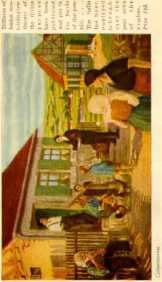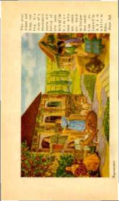in the first resurrection: on such the second death hath no power, but they shall be priests of God and of Christ, and shall reign with him a thousand vears. ’ ’ —Rev. 20:6. ’
The work of teaching and uplifting and blessing the nations and peoples of earth having ended, the new creation will still be God’s executive servant to carry out his purposes and will be for ever the recipient of his blessings. The Apostle Paul, being granted a mental vision of the coming glories that shall be the portion of the new creation, said: “God . . . hath raised us up together, and made us sit together in heavenly places in Christ Jesus; that in the ages to come he might shew the exceeding riches of his grace, in his kindness toward us through Christ Jesus.”— Eph. 2:4-7.
CHAPTER XIV
JEHOVAH is prepared to regenerate the human race. This he will do in his own good time. That time is now at hand. A knowledge of these great truths is now essential to the welfare of the people. To aid the people in obtaining this knowledge is the only reason for the publication of this book. It contains not man’s knowledge, but a statement of God’s purposes as revealed in his Word. The Lord has made provision for man to establish faith in God’s works. Knowledge, however, must accompany faith. Without faith it is impossible to please God and receive fully his benefits; hence the importance of knowledge.
Every commendable desire of man is embraced in one, and that is the desire for life and happiness. Without life man could enjoy nothing, of course. Even the small span of life that man now has he clings to with desperation. Doctors, hospitals, dieticians, health resorts, travel and all other conceivable things are employed to lengthen the span of life. It is only a short time until all such agencies fail, and man goes down to death. For many centuries man has had presented to him innumerable devices and schemes for obtaining life. The Devil has seen to it that these delusive things have been held before mankind to keep them away from God. By experience man has learned that all such schemes are false.
Now the whole world is in distress and perplexity. Fear has laid hold upon the people; they have fear of losing what little they possess and have no hope for the future. It is the time of man’s extremity. It is the 338 time of God’s opportunity. Knowing that the practices of sin would bring to man the present results, God timed the outworking of his plan so that he might reveal to man at the proper time the way that leads to life. Few of the people now know about God’s gracious provision; and their lack of knowledge is due generally to the clergymen who, as teachers of Satan’s false doctrines, have kept the people from hearing the truth. Therefore there is a famine in the land for the hearing of the Word of God.—Amos 8:11.
Shortly after the fall of man God began to foreshadow his new creation. Now that new creation is about complete. Why should God develop a new creation at all if the destiny of every man is fixed at death, as is claimed by the clergy? If God has provided heaven for some and torment for the masses, then why has he spent all this time and energy in preparing the new creation ? The people are beginning to see that the clergy have been and are wrong, and that their teachings are false; and now they are turning their minds toward God’s Word of truth. The systems which the clergy have organized and call churches arc but prisons, wherein are herded the fearful and credulous; and they are dominated by the ambitious and selfish who compose “the principal” of the organization. (Jer. 25: 34-36) The time has come when the people must be set free. They must have a knowledge of God’s way and manner of giving to them life and happiness, and the Lord has made provision for them to know.
For centuries the whole creation has groaned and travailed in pain until now. There has been a longing desire for that which would bring life, peace and happiness. For what has the fallen creation of earth been waiting during these many years? God’s answer is given in his Word, where it is written; “For the earnest expectation of the creature waiteth for the manifestation of the sons of God. ” (Rom. 8:19) Now the Son of God, Christ Jesus, has eome and begun the exercise of his power toward the tilings pertaining to man. This beloved Son of God is designated in the Scriptures under many titles, one of which is The Branch. Prophetically it was written of him: “And speak unto him, saying, Thus speaketh the Lord of hosts, saying, Behold the man whose name is The BRANCH: and he shall grow up out of his place, and he shall build the temple of the Lord: even he shall build the temple of the Lord; and he shall bear the glory, and shall sit and rule upon his throne; and he shall be a priest upon his throne: and the counsel of peace shall be between them both. ”—Zech. 6:12,13.
This prophecy is now being fulfilled. That beloved Son is The Branch, because he is the direct creation of God. He bears the glory of his Father, because he is next to Jehovah. He is the King whom God has set upon his throne; and he is the reigning Priest of the Most High God, because he is the Executive Officer of Jehovah. This mighty Son of Jehovah, The Branch, now comes to judge the living and the dead. (2 Tim. 4:1) This judgment shall result in the regeneration of all the obedient ones of the human race. In that blessed work of the Son of God the members of his body, the new creation, shall be associated with him; as it is written: “And Jesus said unto them, Verily I say unto you, That ye which have followed me, in the regeneration, when the Son of man shall sit in the throne of his glory, ye also shall sit upon twelve thrones, judging the twelve tribes of Israel.” —Matt. 19: 28.
In the above text the promise is that his reign will be a time of “regeneration”, and that the faithful members of his body shall sit with him on his throne and participate with him in that work. To regenerate means to generate the race anew. Regeneration is the act of making over or renewing, God hath appointed the day of the reign of Christ for that purpose. (Acts 17: 31) Over a period of six thousand years man has been degenerating. Now the great Priest and King, during his reign of a thousand years, will bring all the members of the human race who are obedient back to that perfect condition enjoyed by Adam while in Eden. What will be the method or means employed to accomplish the great work of regenerating the human race?
The New Covenant
Jehovah has declared that the method to be employed by him in regenerating the people is by the operation of the New Covenant. This he foreshadowed in the covenant he made with Moses on behalf of the nation of Israel. That first covenant was known as the Law Covenant, or Covenant of Sinai. One of the purposes of that covenant was to teach the people concerning the coming of Christ, the Messiah, and to foreshadow the New Covenant, which God makes with Christ on behalf of the people. It is by and through the terms of this New Covenant that God will regenerate the obedient ones of mankind.
A covenant is a solemn compact or agreement between two or more parties, whereby the parties thereto bind themselves to do or not to do the things specified in the letter of the agreement. Where one of the parties to the covenant is for any reason incompetent to enter directly into the agreement, that incompetent one may be represented by some one who is competent and who acts as his mediator. The mediator is one who intervenes and acts for the incompetent one, and as a messenger of the competent one, in the agreement.
Law means rule of action, commanding that which is right and prohibiting that which is wrong. When expressed, it is the statement of the fundamental rules to which all other rules of government must conform.
“Statutes” means the legislative enactments, judgments, or decrees made and promulgated in full harmony with the fundamental law. Statutes are laws or rules of action made in harmony with and in conformity to the fundamental or constitutional authority. The Constitution of the United States is the fundamental law of the land. The acts of Congress, duly passed and approved in accordance with the Constitution, form the statutes or statutory law of the land.
The fundamental law upon which the Covenant of Sinai was based was and is the ten commandments. (Ex. 20:1-17) The judgments or decrees of Jehovah made for the specific government of his people constituted the statutes of God concerning them. The will of God is his law, and that law is expressed in the ten commandments. The statutes are the commandments, judgments and decrees of Jehovah announced for the control, government and benefit of the people. All questions arising for the people of Israel to determine, concerning their drink, food, conduct, deportment and relation to their fellow man, would be determined by the statutes which God gave to that people.
Briefly stated, the covenant was the agreement; the law, the ten commandments or fundamental rules; and the statutes, God’s prescribed rules for the specific or detailed direction of the people. The Covenant of Sinai foreshadowed a New Law Covenant, which will be based upon the fundamental law of God and will specifically set forth that which will be required of the people in order to obtain the blessings promised.
Life
The Law Covenant was between God and the nation of Israel, with Moses as the mediator. Because of the faith of Moses he was counted righteous, and therefore competent to represent the nation of Israel in the covenant. (Ex. 19:5-8; Heb. 11:23-28) The law of that covenant provided that if Israel would keep the terms thereof God would bless them in body, in their families, in their fields, in their flocks and their herds, and that they would be called by the name of the Lord. But if they failed and refused to keep that eovenant according to the law thereof, then curses or calamities should befall them. (See Deuteronomy, chapters 27 and 28.) The gracious provision of God made in that covenant was that if the people would keep it they should have life. (Rom. 10:5) “Ye shall therefore keep my statutes, and my judgments; which if a man do, he shall live in them: I am the Lord. ’ ’— Lev. 18: 5.
That Law Covenant failed because the Israelites, being imperfect men, were unable to keep it, and because Moses, the mediator, was an imperfect man and could not supply that wherein the Israelites came short. The great lesson it teaches is that man, by his own efforts, can not get life, nor can imperfect man aid him in getting life, but that life is a gracious gift from God, through Jesus Christ his beloved Son, the Mediator of the New Covenant. (Rom. 6:23; 8: 2, 3; Heb. 8:6,7) Furthermore, it foreshadowed that in the future God would make a New Covenant, with Christ as the Mediator, and that this covenant would be made for the benefit of Israel and for the benefit of all the people; as it is written:
“For finding fault with them, he saith, Behold, the days come, saith the Lord, when I will make a new covenant with the house of Israel and with the house of Judah: not according to the covenant that I made with their fathers in the day when I took them by the hand to lead them out of the land of Egypt; because they continued not in my covenant, and I regarded them not, saith the Lord. For this is the covenant that I will make with the house of Israel after those days, saith the Lord; I will put my laws into their mind, and write them in their hearts: and I will be to them a God, and they shall be to me a people: and they shall not teach every man his neighbour, and every man his brother, saying, Know the Lord: for all shall know me, from the least to the greatest. For I will be merciful to their unrighteousness, and their sins and their iniquities will I remember no more.”—Heb. 8: 8-12.
Note that part of the New Covenant which is especially magnified in the above statement, to wit, that not merely will the people then attempt to obey, but •God. will put his rule of action into their minds by teaching them in the right way, and will write it in their hearts, which will mean that they will be moved by an unselfish desire to please him; that they shall be his people and he will be their God; and that all shall know the Lord, from the least to the greatest. This emphasizes the fact stated by Jesus, that ‘this is life eternal, to know thee the only true God, and Jesus Christ, whom thou has sent’.—John 17:3.
The ransom sacrifice of Christ Jesus applied as a sin-offering on behalf of the people will release them from their disabilities when by faith they accept the same. (Rom. 5:18,19) Since this gift comes to all men, all men must be brought to a knowledge of the truth before they can accept the gift. (1 Tim. 2:3-6) Christ, the perfect One, is the Mediator of the New Covenant, which God will make for man and through which man will be regenerated.—Heb. 8:6; 9:15; 12:24.
That New Covenant will prescribe the rules or statutes by which the people must bo governed and according to which they must deport themselves. Such rules will be the word of Christ, as the great Exec-
utive Officer of Jehovah ; and all who keep his words with gladness of heart shall live and shall never die, because it is written: “If a man keep my saying, he shall never see death.” (John 8:51) “Whosoever liveth and believeth in me shall never die.” (John 11: 26) Then when the people who arc and have been wicked turn away from their wickedness and do that which is right, they shall live and shall not die.— Ezek. 18: 27, 28. .
Christ is the great Shiloh unto whom the people shall be gathered. (Gen. 49:10) He is the great One whom Moses foreshadowed. (Deut, 18:15,18) To disobey him means to die. To obey him means to be regenerated and restored to life. “And he shall send Jesus Christ, which before was preached unto you: whom the heaven must receive until the times of restitution of all things, which God hath spoken by the mouth of all his holy prophets since the world began. For Moses truly said unto the fathers, A prophet shall the Lord your God raise up unto you of your brethren, like unto me; him shall ye hear in all things whatsoever he shall say unto you. And it shall come to pass, that every soul, which will not hear that prophet, shall be destroyed from among the people. ’ ’—Acts 3: 20-23. _
Christ, the Mediator of the New Covenant, is “the seed” of Abraham through which the blessings must come to all nations and peoples of the earth. (Gen. 22:18; Gal. 3:8,16,27-29) During the period of time in which Christ is regenerating the human race Satan will not be permitted to deceive the people or nations in any manner whatsoever. (Rev. 20:1-3) Then the people, being brought to an exact knowledge of the truth, will understand it; and all who are obedient to the terms of the New Covenant shall live.
The reign of Christ will result in the destruction of the enemy death. “For he must reign, till he hath put all enemies under his feet. The last enemy that shall be destroyed is death.” (1 Cor. 15: 25, 26) When all the obedient ones of the human race are regenerated and restored there will be no more sorrow, nor sickness, nor pain, nor death. (Rev. 21:1-5) The earth will be fdlcd with a creation of perfect men and women, enjoying life, liberty and happiness, who will delight to praise the great Creator.
Now much of the surface of the earth is unfit for habitation of man. There are many places where the earth is barren, a wilderness. God’s creative work concerning the earth is not yet complete. During the period of regeneration of man the Lord will gradually bring the earth to a high state of cultivation. This he will do by instructing man what to do and how to do it. As it is written, then “the wilderness, and the solitary place, shall he glad for them; and the desert shall rejoice, and blossom as the rose. It shall blossom abundantly, and rejoice even with joy and singing; the glory of Lebanon shall be given unto it, the excellency of Carmel and Sharon; they shall see the glory of the Lord, and the excellency of our God. ’ ’ —Isa. 35:1, 2.
It will be in this period of time of regeneration that the eyes of the blind shall be opened and the ears of the deaf shall be unstopped. “Then shall the lame man leap as an hart, and the tongue of the dumb sing: for in the wilderness shall waters break out, and streams in the desert. And the parched ground shall become a pool, and the thirsty land springs of water: in the habitation of dragons, where each lay, shall be grass with reeds and rushes. ’ ’—Isa. 35: 5-7.
The desert land shall become a fit and happy place for man to dwell, as it is written: “And the desolate land shall be tilled, whereas it lay desolate in the sight of all that passed by. And they shall say, This land that was desolate is become like the garden of Eden; and the waste and desolate and ruined cities are become fenced, and are inhabited.” (Ezek. 30: 34, 35) What Eden meant to man in his perfect state the whole earth will be to the regenerated human race. God made the earth to be inhabited; and with the race regenerated the earth will be man’s home and a fit place for perfect man to live in for ever. (Isa. 45: 12,18) All this God is doing for man unselfishly, because God is love.
Jehovah has made his inanimate creation to speak with eloquence concerning his wisdom and his love. Among the favored places of such creation of earth is southern California. From the summit of Mount Helix is had an entrancing view. Forming a semicircle to the east and to the north is a range of majestic mountains that have stood there for ages. At certain seasons the higher mountains are white with snow, symbolic of the purity and glory of the Creator and his kingdom. The lower range is covered with evergreens, symbolic of life everlasting proceeding from the kingdom of God. The rivulets of pure water, coursing down the mountain sides through the valleys of verdure and flowers, quietly pass on to the great ocean on the west, the waves of which are now gently kissing the peaceful shores. Symbolically this speaks of the blessed fountain of Jehovah, from which proceed the life-giving streams of truth, guiding men to God’s boundless ocean of wisdom and glory.
One can fancy that Eden looked something like that favored place. There perfect man with his perfect wife walked midst the trees beside the laughing streams, and mingled their perfect and happy voices with the songs of the feathered tribes.
To this day the inanimate creation stands as a witness to the great Creator. With the prophet it says: The earth is the Lord’s and the fulness thereof. He made it for man. His inanimate creation is beautiful and glorious, and now only man is vile. But God has given his word and his oath that he will regenerate man, and that then the knowledge of the glory of God shall fill the whole earth even as the waters fill the great and deep blue ocean. Then all men shall know that Jehovah is God; that his works stand fast for ever, and are done in truth and uprightness. All his creation shall praise him. Restored man, following the lead of the Chief Musician, will join in the glad song;
"Thy lovingkindness, 0 Jehovah, is in the heavens; Thy faithfulness reacheth unto the skies.
Thy righteousness is like the mountains of God;
Thy judgments are a great deep:
0 Jehovah, thou preservest man and beast.
How precious is thy lovingkindness, 0 God! . . . The works of Jehovah are great,
Sought out of all them that have pleasure therein. His work is honor and majesty;
And his righteousness endureth for ever.
He hath made his wonderful works to be
remembered.”—Ps. 36:5-7; 111:2-4, R. V.